Bản dịch tiếng Việt — Ableton Live Reference Manual v12 (10 chương thiết yếu cho Launchkey Mini & Live Lite). Giữ nguyên thuật ngữ chuyên ngành để dễ tra cứu online.
Live là kết quả của khát vọng của các nhạc sĩ muốn có một cách tốt hơn để sáng tác, sản xuất và biểu diễn âm nhạc bằng máy tính. Rất nhiều công sức đã được đổ vào việc làm cho phần mềm “dễ dùng và vui”, nhưng đồng thời “có khả năng giúp bạn tạo ra âm nhạc với chiều sâu và sự tinh vi không giới hạn”.
Cẩm nang này đóng vai trò tài liệu tham khảo để bạn làm quen với mọi tính năng và quy trình làm việc (workflow) của Live. Đội ngũ Ableton hy vọng bạn sẽ tận hưởng việc sử dụng Live và nó sẽ làm phong phú thêm quá trình sáng tạo của bạn.
Chương 2 · First Steps (Các bước đầu tiên)
2.1 Cài đặt và Kích hoạt (Installation & Authorization)
Trước khi bắt đầu với Live, hãy đảm bảo bạn đã cài đặt và kích hoạt (authorize) phiên bản mới nhất. Bạn có thể tải trình cài đặt Live từ tài khoản của mình trên ableton.com và chạy nó để cài đặt. Khi cài xong, tiến hành kích hoạt Live. Mỗi giấy phép (license) Live đi kèm hai lượt kích hoạt, nên bạn có thể dùng phần mềm trên tối đa hai máy tính — với điều kiện chỉ dùng một máy tại một thời điểm.
2.2 Tìm hiểu về Live (Learning About Live)
Có nhiều công cụ trong Live và nguồn bên ngoài để giúp bạn làm quen. Live có hai công cụ học tập tích hợp: Learn View— khung xem bài học dẫn dắt và Info View— khung xem trợ giúp theo ngữ cảnh.
2.2.1 Learn View
Learn View gồm các mô-đun học tập có cấu trúc, kết hợp video và giải thích text, dẫn bạn qua giao diện và tính năng chính từng bước. Nó hiển thị mặc định khi mở Live lần đầu; đóng bằng nút X góc trên trái và mở lại qua menu Help hoặc phím Ctrl Alt 7 (Win) / Cmd Option 7 (Mac).
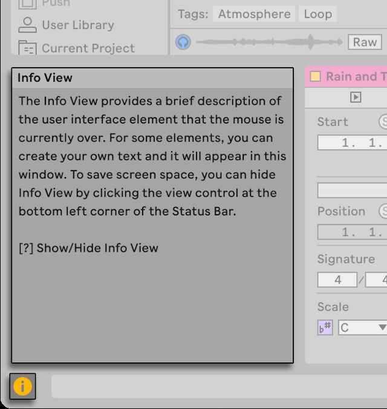
Trang chủ của Learn View.
Mỗi bài học có video, đoạn text giải thích khái niệm, và liên kết tới bài học khác. Nút Complete Lesson cuối mỗi bài học để đánh dấu hoàn thành (hiện dấu kiểm trên trang chủ).
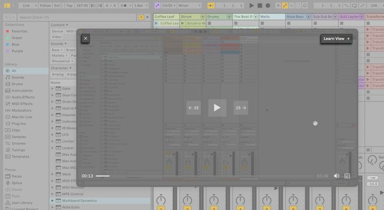
Các bài học đã hoàn thành trong một mô-đun.
Video có thể mở ở chế độ picture-in-picture (PiP) — cho phép thay đổi kích thước và di chuyển tự do trên màn hình, luôn nằm trên cùng các cửa sổ khác.
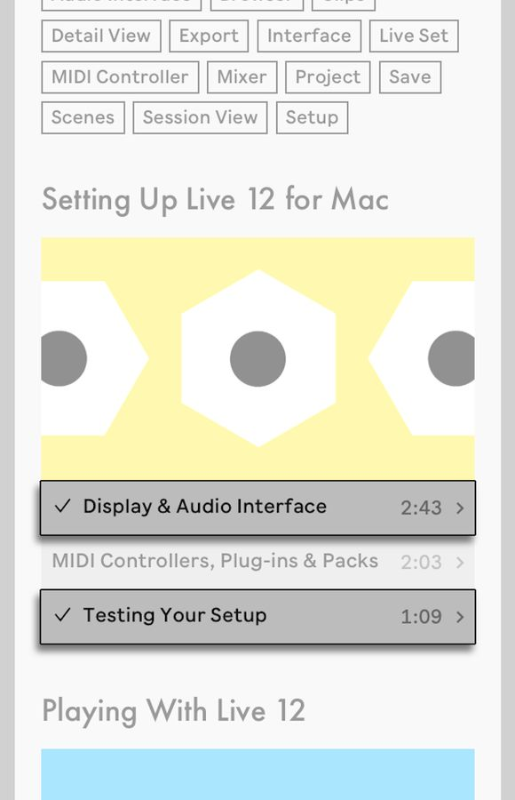
Dùng công tắc để mở cửa sổ picture-in-picture.
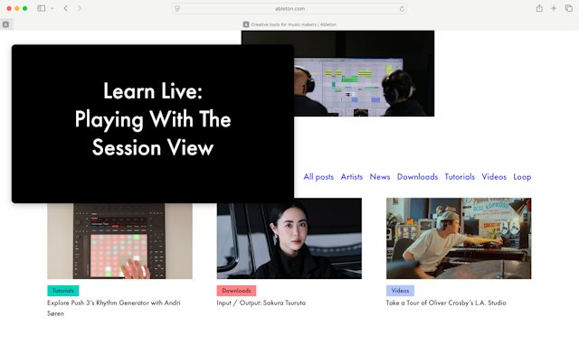
Đóng PiP hoặc mở lại Learn View.
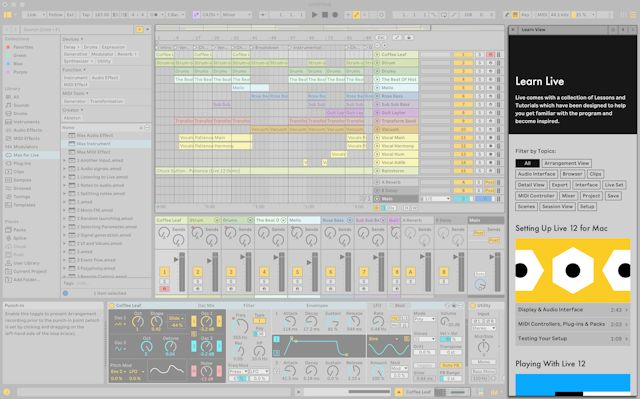
Cửa sổ PiP hiển thị trên một cửa sổ trình duyệt.
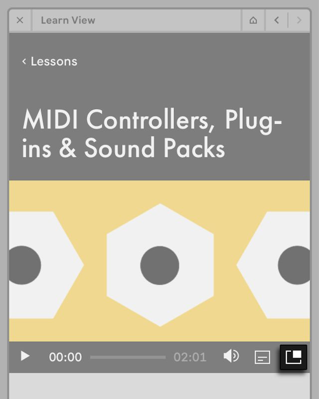
Nhấn Reload để làm mới Learn View khi mất mạng.
2.2.2 Info View
Info View hiển thị tên và chức năng của bất kỳ phần tử UI nào khi bạn di chuột qua. Bật/tắt bằng công tắc góc dưới trái hoặc phím ?. Bạn có thể tạo ghi chú text riêng cho track, clip, device... qua lệnh Edit Info Text trong menu ngữ cảnh.
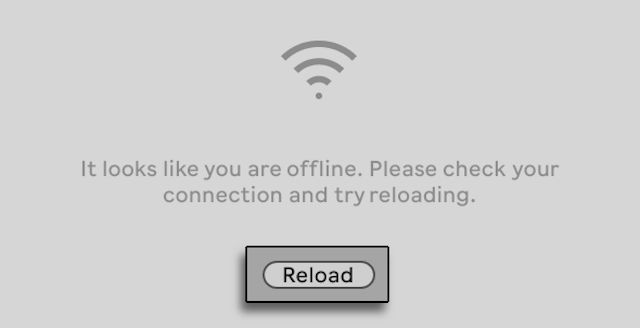
Info View và nút Show/Hide của nó.
2.2.3 Các nguồn học tập khác
Chúng tôi đặc biệt khuyên bạn đọc chương Live Concepts — tóm tắt mọi thứ về Live và khả năng của nó. Các chương còn lại đóng vai trò tài liệu tham khảo chuyên sâu hơn. Ngoài ra còn có kênh YouTube chính thức của Ableton, và hai trang web tương tác Learning Music & Learning Synths.
2.3 Cài đặt của Live (Settings)
Cửa sổ Settings (menu Options trên Win, menu Live trên Mac, hoặc Ctrl , / Cmd ,) chứa các tab:
Theme & Colors — lược đồ màu (sáng/tối/neutral), độ mờ đường lưới, cường độ màu sắc, tự gán màu track/clip.
Audio — thiết lập kết nối âm thanh với interface, thiết bị vào/ra, sample rate, độ trễ.
Link — cấu hình Ableton Link.
Tempo & MIDI — nhận diện thiết bị ngoài để đồng bộ tempo, phát MIDI, và điều khiển từ xa giao diện.
File & Folder — xử lý dữ liệu, đường dẫn Max for Live, bộ nhớ đệm giải mã.
Library — vị trí mặc định cho Packs, User Library, và self-containment khi lưu.
Plug-Ins — vị trí thư viện plug-in, hành vi hiển thị cửa sổ plug-in.
Record, Warp & Launch — trạng thái mặc định cho Live Set mới, tùy chọn bản ghi mới.
Licenses & Updates — quản lý cấp phép, cập nhật tự động.
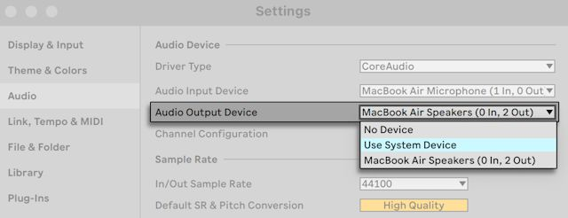
Tùy chọn Use System Device trên macOS.
Video của Ableton (Beginner Series Ep. 1) — làm beat đầu tiên trong Live.
Chương 3 · Live Concepts (Khái niệm cốt lõi)
Chương này giới thiệu các khái niệm nền tảng của Live. Nắm vững chúng sẽ giúp bạn khai thác tối đa phần mềm khi sáng tác.
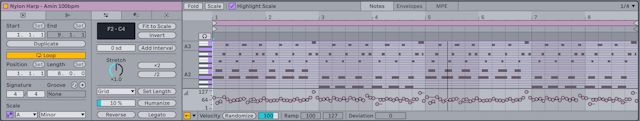
3.1 Control Bar (Thanh điều khiển)
Control Bar chứa các điều khiển transport, tempo, cài đặt MIDI, theo dõi CPU và nút chuyển view. Gồm các phần: Browser Options, Tempo Settings & Metronome, Scale Settings, Follow & Arrangement Position, Transport Controls, Automation & Capture MIDI, Arrangement Loop Settings, MIDI & CPU Settings, và View Selector.
3.2 Status Bar
Hiển thị thông tin hữu ích như thông báo lỗi/cập nhật; khi làm việc trong MIDI Note Editor, nó cung cấp chi tiết về pitch, velocity và probability của nốt đang chọn.
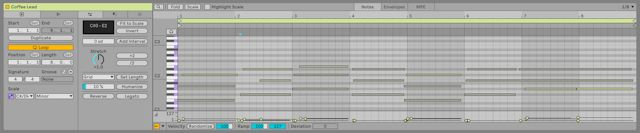
3.3 Browser (Trình duyệt)
Nơi quản lý thư viện âm thanh: Core Library, Live Packs, preset, sample, device, Ableton Cloud, Push và thư mục thủ công. Ẩn/hiện bằng nút trên Control Bar hoặc Ctrl Alt 5 (Win) / Cmd Option 5 (Mac).
3.4 Sound Similarity
Tính năng nhận diện âm tương tự để tìm kiếm (Similarity Search) và hoán đổi sample (Similar Sample Swapping). Hoạt động với sample dài tối đa 60 giây, preset nhạc cụ và preset trống. Phím Ctrl Shift F / Cmd Shift F.
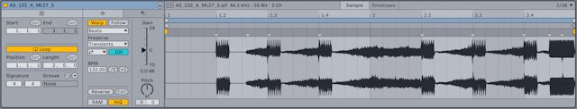
3.5 Live Sets
Tài liệu bạn tạo trên Live gọi là một Live Set— một “bản nhạc/dự án” trong Live. Live Set nằm trong một Live Project— thư mục tập hợp tài liệu liên quan. Khi đã lưu, mở lại qua lệnh Open trong menu File; tệp của project hiện tại cũng truy cập qua nhãn Current Project.
3.6 Arrangement và Session
Clip— đoạn âm thanh/MIDI có thể phát là khối xây dựng cơ bản. Có hai view làm việc với clip:
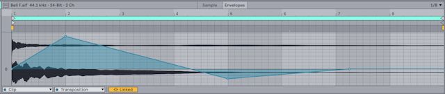
Arrangement View — bố trí clip theo dòng thời gian tuyến tính.
Session View — một “launching base” theo thời gian thực; mỗi clip có nút phát riêng để kích hoạt bất cứ lúc nào.
Chuyển giữa hai view bằng phím TAB, hoặc Alt 1/Alt 2 (Win) / Option 1/Option 2 (Mac). Khi chuyển trong lúc phát, chỉ view đổi, clip đang phát không bị ảnh hưởng. Bạn có thể ngẫu hứng với Session clip và ghi vào Arrangement để chỉnh sửa sâu hơn.
3.7 Tracks
Track— dải kênh lưu clip, quản lý luồng tín hiệu và tạo clip mới qua tổng hợp/hiệu ứng. Session và Arrangement dùng chung hệ thống track. Trong Session, track nằm theo cột; trong Arrangement nằm theo hàng ngang. Một track chỉ có thể phát một clip tại một thời điểm, nên các clip thay thế nhau được đặt trong cùng một cột của Session View. Khi clip trong Session được phát, clip trong Arrangement của track đó dừng lại (Session luôn được ưu tiên). Nhấn nút Back to Arrangement để quay lại phát Arrangement.
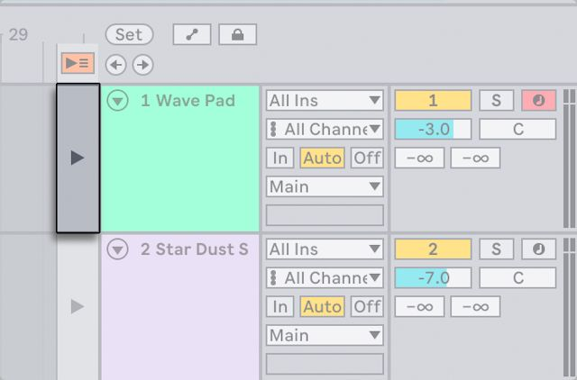
3.8 Audio và MIDI
Live xử lý hai loại tín hiệu: Audio (chuỗi số mô phỏng sóng âm liên tục) và MIDI (chuỗi lệnh kiểu “phát nốt C4 ở mức mezzo piano”, giống nốt trên bản nhạc). Để nghe được MIDI cần có instrument— nhạc cụ chuyển MIDI thành Audio. Audio và MIDI được ghi/phát bằng loại track tương ứng; audio clip không thể thêm vào MIDI track và ngược lại.
3.9 Audio Clip và Sample
Audio clip chứa tham chiếu tới một sample— tệp âm thanh; nó lưu vị trí tệp, đoạn nào được phát và cách phát. Kéo sample vào Live sẽ tự tạo clip. Warping— kéo giãn thời gian là thay đổi tốc độ phát sample độc lập với pitch; thuật toán Auto-Warp giúp đồng bộ bất kỳ sample nào với tempo bài hát.
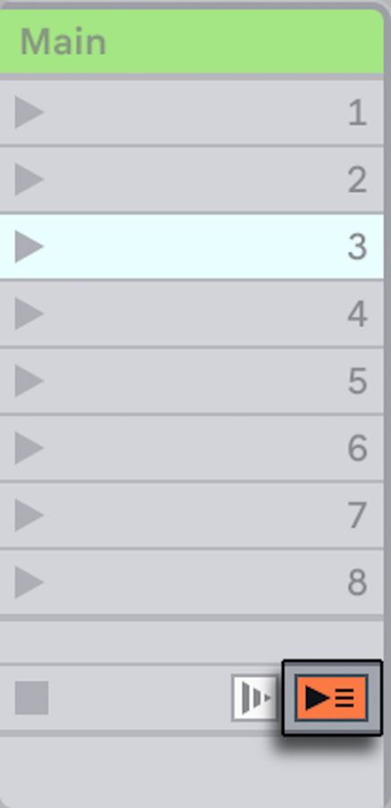
3.10 MIDI Clip và tệp MIDI
MIDI clip chứa nốt nhạc và envelope — đường bao điều khiển. Khi nhập tệp MIDI, dữ liệu tích hợp thẳng vào Live Set. Nội dung chỉnh được qua Clip View. Thêm nốt qua Draw Mode, MIDI Tools hoặc bộ chuyển audio-to-MIDI.
3.11 Devices (Thiết bị)
Một track chứa một chuỗi device — thiết bị để xử lý tín hiệu. Ba loại chính:
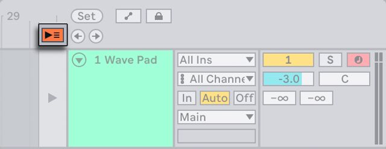
Audio effects — chỉ nhận/trả Audio; dùng cho mọi track.
MIDI effects — nhận/trả MIDI; chỉ dùng cho MIDI track.
Instruments — chuyển MIDI thành Audio; đặt sau MIDI effects.
Thêm device bằng kéo-thả từ Browser hoặc chọn device rồi nhấn Enter. Plug-in bên thứ ba (VST, Audio Units) cũng có trong trình duyệt.
3.12 Clip View và Device View
Clip View điều chỉnh thuộc tính clip (điểm bắt đầu/kết thúc, loop, scale, follow action). Device View hiển thị danh sách device đang tải trên track. Có thể xếp chồng hai view: Clip View Ctrl Alt 3 / Cmd Option 3; Device View Ctrl Alt 4 / Cmd Option 4.
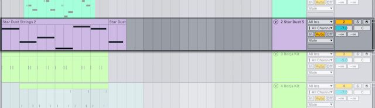
3.13 Scale Awareness
Áp dụng một âm giai (scale) cụ thể cho clip, hiệu ứng hoặc device. Khi kích hoạt, nốt của scale được làm nổi bật màu tím. Áp dụng cho MIDI Tools, Pitch/Time Utilities và hiệu ứng MIDI như Arpeggiator, Chord, Pitch, Random, Scale.
3.14 Mixer (Bộ trộn)
Khi tín hiệu đi qua chuỗi device của track, nó kết thúc tại Mixer. Session và Arrangement dùng chung Mixer. Mixer điều khiển volume, pan và send— tín hiệu gửi qua Return track. Return track— track trả về chỉ chứa hiệu ứng, không chứa clip; mọi track có thể chia sẻ một phần tín hiệu vào Return track để dùng chung hiệu ứng (VD: một reverb cho nhiều track). Live còn có crossfader để chuyển mượt giữa các clip đang phát trên các track khác nhau.
3.15 Preset và Rack
Mỗi device có thể lưu/truy xuất bộ thông số dưới dạng preset— cấu hình đặt sẵn, độc lập với Live Set. Instrument/Drum/Effect Rack cho phép lưu tổ hợp nhiều device thành một preset duy nhất, tạo hệ thống phức tạp.
3.16 Routing
Mọi track đều cung cấp tín hiệu (Audio hoặc MIDI); đích đến được cài trong phần In/Out của Mixer (mở qua menu View). Đặc tính “patchbay” này cho phép resampling, submixing, ghép synthesizer, và kết nối phần cứng ngoài qua device External Audio Effect và External Instrument.
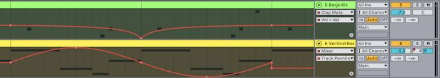
3.17 Ghi clip mới (Recording New Clips)
Audio/MIDI track có thể ghi tín hiệu đầu vào thành clip mới. Nhấn nút Arm trên track để chuẩn bị ghi; giữ Ctrl / Cmd khi nhấn Arm để arm nhiều track cùng lúc. Nút Arrangement Record ghi vào Arrangement; nút Session Record ghi vào ô trống của Session mà không cần dừng nhạc. Overdub — ghi đè kết hợp quantize là cách lý tưởng để tạo drum pattern theo từng lớp.
3.18 Automation Envelope
Automation— tự động hóa là sự thay đổi giá trị thông số theo thời gian. Gần như mọi nút/hiệu ứng trong Live đều tự động hóa được. Bật Automation Arm và Arrangement Record, mọi thao tác chỉnh nút sẽ được ghi. Nếu chỉnh nút đã có automation khi không ghi, automation nút đó tạm bị vô hiệu (nhấn Re-Enable Automation để bật lại).
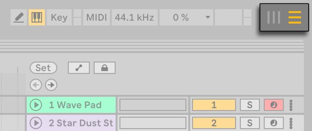
3.19 Clip Envelope
Clip envelope để tự động hóa hoặc điều biến (modulate) device và mixer. Trong audio clip, envelope có thể ảnh hưởng pitch, volume và thay đổi giai điệu; trong MIDI clip, biểu diễn dữ liệu MIDI controller. Envelope có thể tách rời (unlink) khỏi clip để tạo loop độc lập.
3.20 MIDI và Key Remote
Live cho phép remote-control hầu hết nút bấm bằng bộ điều khiển MIDI hoặc bàn phím máy tính. Bật MIDI Map Mode bằng nút MIDI trong Control Bar, nhấp vào nút trong Live, rồi gửi tín hiệu từ bộ điều khiển (VD: xoay núm vật lý) để gán. Key Map Mode hoạt động tương tự với phím bàn phím.
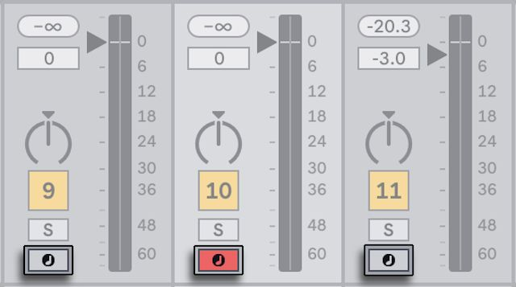
Lưu ý cho Launchkey Mini: Đây chính là cơ chế Launchkey dùng để điều khiển Live — các núm và pad của Launchkey gửi tín hiệu MIDI được Live nhận diện và gán tự động khi chọn Control Surface Launchkey Mini MK3.
3.21 Lưu và xuất (Saving & Exporting)
Khi lưu Live Set, mọi clip, vị trí và cài đặt device đều được lưu. Nhưng tệp sample có thể mất kết nối nếu bị di chuyển/xóa. Dùng lệnh Collect All and Save để sao chép tất cả sample vào thư mục project. Lệnh Export Audio/Video xuất âm thanh ra file (Ctrl Shift R / Cmd Shift R). Kéo Session clip ra User Library để lưu thành Live Clip — lưu không chỉ cài đặt clip mà còn cả chuỗi instrument và effect của track tương ứng.
Chương 4 · Working with the Browser (Dùng trình duyệt)
Browser của Live là nơi tương tác với thư viện âm nhạc: Core Library, Live Packs, preset, sample, device của bên thứ ba và thư mục trên ổ cứng. Cũng truy cập Ableton Cloud và Push qua phần Places.
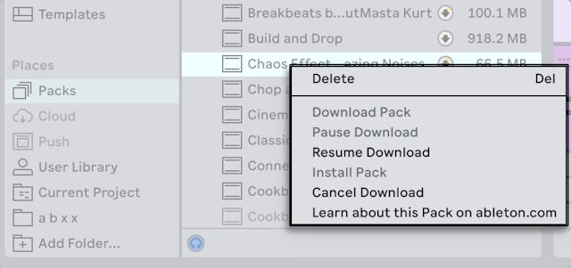
Browser gồm: thanh tìm kiếm, sidebar (Collections, Library, Places), bộ lọc (Filter), ngăn nội dung (content pane) và tab Preview. Bạn có thể điều chỉnh độ rộng các ngăn bằng cách kéo đường phân chia.
4.1 Content Pane (Ngăn nội dung)
Hiển thị danh sách mục. Cột Name luôn có; các cột khác thêm qua Content Options menu. Sắp xếp lại cột bằng kéo-thả tiêu đề; nhấp tên cột để sắp xếp tăng/giảm.
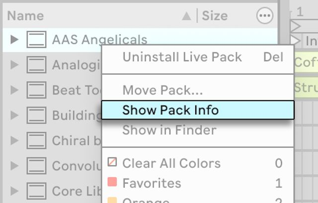
4.2 Search Bar (Thanh tìm kiếm)
Nhập từ khóa; kết quả bao gồm file khớp tất cả từ khóa. Để tìm toàn bộ Library, chọn nhãn All hoặc Ctrl F / Cmd F. Tìm qua thẻ bằng cách gõ dấu # kèm tên thẻ (VD: #Drums) — có tự hoàn thành.
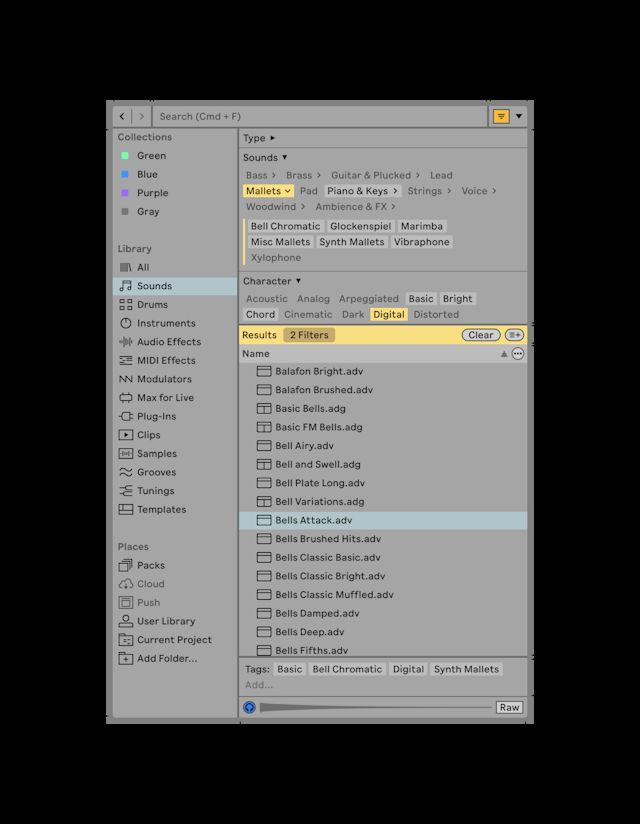
Phím tắt tìm không cần chuột: Ctrl F đưa con trỏ vào ô tìm kiếm, gõ từ khóa, mũi tên xuống để nhảy kết quả, Esc để xóa.
4.2.1 Lưu kết quả tìm kiếm thành nhãn tùy chỉnh
Nút Add Label bên phải nút Clear lưu kết quả tìm kiếm thành một nhãn tùy chỉnh, hoạt động như nhãn mặc định trong Library.
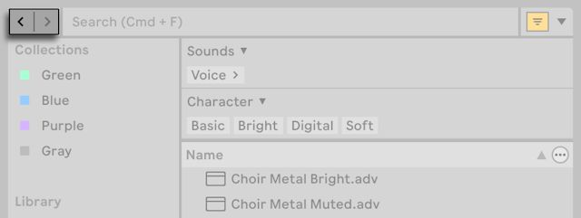
4.3 Browser History
Các nút mũi tên trái/phải thanh tìm kiếm để đi tới/lui trong lịch sử trình duyệt (bao gồm cả tìm kiếm trước đó). Phím Ctrl ] / Cmd ] (tới), Ctrl [ / Cmd [ (lui).
4.4 Filters và Tags
4.4.1 Filter Groups (Nhóm bộ lọc)
Mỗi nhóm chứa thẻ để thu hẹp kết quả. Chọn nhiều thẻ trong nhóm bằng Ctrl / Cmd + nhấp.
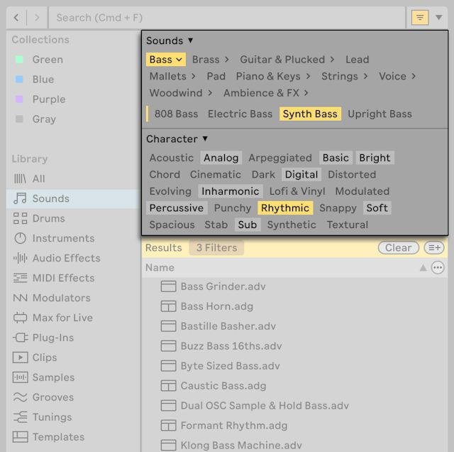
4.4.2 Tags (Thẻ)
Thẻ rất hữu ích để định vị/sắp xếp nội dung. Nội dung factory đều có thẻ mặc định (không xóa được, nhưng gán thêm được). Live định kỳ chạy sound analysis để tự gắn thẻ cho sample người dùng (dưới 60 giây) — bật/tắt qua Auto Tags.
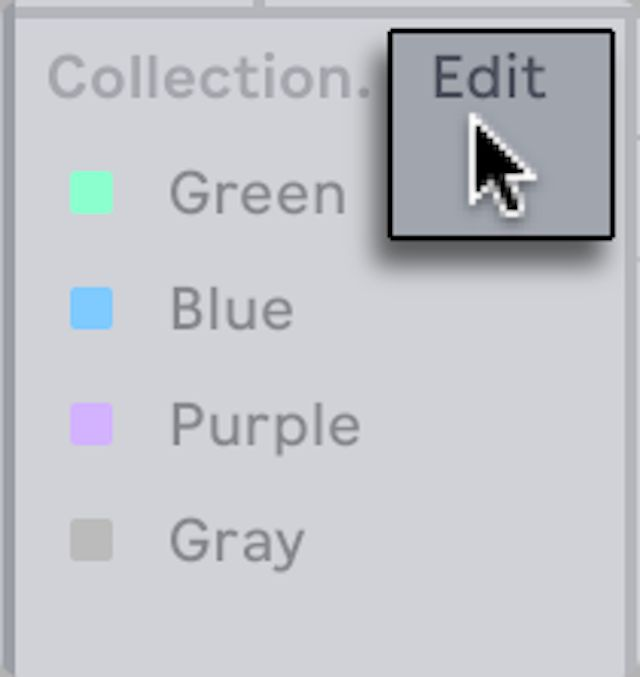
4.4.3 Tag Editor
Tạo và gán thẻ cho bất kỳ mục nào; tạo nhóm thẻ riêng qua Tag Editor (mở qua Filter View menu). Đánh dấu hộp kiểm để gán/bỏ gán; giữ Shift để gán cho nhiều mục cùng lúc.
4.4.4 Quick Tags
Hiển thị các thẻ đã gán cho mục đang chọn, giúp gán nhanh. Nhấp Add... để gán/tạo thẻ; nhấp dấu X để xóa thẻ khỏi mục.
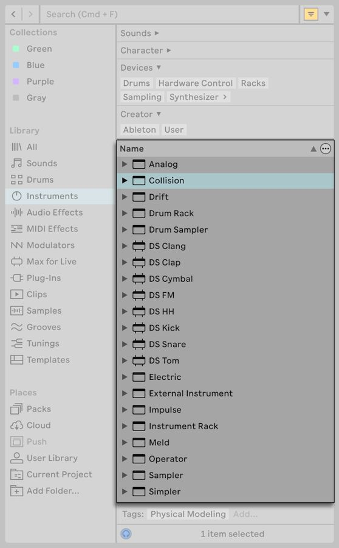
4.5 Collections
Mỗi nhãn Collections có màu riêng để gom mục (VD: mục yêu thích). Gán màu qua menu chuột phải hoặc phím số 1–7; đặt lại bằng 0. Đổi tên bằng Ctrl R / Cmd R.
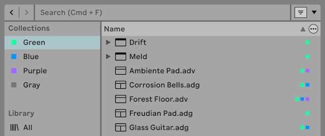
4.6 Library
Sắp xếp mục theo loại, qua các nhãn: All, Sounds, Drums, Instruments, Audio Effects, MIDI Effects, Modulators, Max for Live, Plug-Ins, Clips, Samples, Grooves, Templates, Tunings.
4.7 Places
Chứa Live Packs, User Library, Current Project và thư mục ngoài. Có thể thêm nhãn Splice, Cloud, Push qua Library Settings.
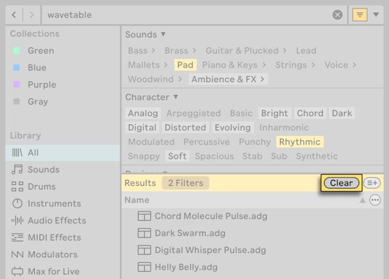
Packs — Core Library và Pack đã cài.
Splice — thư viện sample Splice (tích hợp).
Cloud — Set đồng bộ từ Note và Move.
Push — tệp từ Push 3 (Standalone Mode).
User Library — mục bạn tự lưu (preset, sample, clip...).
Current Project — tệp thuộc project đang mở.
User Folder — thư mục bạn tự thêm.
4.7.1 Tải và cài Pack trong Browser
Nhãn Packs hiển thị Pack đã cài, cập nhật và có thể tải. Nhấp biểu tượng tải để lấy; có thể tải nhiều Pack cùng lúc. Khi xong, nhấn Install để cài.
4.7.2 Pack Info
Trang Pack Info cung cấp chi tiết người tạo, tóm tắt, hướng dẫn — qua Help menu > Pack Overview, hoặc chuột phải Pack > Show Pack Info.
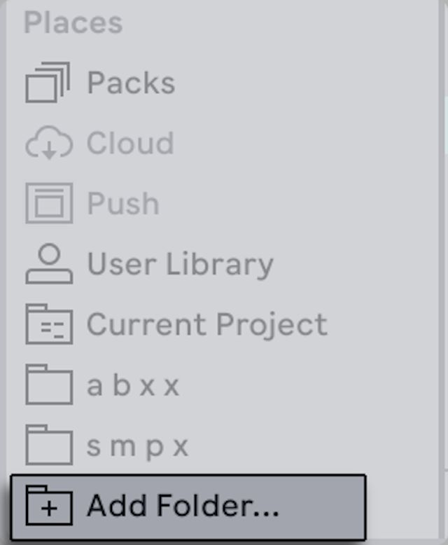
4.7.6 User Library
Nơi lưu thiết lập mặc định, preset, template. Vị trí trên ổ cứng: Windows \Users\<username>\Documents\Ableton\User Library; Mac Macintosh HD/Users/<username>/Music/Ableton/User Library.
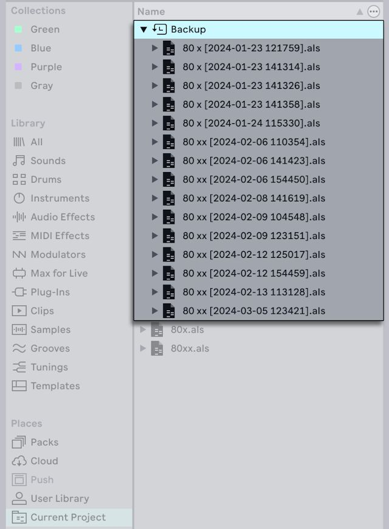
4.7.7 Current Project
Chứa toàn bộ tệp của project đang mở. Sau khi lưu ít nhất 2 lần, thư mục Backup xuất hiện, lưu 10 phiên bản gần nhất có dấu thời gian.
4.7.8 User Folder
Thêm thư mục ngoài vào Places bằng kéo-thả hoặc Add Folder. Live sẽ quét thư mục để đánh mục lục. Không nên thêm toàn bộ ổ cứng vì làm chậm việc đánh mục lục.
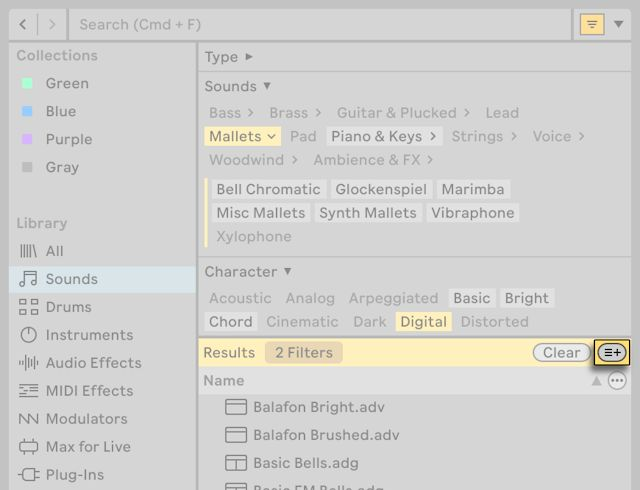
4.8 Điều hướng trong Browser
Cuộn bằng phím mũi tên Lên/Xuống, con lăn chuột. Đóng/mở thư mục và di chuyển giữa sidebar/content pane bằng mũi tên Trái/Phải. Mở nhiều thư mục cùng lúc: giữ Ctrl / Cmd khi nhấp mở.
4.9 Preview (Xem trước file)
Bật nút Preview để tự nghe thử file khi chọn. Nhấp vùng scrub trên dạng sóng để nhảy tới điểm phát. Bật nút Raw để nghe tốc độ gốc (không warp); khi Raw tắt, bản xem trước sẽ loop.
4.10 Thêm nội dung vào Live Set
Kéo-thả mục từ browser vào track trong Session/Arrangement View; thả vào khoảng trống để tạo track mới.
Trong Session View, nhấp đúp hoặc Enter để nạp vào track đang chọn (sample vào Simpler nếu là MIDI track, vào clip slot nếu là Audio track).
Kéo-thả tệp trực tiếp từ Explorer/Finder vào Live.
Video của Ableton — tìm và tổ chức âm thanh với Browser.
Chương 5 · Session View
Đây là khung nhìn quan trọng nhất khi dùng Launchkey Mini — các pad của Launchkey điều khiển trực tiếp Session View. Các mục con bên dưới.
Live có hai khung nhìn (view) để làm việc: Session View— khung xem theo phiên/scenario và Arrangement View— khung xem theo dải thời gian. Session View là môi trường lý tưởng để chơi nhạc nhanh, thử ý tưởng và biểu diễn: bạn có thể chạy (launch) các vòng lặp (loop) và mẫu (sample) độc lập, mix và ghép chúng lại với nhau theo thời gian thực.
Video của Ableton — giới thiệu Session View (YouTube, nhúng từ kênh chính thức)
Track, Clip và ô clip (Clip Slot)
Session View là một lưới theo chiều dọc: mỗi Track— dải kênh là một cột, và mỗi hàng là một Scene— cảnh. Mỗi ô giao nhau giữa track và scene là một Clip Slot— ô chứa clip, nơi có thể chứa một Clip— một đoạn âm thanh/MIDI có thể chạy độc lập.
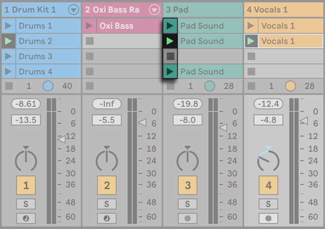
Các điều khiển clip trong Session View.
Mỗi Track trong Session View tương ứng với một Track trong Arrangement View; nội dung bạn chơi/thu trong Session có thể được ghi vào Arrangement (xem phần di chuyển giữa hai View).
Khi bạn có nhiều track, có thể gom chúng thành Group Track— track nhóm. Một Group Track có thể được thu gọn (shrunken) để tiết kiệm không gian.
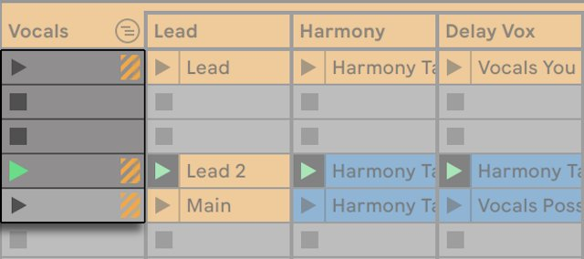
Group Track với các ô clip con.
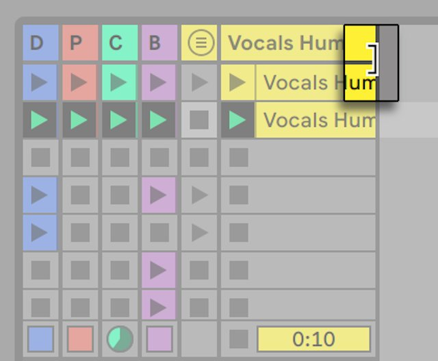
Track đã thu gọn để tiết kiệm không gian.
Lưu ý cho Launchkey Mini: Session mode của Launchkey cho bạn góc nhìn 8×2 — tức 8 track × 2 scene — của lưới clip này, đúng như mô tả trong cẩm nang Launchkey.
Scene (Cảnh)
Một Scene— cảnh, là một hàng trong lưới Session có thể chứa một clip trên mỗi track. Bấm nút Scene Launch (ô trống ở bên phải hàng scene) sẽ chạy tất cả clip trong hàng đó cùng lúc. Đây là cách nhanh để chuyển đổi giữa các phần của bài hát (VD: verse → chorus).
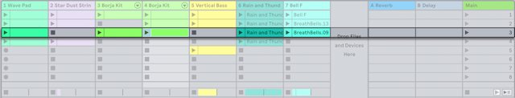
Các Scene trong Session View.
Mỗi Scene có thể có tên, và có thể gán tempo— tốc độ (BPM) cũng như time signature— nhịp (số nhịp/giá trị) riêng. Khi chạy scene đó, Live sẽ áp dụng tempo/nhịp tương ứng.
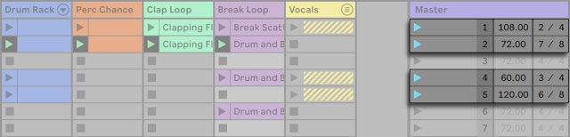
Scene có tempo và nhịp riêng.
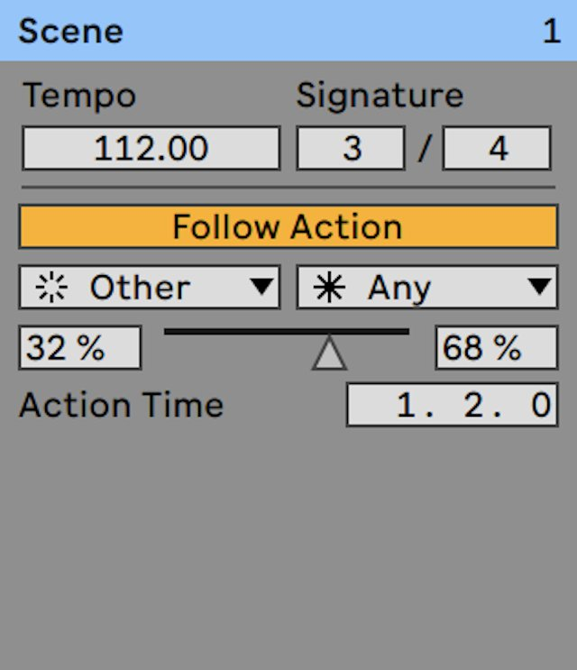
Chi tiết của một Scene.
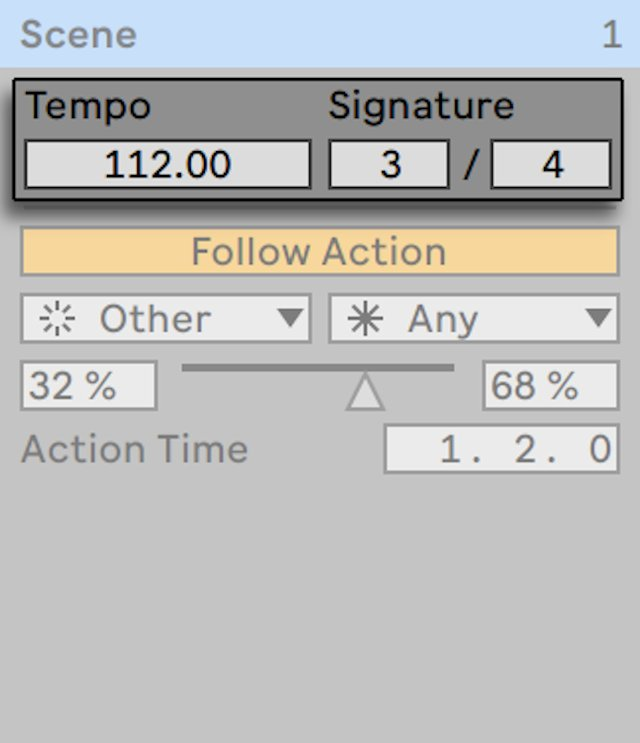
Điều khiển tempo và nhịp của Scene.
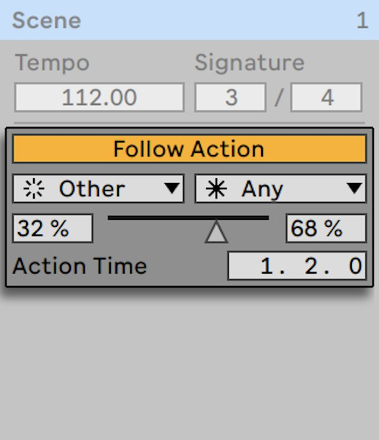
Điều khiển Follow Action của Scene.
Lưu ý cho Launchkey Mini: Nút › (Scene Launch) trên Launchkey chính là cách bạn chạy scene từ phần cứng — đúng như cẩm nang Launchkey mô tả.
Chạy Clip (Launching) & dừng
Nhấn vào một ô clip sẽ launch— chạy clip đó. Trạng thái clip đang chạy được hiển thị bằng đèn trạng thái (status) của track:
Đang chạy (loop) — clip phát lặp lại theo loop.
One-shot — clip phát một lần rồi tự dừng.
Monitoring — track đang ở chế độ nghe (input monitoring), truyền âm thanh đầu vào.
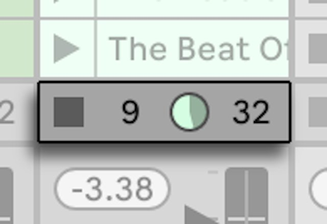
Trạng thái: clip đang chạy (loop).
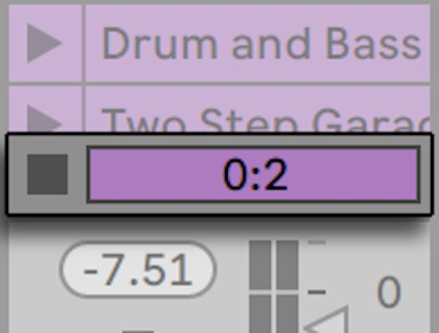
Trạng thái: clip one-shot.
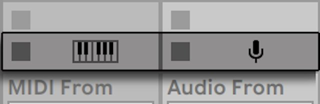
Trạng thái: monitoring.
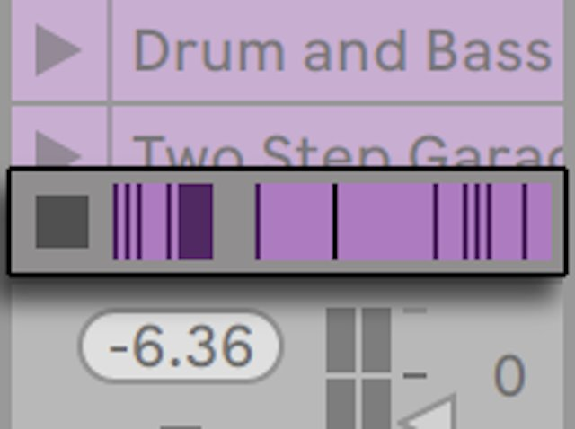
Trạng thái: track đang phát từ Arrangement.
Tốc độ clip chạy/dừng lại được điều khiển bởi Global Quantisation— lượng tử hóa toàn cục ở đầu màn hình Live, để các clip tự căn đúng nhịp khi được chạy.
Trường vị trí và nút Stop trong Control Bar.
Mỗi ô trống trong track cũng hoạt động như một Clip Stop Button— nút dừng clip: nhấn vào ô trống sẽ dừng clip đang chạy trên track đó.
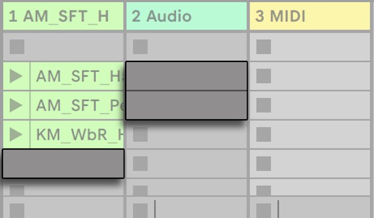
Các nút dừng clip (Clip Stop Buttons).
Bạn có thể kéo nhiều clip cùng lúc vào Session View để tạo nhanh một bộ sưu tập loop.
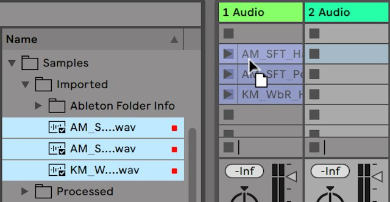
Kéo thả nhiều clip cùng lúc vào Session View.
Thu vào Session View (Recording)
Bạn có thể thu trực tiếp vào các ô clip trống trong Session View. Bật công tắc Record ở Control Bar, sau đó nhấn vào ô clip trống trên track đã arm— chuẩn bị thu để bắt đầu ghi.
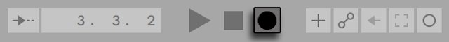
Công tắc Record trong Control Bar.
Lưu ý cho Launchkey Mini: Nút Record trên Launchkey kích hoạt Session Record; giữ Shift + Record kích hoạt Capture MIDI để thu hồi nốt vừa chơi — đúng như cẩm nang Launchkey.
Di chuyển giữa hai View
Session View và Arrangement View có thể cùng tồn tại: bạn có thể chạy clip trong Session trong khi Arrangement đang phát, hoặc ghi (record) những gì bạn chơi trong Session vào Arrangement để tạo cấu trúc bài hát tuyến tính.
Khi một track đang phát nội dung từ Arrangement, đèn trạng thái sẽ cho biết; bạn có thể chọn lại để track quay về phát từ Session.
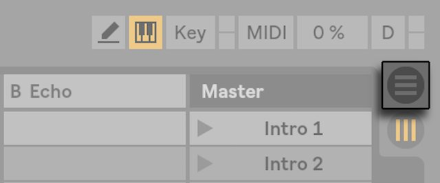
Bộ chọn Arrangement.
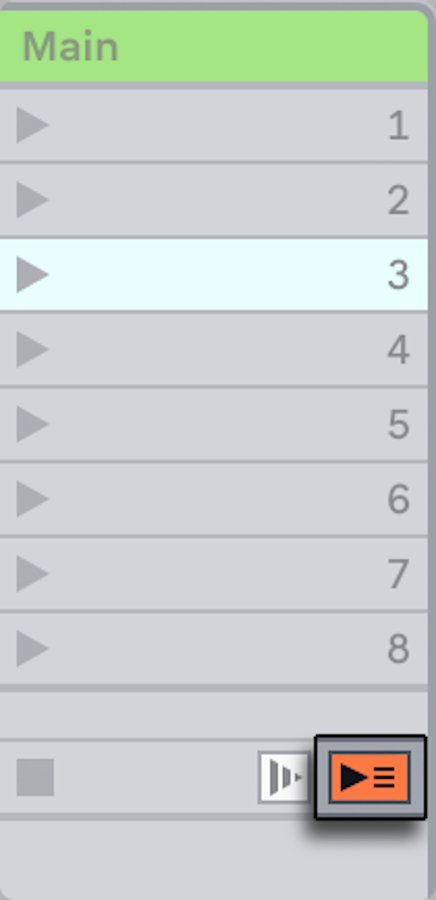
Nút Back to Arrangement (trong Session View).Nút Back to Arrangement (trong Arrangement View).
Lưu ý: Khi bạn "đánh lạc hướng" Arrangement bằng cách chạy clip từ Session, Live sẽ sáng nút Back to Arrangement. Nhấn nút này để quay lại phát nội dung tuyến tính ban đầu.
Follow Action (Hành động kế tiếp)
Mỗi clip (và mỗi scene) có thể có cài đặt Follow Action— hành động tự động xảy ra sau khi clip/scene chạy xong, ví dụ tự chạy clip kế tiếp, tự dừng, hoặc chọn ngẫu nhiên. Đây là công cụ mạnh để tạo nhạc tự động và biến đổi không bao giờ lặp lại y hệt.
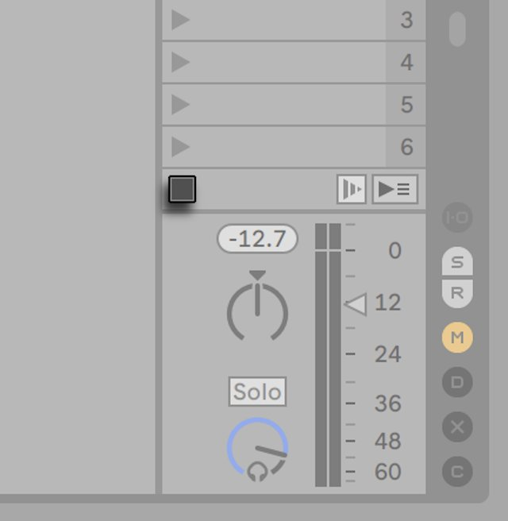
Nút Stop All Clips — dừng toàn bộ clip đang chạy.
Tóm tắt cho Launchkey Mini: Session View chính là “sanbox” mà Launchkey điều khiển — bạn chạy clip bằng pad, chạy scene bằng nút ›, dừng/bật Solo/Mute bằng nút Stop-Solo-Mute, và thu bằng Record. Nắm vững Session View là chìa khoá để khai thác hết Launchkey Mini.
Chương 6 · Arrangement View (Khung xem theo thời gian)
Arrangement View là một trong hai view chính, cho phép kết hợp và sắp xếp các yếu tố âm nhạc trên một timeline tuyến tính— dòng thời gian — khác với Session View tập trung vào ngẫu hứng và kích hoạt clip.
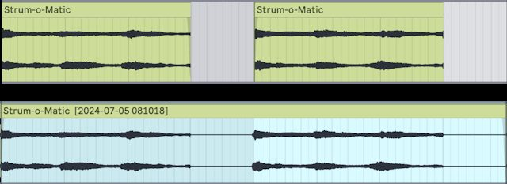
6.1 Layout (Bố cục)
Phần trên gồm:
Overview — hiển thị toàn bộ bố cục, dùng để thu phóng/điều hướng. Kéo ngang để cuộn, kéo dọc để thu phóng; nhấp đúp trong đường viền đen để phóng ra toàn bộ.
Beat-time ruler — thời gian theo định dạng bars-beats-sixteenths (nhịp-nhịp phách-nhịp móc kép).
Scrub area — nhấp để bắt đầu phát từ điểm đó; giữ chuột trái để lặp lại phát theo quantization toàn cục.
Locators — điểm đánh dấu để kích hoạt phát nhiều khu vực khác nhau.
Lock Envelopes toggle — khóa envelope vào vị trí bài hát thay vì clip.
Track, Mixer và thu phóng: clip nằm trong làn chính của track; mixer (volume, pan, I/O) hiển thị qua menu View; track xếp chồng dọc, sắp xếp lại bằng kéo-thả. Dùng H và W để tối ưu chiều cao/rộng.
6.2 Điều hướng và thu phóng
+ / - hoặc lăn chuột giữ Ctrl/Cmd để thu phóng; Ctrl Alt + kéo để di chuyển. Z phóng to vùng chọn, X quay lại. Bật Follow trên Control Bar để màn hình tự cuộn theo tiến trình bài.
6.3 Transport và Playback
Nút Play hoặc Spacebar để bật/tắt phát. Insert marker— dấu chèn quyết định điểm bắt đầu phát (mặc định ở đầu Arrangement). Nhấp đúp nút Stop hoặc Home để đưa marker về đầu. Shift Spacebar tiếp tục phát từ điểm vừa dừng.
6.4 Chạy Arrangement bằng Locator
Thêm locator bằng nút Set Locator, menu Create, hoặc chuột phải. Nhấp đúp vào locator khi đang dừng sẽ phát từ điểm đó. Đổi tên bằng Ctrl R / Cmd R. Lệnh Loop to Next Locator để lặp giữa 2 điểm.
6.5 Thay đổi nhịp (Time Signature)
Dùng time signature marker để đổi nhịp tại bất kỳ điểm nào (thêm qua menu Create). Có thể tạo nhịp không trọn vẹn (fragmentary bar).
6.6 Arrangement Loop
Bật Arrangement Loop Toggle trên Control Bar để lặp đoạn. Phím Ctrl L / Cmd L bật/tắt loop theo vùng chọn. Mũi tên trái/phải đẩy loop; Ctrl/Cmd + mũi tên thay đổi độ dài.
6.7 Di chuyển và đổi kích thước Clip
Kéo clip để di chuyển; kéo cạnh trái/phải để đổi độ dài. Clip tự bám lưới (snap). Giữ Ctrl Shift / Shift Option rồi kéo sóng âm/MIDI để trượt nội dung trong biên giới clip; thêm Alt/Cmd để bỏ qua bám lưới.
6.8 Fade và Crossfade cho Audio Clip
Điểm bắt đầu/kết thúc của audio clip có điều khiển fade (volume mờ dần/to dần). Clip liền kề có thể tạo crossfade. Di chuột vào cạnh clip để thấy fade handles; kéo đè lên cạnh clip bên cạnh để tạo crossfade. Tùy chọn Create Fades on Clip Edges tự thêm 4ms fade tránh tiếng pop/click.
6.9 Chọn Clip và thời gian
Nhấp clip để chọn; nhấp khoảng trống để chọn điểm thời gian; kéo để chọn khoảng. Giữ Shift khi nhấp để mở rộng vùng chọn. 0 để vô hiệu hóa (deactivate) clip/track. Lệnh Reverse Clip(s) hoặc phím R để đảo ngược audio.
Khác Cut/Copy/Paste, nhóm “...Time” tác động toàn bộ track bằng chèn/xóa thời gian: Cut Time, Paste Time, Duplicate Time, Delete Time, Insert Silence.
6.12 Split Clip
Lệnh Split (Ctrl E / Cmd E) chia clip tại điểm con trỏ. Có thể bôi đen khu vực rồi Split để tách thành clip riêng.
6.13 Consolidate Clip
Lệnh Consolidate (Ctrl J / Cmd J) gộp nhiều clip liền kề thành một — hữu ích để tạo loop phức tạp.
6.15 Mixer trong Arrangement View
Mở/đóng mixer bằng Ctrl Alt M / Cmd Option M hoặc nút góc dưới phải. Một số cài đặt (Performance Impact, track delay, crossfader) chỉ có ở mixer.
Video của Ableton — Live’s Mixer (Bộ trộn của Live).
Video của Ableton — Arrangement View.
Chương 7 · Clip View
Clip View là nơi cấu hình và điều chỉnh thuộc tính clip; cũng hiển thị nội dung để chỉnh sửa — audio waveform, MIDI note, envelope, hoặc dữ liệu MPE.
Mở bằng: nhấp đúp clip trong Arrangement/Session View, Clip View Selector, hoặc Ctrl Alt 3 / Cmd Option 3. Có thể xếp chồng Clip View và Device View. Kéo biên trên để đổi chiều cao; kéo tới biên dưới để đóng.
7.1 Layout Clip View
Gồm title bar và hai phần: clip panel (trái) và editor (phải). Audio clip dùng Sample Editor; MIDI clip dùng MIDI Note Editor.
7.1.1 Clip Title Bar
Hiển thị tên clip, màu, Clip Activator toggle (ngăn clip phát; cũng bằng phím 0), và (audio) nút Save Default Clip.
7.1.2 Clip Panel
Bên trái chứa Main & Extended Clip Properties (vị trí loop, nhịp, groove, scale, launch). Audio có thêm Audio Utilities và Audio Transformation Tools; MIDI có Pitch/Time Utilities và MIDI Transformation/Generative Tools.
7.1.3 Editor View Modes
Bên phải là editor đổi theo loại clip: Sample Editor (audio), Envelope Editor (audio/MIDI), MIDI Note Editor (MIDI), MPE Editor (MIDI).
7.2 Main Clip Properties
Panel trái nhất: điều khiển vùng clip, loop, nhịp, groove, scale.
7.2.1 Clip và Loop Region
Vùng clip và loop quyết định phần nào thực sự phát. Bật Clip Loop để clip lặp lại. Với audio clip, Warp phải bật trước khi bật Clip Loop. Các nút Set cho phép loop “on-the-fly”.
7.4 Audio Utilities
Warp Controls — bật Warp ép sample có cấu trúc nhịp phát đồng bộ với tempo project.
Reversing — nhấp Reverse tạo file audio đảo ngược mới.
RAM Mode — nạp audio vào RAM thay vì đọc đĩa, hữu ích khi ổ đĩa chậm.
High Quali
ty — thuật toán sample-rate conversion tốt hơn, giảm méo khi transpose.
Gain & Pitch — Gain chỉnh volume (dB); Pitch dịch cung (semitone), fine-tune bằng cent.
7.5 Pitch và Time Utilities (MIDI)
Công cụ thao tác nốt MIDI nhanh:
Transpose — dịch pitch; Fit to Scale — ép nốt vào scale; Invert — lật ngược selection.
Stretch / ×2 / /2 — đổi độ dài nốt; Humanize — thêm ngẫu nhiên vào thời điểm bắt đầu; Reverse — lật mẫu; Legato — nối nốt.
7.9 Looping Clip
Bật Clip Loop để vùng định nghĩa lặp lại. Phím cho loop brace: mũi tên trái/phải đẩy; lên/xuống dịch cả loop; Ctrl/Cmd + mũi tên đổi độ dài. Lệnh Duplicate Loop sao chép nội dung loop.
Chương 8 · Editing MIDI (Chỉnh sửa MIDI)
MIDI clip trong Live chứa nốt và dữ liệu controller để phát một MIDI instrument (device ảo trong track chain, hoặc synth ngoài qua output routing). Clip đóng vai trò như bản nhạc — định nghĩa pitch, độ dài, vị trí và dynamic của nốt.
8.1 MIDI Note Editor Layout
Editor để thêm, di chuyển và điều chỉnh nốt. Mở qua Clip View (Ctrl Alt 3 / Cmd Option 3). Trục ngang là time ruler (vị trí nốt), trục dọc là note ruler (quãng tám C-2–C8, tuning system, hoặc Drum Rack pad) cùng piano keyboard. Bên dưới là Velocity và Chance Editor lane.
8.4 Thêm nốt MIDI
8.4.1 Draw Mode
Bật Draw Mode qua nút Control Bar hoặc phím B. Nhấp-kéo trong editor để thêm nốt; nhấp nốt đang có trong Draw Mode sẽ xóa nó.
8.4.2 Preview nốt
Nếu MIDI track có instrument, bật Preview để nghe nốt khi thêm/di chuyển. Nếu track đã arm, Preview cũng bật step record.
8.5 Chỉnh sửa nốt
Editing dựa trên selection như Arrangement. Chọn nốt/dải thời gian rồi thực thi lệnh.
8.5.2 Chọn nốt và timespan
Nhấp chọn điểm thời gian; kéo để chọn dải; nhấp nốt để chọn; Shift để thêm/bớt; Ctrl A/Cmd A chọn tất cả; Invert Selection (Ctrl Shift A/Cmd Shift A) đảo selection.
8.5.4 Di chuyển nốt
Kéo hoặc dùng phím mũi tên; nốt bám lưới trừ khi giữ Alt/Cmd.
8.5.5 Đổi độ dài nốt
Kéo cạnh trái/phải; Shift + mũi tên để kéo dài/rút ngắn theo grid.
8.5.8 Note Operations
Split — giữ E và vẽ đường chia; Ctrl E/Cmd E chia tại insert marker.
Chop — chia nốt theo grid.
Join — gộp nốt cùng pitch (Ctrl J/Cmd J).
8.5.11 Quantize nốt
Bốn cách: quantize khi record; di chuyển nốt bám lưới; dùng Quantize MIDI Tool; hoặc chọn nốt rồi Quantize (Ctrl U/Cmd U), chỉnh settings bằng Ctrl Shift U/Cmd Shift U.
8.5.12 Chỉnh Velocity
Velocity (độ mạnh) biểu diễn qua độ bão hòa màu nốt. Kéo marker trong Velocity Editor để đổi giá trị; Alt/Cmd + kéo nốt để đổi velocity mà không cần editor.
8.6 Folding và Scale
Fold to Notes (phím F) — ẩn các key track không có nốt.
Scale Mode — làm nổi nốt thuộc scale trên piano ruler.
Session View cung cấp môi trường tự phát, khuyến khích biểu diễn và ngẫu hứng. Cấu hình cách các clip hành xử khi kích hoạt — gọi là launching — là chìa khoá để khai thác view này.
9.1 Launch Controls
Clip được kích hoạt bằng Clip Launch button hoặc điều khiển từ xa. Hành vi chỉnh trong clip panel, chỉ áp dụng cho clip Session View (clip Arrangement View phát theo vị trí timeline).
9.2 Launch Modes
Trigger — nhấn xuống bắt đầu clip; nhả ra bị bỏ qua.
Gate — nhấn xuống bắt đầu; nhả ra dừng clip.
Toggle — nhấn xuống bắt đầu; nhấn xuống lần nữa dừng.
Repeat — clip được kích hoạt liên tục ở clip quantization rate khi giữ chuột/phím.
9.3 Legato Mode
Khi có nhiều looping clip trong một track và muốn chuyển giữa chúng liên tục không mất đồng bộ, bật Legato Mode: clip mới chạy sẽ nhận vị trí phát của clip trước đó trong track, cho phép toggle ở bất kỳ tốc độ/thời điểm nào mà vẫn giữ sync hoàn hảo.
9.4 Clip Launch Quantization
Clip Quantization chooser sửa thời điểm bắt đầu của clip khi kích hoạt. Chọn None để tắt. Chọn Global để clip theo Global Quantization của Control Bar (đổi nhanh bằng Ctrl 6,7,8,9,0 / Cmd 6,7,8,9,0).
9.5 Velocity
Velocity Amount quyết định mức độ velocity của nốt MIDI ảnh hưởng volume tổng thể của clip. 0% = không ảnh hưởng; 100% = nốt nhẹ nhất phát clip im lặng.
9.6 Clip Offset và Nudging
Dùng nút Nudge Backward/Forward để nhảy tiến/lùi trong clip đang phát theo bước quantization toàn cục. Có thể map vào MIDI controller hoặc phím máy tính.
9.7 Follow Action
Follow Action có thể kích hoạt clip theo trình tự, ngẫu nhiên, hoặc kết hợp. Nó định nghĩa chuyện gì xảy ra cho các clip khác trong cùng nhóm sau khi clip hiện tại phát xong. Một nhóm = các clip chiếm ô dọc liên tiếp trong cùng track, ngăn cách bởi ô trống.
lipLegato11.1" loading="lazy">
Các điều khiển Follow Action: nút Follow Action (bật/tắt, phím Shift Enter); hai chooser chọn hành động A và B; Chance A/B xác định xác suất; công tắc Linked/Unlinked.
Các Follow Action có sẵn: No Action, Stop, Play Again, Previous, Next, First, Last, Any, Other, Jump. Clip/scene dùng Follow Action có Launch button dạng sọc để dễ nhận diện.
9.7.2 Tạo chu trình (Cycles)
Sắp xếp clip/scene thành nhóm và gán action “Next” cho mỗi cái — chúng sẽ phát lần lượt vô tận. Thêm “Any” với Chance thấp để tạo ngẫu hứng.
9.7.3 Loop tạm thời
Nhóm chỉ một clip: gán A = Play Again (80%), B = No Action (20%) với Follow Time 1 bar → clip có khả năng lặp thanh đầu vài lần rồi mới phát tiếp phần còn lại.
Chương 10 · Mixing (Trộn âm)
Phần mixer của Live truy cập được từ cả Session và Arrangement View. Trong Arrangement, cũng truy cập qua Track Controls của từng track; trong Session, mixer xuất hiện bên dưới scene của track.
10.1 Live Mixer
Công tắc mixer view ở góc dưới phải cửa sổ Live; menu thả bên cạnh quản lý thành phần hiển thị. Các điều khiển chính:
Meter — hiển thị mức peak và RMS. “Peak meter cho thấy thay đổi đột ngột, RMS cho ấn tượng tốt hơn về loudness cảm nhận được.”
Volume — đổi mức xuất của track; chọn nhiều track rồi chỉnh 1 fader sẽ chỉnh tất cả.
Pan — hai mode: Stereo Pan (mặc định) và Split Stereo Pan.
Track Activator — tắt tiếng (mute) xuất của track.
Solo (phím S) — solo track bằng cách mute track khác.
Arm Recording — bật track ở trạng thái sẵn sàng thu.
Lưu ý cho Launchkey Mini: 8 núm của Launchkey điều khiển trực tiếp Volume/Pan/Sends của mixer — đúng như cẩm nang Launchkey mô tả (pad Volume/Pan/Sends khi giữ Shift).
10.3 Group Track
Gộp nhiều audio/MIDI track vào một container tổng gọi là Group Track— track nhóm (lệnh Group Tracks trong Edit menu). Group Track không chứa clip nhưng có mixer control và có thể chứa audio effect — tạo submix nhanh.
10.4 Return Track và Main Track
Một Live Set có một Main track và các Return track— track trả về. Chúng không phát clip nhưng cho phép xử lý/routing tín hiệu linh hoạt hơn. Return track chứa effect và xử lý audio gửi từ nhiều track; Send control của một track quyết định bao nhiêu tín hiệu cấp cho return track. Main track là đích mặc định của tín hiệu từ mọi track khác — effect ở đây thường xử lý mastering (EQ, compression).
10.5 Crossfader
Live có crossfader để tạo chuyển mượt giữa clip trên các track khác nhau — “hoạt động như crossfader DJ-mixer thông thường, ngoại trừ việc nó cho crossfade không chỉ hai mà bất kỳ số lượng track nào.” Mỗi track có hai nút Crossfade Assign: A và B.
10.6 Soloing và Cueing
Mặc định, solo một track mute mọi track khác. Live có thể thay solo chuẩn bằng thao tác cueing— nghe thử trước (như cue đĩa trên DJ mixer), cho phép chọn clip và tinh chỉnh effect mà khán giả không nghe thấy, trước khi đưa track vào mix. Cài đặt yêu cầu audio interface tối thiểu 4 đầu ra (hoặc 2 stereo riêng).
10.7 Track Delay
Mỗi track có Track Delay cho phép delay/pre-delay xuất của track (tính bằng mili-giây) để bù trễ acoustic/phần cứng/con người. Truy cập qua Track Options trong Mixer Controls submenu.
10.9 Performance Impact Indicator
Trong phần mixer, mỗi track có indicator hiệu năng (Performance Impact) để trực quan hóa tác động lên CPU — mỗi track có CPU meter 6 ô sáng. Freeze track có tác động lớn nhất hoặc bỏ device của nó thường giảm tải CPU.
Video của Ableton (Beginner Series Ep. 7) — mix & automation cơ bản trong Live.
Chương 11 · Managing Files and Sets (Quản lý tệp & Live Set)
Làm nhạc với Live cần nhiều loại tệp: từ tệp chứa MIDI và audio, tới các tệp đặc thù của chương trình như Live Clip và Live Set. Chương này (chương 5 trong bản gốc tiếng Anh) giải thích tất cả những gì bạn cần biết khi làm việc với từng loại tệp trong Live.
11.1 Sample Files (Tệp sample)
Một sample— mẫu âm thanh số, ví dụ một đoạn WAV/MP3 là tệp chứa dữ liệu audio. Live chơi được cả định dạng không nén (WAV, AIF và Sound Designer II trên Mac) lẫn định dạng nén (MP3, AAC, Ogg Vorbis, Ogg FLAC và FLAC).
Vì Live phát sample trực tiếp từ đĩa, bạn có thể làm việc với số lượng lớn sample (dung lượng lớn) mà không vướng giới hạn RAM. Tuy nhiên lưu ý: đĩa gần đầy và/hoặc phân mảnh nặng (trên Windows) có thể gây tắc nghẽn tốc độ đọc đĩa; tốc độ quay của ổ cứng cơ cũng ảnh hưởng hiệu năng. Xem thêm phần quản lý tải đĩa (EN).
Live có thể kết hợp các sample không nén mono/stereo với độ dài, sample rate hay bit depth bất kỳ mà không cần chuyển đổi trước. Để phát sample nén, Live giải mã và ghi ra một tệp sample tạm chưa nén — thường nhanh đến mức bạn chơi được ngay, không phải chờ giải mã xong.
Lưu ý: khi thêm một sample dài vào Project, Live có thể báo rằng cần phân tích xong mới phát được sample. Xem mục phân tích (.asd) bên dưới.
11.1.1 The Decoding Cache (Bộ nhớ đệm giải mã)
Để tiết kiệm tài nguyên, Live giữ các tệp sample đã giải mã (của sample nén) trong cache. Bạn hầu như không cần bảo trì cache — Live tự xóa tệp cũ để chừa chỗ cho tệp mới. Tuy nhiên bạn có thể đặt giới hạn trong mục Decoding Cache của File & Folder Settings: cache không bao giờ vượt quá Maximum Cache Size, và luôn chừa lại Minimum Free Space trên đĩa. Nút Cleanup bên cạnh sẽ xóa mọi tệp không được Live Set hiện tại dùng.
Cài đặt Decoding Cache.
11.1.2 Analysis Files (.asd) — Tệp phân tích
Analysis file là tệp nhỏ mà Live tạo ra lần đầu tiên một sample được đưa vào chương trình. Tệp chứa dữ liệu Live thu thập để tối ưu chất lượng kéo giãn (stretch), hiển thị waveform nhanh hơn và tự động dò tempo của sample dài (EN).
Khi thêm sample dài vào Project, Live có thể báo cần phân tích xong mới phát được. Điều này không xảy ra nếu sample đã được phân tích (Live tìm thấy analysis file) hoặc nếu tùy chọn Auto-Warp Long Samples trong Record, Warp & Launch Settings đã tắt.
Analysis file còn có thể lưu thiết lập clip mặc định cho sample:
Nhấn nút Save trong Clip View sẽ ghi thiết lập hiện tại của clip vào analysis file của sample. Lần sau kéo sample vào Live, nó xuất hiện với đầy đủ thiết lập clip. Cách này đặc biệt hữu ích để giữ Warp Marker cùng sample. Lưu ý: lưu thiết lập mặc định vào analysis file khác với lưu clip thành Live Clip.
Analysis file là cách tiện để lưu thông tin mặc định cho một sample cụ thể; nhưng trong một Live Set bạn vẫn có thể dùng thiết lập khác nhau cho từng clip — ngay cả khi các clip cùng tham chiếu một sample trên đĩa. Còn nếu kéo một bản mới của sample vào Live Set, Live sẽ dùng thiết lập lưu trong analysis file cho clip mới tạo.
Tên analysis file giống tên sample kèm phần mở rộng .asd, nằm cùng thư mục với sample.
Sample có tệp .asd hiển thị như thế này trong Browser.
Sample không có .asd trông như thế này.
Bản thân analysis file không xuất hiện trong Browser của Live.
Bạn có thể tắt tạo .asd bằng tùy chọn Create Analysis Files trong File & Folder Settings. Mọi dữ liệu (trừ thiết lập clip mặc định) đều có thể được Live tạo lại nếu thiếu .asd — nhưng sẽ tốn thời gian với sample dài.
11.1.3 Exporting Audio and Video (Xuất audio & video)
Lệnh Export Audio/Video trong menu File cho phép xuất audio output của Live thành sample mới. Tệp kết quả có thể dùng để ghi đĩa CD nghe, đĩa dữ liệu (backup hoặc dùng với ứng dụng audio khác). Nếu Set có video, lệnh này cũng xuất được thành tệp video mới, đặt cùng thư mục với audio đã render.
11.1.3.1 Selection Options
Selection Options trong Render Dialog.
Trình chọn Rendered Track của hộp thoại Export cho phép chọn tín hiệu audio nào sẽ được render:
Trình chọn Rendered Track.
Main — tín hiệu sau fader ở đầu ra Main của Live. Nếu bạn đang nghe qua Main output, chắc chắn tệp render chứa đúng thứ bạn nghe.
All Individual Tracks — tín hiệu sau fader ở đầu ra từng track, gồm cả return track và MIDI track có instrument. Live tạo một sample riêng cho mỗi track; các sample cùng độ dài nên dễ canh trong phần mềm multitrack khác.
Selected Tracks Only — giống All Individual Tracks nhưng chỉ render các track đã chọn trước khi mở hộp thoại Export.
(từng track đơn lẻ) — tín hiệu sau fader ở đầu ra của track đang chọn.
Các trường còn lại trong nhóm Selection xác định thời điểm bắt đầu và độ dài vật liệu xuất:
Render Start — vị trí bắt đầu render.
Render Length — độ dài sample sau render.
Mẹo: cách nhanh để đặt cả Render Start và Length là bôi đen một khoảng thời gian trong Arrangement View trước khi gọi Export Audio/Video. Nhớ rằng tệp render chỉ chứa những gì bạn nghe trước lúc render — ví dụ nếu đang phát kết hợp clip Session View và vật liệu Arrangement thì tệp render sẽ ghi đúng kết hợp đó, bất kể view nào đang mở lúc render.
11.1.3.2 Rendering Options
Tùy chọn render audio.
Include Return and Main Effects — bật thì Live render riêng từng track đã chọn kèm các return track mà track đó dùng, cùng hiệu ứng trên Main track. Rất hữu ích khi render để biểu diễn trực tiếp hoặc giao stem cho kỹ sư mix/remixer.
Render as Loop — Live tạo sample dùng được như loop. Ví dụ Set có delay: nếu bật, Live render hai lượt — lượt một không ghi âm mà chỉ tính hiệu ứng delay; lượt hai ghi âm và bao gồm cả "đuôi" delay từ lượt một.
Convert to Mono — tạo tệp mono thay vì stereo.
Normalize — sample kết quả được normalize (khuếch đại để đỉnh cao nhất chạm trần headroom tối đa).
Create Analysis File — tạo .asd chứa thông tin phân tích cho sample vừa render. Nếu định dùng lại sample này trong Live, hãy bật.
Sample Rate — nếu chọn sample rate bằng hoặc cao hơn rate của Project (đặt trong tab Audio của Settings), Live xuất một bước ở rate đã chọn. Nếu xuất ở rate thấp hơn, Live xuất ở rate của Project rồi downsample ở bước hai bằng quy trình chất lượng cao — có thể mất vài giây.
11.1.3.3 Encoding Options
Tùy chọn mã hóa audio.
Encode PCM — bật sẽ tạo tệp audio không hủy (lossless).
File Type — PCM hỗ trợ WAV, AIFF và FLAC.
Bit Depth, Dither Options — nếu render ở bit depth thấp hơn 32-bit, hãy chọn một chế độ dither. Dither thêm một lượng nhiễu nhỏ vào audio nhưng giảm artefact khi hạ bit depth. Mặc định là Triangular — chế độ "an toàn" nhất nếu tệp còn được xử lý tiếp. Rectangular cho nhiễu dither ít hơn nhưng sai số lượng tử hóa cao hơn. Ba chế độ Pow-r tăng dần lượng dither nhưng đẩy nhiễu lên ngoài dải nghe được. Lưu ý: dither chỉ nên áp dụng một lần cho mỗi tệp audio. Nếu định xử lý tiếp, tốt nhất render 32-bit để khỏi cần dither ở giai đoạn này; đặc biệt các chế độ Pow-r không bao giờ dùng cho vật liệu sẽ gửi sang mastering — chỉ dành cho output cuối.
Encode MP3 — tạo tệp MP3 CBR 320 kbps. Có thể xuất PCM và MP3 đồng thời; nếu không bật cái nào, nút Export bị vô hiệu.
11.1.3.4 Video Rendering Options
Tùy chọn render video.
Create Video — tạo tệp video cùng thư mục với audio đã render. Chỉ bật được khi Arrangement View có clip video; và không thể chỉ render video không — luôn ra video kèm audio.
Video Encoder — chọn encoder dùng để render video; tùy encoder đã cài trên máy.
Video Encoder Settings — mở cửa sổ cài đặt của encoder đã chọn; một số encoder không có gì để chỉnh nên nút bị vô hiệu.
Sau khi nhấn Export, Live render audio trước rồi mới tới video (tùy encoder, video có thể render nhiều lượt). Thanh tiến trình hiển thị trạng thái.
Trừ khi bạn đặt kích thước/tỉ lệ khung hình riêng trong cài đặt encoder, tệp video sẽ phát đúng như khi phát trong Live, và có luôn audio đã render.
11.1.3.5 Real-Time Rendering (Render theo thời gian thực)
Bình thường render chạy offline. Nhưng nếu Set có External Audio Effect hoặc External Instrument nối ra thiết bị hiệu ứng/synth phần cứng thì quy trình khác: render đầu ra Main diễn ra theo thời gian thực. Nếu render từng track riêng, các track không đi ra thiết bị ngoài sẽ render offline; các track có thiết bị ngoài sẽ render real-time. Live tự dò tín hiệu của từng track. Khi bắt đầu render bạn có các tùy chọn:
Chờ thiết bị ngoài yên tĩnh.
Skip — mặc định Live chờ 10 giây trước khi render real-time để âm thanh từ thiết bị ngoài fade out. Cần thêm thời gian (ví dụ chờ đuôi reverb dài) thì gõ số lớn hơn; chắc chắn thiết bị không phát tiếng thì nhấn Skip để render ngay.
Khi đã bắt đầu, hộp thoại chuyển sang thanh tiến trình ghi âm:
Đang render theo thời gian thực.
Auto-Restart on drop-outs — render real-time ngốn CPU hơn và có thể bị drop-out (khe hở/glitch nhỏ). Live phát hiện drop-out và tự render lại từ đầu nếu tùy chọn này bật.
Restart — tự tay render lại.
Cancel — dừng và xóa tệp render dở.
Số lần render (nếu hơn một) cũng được liệt kê. Nếu drop-out liên tục, hãy đóng bớt ứng dụng khác. Xem chương Computer Audio Resources (EN) để có thêm mẹo.
11.2 MIDI Files (Tệp MIDI)
MIDI file chứa các lệnh khiến synthesizer/instrument tương thích MIDI (như Simpler của Live) tạo ra âm nhạc. MIDI file được xuất từ sequencer phần cứng và phần mềm. Nhập MIDI file vào Live khác với sample: dữ liệu MIDI được nhúng vào Live Set, và MIDI clip kết quả mất mọi tham chiếu tới tệp gốc. MIDI file hiện icon riêng trong Browser.
MIDI file trong Browser.
Có thể nhập MIDI file qua Browser hoặc lệnh Import MIDI File… trong menu Create. Trong Arrangement View, tệp sẽ chèn tại vị trí Insert Marker; trong Session View thì chèn vào clip slot đang chọn.
11.2.1 Exporting MIDI Files (Xuất tệp MIDI)
MIDI clip của Live có thể xuất thành Standard MIDI File bằng lệnh Export MIDI Clip trong menu File — mở hộp thoại lưu tệp để chọn vị trí.
Xuất MIDI file khác với lưu clip thành Live Clip.
11.3 Live Clips
Từng audio/MIDI clip riêng lẻ có thể xuất ra đĩa ở định dạng Live Clip— ý tưởng nhạc tái sử dụng được ở mọi Project để dễ lấy lại và dùng lại. Audio clip chỉ chứa tham chiếu tới sample trên đĩa (không chứa dữ liệu audio) nên rất nhẹ — dễ xây dựng bộ sưu tập riêng.
Để lưu một clip từ Live Set đang mở ra đĩa, cứ kéo nó vào mục Places của Browser, thả vào Current Project hoặc thư mục user bất kỳ. Với audio clip, Live sẽ xử lý việc copy sample theo lựa chọn trong trình chọn Collect Files on Export. Sau đó gõ tên mới hoặc xác nhận tên Live gợi ý bằng Enter.
Live Clip trong Browser.
Live Clip là cách tuyệt vời để lưu ý tưởng dùng sau: nó giữ nguyên clip gốc với toàn bộ thiết lập clip và envelope, và cả device của track gốc. Để tái tạo chuỗi device của Live Clip, kéo nó vào track trống (không clip/device) hoặc vào vùng trống không track trong Session/Arrangement View. Live Clip thả vào track đã có device/clip sẽ chỉ mang thiết lập clip chứ không mang device. Ví dụ: thả Live Clip bassline lên track sẵn có đang chạy bass instrument, thay vì tạo track mới.
Các clip thuộc mọi Live Set sẵn trên đĩa cũng là Live Clip. Xem mục gộp Set.
Lưu ý: lưu thiết lập clip mặc định vào .asd của sample khác với lưu Live Clip. .asd chú thích sample bằng giá trị mặc định hợp lý (warp, gain, pitch) để sample phát đúng cách khi thêm vào Set; còn Live Clip là một ý tưởng nhạc riêng biệt trên đĩa — bạn có thể tạo nhiều biến thể từ cùng một audio clip (warp/pitch/envelope/hiệu ứng khác nhau) và lưu thành các Live Clip riêng, sắp xếp & nghe thử độc lập trong Browser dù cùng tham chiếu một sample.
11.4 Live Sets
Loại tài liệu bạn tạo và làm việc trong Live gọi là Live Set— "bài hát" của bạn, tệp .als. Set phải được lưu trong Project để Live theo dõi & quản lý mọi thành phần của nó: Live Clip, preset, sample…
11.4.1 Tạo, mở và lưu Set
Dùng lệnh New Live Set (menu File) để tạo Set mới; Open Live Set / Open Recent Set để mở Set có sẵn. Trong Browser, nhấp đúp hoặc nhấn Enter lên một Live Set để mở.
Save Live Set lưu Set hiện tại nguyên trạng, gồm mọi clip và thiết lập.
Save Live Set As lưu dưới tên/vị trí khác; Save a Copy tạo bản sao của Set hiện tại với tên/vị trí mới.
11.4.2 Truy cập Undo History của Set
Undo History liệt kê mọi thao tác kể từ khi mở Set, cho phép hoàn tác hoặc làm lại tới một mốc bất kỳ — đảo ngược/hồi phục nhiều bước cùng lúc thay vì undo/redo từng bước.
Mở bằng mục Undo History trong menu View hoặc phím tắt CtrlAltZ (Win) / CmdOptionZ (Mac).
Undo History của một Set.
Mở ra, bạn thấy mọi thao tác theo thứ tự xảy ra — mới nhất trên cùng. Chọn một thao tác (nhấp hoặc dùng phím mũi tên rồi Enter) để đưa Set về đúng mốc đó: các thao tác phía trên bị xám (đã undo), phía dưới vẫn có hiệu lực. Chọn lại thao tác xám để áp dụng lại nó cùng các thao tác đã undo bên dưới.
Undo History không được lưu khi đóng Set và được làm mới mỗi lần mở. Việc tạo/mở Set là thao tác đầu tiên trong lịch sử nên không thể undo.
11.4.3 Merging Sets (Gộp Set)
Gộp Set rất tiện khi kết hợp công việc từ nhiều phiên bản/đoạn nhạc. Để thêm toàn bộ track (trừ return track) từ Set này vào Set khác: kéo Set từ Browser vào Set hiện tại, thả lên thanh tiêu đề track bất kỳ hoặc vùng thả bên cạnh/dưới các track. Các track của Set bị thả sẽ được tái tạo đầy đủ — clip ở cả hai View, device và automation.
Vùng thả trong Session View để nhập Live Set.Vùng thả trong Arrangement View để nhập Live Set.
Muốn nhập từng track riêng, hãy "mở xếp" (unfold) Live Set trong Browser như một thư mục:
Mở xếp Set để thấy nội dung.
Giờ kéo từng track thả như mô tả trên. Các groove (EN) lưu cùng Set cũng có mặt như một thư mục trong Set đã mở xếp.
Chỉ cần chuỗi device (device + hiệu ứng audio/MIDI của nó) từ Set khác? Kéo icon Devices từ Set trong Browser vào.
Icon Devices trong Live Set đã mở xếp.
Cũng có thể kéo Group Track và Group Track lồng nhau từ Browser; Group Track mở xếp được trong Browser để nạp từng track bên trong.
Ngoài mở xếp Set, bạn mở xếp tiếp từng track bên trong để lấy từng clip Session View của track đó:
Lộ các clip Session View trong Set.
Bạn duyệt, nghe thử và nhập các clip này như thể chúng là Live Clip riêng lẻ — nghĩa là bất kỳ Live Set nào cũng có thể làm kho âm cho Set khác: gợi ý tái sử dụng sáng tạo.
11.4.4 Xuất clip Session thành Set mới
Xuất một nhóm clip Session View thành Live Set mới bằng cách kéo vào Browser. Chọn nhiều clip (nhấp-kéo, hoặc dùng Shift / Ctrl (Win) / Option (Mac)), rồi kéo thả vào Current Project hay thư mục user; xác nhận tên Live gợi ý hoặc gõ tên riêng.
11.4.5 Template Sets (Set mẫu)
Lệnh Save Live Set As Default Set… (menu File) lưu Set hiện tại làm mẫu mặc định — Live dùng trạng thái này làm khởi điểm cho Set mới. Có thể dùng để cấu hình sẵn:
Bất kỳ template Set nào trong Browser cũng có thể đặt làm mặc định qua mục Set Default Live Set trong menu ngữ cảnh hoặc menu File.
Ngoài mẫu mặc định, bạn có thể tạo thêm template cho từng loại dự án với cấu hình track/device riêng: lưu bằng Save Live Set As Template…. Các Set lưu làm mẫu xuất hiện trong nhóm Templates của Browser và thư mục Templates trong User Library (thư mục này tự tạo lần đầu lưu mẫu). Mẫu sẽ nạp đúng cấu hình đã lưu nhưng tên là Untitled.als — sẵn sàng làm Set mới.
Nhiều template Set trong User Library.
11.4.6 Xem & đổi tham chiếu tệp của Live Set
Để xem danh sách tệp được Set hiện tại tham chiếu: chọn Manage Files (menu File) → Manage Set → View Files. Live hiển thị một dòng cho mỗi tệp; nhấp tam giác để bung dòng, liệt kê mọi clip/instrument trong Set thực sự dùng tệp đó. Bạn có thể:
Thay tệp — kéo tệp từ Browser thả lên một dòng trong danh sách để Set tham chiếu tệp mới thay tệp cũ. Với sample dùng trong audio clip, Live giữ thuộc tính clip; Warp Marker giữ nguyên nếu sample mới dài bằng hoặc dài hơn sample cũ, không thì bị bỏ. Lưu ý: thay sample sẽ ảnh hưởng mọi clip trong Set đang tham chiếu sample đó.
Mỗi dòng trong danh sách là một điểm thả tệp.
Hot-swap tệp — nút Hot-Swap bên trái mỗi dòng cho phép duyệt nhanh các phương án thay cho tệp đang tham chiếu; giống như kéo-thả nhưng nhanh hơn.
Nút Hot-Swap trong danh sách tham chiếu tệp.
Sửa sample bằng ứng dụng ngoài (chọn trong tab File/Folder của Settings) — nút Edit mở sample trong ứng dụng đó; sample ở trạng thái offline chừng nào công tắc Edit còn bật. Với sample trong audio clip, bộ Warp Marker chỉ giữ nguyên nếu độ dài sample không đổi. Nút Edit chỉ có cho sample, không cho loại tệp khác như thiết bị Max for Live (EN).
Công tắc Edit trong danh sách tham chiếu tệp.
Xem vị trí tệp — cột Location cho biết tệp đang thiếu, nằm trong User Library, trong Project hay "bên ngoài" (external). Bung dòng ra để thấy cụ thể tệp được dùng ở đâu trong Set.
Cột Location trong danh sách tham chiếu tệp.
11.5 Live Projects
Live Project— thư mục gom các tệp liên quan tới một dự án nhạc là thư mục chứa các tệp Live thuộc về nhau. Ví dụ quá trình làm một bài: mở Set trống; thu audio (tạo sample mới); kéo sample từ bộ sưu tập vào; lưu các phiên bản khác nhau của Set để so sánh; có khi lưu Live Clip hay preset "thuộc" bài này. Thư mục Project sẽ quản mọi tệp của bài — và File Manager của Live cung cấp công cụ để quản lý chúng.
11.5.1 Projects và Live Sets
Khi lưu Live Set với tên mới hoặc ở thư mục mới, Live tạo thư mục Project mới và đặt Set vào đó — trừ khi bạn lưu vào một Project sẵn có. Ví dụ minh họa:
Chúng ta thu vài đoạn audio vào một Set mới, lưu với tên "Tango" lên Desktop (Desktop có trong Browser vì đã thêm làm thư mục user). Kết quả trong Browser:
Live Set và các bản thu trong thư mục Project.
Thư mục Project ("Tango Project") chứa Live Set ("Tango.als") và thư mục Samples, bên trong có thư mục Recorded với hai sample. Project hiện tại cũng hiển thị trên thanh tiêu đề cửa sổ Live.
Tiếp theo, thu thêm một track nữa rồi lưu dưới tên mới để không mất bản cũ — dùng mặc định của Save As, bản mới nằm trong thư mục Tango Project:
Phiên bản thứ hai của Set được thêm vào Project.
Tango Project giờ có hai Live Set, và Samples/Recorded chứa sample của cả hai.
Giờ thử thứ khác: New Live Set, thu một bản samba. Vì chẳng liên quan tango, ta lưu ra ngoài Tango Project — ví dụ lên Desktop. Live tạo Project mới tên Samba Project cạnh Tango Project.
Project mới xuất hiện cạnh Tango Project.
Cách mở một Project? Cứ mở bất kỳ Set nào bên trong nó. Nhấp đúp "Tango with Piano.als" mở Set đó cùng Project tương ứng (hiện trên thanh tiêu đề).
Giả sử trong lúc làm "Tango with Piano.als", bài tiến triển thành thứ hoàn toàn khác và đáng có Project riêng — ta "Save As…" tên mới ở vị trí ngoài Project hiện tại (Desktop):
Project mới được tạo khi lưu Set ra ngoài Project gốc.
Project mới chưa có thư mục Samples: "Electro with Piano.als" vẫn tham chiếu sample piano từ Tango Project. Không sao — trừ khi Tango Project bị di chuyển/xóa; khi đó "Electro with Piano.als" sẽ thiếu sample. Phòng tránh bằng cách gom tệp ngoài vào Project; nếu lỡ xảy ra, công cụ tìm tệp thiếu của Live sẽ giúp.
Set trong Project không nhất thiết phải nằm ngay một cấp dưới Project: trong thư mục Project bạn có thể tạo thư mục con và di chuyển tệp tùy ý — có thể phải dùng File Manager để "dạy lại" Project về những thay đổi đó.
Nói chung Live cố tránh các tình huống như Live Set "mồ côi" (không Project) gây rối cho cả người dùng lẫn công cụ quản lý tệp. Nhưng Live không thể kiểm soát khi Set/tệp bị di chuyển lộn xộn qua Explorer (Windows)/Finder (Mac).
Ghi chú cho người dùng Live cũ: Live không cho ghi đè lên Set tạo bởi các phiên bản major cũ để tránh lỗi tương thích — bạn sẽ được yêu cầu "Save As…". Cách này cũng đảm bảo Set mới lưu nằm trong thư mục Project.
11.5.2 Projects và Preset
Mặc định, preset instrument/hiệu ứng mới lưu vào Project hiện tại. Nhưng nhiều lúc hợp lý hơn là lưu vào thư mục khác hoặc User Library để dùng từ Project khác. Sau khi lưu (EN), kéo preset giữa các thư mục; hoặc kéo thẳng thanh tiêu đề device lên một thư mục trong sidebar, chờ content pane mở rồi thả vào.
Khi lưu preset có chứa sample sang vị trí mới, Live có thể copy sample tùy thiết lập Collect Files on Export trong Library Settings. Sau đó gõ tên mới cho device hoặc xác nhận tên Live gợi ý bằng Enter.
11.5.3 Quản lý tệp trong Project
File Manager của Live cung cấp vài công cụ tiện cho việc quản lý Project. Mở một Live Set thuộc Project cần quản lý → Manage Files (menu File) → Manage Project. File Manager trình bày tổng quan nội dung Project và công cụ để:
Khi nạp một Live Set, Live Clip hay preset có tham chiếu tới tệp không còn ở vị trí cũ, Status Bar (dưới cùng màn hình) hiển thị cảnh báo. Clip và ô sample của instrument tham chiếu sample thiếu sẽ bị đánh dấu Offline, Live phát im lặng thay cho sample đó.
File Manager có công cụ sửa các liên kết gãy này — nhấp vào thông báo Status Bar để truy cập (đây là lối tắt của File → Manage Files → Manage Set → nút Locate trong mục Missing Files). File Manager liệt kê các tệp thiếu kèm điều khiển.
Danh sách tệp thiếu trong File Manager.
11.6.1 Sửa thủ công
Để sửa tay một tham chiếu gãy: tìm tệp bị thiếu trong Browser, kéo sang File Manager thả lên dòng tương ứng. Live không quan tâm tệp bạn đưa có đúng là tệp bị thiếu hay không.
11.6.2 Sửa tự động
Live có chức năng tìm kiếm tự động để sửa tham chiếu. Nhấn nút Go trong mục Automatic Search; nhấp nút tam giác bên cạnh để mở tùy chọn chi tiết:
Tùy chọn sửa tự động trong File Manager.
Search Folder — đưa thư mục do người dùng định nghĩa và mọi thư mục con vào vùng tìm (chọn qua nút Set Folder).
Search Project — đưa thư mục Project của Set vào vùng tìm.
Search Library — đưa Library của Live vào vùng tìm.
Với mỗi tệp thiếu, tìm kiếm tự động có thể ra một số ứng viên:
Không tìm thấy — chọn thư mục khác thử lại, hoặc tự tìm sample thủ công.
Tìm được một — Live chấp nhận luôn, coi như xong.
Tìm được nhiều — Live cần bạn: nhấn nút Hot-Swap (thứ ngoài cùng bên trái mỗi dòng) để Browser trình bày các ứng viên ở chế độ Hot-Swap; nhấp đúp ứng viên để nạp — có thể vừa nghe nhạc vừa làm.
11.7 Collecting External Files (Gom tệp ngoài vào Project)
Để tránh tham chiếu gãy, bạn có thể gom (copy) toàn bộ tệp ngoài dùng trong Set vào thư mục Project — thay vì tham chiếu đường dẫn gốc (sẽ gãy nếu tệp bị di chuyển), tệp nằm ngay trong Project.
Gom tệp qua tùy chọn Collect All and Save trong menu File, hoặc qua File Manager.
Dùng menu File: hộp thoại Collect All and Save cho chọn nhóm tệp nào sẽ copy vào Project theo vị trí của chúng:
Hộp thoại Collect All and Save.
Không nhất thiết gom hết từ mọi vị trí — Project sẽ phình to đáng kể, nhất là khi Set dùng nhiều instrument multisample. Nếu chắc chắn không gỡ/di chuyển Pack hay User Library thì khỏi gom từ các vị trí đó, vì khả năng đường dẫn gãy là rất thấp.
Nhấn OK để xác nhận. Tệp được thêm vào thư mục con tương ứng trong Samples (audio) hoặc Presets (device) của Project.
Để gom qua File Manager: mở bằng mục Manage Files (menu File) hoặc File Manager (menu View), rồi nhấn Manage Set.
Nút Manage Set trong File Manager.
Trong mục External Files, bạn thấy tổng quan các tệp đang dùng trong Set, nhóm theo vị trí:
Mục External Files.
Live coi mọi tệp nằm ngoài thư mục Project là "ngoài" — gồm tệp từ Pack, Project khác, User Library và nơi khác trên máy.
Mỗi vị trí hiển thị số tệp và tổng dung lượng. Nút Show mở các tệp của vị trí đó trong Browser. Bật công tắc bên phải mục Collect Into Project cho nhóm tệp muốn copy, rồi nhấn Collect and Save ở đáy File Manager để xác nhận.
Nút Collect and Save copy tệp vào thư mục Project.
11.7.1 Collect Files on Export
Bạn có thể chuyển clip, preset và track từ Live Set đang mở vào một số thư mục trong mục Places của Browser — như User Library hay thư mục tự thêm — hữu ích khi chia sẻ giữa các Project hoặc thêm preset vào User Library.
Trình chọn Collect Files on Export trong Library Settings quyết định tệp có bị copy khi chuyển từ Set vào Browser hay không:
Always — tự động copy vào thư mục đích, không hỏi. Đây là mặc định.
Ask — hiện hộp thoại khi chuyển: Copy để lưu kèm tệp phụ thuộc; Don't Copy để chuyển nhưng giữ tham chiếu gốc; Cancel để hủy. Chọn Copy/Don't Copy xong, mục được tô sáng trong Browser — đổi tên hoặc giữ nguyên, nhấp hoặc Enter xác nhận (nếu chọn Copy thì tệp phụ thuộc được copy lúc này).
Never — không copy, dùng nguyên tham chiếu gốc.
Mỗi lần chỉ chuyển được một clip/preset vào thư mục Browser, nhưng chuyển được nhiều track. Chuyển preset: tệp lưu với phần mở rộng đặc thù của Live ↗. Chuyển clip/track: tạo tệp .alc (clip) hoặc .als (track). Nếu Collect Files on Export = Always (hoặc Ask + Copy), một thư mục Project kèm thư mục con cũng được tạo.
Nên định kỳ xử lý các vấn đề quản lý tệp để khỏi xử lý tham chiếu gãy về sau. File Manager có thể tìm tệp thiếu và gom tệp ngoài không những cho Live Set đang mở mà cả cho User Library, Project hiện tại và Project khác.
Để quản tệp của User Library/Project hiện tại: mở File Manager (Manage Files hoặc View → File Manager) rồi nhấn Manage User Library hoặc Manage Project.
Có thể quản lý tệp cho User Library.
Cũng có thể nhấp chuột phải vào thư mục Project trong Browser rồi chọn Manage Project.
Mục Manage Project cho thư mục Project trong Browser.
Nhớ nhấn Collect and Save ở đáy File Manager sau khi quản lý xong để xác nhận thay đổi.
11.8 Finding Unused Files (Tìm tệp không dùng)
File Manager giúp nhanh chóng tìm tệp không dùng trong Project và mở trong Browser để nghe thử hoặc xóa. Mở File Manager → Manage Project → bung mục Unused Files.
Mục Unused Files của một Project.
Live coi mọi tệp trong Project không được Set/clip/preset tham chiếu là "không dùng" — kể cả khi tệp đang được dùng trong Project khác.
Tệp không dùng được nhóm theo thư mục tương ứng trong Project; trong File Manager hiển thị theo loại sample (bản thu, sample freeze…) và "tệp khác" thay vì tên thư mục chính xác. Nút Show bên phải mỗi loại mở tệp trong Browser.
Tệp không dùng từ thư mục Recorded của Project trong Browser.
Sau đó nghe thử sample và xóa nếu cần bằng phím Delete hoặc lệnh Delete trong menu ngữ cảnh.
Lưu ý: xóa tệp từ Project này có thể gây tham chiếu gãy nếu tệp đang dùng ở Project khác. Để tránh mất oan, hãy gom tệp ngoài vào từng Project trước khi dọn tệp không dùng.
Cũng tìm được tệp không dùng trong User Library: nhấn Manage User Library trong File Manager rồi bung mục Unused Files.
Nút Manage User Library.Tệp không dùng trong User Library.
Như với Project, dùng nút Show để xem và truy cập các tệp này trong Browser.
11.9 Packing Projects into Packs (Đóng gói Project thành Pack)
Biến bất kỳ Live Project nào thành Pack— tệp .alp nén, cài lại được qua File Manager — cách tiện để lưu trữ Project dùng sau hoặc chia sẻ với cộng sự. Cài một Pack từ Project sẽ phục hồi nguyên thư mục, kèm Set (hoặc mọi Set nếu Project có nhiều .als).
Để tạo Pack: mở File Manager → Manage Project.
Nút Manage Project trong File Manager.
Trong mục Packing, nhấn Create Pack để tạo tệp .alp — Live hỏi chỗ lưu. Chọn thư mục nào cũng được, nên có một thư mục riêng cho mọi Pack tự tạo, giống khuyến nghị cho Pack của bên thứ ba ↗.
Mục Packing.
Nếu Project có tệp ngoài, chúng không tự động nằm trong Pack — nên gom vào trước để tránh tham chiếu gãy.
Quá trình đóng gói có thể mất chút thời gian nếu Project có nhiều Set/sample/device. Xong sẽ có thông báo trong Live và tệp .alp xuất hiện trong thư mục đã chọn.
Thông báo khi Pack được tạo.
Live dùng nén lossless nên .alp có thể nhỏ hơn tới 50% so với thư mục gốc, tùy số tệp. Project gốc không bị ảnh hưởng — giữ nguyên hoặc xóa tùy bạn.
Cài lại Pack bất cứ lúc nào để phục hồi thư mục Project:
Nhấp đúp tệp .alp.
Kéo tệp .alp vào Live.
Chọn Install Pack… trong menu File.
Hộp thoại hiện ra để chọn vị trí giải nén. Để dễ truy cập, nên lưu Project vào cùng thư mục với .alp; thêm thư mục đó vào Places của Browser rồi kéo tệp từ Project vào Live.
Có thể thêm thư mục chứa Pack/Project vào Places.
11.10 File Management FAQs (Hỏi đáp quản lý tệp)
11.10.1 Làm sao tạo Project?
Project tự động được tạo bất kỳ lúc nào bạn lưu Live Set — trừ khi lưu vào một Project sẵn có.
11.10.2 Lưu preset vào Project hiện tại thế nào?
Kéo từ thanh tiêu đề device thả vào nhãn Current Project trong Browser. Sau đó dùng các công cụ quản lý tệp để gom sample được tham chiếu, v.v.
11.10.3 Làm việc với nhiều phiên bản của một Set?
Lưu các phiên bản của cùng một Live Set vào cùng một Project — thường là Project tạo ra khi lưu bản đầu tiên. Project có nhiều Set chỉ giữ một bản copy của mỗi sample dùng chung, tiết kiệm đĩa và gọn gàng.
11.10.4 Nên lưu Live Set ở đâu?
Lưu ở đâu cũng được, nhưng lưu vào thư mục Project sẵn có dễ gây rối — chỉ dành cho trường hợp đặc biệt (ví dụ bản khác của bài đã có trong Project đó).
11.10.5 Dùng cấu trúc thư mục riêng trong Project?
Tự do tổ chức, nhưng cần File Manager liên kết lại các tệp đã di chuyển:
Sắp xếp lại tệp/thư mục trong Project qua Browser hoặc hệ điều hành.
Đến thư mục Project trong Browser, chọn Manage Project qua menu ngữ cảnh.
Nếu sample đổi chỗ, mục Missing Samples của File Manager sẽ báo — nhấn Locate để tìm.
Vì sample đều trong Project, bung Automatic Search, bật Search Project và Fully Rescan Folders, rồi nhấn Go.
Khi tìm xong, nhấn Collect and Save ở đáy File Manager để cập nhật Project.
Chương 12 · Audio Clips, Tempo & Warping (Kéo giãn audio theo nhịp)
Audio trong Live có thể được xử lý và kéo giãn theo nhiều cách sáng tạo. Quá trình chỉnh thời gian và nhịp điệu của audio clip gọi là warping— "uốn" audio cho khớp nhịp như cao su dẻo. Warping cho phép bạn coi audio như vật liệu đàn hồi: kéo giãn thời gian và đồng bộ tempo mượt mà, không nối ghép.
Audio clip có thể warp bằng nhiều Warp Mode — đổi thời gian mà không đổi cao độ (pitch) hoặc ngược lại, thậm chí giả lập băng từ analog (đổi cả pitch lẫn tốc độ cùng lúc). Nhờ đó trộn các audio clip có BPM khác nhau dễ như chơi.
12.1 Tempo (Nhịp tốc)
12.1.1 Đặt tempo
Ô tempo trên Control Bar.
Ô tempo trên Control Bar chỉnh tốc độ phát của Live Set. Bạn thậm chí có thể automate tempo (EN) để tạo biến hóa nhịp êm hoặc đột ngột theo timeline bài hát.
Ô này hiển thị cả tempo thô (BPM) lẫn phần tinh (đến 1/100 BPM). Hai giá trị có thể gán phím/MIDI (EN) riêng — hữu ích để đổi tempo chính xác khi biểu diễn.
Có mấy cách đồng bộ tempo giữa Live và nguồn ngoài: cho phần cứng chạy theo tempo Live hoặc ngược lại qua MIDI Clock/Link, hoặc cho Live bám theo nguồn audio ngoài bằng Tempo Follower. Xem chương Synchronizing with Link, Tempo Follower, and MIDI (EN).
12.1.2 Tap Tempo — gõ nhịp lấy tempo
Nút Tap.
Ngoài gõ số, bạn có thể đặt tempo bằng cách bấm nút Tap Tempo theo nhịp — bằng chuột hoặc phím máy tính. Bấm một nhịp một lần, tempo của Live Set sẽ bám theo nhịp bạn gõ.
Muốn dùng phím thay cho chuột, gán phím cho nút Tap Tempo qua Key Map Mode (EN):
Bấm công tắc KEY trên Control Bar để bật Key Map Mode.
Chọn nút Tap Tempo.
Nhấn phím bạn muốn dùng để gõ nhịp.
Bấm công tắc KEY lần nữa để thoát.
Giờ phím đã gán sẵn sàng dùng để tap tempo.
Công tắc Key Map Mode.
Tương tự, có thể gán nút Tap Tempo vào nốt MIDI hoặc pedal đạp chân qua MIDI Map Mode (EN).
Live phản hồi tap ngay lập tức; càng gõ nhiều, tempo dò được càng chính xác.
Nếu bật tùy chọn Start Playback with Tap Tempo trong Record, Warp & Launch Settings, bạn có thể dùng tap để kích hoạt phát bài (EN) luôn: với nhịp 4/4, gõ 4 cái là bài chạy ở đúng tempo vừa gõ.
Khi dùng tap để khởi động transport, vị trí phát của mọi app kết nối qua Link (EN) tự động đồng bộ — các app luôn cùng tempo và thẳng hàng trong cụm nhạc (phrase) hiện tại.
12.1.3 Nudge tempo (đẩy nhẹ tempo)
Nút Phase Nudge Up/Down.
Live đồng bộ dễ dàng (EN) qua Link hoặc MIDI ngoài, nhưng đôi khi bạn cần căn Set với nguồn ngoài không cố định tempo — nhạc công chơi live hay đĩa DJ. Chừng nào tempo Set khớp khoảng với nguồn ngoài, nút Phase Nudge Up/Down cho phép tăng/giảm tạm tốc độ phát của Live để bám theo biến hóa. Giống Tap Tempo, hai nút này gán được phím/MIDI.
12.1.4 Clip theo tempo (Follower) và dẫn tempo (Leader)
Mặc định, clip đã warp theo (follow) tempo của Set; nhưng clip trong Arrangement View có thể đặt làm dẫn (lead) qua công tắc Lead/Follow trong bảng Audio Utilities của Clip View.
Clip đã warp mặc định theo tempo Set.
Khi clip đặt ở chế độ Lead, Set phát đúng tempo suy ra từ Warp Marker của clip. Nhiều clip được đặt lead, nhưng mỗi thời điểm chỉ một clip quyết định tempo: khi nhiều track đều có clip lead, clip đang phát ở track dưới cùng được ưu tiên. Ô tempo trên Control Bar cũng bị vô hiệu.
Bật Lead để phát theo tempo gốc của clip.
Tempo automation tự tạo để bám biến thiên giữa tempo các clip và tempo Set — hiển thị trên Main track nhưng không sửa được; sắp xếp lại clip lead thì automation cũng dời theo. Muốn giữ lại và chỉnh automation, dùng mục Unfollow Tempo Automation trong menu ngữ cảnh của ô tempo: mọi clip lead chuyển thành follower và automation trên Main track thành chỉnh được.
Unfollow Tempo Automation để chỉnh được automation.
Automation từ clip lead sẽ ghi đè tempo từ nguồn audio đang sync bằng Tempo Follower (EN).
Lưu ý: khi công tắc EXT (EN) của Live bật, công tắc Lead/Follow bị vô hiệu.
12.2 Warping
Khả năng phát mọi sample khớp tempo đã chọn là tính năng quan trọng của Live. Warping cho phép beat-match mượt mà, thử nghiệm nhịp điệu, sound design, và đồng bộ track khi phát cũng như khi biểu diễn.
Các thuộc tính warp của audio clip nằm trong bảng Audio Utilities của Clip View — nhấp đúp audio clip trong Session/Arrangement View để mở.
Các điều khiển warping trong tab Audio.
Công tắc Warp bật/tắt warping cho audio clip.
Tắt Warp: sample phát ở tempo gốc, không chịu ảnh hưởng tempo Set — hợp với sample không mang nhịp như percussion one-shot, texture, hiệu ứng âm thanh, lời nói.
Bật Warp: các sample có cấu trúc nhịp (loop, nguyên bài hát) đồng bộ với tempo Set.
12.2.1 Tùy chọn warping trong Settings
Ngoài công tắc Warp cho từng clip, hành vi warp khi nạp sample cấu hình trong Record, Warp & Launch Settings. Khi sample nhập vào lần đầu, Live tự quyết nó ngắn hay dài rồi áp dụng các tùy chọn dưới đây.
Tùy chọn Loop/Warp Short Samples chọn trạng thái warp mặc định cho sample ngắn:
Unwarped One Shot — không warp khi nạp.
Warped One Shot — warp theo Warp Mode mặc định nhưng không loop.
Warped Loop — warp và loop.
Auto — Live tự chọn một trong các phương án trên tùy sample (mặc định).
Auto-Warp Long Samples: chọn sample dài có tự warp khi nạp hay không (mặc định bật). Khi auto-warp, một Warp Marker được thêm ở beat đầu mỗi bar. Tắt tùy chọn này thì sample dài nạp vào ở trạng thái chưa warp.
Default Warp Mode: chọn Warp Mode tự áp dụng khi warp. Warp Mode quyết định thuật toán kéo giãn — ảnh hưởng trực tiếp âm thanh clip. Ban đầu, Beats là mặc định.
12.2.2 Nhập sample
Kéo sample từ thư mục máy vào Set, hoặc dùng lệnh Import Audio File… (menu Create) khi đang chọn một audio track để nhập MP3, AAC, Ogg Vorbis, Ogg FLAC, FLAC. Lệnh này chèn tệp tại insert marker trong Arrangement View hoặc vào clip slot đang chọn trong Session View.
Tệp nhập lần đầu vào Live sẽ được phân tích và chưa phát/chỉnh được cho tới khi xong. Sau đó sample mở được trong Sample Editor và trong đa số trường hợp đã sync tempo với Set.
12.2.3 Warp Markers (Đinh warp)
Warp Marker cho phép "ghim" một điểm trong sample (chẳng hạn transient) vào một vị trí nhất định trên timeline. Dùng marker để vẽ bản đồ thời gian trung thực của audio hoặc thay đổi nhịp của nó. Khi sample nhập lần đầu, vài Warp Marker ban đầu được tạo sẵn; bạn có thể thêm bao nhiêu tùy ý.
Nhấp đúp vào nửa trên của Sample Editor để thêm Warp Marker tại đó; hoặc dùng CtrlI (Win) / CmdI (Mac) đặt marker tại insert marker. Marker dời được bằng phím mũi tên hoặc kéo-thả.
Warp Marker trong Sample Editor.
Khi một Warp Marker đang được chọn, giữ Shift rồi kéo để di chuyển waveform — chỉnh tinh điểm bắt đầu audio bên dưới marker.
Xóa marker: nhấp đúp vào nó, hoặc chọn khoảng thời gian tương ứng trong Sample Editor rồi bấm Backspace (Win) / Delete (Mac).
Muốn Sample Editor tự cuộn (EN) trong lúc phát, bật công tắc Follow trên Control Bar. Follow tạm dừng nếu bạn chỉnh trong Sample Editor — phát lại hoặc nhấp vào Arrangement/vùng scrub của clip để Follow chạy tiếp.
Công tắc Follow trên Control Bar.
12.2.3.1 Transient và Pseudo-Warp Marker
Khi nạp sample vào track, Live tự phân tích audio và tìm các transient— đỉnh biên độ báo chỗ nốt/beat bắt đầu. Transient thường là chỗ lý tưởng để đặt Warp Marker.
Transient hiển thị thành vạch xám nhỏ trên đầu Sample Editor.
Vạch transient trong Sample Editor.
Tạo/xóa transient thủ công qua lệnh trong menu Create hoặc phím tắt CtrlShiftI (Win) / CmdShiftI (Mac) và CtrlShiftBackspace (Win) / CmdShiftDelete (Mac). Muốn bỏ mọi transient tự tạo, dùng Reset Transients trong menu ngữ cảnh Sample Editor.
Tạo Warp Marker cho mọi transient trong vùng chọn: lệnh Insert Warp Markers (menu Create) hoặc CtrlI / CmdI. Vùng chọn không có transient thì marker đặt ở đầu và cuối vùng.
Pseudo-Warp Marker hiện khi rê chuột lên vạch transient — giống Warp Marker thật nhưng màu xám thay vì vàng. Nhấp đúp hoặc kéo pseudo-marker để chuyển thành Warp Marker thật; nếu sau marker mới không còn Warp Marker nào khác thì tempo clip cũng đổi theo. Giữ Ctrl (Win) / Cmd (Mac) khi chuyển để tạo luôn marker ở các transient liền kề. Giữ Shift kéo pseudo-marker để di chuyển transient tới vị trí mới.
12.2.3.2 Lưu Warp Marker cùng tệp sample
Warp Marker tự lưu cùng Live Set; nhưng bạn có thể lưu luôn vào tệp sample để lần nào kéo vào track cũng thấy chúng trong Sample Editor: bấm nút Save trên thanh tiêu đề clip. Chỉ lưu được thiết lập mặc định cho sample của riêng bạn — không cho nội dung Core Library/Pack của Live.
Sample đã lưu kèm Warp Marker thì Auto-Warp không tác động; vẫn có thể chủ động warp lại bằng các lệnh Warp From… trong menu ngữ cảnh.
12.2.4 Warp sample ngắn
Các ví dụ sau minh họa cách dùng warping để đồng bộ nhiều loại sample ngắn với tempo Set. Giả định tùy chọn Loop/Warp Short Samples đang bật (mặc định) nên sample mới thêm vào Set được tự warp.
12.2.4.1 Loop dài chẵn bar
Khi nhập sample, Live giả định đó là loop nhạc cắt gọn gàng dài 1, 2, 4, 8 hoặc 16 bar và đặt tempo tương ứng; đồng thời tạo hai Warp Marker — một ở đầu, một ở cuối sample.
Loop 4 bar trong Sample Editor.
Tempo ước lượng hiển thị trong ô BPM của bảng Audio Utilities. Biết chính xác BPM thì gõ thẳng vào; không chắc thì giữ Shift kéo thanh trượt để chỉnh BPM theo bước tinh. Cũng có thể giữ Shift kéo từ mép clip trong Arrangement View để kéo giãn/nén tempo clip.
Ô BPM trong bảng Audio Utilities.
Đôi khi ước lượng sai: ô BPM hiện nhanh gấp đôi hoặc chậm một nửa. Sửa bằng nút ×2 và ÷2.
12.2.4.2 Loop dài lẻ bar
Sample có số bar lẻ sẽ phát lệch nhịp vì Live ban đầu giả định loop có số bar chẵn (do mặc định nhịp 4/4).
Để đồng bộ, Warp Marker ở cuối sample cần nằm đúng đầu một bar chẵn — ví dụ bar 8 trong loop 9 bar. Chỉ cần thêm marker vào đúng bar đó.
Ngoài ra Live có thể đoán loop lẻ bar ngắn/dài hơn thực tế (loop 9 bar bị coi là 8 bar) — bar cuối không hiện ngay. Cứ kéo Warp Marker cuối sample sang phải tới khi bar thứ tám xuất hiện.
12.2.4.3 Loop dài "lệch" (không đều)
Sample không cắt cho loop liền mạch hoặc không có nhịp rõ cũng sẽ phát lệch.
Cách sửa: đưa insert marker về downbeat (phách mạnh đầu) đầu tiên trong sample rồi dùng lệnh menu ngữ cảnh Set 1.1.1 Here để đặt Warp Marker tại đó.
Dùng Set 1.1.1 Here để đặt Warp Marker đầu tiên.
Có marker đầu rồi, dùng tiếp Warp From Here. Muốn bỏ đoạn im lặng thừa cuối loop, đặt một Warp Marker ngay trước đoạn im.
12.2.4.4 Warp nhiều clip cùng lúc
Chọn nhiều clip cùng độ dài rồi thêm/chỉnh Warp Marker trên một clip — thay đổi tự áp cho mọi clip được chọn. Rất hữu ích khi nhiều clip chung nhịp và bạn muốn chỉnh thời gian đồng loạt, ví dụ sửa timing cho bản thu multitrack trên mọi track.
12.2.5 Auto-Warp sample dài
Phần này minh họa dùng auto-warp để đồng bộ sample dài hoặc nguyên bài hát với tempo Set. Giả định Auto-Warp Long Samples đang bật (mặc định) để sample mới tự warp khi thêm vào Set.
Kết quả Auto-Warp trong Sample Editor.
12.2.5.1 Chỉnh kết quả Auto-Warp
Thuật toán Auto-Warp ↗ thường ước lượng đúng tempo để clip khớp hoàn hảo với Set. Kết quả chưa như ý thì chỉnh tay được.
Khi chỉnh Warp Marker cho sample dài, nên bật metronome trên Control Bar làm mốc nhịp ổn định.
Công tắc Metronome.
Đôi khi Auto-Warp đúng tempo nhưng sai downbeat. Sửa bằng một trong các cách:
Giữ Shift kéo từ một Warp Marker để dịch waveform bên dưới marker.
Đưa insert marker tới downbeat rồi dùng Set 1.1.1 Here (menu ngữ cảnh) để dời start marker đến đó.
Phóng to, tạo Warp Marker trên downbeat, rồi kéo marker về đầu bar đầu tiên của timeline.
Kéo Warp Marker để đặt điểm bắt đầu.
Sample đã cắt loop liền mạch thì chỉnh kết quả Auto-Warp dễ dàng bằng lệnh Warp Sample as… trong menu ngữ cảnh Sample Editor — lệnh gợi ý độ dài loop khớp tempo Set.
Lệnh Warp Sample As… trong menu ngữ cảnh.
Có thể Auto-Warp cho riêng một đoạn của sample — ví dụ tách và warp một breakbeat từ bài dài: bôi đen đoạn muốn tách trong Sample Editor rồi dùng Warp Selection as…. Auto-Warp tự chọn độ dài loop phù hợp nhất, thêm marker đầu/cuối loop tương ứng và warp vùng chọn cho vừa khít loop.
Warp một đoạn được chọn của sample.
Muốn kiểm soát chính xác hơn, warp theo từng đoạn từ trái sang phải: đặt Warp Marker ở đầu và cuối mỗi đoạn đã warp đúng để "ghim" chúng. Các phím tắt (EN) của Sample Editor giúp nhanh hơn — ví dụ giữ Ctrl (Win) / Cmd (Mac) chọn nhiều Warp Marker rồi dời cùng lúc.
Menu ngữ cảnh Sample Editor có nhóm lệnh Warp From Here… — đặt lại Warp Marker bên phải một vạch lưới/marker, giữ nguyên bên trái; dùng được ở mọi thời điểm, kể cả tại start marker:
Warp From Here — chạy Auto-Warp cho phần audio bên phải marker đã chọn (chưa có thì thêm marker tại điểm lưới chỉ định).
Warp From Here (Start At …) — lấy tempo Set làm chuẩn khi auto-warp. Muốn trước hết cập nhật tempo Set theo BPM clip: tắt warp clip cho phát tốc độ gốc, bấm Tap Tempo trên Control Bar cho tempo Set bám theo clip, rồi bật lại warp và dùng lệnh này lấy tempo vừa tap làm tham chiếu.
Warp From Here (Straight) — đẹp nhất với sample không biến hóa tempo: đặt một Warp Marker duy nhất tại điểm bắt đầu theo BPM gốc ước lượng.
Warp … BPM From Here — cũng đặt một marker duy nhất, nhưng coi clip có cùng tempo Set. Hữu ích khi biết chính xác BPM của sample: gõ vào ô tempo Control Bar trước khi warp.
12.2.6 Thay đổi groove bằng Warp Marker
Warp Marker không chỉ dùng để đồng bộ chính xác — còn dùng chủ ý thay đổi nhịp điệu cho hiệu ứng sáng tạo.
Ví dụ một transient gõ trống đến muộn: ghim Warp Marker vào nó rồi kéo marker về đúng phách. Nên ghim luôn các transient liền kề để không ảnh hưởng vùng lân cận.
Dùng Warp Marker chỉnh groove.
Thay đổi nhịp tự nhiên của sample bằng Warp Marker là kỹ thuật sáng tạo thú vị, nhất là kết hợp với groove.
12.2.7 Quantize audio (Căn audio vào lưới)
Ngoài kéo giãn bằng Warp Marker, có thể tự động "hút" waveform vào lưới bằng quantize: di chuyển transient gần nhất về vạch lưới gần nhất.
Nhấp vào Sample Editor để lấy tiêu điểm, rồi dùng lệnh Quantize (menu Edit) hoặc CtrlU (Win) / CmdU (Mac). Audio được căn theo thiết lập quantize hiện hành, chỉnh qua bảng Quantize.
Bảng Quantize.
Audio quantize theo cỡ lưới hiện tại hoặc một phân chia lưới cụ thể (kể cả triplet). Muốn tinh tế hơn, dùng núm Amount: dịch Warp Marker theo phần trăm của giá trị quantize đã chọn.
12.3 Warp Modes (Các chế độ warp)
Các Warp Mode của Live dùng kỹ thuật granular synthesis — thao tác thời gian bằng cách lặp lại hoặc bỏ đoạn audio gọi là grain (hạt). Mỗi Warp Mode có cách chọn, chồng và crossfade grain riêng, quyết định audio bị kéo/nén ra sao. Vì thế mỗi mode hợp với từng loại vật liệu âm thanh khác nhau.
Ngoài kéo giãn chính xác, warping còn là đất chơi thử nghiệm để biến hóa nhịp sample.
12.3.1 Beats Mode
Hợp nhất với audio có nhịp trội: drum loop, phần lớn nhạc dance điện tử. Ở mode này, quá trình granulate được tối ưu để giữ transient.
Núm Preserve giữ các phân đoạn trong sample (ranh giới giữa các phần audio). Warp sample gõ: chọn Transients để chính xác nhất — hành vi warp dựa trên vị trí transient thật. Muốn giữ phân đoạn theo phách bất kể transient ở đâu, chọn một phân chia lưới. Muốn artefact nhịp thú vị, thử phân chia lưới lớn kết hợp transpose pitch.
Trình chọn Transient Loop Mode đặt thuộc tính loop cho transient:
Loop Off — mỗi đoạn audio giữa hai transient phát hết rồi dừng; khoảng thừa trước transient kế tiếp là im lặng.
Loop Forward — đoạn audio phát hết rồi nhảy về điểm zero-crossing gần giữa đoạn và lặp tiếp cho tới transient kế tiếp.
Loop Back-and-Forth — phát hết đoạn rồi chạy ngược về zero-crossing gần giữa, lại tiến về cuối đoạn; lặp mô-típ này tới transient kế tiếp. Kết hợp với Preserve Transients thường cho âm thanh chất lượng cao, nhất là tempo chậm.
Núm Transient Envelope quyết định fade âm lượng giữa các đoạn: 100 = không fade; 0 = fade dài, mỗi đoạn tắt rất nhanh. Envelope cao giúp làm mượt click giữa các đoạn; thấp để tạo hiệu ứng gate nhịp.
12.3.2 Tones Mode
Hợp với audio có cao độ rõ: vocal, nhạc cụ đơn âm, bassline.
Grain Size chỉnh gần đúng cỡ grain trung bình; cỡ thật do độ rõ của biến hóa cao độ trong audio quyết định. Grain nhỏ hợp với audio biến đổi cao độ rõ ràng; grain lớn giảm nhiễu không mong muốn nhưng có thể gây artefact nghe được.
12.3.3 Texture Mode
Hợp với âm không có giai điệu/cao độ rõ: nhạc dàn nhạc đa âm, pad không khí, noise, drone. Cũng tuyệt cho sound design và biến đổi audio thử nghiệm.
Grain Size đặt cỡ grain nhưng, khác Tones, không xét đặc tính cao độ của audio.
Fluctuation thêm ngẫu nhiên vào cách xử lý sample — giá trị càng cao biến thiên càng nhiều.
12.3.4 Re-Pitch Mode
Re-Pitch chỉnh tốc độ phát của sample — đổi cao độ cùng tempo, giống DJ chỉnh tốc đĩa trên turntable hay sampler cũ nhanh chậm là đổi pitch. Nhân đôi tốc độ thì cao độ lên một quãng tám.
Ở mode này, các điều khiển transpose của sample bị vô hiệu vì tốc độ phát tác động trực tiếp cao độ.
12.3.5 Complex & Complex Pro Mode
Complex hợp để warp audio trộn lẫn beat, giai điệu và texture — như nguyên bài hát hoàn chỉnh.
Complex Pro dùng biến thể của thuật toán Complex, chất lượng thường cao hơn; cũng đặc biệt tốt với texture đa âm hoặc bài hát đầy đủ.
Núm Formants quyết định formant của sample (tần số cộng hưởng của âm) chịu tác động ra sao khi transpose cao độ: 100% giữ formant gốc dù pitch đổi nhiều, giữ được âm sắc gốc. Không có tác dụng nếu transpose không đổi.
Núm Envelope cũng ảnh hưởng âm sắc chung. Mặc định 128 — hợp với đa số sample. Sample cao độ lớn: giảm Envelope có thể đẹp hơn; cao độ thấp: tăng lên thử.
Tùy cấu hình máy, Complex/Complex Pro có thể ngốn CPU hơn các mode khác. Để tiết kiệm, freeze (EN) hoặc resample (EN) các track dùng hai mode này.
MPE — MIDI Polyphonic Expression— phần mở rộng của MIDI cho phép điều khiển riêng từng nốt thay vì từng kênh gắn thông tin điều khiển tham số vào từng nốt, thay vì toàn cục theo kênh MIDI. Nhờ vậy thiết bị hỗ trợ MPE điều khiển nhiều tham số của mọi nốt theo thời gian thực — màn biểu diễn nhạc cụ biểu cảm hơn nhiều.
Để Live nhận per-note expression từ MIDI controller hỗ trợ MPE, trước tiên bật MPE Mode cho controller đó trong Link, Tempo & MIDI Settings.
Bật MPE Mode cho một MIDI controller.
Lưu ý: khi chọn một MIDI controller đã bật MPE làm input cho track, routing kênh vào bị cố định "All Channels" — không chọn được kênh riêng.
Tab Note Expression trong Clip View cho xem và sửa 5 chiều MPE của từng nốt trong clip: Pitch (pitch bend từng nốt), Slide (trục Y từng nốt), Pressure (Poly Aftertouch/áp lực MPE), Velocity và Release Velocity (tốc độ nhả nốt). Nhờ đó tinh chỉnh biểu cảm của vật liệu đã thu, hoặc automate biến đổi âm đa âm cho instrument hỗ trợ MPE.
Có thể xem/sửa dữ liệu MPE của nốt trong mọi MIDI clip — dù clip tạo từ thiết bị MPE hay cách khác.
14.1 Xem dữ liệu MPE
MIDI clip có dữ liệu MPE trong Clip View.
Nhấp đúp clip vào Clip View, bấm tab Note Expression hoặc Alt3 (Win) / Option3 (Mac) để mở các Expression Editor ở đáy Clip View. Bốn trong năm tham số có lane riêng: Slide, Pressure, Velocity, Release Velocity (mặc định chỉ hiện Slide và Pressure). Tham số thứ năm — Pitch — hiển thị envelope ngay trên nốt tương ứng trong MIDI Note Editor.
Từng lane hiện/ẩn qua nút công tắc chọn lane bên trái; dưới các nút đó có nút tam giác để ẩn/hiện tất cả các lane đang bật cùng lúc.
Các nút bật/tắt hiển thị expression lane.
Khi mọi nút chọn lane đều tắt, bấm nút tam giác sẽ hiện tất cả. Mỗi lane đổi được kích thước qua vạch phân chia riêng; kéo vạch giữa các lane và MIDI Note Editor để đổi kích thước tất cả cùng lúc.
Nhấn Alt (Win) / Option (Mac) + bấm nút tam giác hiển thị mọi lane. Khi ẩn lane bằng nút tam giác hoặc kéo vạch chia Expression Editor View, các nút bật/tắt lane cũng ẩn theo.
Meter của MIDI track hiển thị thay đổi per-note controller: chấm dưới cùng của meter sáng màu xanh nếu có thay đổi per-note đi qua meter đó.
14.2 Sửa dữ liệu MPE
Khi tab Note Expression mở, nhấp một nốt (hoặc chiều expression của nó) trong MIDI Note Editor — nốt xuất hiện trong lớp phủ trong suốt, kèm envelope và các breakpoint sẵn có để sửa envelope Pitch/Slide/Pressure; các marker dùng để sửa Velocity và Release Velocity của nốt. Nốt không chọn bị xám, envelope biểu cảm của nó mờ đi.
Chọn nốt để xem envelope biểu cảm của nó.
Sau khi nhấp nốt/envelope cần sửa, mọi breakpoint của envelope đã chọn và các đoạn nối giữa chúng thành đối tượng kéo-thả được; nhấp-kéo trên nền envelope để bôi chọn. Cách thao tác:
Nhấp vào một đoạn thẳng để tạo breakpoint mới tại đó.
Nhấp lên breakpoint để xóa.
Để chỉnh nhanh, giá trị expression hiện ra khi tạo, rê chuột hoặc kéo breakpoint. Rê/kéo đoạn thẳng đang chọn thì giá trị hiển thị tương ứng breakpoint tại vị trí con trỏ.
Giá trị expression của một breakpoint.
Nhấp-kéo breakpoint để dời. Breakpoint đang kéo nằm trong vùng chọn thì mọi breakpoint được chọn dời theo.
Nhấp chuột phải breakpoint → Edit Value để gõ giá trị chính xác. Chọn nhiều breakpoint thì tất cả dời tương đối. Tương tự, tạo breakpoint tại giá trị chính xác bằng Add Value trên breakpoint xem trước.
Nhấp gần (không trúng) đoạn thẳng, hoặc giữ Shift nhấp trực tiếp, để chọn đoạn. Giữ chuột trái kéo đoạn tới vị trí mới; đoạn đang nằm trong vùng chọn thời gian thì Live chèn breakpoint tại mép vùng chọn và cả đoạn dời cùng nhau.
Kéo một breakpoint bất kỳ trong vùng chọn để dời tất cả.
Trong tab Note Expression, lưới mặc định tắt để chỉnh ở độ phân giải mịn. Thiết lập lưới ở tab này độc lập với các tab khác và được lưu cùng clip.
Cần bật lưới: mục Snap to Grid trong menu Options hoặc Ctrl4 (Win) / Cmd4 (Mac). Lưới bật thì breakpoint và đoạn thẳng hút vào vị trí thời gian có breakpoint lân cận; breakpoint tạo gần vạch lưới tự hút vào vạch.
Khi dời đoạn/breakpoint, giữ Shift khi kéo để khóa theo trục ngang hoặc dọc.
Giữ Shift khi kéo dọc để chỉnh giá trị với độ phân giải mịn hơn.
Kéo breakpoint/đoạn "đè qua" breakpoint lân cận theo phương ngang để xóa nó.
Giữ Alt (Win) / Option (Mac) kéo đoạn thẳng để uốn cong đoạn; nhấp đúp khi giữ Alt/Option để trả về đoạn thẳng.
Đoạn envelope bị uốn cong.
Trừ Pitch, các envelope Slide/Pressure/Velocity/Release Velocity scale được theo tỉ lệ trên toàn bộ độ dài nốt (giống scale velocity của nhiều nốt chọn cùng lúc): nhấp ra ngoài vùng nốt, rê chuột lên envelope muốn sửa; envelope chuyển xanh thì nhấp-kéo lên/xuống để scale. Chỉnh nhiều nốt cùng lúc cũng theo cách này.
Muốn dịch đều mọi breakpoint thay vì scale: nhấp envelope cần sửa, CtrlA / CmdA chọn hết breakpoint, kéo lên/xuống tăng/giảm giá trị; kéo trái/phải dời cả nhóm theo phương ngang.
Dời nốt thì envelope biểu cảm đi theo nốt.
Kéo giãn MIDI nốt bằng MIDI stretch marker trong MIDI Editor hoặc nút ÷2/x2 trong tab Notes thì expression của nốt đó cũng giãn theo.
Khi lưới tắt, giữ Alt (Win) / Cmd (Mac) để breakpoint Pitch hút nửa cung gần nhất — dùng được cả trong Draw Mode. Lưới bật thì tổ hợp phím này bỏ hành vi hút.
Envelope Pitch ẩn khi bật Fold Mode trong tab Note Expression.
Tab Note Expression mở: lệnh Zoom to Clip Selection hoặc phím Z chỉnh mức zoom theo giá trị pitch bend trong vùng chọn thời gian.
Tab Note Expression mở: mục Clear All Envelopes trong menu ngữ cảnh của MIDI Note Editor và các lane expression xóa toàn bộ envelope của một/nhiều nốt đang chọn.
14.3 Vẽ envelope (Draw Mode)
Bật Draw Mode để nhấp-kéo "vẽ" tự do envelope trong các lane Pitch, Slide và Pressure.
Bật/tắt Draw Mode cho dữ liệu MPE: mục Draw Mode trong menu Options, công tắc Draw Mode trên Control Bar, hoặc nhấn B rồi nhấp envelope cần sửa. Giữ B khi chỉnh bằng chuột để bật/tắt tạm thời.
Đang vẽ một envelope.
Giữ Shift khi kéo dọc để chỉnh giá trị expression của mỗi bước với độ phân giải mịn.
Bật lưới (Snap to Grid hoặc Ctrl4 / Cmd4) thì vẽ ra các bước rộng bằng lưới hiển thị — chỉnh lưới bằng các phím tắt tiện dụng (EN). Muốn vẽ theo lưới tạm thời khi lưới đang tắt, giữ Alt (Win) / Cmd (Mac) khi vẽ.
14.4 MPE trong thiết bị của Live và trên Push 2
Nhiều device của Live hỗ trợ MPE kèm preset MPE, mở chiều tương tác và cách chơi mới cho âm thanh của bạn. Khả năng biểu cảm trong các device này cũng cho phép tận dụng polyphonic aftertouch trên Push 2.
14.5 MPE trong plug-in ngoài
Dữ liệu MPE của plug-in hỗ trợ MPE cũng truy cập và modulate được trong Live.
Trạng thái bật/tắt MPE Mode của plug-in được lưu cùng cấu hình mặc định của device.
Plug-in có MIDI out và bật MPE cũng xuất được MPE.
14.6 Thiết lập MPE/Multi-channel
Để cấu hình MPE riêng, mở hộp thoại MPE/Multi-channel Settings từ:
Device Ext. Instrument.
Phần I/O của mixer Live.
Menu ngữ cảnh của plug-in đã bật MPE.
14.6.1 Mở hộp thoại MPE/Multi-channel Settings
Trong Ext. Instrument: chọn Routing Target trong menu thả MIDI To, chọn MPE ở menu thả thứ hai, mở lại menu rồi chọn MPE Settings…
MPE Settings trong Ext. Instrument.
Trong phần I/O của mixer: chọn đúng thiết bị cần điều khiển ở mục MIDI To của output track MIDI, chọn MPE trong menu thả MIDI To của mixer Session/Arrangement, mở lại menu và chọn MPE Settings…
MPE Settings trong phần I/O.
Với plug-in đã bật MPE: thiết lập nằm trong menu ngữ cảnh thanh tiêu đề device.
MPE Settings trong menu ngữ cảnh plug-in.
14.6.2 Hộp thoại MPE/Multi-Channel Settings
MPE/Multi-channel Settings.
Dùng các thiết lập này để:
Cấu hình vùng (zone) MPE và dải kênh nốt Live dùng khi gửi MPE ra thiết bị MIDI ngoài hoặc plug-in.
Chọn vùng trên (upper) hoặc dưới (lower) và số kênh nốt.
Chọn chế độ multi-channel — dải kênh nốt tùy ý.
Có thiết lập riêng cho lower zone và upper zone. Mỗi track chỉ xuất được một zone; muốn dùng cả hai, lập hai track.
Mỗi zone cần một kênh toàn cục (cho điều khiển không đa âm): lower zone là kênh 1, upper zone là kênh 16. Các kênh MIDI còn lại chia cho từng zone (nói chung số kênh gán cho zone liên hệ mức đa âm bạn muốn). Ví dụ: lower zone dùng kênh 1–11, upper zone dùng kênh 12–16.
Lưu ý: Live chỉ hỗ trợ zone cho output MPE — đặc biệt hữu ích với synth phần cứng đòi cấu hình zone riêng.
Các thiết lập này còn dùng để nối hai synth MPE vào cùng một MIDI interface (một cái nối qua MIDI thru của cái kia), hoặc thiết lập synth điều khiển hai âm thanh khác nhau bằng cách gán vào hai zone: lập hai MIDI track trong Live trỏ cùng thiết bị MIDI out, một track cấu hình lower zone, một track upper zone.
Chương 15 · Converting Audio to MIDI (Chuyển audio thành MIDI)
Warping đã cho phép dùng tệp audio linh hoạt hơn nhiều phần mềm truyền thống, nhưng Live còn có thể trích xuất thông tin nhạc từ audio clip đưa vào MIDI clip — mở thêm nhiều khả năng sáng tạo.
Khi chọn một audio clip, bốn lệnh chuyển đổi có sẵn trong menu Create hoặc menu ngữ cảnh của clip.
Lệnh menu ngữ cảnh chuyển audio thành MIDI.
15.1 Slice to New MIDI Track (Cắt slice ra track MIDI mới)
Lệnh này chia audio thành các mảnh gán vào từng nốt MIDI. Slice khác các lệnh Convert ở chỗ nó không phân tích ngữ cảnh nhạc của audio gốc — chỉ chia theo thời gian, bất kể nội dung. Drum Rack (EN) là môi trường lý tưởng để làm việc với file đã slice; phần lớn thiết lập diễn ra tự động sau vài lựa chọn của bạn:
Hộp thoại Slicing.
Chọn Slice to New MIDI Track hiện hộp thoại: danh sách mức chia slice và trình chọn Slicing Preset. Trình chọn phía trên cho phép slice theo nhiều độ phân giải phách, theo transient hoặc theo Warp Marker của clip. Rack chứa tối đa 128 chain nên Live không cho tiếp nếu lựa chọn tạo quá 128 slice — giảm độ phân giải hoặc chọn vùng clip nhỏ hơn.
Trình chọn Slicing Preset gồm vài mẫu slice của Ableton và mẫu riêng của bạn đặt trong thư mục preset mặc định (EN) của User Library.
Bật "Preserve warped timing": clip được slice theo cách giữ nguyên các biến đổi thời gian do warping. Tắt: các thay đổi do warp không phản ánh vào clip đã slice — bản slice nghe như audio "thô" gốc.
Chọn xong bấm OK, vài việc diễn ra:
Tạo MIDI track mới chứa một MIDI clip — mỗi slice một nốt, xếp theo thứ tự nửa cung.
Một Drum Rack được thêm vào track mới, mỗi slice một chain. Mỗi chain được kích hoạt bởi một nốt trong clip và chứa một Simpler nạp audio slice tương ứng.
Macro Control của Drum Rack được gán sẵn các tham số hữu ích của các Simpler theo thiết lập trong slicing preset đã chọn. Trong preset nhà máy, gồm các điều khiển envelope cơ bản và tham số chỉnh loop/crossfade của từng slice. Chỉnh một Macro Control sẽ đổi tham số tương ứng trong mọi Simpler cùng lúc.
Lưu ý: Live cần vài giây để xử lý tất cả.
Phát MIDI clip sẽ kích hoạt lần lượt từng chain trong Drum Rack theo thông tin thời gian bạn chỉ định hoặc nhúng sẵn trong audio. Điều này mở ra nhiều khả năng chỉnh sửa mới:
15.1.1 Sắp lại thứ tự slice
Sắp lại dữ liệu MIDI đã slice.
Mặc định dữ liệu MIDI tạo "bậc thang" nửa cung tăng dần để kích hoạt đúng chain theo thứ tự gốc. Nhưng chỉ cần sửa các nốt MIDI là tạo mô-típ mới. Hiệu ứng tương tự đạt được bằng cách kéo các pad của Drum Rack đè lên nhau để hoán đổi gán nốt.
15.1.2 Dùng hiệu ứng lên slice
Mỗi slice nằm trong chain riêng của Drum Rack nên dễ xử lý từng slice bằng hiệu ứng audio riêng. Muốn xử lý nhiều slice bằng cùng bộ hiệu ứng: chọn nhiều chain trong danh sách chain của Drum Rack rồi bấm CtrlG (Win) / CmdG (Mac) gom thành Rack lồng riêng, chèn hiệu ứng sau Rack con này.
Còn táo bạo hơn: chèn hiệu ứng MIDI (EN) trước Drum Rack — Arpeggiator và Random cho kết quả đặc biệt thú vị.
Slice thường dùng cho drum loop, nhưng đừng dừng ở đó: thử slice giọng hát, texture không khí… Mọi thao tác sắp lại và xử lý lại đều áp dụng được cho bất cứ thứ gì bạn slice — đôi khi ra kết quả ngoài dự đoán.
15.2 Convert Harmony to New MIDI Track (Chuyển hòa âm)
Lệnh nhận diện các cao độ trong bản thu audio đa âm và đưa vào clip trên MIDI track mới. Track nạp sẵn một Instrument Rack (EN) phát âm piano (dĩ nhiên thay được bằng instrument khác).
Lưu ý: giống các lệnh Convert khác, lệnh này khác slice ở chỗ MIDI clip tạo ra không phát lại âm thanh gốc — nó trích các nốt và dùng nốt đó chơi một âm hoàn toàn khác.
Convert Harmony chạy tốt với nhạc trong bộ sưu tập, nhưng cũng cho kết quả tuyệt với chính bản thu bạn chơi đàn hòa âm như guitar hay piano.
15.3 Convert Melody to New MIDI Track (Chuyển giai điệu)
Lệnh nhận diện cao độ trong audio đơn âm đưa vào clip trên MIDI track mới.
Track nạp sẵn Instrument Rack phát âm synth. Macro Control "Synth to Piano" của Rack chỉnh âm sắc liên tục giữa synth kiểu analog và piano điện. Instrument được thiết kế đủ đa dụng để nghe thử tốt, nhưng thay được bằng instrument khác.
Instrument Rack của Melody to MIDI.
Convert Melody chạy tốt với nhạc sưu tầm, nhưng bạn cũng có thể thu chính mình hát, huýt sáo, chơi đàn đơn âm như guitar rồi dùng bản thu sinh nốt MIDI.
15.4 Convert Drums to New MIDI Track (Chuyển trống)
Lệnh trích nhịp điệu từ audio gõ không cao độ đưa vào clip trên MIDI track mới. Lệnh còn cố nhận diện tiếng kick, snare, hihat và đặt vào clip mới sao cho chúng phát đúng âm trong Drum Rack nạp sẵn.
Giống Convert Melody, có thể chỉnh transient marker trong audio clip trước khi chuyển để quyết định nốt sẽ đặt ở đâu trong MIDI clip kết quả.
Convert Drums hoạt động tốt với breakbeat thu sẵn, và cả bản thu của bạn như beatbox hay gõ nhịp lên mặt bàn.
15.5 Tối ưu chất lượng chuyển đổi
Các lệnh Convert cho kết quả thú vị với cả nhạc có sẵn lẫn vật liệu tự thu — thu hát, guitar, beatbox rồi chuyển thành MIDI làm điểm khởi đầu cho nhạc mới.
Để chính xác nhất, khuyến nghị:
Dùng nhạc có attack rõ. Nốt fade-in/"swell" có thể không được nhận diện.
Làm với bản thu nhạc cụ đơn lẻ. Ví dụ Convert Drums tốt nhất với đoạn break trống không đệm; có nhạc cụ khác thì nốt của chúng cũng bị dò theo.
Dùng tệp không nén chất lượng cao như .wav/.aiff. Định dạng lossy như mp3 có thể cho kết quả khó đoán, trừ khi bitrate cao.
Live dùng transient marker trong audio clip gốc để quyết định ranh giới giữa các nốt trong MIDI clip chuyển đổi. Nghĩa là bạn có thể "tinh chỉnh" kết quả bằng cách thêm/dời/xóa transient marker trong audio clip trước khi chạy lệnh Convert.
Mỗi lệnh thiết kế cho một loại vật liệu riêng, nhưng đôi khi dùng "sai" lệnh lại ra kết quả rất thú vị: Convert Harmony thường tạo hợp âm — chạy nó lên clip đơn âm (như bản thu giọng hát) thường sinh ra những nốt không có trong audio gốc. Đây có thể là mồi kích hoạt sáng tạo tuyệt vời.
Chương 16 · Using Grooves (Dùng groove — "chất groove" cho nhịp)
Thời gian và "cảm giác" (feel) của từng clip trong Set có thể thay đổi bằng groove— bản chép độ lệch nhịp của nhạc công, áp vào clip cho nó "sống" hơn. Live kèm bộ groove lớn, hiện thành tệp .agr trong Browser.
Tệp groove trong Browser.
Cách dễ nhất: kéo-thả groove từ Browser thẳng lên clip trong Set — đặc tính thời gian của tệp groove áp ngay vào clip. Muốn thử nhanh nhiều groove, bật nút Hot-Swap phía trên trình chọn Clip Groove của clip rồi duyệt từng groove trong Browser trong lúc clip phát.
Nút Hot-Swap Groove.
Groove áp được cho cả audio lẫn MIDI clip. Với audio clip, groove hoạt động bằng cách chỉnh hành vi warping của clip — nên chỉ có tác dụng với clip bật Warp.
16.1 Groove Pool
Sau khi áp tệp groove, chỉnh hành vi của nó qua tham số trong Groove Pool — mở/đóng qua menu thả ở nút điều khiển view của Browser hoặc phím tắt CtrlAlt6 (Win) / CmdOption6 (Mac).
Nút điều khiển Groove Pool.
Cũng có thể nhấp đúp groove trong Browser để nạp thẳng vào Groove Pool trước khi áp lên clip. Groove Pool chứa mọi groove nạp theo cách này hoặc đang được clip dùng. Groove "không hoạt động" (không clip nào dùng) hiển thị tham số xám.
Groove Pool.
16.1.1 Chỉnh tham số groove
Groove trong Groove Pool liệt kê thành danh sách với nhiều tham số sửa theo thời gian thực, tác động lên mọi clip đang dùng chúng. Lưu/nạp-nóng groove qua các nút cạnh tên groove.
Các điều khiển hoạt động như sau:
Base — quyết định độ phân giải thời gian làm mốc đo nốt trong groove. Base 1/4: vị trí nốt trong tệp groove so với nốt phách gần nhất, mọi nốt trong clip gán groove sẽ dịch tỉ lệ về vị trí nốt groove. Base 1/8: đo từ nốt 1/8 gần nhất. Nốt nằm đúng lưới không bị dịch, nên nốt tương ứng trong clip cũng giữ nguyên.
Quantize — mức quantize "thẳng" áp trước khi áp groove. 100%: nốt trong clip hút về giá trị nốt gần nhất theo Base. 0%: nốt giữ nguyên vị trí gốc trước khi groove tác động.
Timing — mức độ mô-típ groove ảnh hưởng lên clip đang dùng.
Random — mức lệch thời gian ngẫu nhiên thêm vào clip. Mức thấp rất hợp để "người hóa" các loop điện tử đã quantize kỹ. Random áp ngẫu nhiên khác nhau cho từng bè trong clip — các nốt vốn đánh đồng thời giờ lệch ngẫu nhiên cả so với lưới lẫn so với nhau.
Velocity — mức velocity của nốt trong clip chịu ảnh hưởng thông tin velocity lưu trong tệp groove. Thanh trượt chạy −100 → +100: giá trị âm đảo ngược tác động (nốt to chơi nhẹ và ngược lại).
Global Amount — scale cường độ tổng của Timing, Random, Velocity cho mọi tệp groove. 100% áp đúng giá trị đã đặt; tối đa 130% cho hiệu ứng groove cường độ quá. Có groove áp vào clip trong Set thì thanh Global Amount cũng hiện trên Control Bar.
Thanh Global Groove Amount trên Control Bar.
16.1.2 Commit groove (Ghi groove vào clip)
Nút Commit Groove.
Nhấn Commit phía trên trình chọn Clip Groove để "ghi" tham số groove vào clip: với MIDI clip là dịch nốt tương ứng; với audio clip là tạo Warp Marker tại các vị trí thích hợp.
Sau khi Commit, trình chọn Groove của clip tự đặt về None.
16.2 Chỉnh sửa groove
Tác động của tệp groove lên clip là tổ hợp hai yếu tố: tham số trong Groove Pool và vị trí nốt trong chính tệp groove. Muốn sửa nội dung tệp groove trực tiếp: kéo-thả nó từ Browser/Groove Pool vào một MIDI track — tạo MIDI clip mới rồi chỉnh như mọi MIDI clip. Sau đó chuyển clip đã chỉnh ngược lại thành groove theo quy trình dưới.
16.2.1 Trích xuất groove
Thông tin thời gian và âm lượng của bất kỳ audio/MIDI clip nào cũng trích được thành groove mới: kéo clip vào Groove Pool, hoặc lệnh Extract Groove trong menu ngữ cảnh của clip.
Trích groove từ audio/MIDI clip.
Groove tạo bằng trích xuất chỉ xét vật liệu trong phần đang phát của clip.
16.3 Mẹo dùng groove
16.3.1 Groove cho riêng một bè
Tay trống thường biến hóa thời gian của từng nhạc cụ để tạo beat thuyết phục — ví dụ hi-hat đúng phách nhưng snare hơi trễ tạo cảm giác "thư thả". Vì tệp groove áp cho cả clip cùng lúc, mức tinh tế này khó làm trên một clip duy nhất. Nếu clip dùng Drum/Instrument Rack: trích (extract) chain (EN) chứa bè muốn groove riêng — ví dụ trích chain snare thành clip/track mới chỉ chứa nốt snare, rồi áp groove khác cho clip mới này.
16.3.2 Quantize không phá hủy
Groove dùng để quantize theo thời gian thực và không phá hủy: đặt Timing, Random, Velocity về 0%, chỉnh Quantize và Base theo ý. Chỉ còn Quantize tác động nên nội dung thật của groove bị bỏ qua — kỹ thuật này giống nhau với mọi tệp Groove.
16.3.3 Tạo texture bằng Random
Dùng tham số Random để tạo lớp nhân đôi (doubling) tự nhiên — đặc biệt hữu ích khi dựng texture đàn dây từ bè đơn. Nhân đôi track chứa clip muốn "dày" lên, áp groove cho một clip và vặn Random lên: phát hai clip cùng lúc, mỗi nốt sẽ lệch nhẹ (và ngẫu nhiên) so với nốt tương ứng ở track kia.
Chương 17 · Using Tuning Systems (Hệ thống âm luật khác 12 nốt)
Mặc định Live dùng âm luật 12TET— chia đều một quãng tám thành 12 nửa cung bằng nhau. Nhưng cao độ còn có thể phân bố theo nhiều cách khác trên một quãng tám (hoặc "giả quãng tám" — nốt lặp lại ở khoảng cách khác quãng tám); các tuning system (hệ thống âm luật) xác định những biến thể này.
Live 12 hỗ trợ tệp Scala ↗ — nạp vào Live Set để dùng âm luật tùy chỉnh cho nốt.
Core Library cũng kèm bộ âm luật sẵn, nằm trong nhãn Tunings của Browser. Tệp âm luật từ Core Library dùng phần mở rộng riêng của Ableton cho định dạng SCL (Scala) gọi là ASCL ↗.
Nhãn Tunings trong Browser.
Khi rê chuột/chọn âm luật trong Browser, Info View hiện mô tả ngắn gồm số nốt mỗi quãng tám. Mô tả này cũng hiện khi rê lên tên âm luật đã nạp.
Mô tả âm luật trong Info View.
Thêm tệp .scl/.ascl riêng vào thư mục bất kỳ trong Places của Live để chúng xuất hiện dưới nhãn User trong nhãn Tunings của Browser.
Âm luật tự lưu trong Browser.
Mọi instrument built-in của Live đều dùng được với tuning system, cùng các plug-in bật MPE hoặc instrument Max for Live ngoài — với điều kiện dải pitch bend đặt 48 nửa cung.
Lưu ý: instrument không bật MPE hoặc dùng dải pitch bend khác nhiều khả năng sẽ chơi lệch âm.
17.1 Nạp một tuning system
Nhấp đúp tệp âm luật trong Browser, hoặc chọn tệp rồi bấm Enter — tự mở mục Tuning của Browser (mặc định ẩn).
Mục Tuning trong Browser.
Cũng mở được mục Tuning qua menu điều khiển view của Browser.
Menu điều khiển view của Browser.
Tệp ASCL/SCL ngoài trên máy kéo-thả được thẳng vào mục Tuning. Tệp đã nạp vào mục Tuning sẽ được lưu cùng Live Set.
Khi thêm tuning system vào Set, các nốt trong piano roll không còn là nốt MIDI chuẩn nữa mà hiển thị nốt tương ứng của âm luật đó.
Nốt cập nhật trong MIDI Note Editor.
Rê chuột lên nốt trong piano roll để xem thông tin hữu ích (cao độ, tần số) ở Status Bar. Cao độ chỉ định phát ra khi nốt được chơi từ piano roll hoặc qua keyboard.
Rê nốt trong piano roll để xem cao độ.
Mặc định, nếu bỏ hoặc đổi sang âm luật khác, vị trí nốt sẵn có trong piano roll không đổi — chỉ thước nốt cập nhật cao độ theo âm luật mới; nghĩa là nốt cũ có thể không còn phát đúng cao độ trước.
Bật mục Retune Set On Loading Tuning Systems trong menu Options: khi nạp/đổi âm luật, nốt được dịch sát cao độ gốc nhất có thể, giữ giai điệu nghe gần bản gốc. Nạp âm luật sẽ hiện hộp thoại xác nhận.
MIDI clip sẵn có có thể bị sửa khi nạp tuning system.
Lưu ý: bật retune tự động thì việc bỏ/đổi âm luật có thể làm nốt gốc bị đổi hoặc mất — xảy ra khi hai nốt chồng thời gian vốn khác cao độ cùng bị map về một cao độ mới (vì gần cả hai). Khi đó một nốt có thể bị xóa hoặc cắt ngắn.
Khi có tuning system nạp: các trình chọn Scale Mode trong Clip View và Control Bar biến mất, và các device scale aware bị tắt công tắc Use Current Scale.
17.2 Mục Tuning
Nhiều thiết lập cao độ của tuning system truy cập qua mục Tuning.
Mục Tuning mở rộng.
Bấm tam giác cạnh tên tệp âm luật để bung mục này, truy cập thêm thiết lập nốt thấp nhất/cao nhất cho cao độ chuẩn:
Tuning — tên hệ thống âm luật.
Octave — quãng tám của nốt dùng làm cao độ chuẩn.
Note — nốt trong quãng tám dùng làm cao độ chuẩn.
Ref. Pitch/Freq — tần số của cao độ chuẩn. Đổi tần số để nâng/hạ cao độ mọi nốt trong Set.
Lowest Note — nốt thấp nhất chơi gì (gán quãng tám + pitch class). Đổi nốt thấp cũng ảnh hưởng nốt cao, giữ nguyên số nốt ở giữa.
Highest Note — nốt cao nhất chơi gì; đổi nốt cao cũng cập nhật nốt thấp.
Lưu ý: cao độ chuẩn chỉ đổi nghe được qua giá trị Ref. Pitch/Freq. Đổi Octave/Note chỉ cập nhật tần số hiển thị cho khớp nốt mới — chưa đổi âm cho tới khi chỉnh bản thân tần số, nhằm tránh cao độ nhảy đột ngột khi đặt Octave/Note.
Nút hình đĩa mềm bên phải tần số cao độ chuẩn lưu âm luật đang nạp thành tệp .ascl vào nhãn Tunings của Browser.
Nút mũi tên cạnh nút Save Tuning System mở website Tuning của Ableton ↗ — thông tin thêm về âm luật đang nạp kèm trình chỉnh tương tác thử biến thể cao độ, và xuất được âm luật tùy chỉnh. Không phải hệ thống nào cũng có trang riêng; không có link thì nút mũi tên xám.
Chọn tệp trong mục Tuning rồi bấm Delete để bỏ nó và quay về âm luật 12TET.
17.3 Tùy chọn MIDI track cho tuning system
Khi nạp tuning system, phần I/O của MIDI track xuất hiện vài tùy chỉnh riêng để tùy biến track và controller.
17.3.1 Bypass Tuning (Bỏ qua âm luật)
Công tắc Bypass Tuning bỏ qua tuning system cho một MIDI track cụ thể.
Công tắc Bypass Tuning.
Bật: MIDI Note Editor hiển thị nốt 12TET trong piano roll cho mọi clip của track đó.
Lưu ý: MIDI track chứa Drum Rack tự động bypass mọi tệp âm luật đã nạp.
17.3.2 Bố cục MIDI controller
Nốt trong tuning system có thể khác bố cục 12TET, nên thiết lập Track Tuning MIDI Controller Layout cho phép chỉ định nốt nào map lên controller và tự tạo bố cục riêng — hữu ích để căn lại bố cục keyboard ngoài cho khớp piano roll khi dùng một số âm luật.
Tùy chọn Track Tuning MIDI Controller Layout.
All Keys — map nốt của âm luật lên mọi phím của controller.
Black Keys Only — chỉ map lên phím đen, bố cục trung tâm C#3.
White Keys Only — chỉ map lên phím trắng, bố cục trung tâm C3.
Closest in Pitch to Keyboard — map nốt lên phím có cao độ gần nhất.
Custom Controller Layout — tự định nghĩa bố cục riêng cho controller.
Chọn Custom Controller Layout rồi bấm nút "…" bên phải để mở hộp thoại Configure MIDI Layout chỉnh thiết lập.
Hộp thoại Configure MIDI Layout.
Bố cục controller tùy chỉnh được lưu và gọi lại cùng Live Set.
17.4 Tìm hiểu thêm về tuning system
Tham khảo website Tuning của Ableton ↗ để đọc thêm về các âm luật built-in của Live, cũng như tạo và xuất âm luật riêng bằng widget tương tác.
Dùng định dạng ASCL, bạn cũng tự tạo và nhập tuning system cho Live theo đặc tả chính thức ↗.
Chương 20 · Bounce to Audio (Xuất cục bộ thành audio)
Bounce— "đóng" track/clip/vùng chọn thành audio trên track audio mới là công cụ khám phá sáng tạo: vật liệu đã bounce có thể biến đổi theo cách mới hoặc thử nghiệm biến thể âm thanh. Cũng dùng để "khóa" vật liệu — tiến bước sáng tạo hoặc chuẩn bị Set cho mixing bằng cách hoàn tất sound design và dựng chuỗi device sạch chuyên cho mix. Bounce còn giúp giảm tải CPU (EN), giải phóng tài nguyên cho phần khác của dự án.
Dùng được bounce trong cả Arrangement lẫn Session View. Hai view dùng chung hệ track, nên track tạo từ bounce ở view này cũng xuất hiện ở view kia.
20.1 Bounce từng track
Có hai cách: lệnh Bounce Track in Place và Bounce to New Track.
Bounce Track in Place "đóng" track gốc thành audio track mới thay thế track gốc. Lệnh này thay thế Freeze and Flatten Track (và Flatten cho track đã freeze) của các phiên bản Live trước. Gọi từ thanh tiêu đề track hoặc menu ngữ cảnh clip.
Track trước và sau khi dùng Bounce Track in Place.
Bounce to New Track "đóng" từng clip hoặc vùng chọn thời gian thành audio clip trên track riêng và mute clip/vùng chọn gốc. Gọi từ menu ngữ cảnh clip/vùng chọn, hoặc phím CtrlB (Win) / CmdB (Mac).
Track gốc và track mới tạo bằng Bounce to New Track.
Bounce thực hiện post-FX, pre-mixer: audio kết quả gồm toàn bộ xử lý của device (nhưng không giữ device trên track), không gồm chỉnh mixer (volume, pan, sends) — các chỉnh này được giữ trong thiết lập track mới.
Bounce vùng chọn thời gian trải nhiều track Arrangement: Bounce to New Track tạo một audio track riêng cho mỗi track có clip được chọn.
Kết quả Bounce to New Track cho vùng chọn đa track.
Lưu ý: lệnh bounce áp đồng thời cho Arrangement và Session nhưng kết quả hơi khác. Dùng Bounce Track in Place ở một view (ví dụ Arrangement): audio track mới thay thế track gốc ở cả Session, và clip ở cả hai view đều được bounce. Dùng Bounce to New Track ở một view (ví dụ Session): track mới cũng tạo trong Arrangement, nhưng chỉ các clip Session được chọn mới bounce — track mới ở Arrangement để trống.
Track/clip tạo bằng lệnh bounce kế thừa tên track/clip gốc kèm "(Bounce)" ở cuối (clip gốc không tên thì clip mới tên "(Bounce)"). Track mới cũng kế thừa màu track gốc.
Tệp audio đã bounce lưu trong thư mục Project hiện tại: /Samples/Processed/Bounce.
20.2 Bounce Group Track
Ngoài track đơn, Group Track cũng bounce được, bằng hai lệnh: Bounce Group in Place và Bounce Group to New Track.
Bounce Group in Place tạo audio track mới thay thế cả Group Track. Gọi từ menu ngữ cảnh thanh tiêu đề Group Track, menu ngữ cảnh group slot trong Session View, hoặc menu ngữ cảnh lane chính của Group Track trong Arrangement View.
Trước và sau khi dùng Bounce Group in Place.
Bounce Group to New Track "đóng" từng clip hoặc vùng chọn trong Group Track thành audio clip trên track riêng và mute nguồn. Gọi từ menu ngữ cảnh group slot (Session) hoặc lane chính Group Track (Arrangement); cũng dùng được CtrlB (Win) / CmdB (Mac).
Track gốc và track mới từ Bounce Group to New Track.
Lưu ý: bounce Group Track khác bounce track đơn. Track đơn bounce pre-mixer và copy thiết lập mixer sang track mới; Group Track bounce post-mixer: audio xử lý từ đầu ra Main track của group, gồm mọi hiệu ứng và send dùng bên trong Group, không gồm xử lý trên Master Main. Kết quả còn tùy routing: track route ra ngoài Group không được tính vào bounce (có thể gây im lặng trong audio), còn return track nằm trên đường tín hiệu của Group chỉ được tính nếu đầu ra cuối của nó tới Main track.
Bounce Group khi một track route ra ngoài Group.
20.3 Dán audio đã bounce (Paste Bounced Audio)
Lệnh Paste Bounced Audio là phương án thay cho bounce sang track mới: vật liệu nguồn được bounce theo trạng thái hiện tại khi dán — bạn có thể sửa nguồn rồi bounce-dán nhanh mà không phải chọn-copy lại. Tiện để tạo biến thể nhanh của cùng vật liệu với hiệu ứng khác nhau, hoặc gom nhiều vùng chọn từ nhiều track vào một track.
Audio bounce từ nhiều track dán vào một track.
Cách dùng: copy clip của một track trong Session View, vùng chọn/clip trong Arrangement, hoặc vùng chọn trong lane chính Group Track (Arrangement) — bằng lệnh Copy hoặc CtrlC (Win) / CmdC (Mac). Sau đó ở một audio track, MIDI track trống hoặc take lane, dùng lệnh Paste Bounced Audio trong menu ngữ cảnh lane chính, hoặc CtrlAltV (Win) / CmdOptV (Mac). Vật liệu đã copy được bounce và dán lên track. Dán vào MIDI track thì track tự chuyển thành audio track.
Lưu ý: nếu xóa vật liệu nguồn đã copy, Paste Bounced Audio không khả dụng cho tới khi copy vật liệu mới.
Chương 21 · Comping (Ghép_take hay nhất thành một track)
Comping— ghép những khoảnh khắc hay nhất của từng lần thu thành một track tổng hợp ("comp"). Live tạo take lane trong track ngay khi bạn thu, dùng để ráp các đoạn ưng ý nhất. Take lane còn lưu các phiên bản thay thế của cách sắp clip, hoặc kéo sample từ thư viện vào để dùng comping như công cụ chop sample sáng tạo.
21.1 Take Lane (Lane lần thu)
Mọi audio/MIDI track trong Arrangement View gồm nhiều lane song song. Lane đầu là lane chính (main lane) — mặc định phát nghe được. Track còn có thể có bao nhiêu take lane tùy ý, chỉ phát khi bật Audition Mode.
Bật/tắt hiển thị take lane: lệnh Show Take Lanes trong menu ngữ cảnh header track, hoặc công tắc Show/Hide Take Lanes ở lane chính của track.
Công tắc Show/Hide Take Lanes.
Phím tắt: CtrlAltU (Win) / CmdOptionU (Mac).
Dùng phím mũi tên trái để đi từ take lane về lane chính — đồng thời gấp lại mọi take lane.
Lưu ý: take lane không hiện khi Automation Mode (EN) bật. Vẫn gọi được lệnh Show Take Lanes và chèn take lane trong Automation Mode, nhưng thao tác nào cũng thoát mode để hiện mọi take lane.
21.2 Chèn & quản lý take lane
Chèn thủ công take lane vào một/nhiều track đang chọn: lệnh Insert Take Lane (menu Create), menu ngữ cảnh header track/take lane, hoặc ShiftAltT (Win) / ShiftOptionT (Mac). Chèn take lane cũng mở mọi lane sẵn có nếu đang gấp.
Nhân đôi take lane: CtrlD (Win) / CmdD (Mac) hoặc lệnh Duplicate trong menu ngữ cảnh header take lane.
Xóa take lane: phím Backspace/Delete hoặc lệnh Delete trong menu Edit.
Bỏ sạch take lane của track: lệnh Delete All Take Lanes trong menu ngữ cảnh header track/take lane. Lệnh Delete All Unused Take Lanes xóa mọi take lane không chứa vật liệu thu nằm trong comp ở lane chính.
Đổi chiều cao take lane: Alt+ / Alt− (Win) (Option trên Mac) hoặc giữ Alt/Option + con lăn chuột — áp cho mọi take lane đang chọn cùng lúc. Các tay cầm hiện khi rê lên mép take lane cũng chỉnh được chiều cao một/nhiều lane.
Sắp lại thứ tự take lane trong track: kéo-thả, hoặc giữ Ctrl (Win) / Cmd (Mac) + phím mũi tên lên/xuống.
Đổi tên take lane: lệnh Rename (menu Edit hoặc menu ngữ cảnh) hoặc CtrlR (Win) / CmdR (Mac); đổi tên được nhiều lane cùng lúc; dùng Tab / ShiftTab nhảy giữa các lane/track khi đổi tên.
Thu đè lên clip sẵn có — thu từng lượt hoặc thu trong loop — thêm take lane mới cho mỗi lượt. Take lane sẵn có tự dùng lại khi không có clip nào khác sau điểm punch-in.
Clip thu cuối cùng của track luôn được copy sang lane chính để nghe được ngay khi phát Set.
Lưu ý: clip thu mặc định kế thừa màu track. Muốn Live tự gán màu khác nhau cho từng take: đặt công tắc Clip Color thành Random trong Theme & Colors Settings.
21.4 Chèn sample
Kéo sample và tệp MIDI vào take lane từ Browser hoặc File Explorer/Finder. Chọn nhiều sample: giữ Ctrl (Win) / Cmd (Mac) khi kéo để chèn mỗi sample vào một track tuần tự.
21.5 Nghe thử take lane (Audition)
Nhấn nút Audition Take Lane (icon loa) trong header take lane, hoặc phím T.
Nút Audition Take Lane.
Lưu ý: nghe thử được take lane của nhiều track cùng lúc, nhưng mỗi track chỉ một lane. Vùng chọn thời gian/header gồm take lane của nhiều track thì mỗi track audition lane được chọn sau cùng.
21.6 Tạo comp
Vật liệu đang chọn trong take lane copy sang lane chính bằng phím Enter hoặc lệnh Copy Selection to Main Lane trong menu ngữ cảnh take lane.
Thay clip ở lane chính bằng clip của take lane kế tiếp/trước: chọn header clip hoặc bôi vùng thời gian trong lane chính/take lane, giữ Ctrl (Win) / Cmd (Mac) + mũi tên lên/xuống. Vùng chọn nằm trên take lane thì vùng chọn cũng dời sang take kế tiếp/trước (bỏ qua take lane trống).
Thay một đoạn clip bằng nội dung từ take lane khác.
Trong Draw Mode, vật liệu take lane đang chọn copy sang lane chính chỉ bằng một cử chỉ: nhấp — kéo — nhả chuột. Cũng thay clip trong vùng chọn của lane chính bằng cách nhấp lên take lane để chèn đoạn tương ứng của take đó vào vùng chọn.
Clip thêm vào lane chính là bản copy độc lập với clip take lane tương ứng: chỉnh clip ở lane chính không ảnh hưởng take gốc và ngược lại. Clip trong take lane chỉnh như clip Arrangement khác: di chuyển, copy/paste, kéo-thả, consolidate, crop, nhân đôi; cũng chuyển được sang clip slot Session View bằng copy-paste hoặc kéo-thả.
Tránh click giữa các clip: bật Create Fades on Clip Edges trong Record, Warp & Launch Settings — crossfade 4 mili-giây tự tạo cho clip kề nhau. Tự tạo thủ công: chọn nhiều clip rồi bấm CtrlAltF (Win) / CmdOptionF (Mac).
21.7 tô sáng nguồn (Source Highlights)
Với mỗi comp ở lane chính, vật liệu nguồn trong take lane tương ứng được tô sáng bằng màu của track; vật liệu take lane không dùng hiển thị màu nhạt hơn — dễ thấy đoạn thu nào thuộc comp. Chỉ hiện khi clip khớp vị trí và thuộc tính.
Vật liệu nguồn của comp được tô sáng trong take lane.
Kéo mép vùng tô sáng để chỉnh điểm cắt (split point) giữa hai phần kề nhau của comp.
Kéo để chỉnh điểm cắt giữa hai phần comp kề nhau.
Chương 22 · Stem Separation (Tách stem — bóc từng phần từ audio)
Tính năng tách stem built-in của Live giúp bóc các thành phần chính từ bất kỳ audio đã thu — bài hát, loop, sample — thành từng phần riêng. Stem xử lý như audio clip thường: warp, chop, sắp lại, và xử lý bằng hiệu ứng.
Tách bản thu nhiều lớp thành stem mở ra nhiều ứng dụng sáng tạo: cô lập vocal để remix/mashup, mổ xẻ giai điệu và nhịp, trích nhạc cụ riêng làm sample, trộn stem cho DJ mix…
22.1 Stem separation hoạt động thế nào trong Live
Stem separation (còn gọi music source separation) phân tích đặc tính phổ và thời gian của tín hiệu audio rồi trích các thành phần dò được thành từng phần — gọi là stem— một phần tử âm tách riêng: vocal, trống, bass….
Trong Live, quy trình dùng mô hình deep learning được huấn luyện riêng cho source separation và tối ưu chạy cục bộ — tách stem ngay trong Live, không cần internet hay công cụ ngoài.
Mọi tệp audio mono/stereo tách được thành 4 stem: Vocals (giọng hát), Drums (trống), Bass và Others (còn lại — mọi phần không dò được là vocal/trống/bass).
Chương này lấy bài hát làm ví dụ, nhưng tách stem dùng được cho mọi audio đã thu.
22.2 Tách tệp audio và clip
Tách tệp audio từ Browser hoặc audio clip từ Session/Arrangement View bằng lệnh Separate Stems to New Audio Tracks trong menu ngữ cảnh hoặc menu Create.
Tách tệp audio từ Browser.Tách audio clip từ Arrangement/Session View.
Chọn lệnh xong hiện hộp thoại các tùy chọn tách:
Hộp thoại Separate Stems.
Dùng 4 công tắc Vocals/Drums/Bass/Others để chọn thành phần nào của bài được tách.
Chỉ tách vài thành phần: bật Merge to Single Track để gộp các stem kết quả thành một stem sau khi tách (chỉ gộp được hai/ba phần; chọn một hoặc đủ bốn thì hộp kiểm không bật được).
Dùng Merge to Single Track để gộp stem.
Chọn ưu tiên tốc độ hay chất lượng qua trình chọn quality mode: High Speed cho bản nháp/chỉnh nhanh, High Quality khi cần kết quả chi tiết hơn.
Bấm Separate để chạy. Đang phát nhạc thì phát dừng khi tách bắt đầu.
Mỗi stem thêm thành clip trên track riêng trong một Group Track mới. Clip/track stem dùng màu tương ứng công tắc trong hộp thoại; Group Track dùng màu track của clip nguồn.
Các stem đã tách trong Arrangement View.
Chỉ tách một phần (ví dụ vocals): tạo một track duy nhất chứa stem clip thay vì Group Track.
Dùng Merge to Single Track: stem kết quả thêm vào track mới, track và clip dùng màu track nguồn.
Stem đã gộp trong Arrangement View.
Khi tách clip từ Arrangement/Session, một số thiết lập clip quyết định phần audio nào được xử lý: chỉnh start/end marker của clip trước khi tách thì chỉ vùng nghe được giữa hai marker nằm trong stem; loop một clip đã warp thì chỉ audio từ start marker hết vùng loop đang bật được xử lý.
Vùng clip và loop đang bật quyết định phần audio được tách.
Cũng tách được riêng vùng chọn thời gian trong một clip Arrangement: bôi vùng trong clip, nhấp chuột phải clip → Separate Stems for Time Selection — mở cùng hộp thoại; bấm Separate, clip bị cắt tại mép vùng chọn và stem chỉ tạo cho đoạn đó.
Tách audio trong vùng chọn thời gian của clip (Arrangement).
Hiệu ứng audio của track nguồn được thêm vào Group Track thay vì áp lên stem đã xử lý. Track automation copy sang Group Track mới; clip envelope automation và modulation copy sang từng stem clip.
Tạo stem xong, clip nguồn bị deactivate tránh phát đôi — kích hoạt lại bằng cách chọn clip rồi bấm phím 0.
Dùng lệnh cho bài/sample trong Browser: stem thêm vào Session hay Arrangement tùy view đang tiêu điểm. Set trống thì tempo Project cập nhật theo tempo audio nguồn nếu bật warp cho sample trong Record, Warp & Launch Settings.
Tệp stem lưu trong Project hiện tại: Samples → Processed → Stems. Dùng Merge to Single Track thì tạo tệp cho từng stem riêng lẻ kèm tệp stem gộp. Stem dùng loại tệp đã chọn trong Record, Warp & Launch Settings; sample rate 44.1 kHz, bit depth như nguồn.
22.2.1 Tốc độ hay chất lượng?
Hộp thoại Separate Stems có hai mode: High Speed và High Quality — ưu tiên nhanh hay chính xác.
High Speed: nhanh hơn (máy cũ vẫn có thể mất vài phút); mọi stem tách trong một lượt.
High Quality: độ chính xác cao hơn (thang SDR — Signal-to-Distortion Ratio — tốt hơn) đổi lấy tốc độ chậm hơn. Ở mode này, Vocals/Drums/Bass mỗi phần chạy một lượt tách riêng; stem Others tạo từ phần audio còn lại sau ba lượt.
Cả hai mode đều rút ngắn thời gian bằng cách crop sample trước khi tách. Chỉ cần stem của một đoạn (ví dụ điệp khúc): cắt ngắn clip về vùng mong muốn bằng lệnh Crop Clip Sample to Time Selection trong Sample Editor, hoặc Crop Clip từ vùng chọn trong Arrangement (menu ngữ cảnh track). Phím tắt cả hai lệnh Crop: CtrlShiftJ (Win) / CmdShiftJ (Mac).
High Quality còn rút ngắn thời gian bằng cách chỉ tách stem cần dùng: muốn cô lập trống và vocal thì khỏi tạo đủ mọi stem. Nhưng tính cả phần Others thì thời gian không giảm — vẫn phải xử lý mọi phần để tách chính xác phần còn lại (tách Vocals + Others thì Drums/Bass vẫn phải tạo; chỉ Vocals và Others được thêm vào Set, Drums/Bass lưu trong thư mục Stems của Project).
Nói chung, thời gian tách phụ thuộc nhiều cấu hình máy: máy Windows cũ và Mac Intel có thể chậm vì chỉ dùng CPU — không dùng GPU như Mac Apple silicon.
Lưu ý: bản chất quy trình tách, đôi khi thành phần lọt vào stem ngoài dự kiến — cao tần hi-hat nghe được trong Others, hoặc synth chorus nghe trong Vocals. Sự chồng lấn này tùy mode chất lượng và đặc tính âm của nguồn. Thử tách bằng High Speed rồi chạy lại High Quality để so kết quả nào hợp vật liệu hơn.
Chương 27 · Working with Video (Làm việc với video — viết nhạc phim)
Kiến trúc linh hoạt khiến Live là lựa chọn hoàn hảo để viết nhạc phim (scoring). Bạn cắt video clip lấy đúng đoạn cần, dùng Warp Marker để canh nhạc trong Arrangement View khớp thị giác với video, rồi render tệp video đã chỉnh cùng audio.
Live nhập phim định dạng Apple QuickTime (.mov) làm video clip. Tệp phim hiện trong Browser, kéo vào Live Set để nhập.
Lưu ý: Live chỉ hiển thị video cho clip nằm trong Arrangement View. Tệp phim nạp vào Session View bị coi như audio clip.
27.2 Video hiển thị thế nào trong Live
27.2.1 Video clip trong Arrangement View
Video clip trong Arrangement trông như audio clip, chỉ khác có "lỗ răng sprocket" trên thanh tiêu đề.
Video clip trong Arrangement View.
Phần lớn thao tác giống audio clip — ví dụ cắt ngắn bằng kéo mép trái/phải. Nhưng một số lệnh chỉnh sửa áp lên video clip sẽ làm nó bị thay bằng audio clip (dĩ nhiên mất phần video): Consolidate, Reverse và Crop. Sự thay thế chỉ diễn ra bên trong — tệp phim gốc không bao giờ bị sửa.
27.2.2 Cửa sổ Video
Cửa sổ Video khi ở Arrangement View.
Video Window là cửa sổ nổi riêng, luôn nằm trên cửa sổ chính của Live — kéo đi đâu tùy thích, không bao giờ bị Live che. Bật/tắt hiển thị qua lệnh trong menu View. Kéo góc dưới-phải để đổi kích thước. Kích thước/vị trí không gắn với Set, được khôi phục khi mở video lần sau. Nhấp đúp trong cửa sổ để toàn màn hình (tùy chọn qua màn hình thứ hai); giữ Alt (Win) / Option (Mac) + nhấp đúp để trả về kích thước gốc của video.
27.2.2.1 Phim có track "đứt đoạn"
Trong định dạng QuickTime, phần audio và video không nhất thiết phủ suốt bộ phim — được phép có khe hở khi phát. Khe hở video: Video Window hiện màn đen; khe hở audio: phát im lặng.
27.2.3 Clip View
Người viết nhạc phim cần để ý tùy chọn Tempo Leader trong Clip View. Khi scoring, video clip thường đặt làm tempo leader, còn audio clip là follower — đây cũng là thuộc tính warp mặc định của clip trong Arrangement View. Khi đó, thêm Warp Marker vào video clip xác định các "hit point" (điểm nhấn) mà nhạc sẽ khớp theo. Lưu ý: công tắc Warp của video clip phải bật thì mới đặt làm tempo leader được.
Đặt video clip làm Tempo Leader.
Như đã nói trong chương Audio Clips, Tempo & Warping: dù nhiều clip Arrangement bật tùy chọn Tempo Leader, chỉ clip đang phát ở track dưới cùng mới thực sự dẫn tempo.
Điều này cũng có nghĩa video clip không phải tempo leader hiện hành vẫn có thể bị warp — cho ra video đã warp trong Video Window.
27.2.3.1 Warp Marker với video
Khi kéo Warp Marker của video clip, Video Window cập nhật khung hình tương ứng — mọi điểm trong nhạc dễ dàng canh với mọi điểm trong video.
Live hiển thị cả QuickTime marker nhúng trong tệp phim — dùng làm mốc thị giác tiện khi đặt Warp Marker.
27.3 Canh nhạc theo video
Chỉ vài bước là bắt đầu với video trong Live. Kịch bản phổ biến — canh một bản nhạc với các điểm cắt/hit point trong video:
Đảm bảo Arrangement View đang mở. Dùng một màn hình: phím Tab chuyển giữa Session và Arrangement View.
Kéo phim QuickTime từ Browser thả vào một audio track trong Arrangement View. Video Window hiện phần video của tệp phim — di chuyển cửa sổ tới vị trí thuận tiện.
Có video clip rồi, kéo một audio clip vào vùng thả của Arrangement View — track mới tự tạo. Bung cả hai track bằng nút bên trái tên track để thấy nội dung.
Nhấp đúp thanh tiêu đề video clip để mở Clip View. Trong tab/panel Audio, đảm bảo nút Warp bật. Clip đã warp trong Arrangement đặt được leader/follower — đặt công tắc sang Leader để mọi clip còn lại trong Set bám theo tempo của video clip (tức tốc độ phát bình thường của nó).
Giờ thêm Warp Marker vào video clip và chỉnh theo ý — vị trí marker chính là điểm đồng bộ giữa nhạc và video. Chú ý waveform của video clip trong Arrangement cập nhật theo từng thay đổi.
Cần thì bật Arrangement Loop để tập trung vào một đoạn của bản nhạc.
Xong: lệnh Export Audio/Video (menu File). Toàn bộ audio được mix xuống thành một tệp; cũng xuất được cả tệp video bằng lệnh này.
27.4 Mẹo cắt video (xử lý pre-roll)
Thường nhà soạn nhạc nhận tệp phim có vài giây trống trước khi nội dung "thật" bắt đầu. Phần pre-roll ("two-beep") này là mốc sync cho kỹ sư mix — họ mong tệp nhạc của bạn cũng kèm pre-roll y hệt. Nhưng khi viết nhạc, pre-roll lại vướng: tự nhiên hơn nếu phim bắt đầu ở thời điểm bài 1.1.1 / SMPTE 00:00:00:00. Giải quyết bằng cách cắt video clip như sau:
Thả tệp phim vào đầu Arrangement (1.1.1).
Video clip ở đầu Arrangement.
Nhấp đúp thanh tiêu đề video clip mở Clip View; kéo Start Marker sang phải để video clip bắt đầu đúng chỗ nội dung bắt đầu.
Kéo Start Marker vượt qua pre-roll.
Giờ nội dung phim và nhạc sắp viết cùng bắt đầu ở 1.1.1 / 00:00:00:00. Nhạc xong, sẵn sàng render, cần trả lại pre-roll:
Trong Arrangement View chọn toàn bộ (Edit → Select All), kéo cả bản nhạc sang phải vài giây:
Video clip và clip nhạc cuối.
Nhấp thanh tiêu đề video clip (bỏ chọn phần còn lại), kéo mép trái video clip sang trái hết cỡ để lộ lại pre-roll.
Video clip với pre-roll đã trả lại.
Lệnh Export Audio/Video mặc định tạo tệp sample dài bằng vùng chọn trong Arrangement; video clip vẫn đang được chọn nên tệp xuất ra có thời lượng đúng như tệp phim gốc — gồm cả pre-roll.
Chương 42 · Credits (Ghi công)
Ableton Live 12 Manual — dành cho Windows và Mac.
Reference Manual bởi Sara Riegel, Ania Kuźbik, Jeremy Cohen, Michelle Hughes, Chandler Tipton, Timothy Beutler, Dennis DeSantis, Ian Gallagher, Kevin Haywood, Rose Knudsen, Gerhard Behles, Jakob Rang, Robert Henke, Torsten Slama.
Copyright 2026 Ableton AG. Mọi quyền được bảo lưu. Made in Germany.
Bản manual này, cũng như phần mềm được mô tả trong đó, được cung cấp theo giấy phép và chỉ được sử dụng/sao chép theo các điều khoản của giấy phép đó. Nội dung chỉ phục vụ mục đích tham khảo, có thể thay đổi mà không cần báo trước, và không được coi là cam kết của Ableton. Đã nỗ lực hết sức để đảm bảo thông tin chính xác; Ableton không chịu trách nhiệm về mọi lỗi hoặc sai sót có thể xuất hiện.
Ngoại trừ các trường hợp được giấy phép cho phép, không phần nào của ấn phẩm này được tái bản, biên tập, lưu trong hệ thống truy xuất hoặc truyền đi dưới bất kỳ hình thức, phương tiện nào (điện tử, cơ khí, ghi âm…) mà không có sự cho phép bằng văn bản trước của Ableton.
Ableton, Ableton Logo, Live logo là nhãn hiệu của Ableton AG. Apple, Finder, GarageBand, Mac, Macintosh, macOS, OS X và QuickTime là nhãn hiệu của Apple Inc., đăng ký tại Mỹ và các quốc gia khác. Windows là nhãn hiệu đăng ký của Microsoft Corporation tại Mỹ và các quốc gia khác. Intel là nhãn hiệu đăng ký của Intel Corporation hoặc công ty con tại Mỹ và các quốc gia khác. SONiVOX là nhãn hiệu của Sonic Network, Inc. VST và ASIO là nhãn hiệu và phần mềm của Steinberg Media Technologies GmbH. Recycle và REX2 là nhãn hiệu của Propellerhead Software AB. Mọi tên sản phẩm/công ty khác là nhãn hiệu của chủ sở hữu tương ứng.
Max for Live— bộ công cụ lập trình trực quan nhúng trong Live, do Ableton và Cycling '74 cùng phát triển giúp mở rộng và tùy biến Live bằng cách tự xây device riêng: instrument, hiệu ứng, MIDI Tool — kèm bộ device built-in (EN) và tutorial. Các device này dùng như device gốc của Live trong Set và chỉnh trực tiếp trong Max.
Max for Live còn truy cập/sửa các phần tử trong Live Set, hoặc mở rộng chức năng thiết bị điều khiển phần cứng qua Live API ↗.
Max for Live là sản phẩm add-on phát triển cùng Cycling '74 ↗, cho phép vào môi trường lập trình Max ngay trong Live. Xem tài liệu Max ↗ để biết Max làm được gì.
31.1 Cài đặt Max for Live
Max for Live đi kèm Live Suite (và Live Standard kèm add-on Max for Live) — không cần cài riêng.
Muốn dùng một phiên bản ứng dụng Max riêng để chỉnh device thay vì bản đi kèm: đặt đường dẫn tương ứng trong File & Folder Settings của Live.
Dùng phiên bản Max riêng để chỉnh Max for Live device.
Đặt đường dẫn xong phải khởi động lại Live. Sau đó, ứng dụng Max chỉ định sẽ chạy khi bạn mở Max editor từ một Max for Live device.
31.2 Dùng Max for Live device
Max for Live kèm bộ instrument và hiệu ứng thuộc Core Library của Live — tìm trong các nhãn Instruments, Audio Effects, MIDI Effects và Modulators của Browser. Modulators là nhóm device đặc biệt điều khiển tham số trong Live bằng tín hiệu modulation.
Toàn bộ Max for Live device — gồm device từ Pack bên thứ ba và device tự tạo — nằm trong nhãn Max for Live của Browser. Nhãn này còn chứa Max for Live MIDI Tools (EN): biến đổi và sinh nốt trong MIDI clip.
Nhiều Max for Live device có preset riêng hoạt động giống device preset (EN) của Live; bạn cũng tự tạo hoặc sửa preset sẵn theo mục dưới.
31.3 Chỉnh sửa Max for Live device
Max device (gọi là "patch") gồm các object kết nối nhau bằng "cáp ảo" để truyền dữ liệu. Ví dụ preset mặc định Max Audio Effect bắt đầu từ cấu trúc cơ bản: object plugin~ nhận audio vào từ vị trí của hiệu ứng trong chuỗi device rồi gửi sang plugout~ — chuyển tín hiệu tiếp cho device phía sau.
Preset mặc định Max Audio Effect.
Tạo Max device mới từ mẫu: kéo Max Instrument, Max MIDI Effect hoặc Max Audio Effect từ Browser vào Set. Cũng chỉnh và tùy biến object trong mọi preset Max device sẵn có.
Device làm gì tùy object chứa bên trong và cách nối chúng. Để vào làm việc với object: mở Max editor (gọi là "patcher") bằng lệnh Edit in Max trong menu ngữ cảnh hoặc Show Options của thanh tiêu đề device.
Lệnh Edit in Max.
Lệnh này khởi chạy Max và mở device trong Max editor.
Max Audio Effect mặc định trong Max editor.
Trước Live 12.2, Max device có nút Edit trên thanh tiêu đề thay cho lệnh Edit in Max. Muốn khôi phục nút Edit: thêm tùy chọn -MaxForLiveDeveloperMode vào tệp Options.txt ↗.
Chỉnh xong, lưu bằng Save/Save As trong menu File của Max. Nhiều instance của cùng device trong Set: Save tự cập nhật tất cả; Save As hỏi áp thay đổi cho riêng preset đang chỉnh hay mọi instance.
Mặc định Max device lưu vào thư mục tương ứng trong User Library theo loại device: hiệu ứng audio vào thư mục Max Audio Effect, hiệu ứng MIDI vào Max MIDI Effect…
Khuyến nghị: luôn dùng vị trí mặc định — Max device lưu thành tệp AMXD riêng biệt, không nằm trong Live Set. Di chuyển/đổi tên tệp AMXD sau này có thể gãy đường dẫn trong Live; nếu xảy ra, dùng File Manager tìm lại tệp.
31.4 Xây Max for Live MIDI Tool
Tự tạo Max for Live MIDI Tool theo hai cách:
Dùng mẫu Max MIDI Transformation hoặc Generator có sẵn trong tab/panel Transformation và Generative Tools.
Chỉnh một Max for Live MIDI Tool sẵn có.
Xây MIDI Tool theo nguyên tắc như device khác: chọn mẫu Max MIDI Transformation/Generator hoặc MIDI Tool sẵn có, bấm nút Edit để mở Max editor (patcher).
Nút Edit của Max MIDI Transformation.
Chỉnh xong dùng Save/Save As trong menu File của patcher để lưu.
Hoặc dùng thư mục bất kỳ trong Places của Browser để chứa tệp AMXD của MIDI Tool — ví dụ tạo thư mục "My Favorite MIDI Tools", lưu tool vào đó, thêm thư mục vào Places: các tool xuất hiện trong menu thả của tab/panel Transformation/Generative Tools trong Clip View.
Lưu ý: MIDI Tool không lưu ở vị trí mặc định hoặc trong Places sẽ không được Indexer của Live tìm thấy — không xuất hiện trong tab/panel Transformation/Generative Tools của Clip View.
Về các object Max dùng cho MIDI Tool và hướng dẫn patch chi tiết: xem hướng dẫn Max for Live MIDI Tools trong tài liệu Max — trong cửa sổ Max, chọn Reference từ menu Help, vào mục Max for Live → Guides.
31.5 Phụ thuộc (Dependencies) của Max
Như đã nói, tạo preset cho Max device có vài lưu ý quản lý tệp đặc biệt. Ngoài ra chính Max device có thể phụ thuộc tệp khác (sample, ảnh, thậm chí patch Max khác) mới chạy đúng. Max for Live giúp xử lý phụ thuộc ngoài bằng cách freeze ↗ Max device — device đã freeze chứa đủ mọi tệp cần để dùng.
Lưu ý: freeze Max device khác lệnh Freeze Track (EN) của Live.
Đọc thêm về freeze và cách Max quản lý phụ thuộc trong tài liệu Max built-in.
31.6 Học lập trình Max
Cycling '74 cung cấp tài liệu và tutorial đầy đủ ngay trong môi trường Max: chọn "Reference" từ menu Help trong bất kỳ cửa sổ Max nào; trong mục lục có riêng phần Max for Live.
Ngoài ra xem trang Learn Max ↗ của Cycling '74 — kho tài nguyên học tập đầy đủ.
Chương 18 · Routing and I/O (Định tuyến tín hiệu & vào/ra)
Trong Live, routing— thiết lập nguồn và đích tín hiệu của track, tức input và output. Phần lớn routing diễn ra ở phần In/Out của mixer — mỗi track có trình chọn nguồn/đích tín hiệu. Phần In/Out của mixer chính là "bàn patch" (patchbay) của Live.
Phần In/Out của mixer.
Hiện/ẩn phần I/O của mixer (cả hai view): mục In/Out trong menu điều khiển view của mixer (góc dưới-phải cửa sổ Live), hoặc View → Mixer Controls → In/Out, hoặc CtrlAltI (Win) / CtrlOptionI (Mac).
Menu tùy chọn của Mixer View Control.
Với mọi track phát được clip, phần In/Out có cùng bố cục:
Cặp trình chọn trên ("Audio/MIDI From") chọn input của track: audio track có input audio, MIDI track có input MIDI; return track nhận input từ các send tương ứng.
Nút Monitor chọn chế độ monitor — điều kiện để input của track được nghe qua track đó.
Cặp trình chọn dưới ("Audio/MIDI To") chọn output của track. Mọi track đều có output audio, trừ MIDI track không instrument (nhớ: instrument biến MIDI thành audio).
Trong mỗi cặp trình chọn: trình chọn trên chọn loại tín hiệu ("Ext." ví dụ — kết nối ngoài qua interface audio/MIDI), gọi là trình chọn Input/Output Type; trình chọn dưới (Input/Output Channel) chọn kênh con — với "Ext." là từng kênh audio/MIDI vào/ra riêng.
18.1 Monitoring (Nghe giám sát)
"Monitoring" trong Live nghĩa là đưa tín hiệu input của track tới output của track. Giả sử audio track nhận input từ guitar: monitoring nghĩa là tín hiệu guitar bạn đang chơi thực sự đến output track (qua chuỗi device của track). Output đặt "Main" thì bạn nghe guitar — đã qua hiệu ứng (và trễ đúng bằng latency của interface) — trên loa.
Phần In/Out có nút Monitor cho mỗi audio/MIDI track với 3 tùy chọn:
Auto (mặc định) — đúng ý cho hầu hết tình huống thu thông thường: monitoring bật khi track đang arm, nhưng tắt khi track đang phát clip.
In — nghe vĩnh viễn input của track bất kể arm hay đang phát clip. Track khi đó như một "Aux" trên một số hệ thống: không dùng để thu mà để đưa tín hiệu từ nơi khác vào; output của clip bị chặn. Nhận biết dễ ngay khi ẩn phần In/Out: công tắc Activator của track màu xanh.
Off — tắt hẳn monitoring. Hữu ích khi thu nhạc cụ acoustic nghe "qua không khí", dùng mixer ngoài để nghe, hoặc interface có "direct monitoring" né qua máy để tránh latency. Nhìn chung nên dùng interface cho latency không đáng kể (vài mili-giây). Thu với monitoring "Off" thì chỉnh Overall Latency trong Audio Settings (xem tutorial built-in về thiết lập Audio Settings).
Monitoring đặt "In" hoặc "Auto" thì tùy chọn Keep Monitoring Latency in Recorded Audio bật mặc định — căn thời điểm thu khớp với những gì nghe qua monitoring của Live. Khuyến nghị: bật khi thu instrument/hiệu ứng phần mềm; tắt khi thu nhạc cụ acoustic hoặc nghe qua hệ thống ngoài. Nhấp chuột phải nút "In"/"Auto" để bật/tắt thủ công.
Chọn nhiều track: bấm một nút Monitor áp cho mọi track đang chọn.
Trả nút Monitor về mặc định: khi phần In/Out mở, bấm phím Delete (mặc định "Off" cho audio track, "Auto" cho MIDI track) hoặc Edit → Return to Default.
18.2 Audio In/Out ngoài
Input của interface audio chọn bằng "Ext. In" trong trình chọn Input Type của audio track; trình chọn Input Channel liệt kê từng kênh vào — mỗi mục có meter cạnh tên giúp nhận diện tín hiệu và quá tải (meter nhấp nháy đỏ). Output của interface thiết lập tương tự qua cặp trình chọn output. Chọn nhiều track: thay đổi áp cho tất cả.
Danh sách input/output phụ thuộc Audio Settings — vào được qua mục "Configure…" của trình chọn kênh. Audio Settings còn mở hộp thoại Channel Configuration: quyết định input/output nào được dùng và có sẵn cho Live dạng mono hay cặp stereo. Về bản chất, hộp thoại này cho Live biết máy tính nối với các thiết bị audio trong phòng thu của bạn ra sao.
Đổi tên được mọi kênh vào/ra trong Channel Configuration; tên mới hiện trong menu thả tương ứng, dùng Tab nhảy giữa các kênh cho nhanh. Tên đổi luôn gắn với thiết bị audio tương ứng.
18.2.1 Chuyển đổi Mono/Stereo
Chọn tín hiệu mono làm input của audio track thì track thu sample mono; không thì thu stereo. Tín hiệu trong chuỗi device của track luôn là stereo — kể cả input mono hay phát sample mono.
Mono thành stereo bằng cách dùng chung một tín hiệu cho kênh trái/phải. Track route vào output mono: trái và phải cộng lại và giảm 6 dB tránh clip.
18.3 MIDI In/Out ngoài
MIDI từ thế giới ngoài vào Live giống audio. Trình chọn Input Type của MIDI track: chọn cổng MIDI cụ thể hoặc "All Ins" — input gộp của mọi cổng MIDI ngoài. Trình chọn Input Channel: từng kênh vào của cổng đã chọn hoặc "All Channels" — tín hiệu gộp mọi kênh. Giống audio, mỗi mục có meter hiển thị hoạt động kênh tương ứng. Chọn nhiều MIDI track: thay đổi áp cho tất cả.
18.3.1 Cổng MIDI input/output
Chọn cổng MIDI nào có sẵn cho Live qua tùy chọn Inputs/Outputs trong phần MIDI của Link, Tempo & MIDI Settings. Dùng được bao nhiêu cổng tùy ý cho input/output track; trình chọn In/Out của mixer gọi được từng cổng.
Danh sách input/output cổng MIDI trong Settings.
18.3.1.1 Track
Bật Track cho phép Live gửi/nhận thông điệp nốt và CC (Control Change) — ví dụ dùng MIDI keyboard để chơi hoặc nhập cao độ.
Bật Track cho input của cổng khi: chơi instrument trong Live bằng MIDI keyboard; thu nốt vào MIDI clip; thu MIDI CC vào MIDI clip (ví dụ ghi lại thay đổi tham số từ synth phần cứng ngoài).
Bật Track cho output của cổng khi: kích hoạt thiết bị phần cứng ngoài (synth, drum machine…); gửi nốt MIDI sang ứng dụng khác (qua bus MIDI ảo); gửi MIDI CC automation ra thiết bị/ứng dụng ngoài.
Lưu ý: chỉ cần bật Track trên cổng output của MIDI controller nếu controller có bộ tạo âm built-in.
18.3.1.2 Sync
Sync cho phép Live gửi/nhận MIDI Clock hoặc nhận MIDI Timecode. Lưu ý: trừ khi có sequencer/arpeggiator built-in, bạn không bao giờ cần bật Sync trên cổng vào/ra của MIDI controller.
Bật Sync cho input khi: đồng bộ Live với sequencer/drum machine/groove box ngoài; đồng bộ Live với DAW khác qua MIDI.
Bật Sync cho output khi: đồng bộ sequencer/drum machine/groove box với Live bằng MIDI Clock; đồng bộ DAW khác với Live bằng MIDI Clock; đồng bộ LFO và arpeggiator của synth/MIDI controller ngoài với Live.
Bật Sync cho output của cổng: bấm tam giác cạnh tên cổng mở thêm tùy chọn.
Tùy chọn Sync Output.
MIDI Clock Sync Delay: thêm độ trễ (mili-giây) cho tín hiệu sync đi ra — giúp sửa lệch thời gian giữa Live và phần cứng ngoài.
MIDI Clock Type: Song hoặc Pattern. Song Mode: Live gửi MIDI Song Position Pointer (SPP) và Continue mỗi khi vị trí phát đổi. Pattern Mode: chỉ dùng thông điệp Start, gửi ở đầu bar kế tiếp — dùng khi thiết bị MIDI không nhận SPP.
Menu thả Hardware Resync chọn cách gửi thông điệp resync khi bật tùy chọn Resync External Hardware.
Tùy chọn Resync External Hardware.
Bật xong, nút Resync External Hardware xuất hiện trên Control Bar — gửi thông điệp resync ra thiết bị ngoài; hữu ích khi phần cứng đang sync bị trôi nhịp so với Live Set khi phát.
Nút Resync External Hardware trên Control Bar.
Mặc định Stop and Start: gửi Stop rồi Start của MIDI Clock — chạy tốt với đa số thiết bị. Start Only: chỉ gửi Start — có thể tốt hơn với một số thiết bị. Don't Resync: không gửi gì.
18.3.1.3 Remote
Công tắc Remote cho phép tạo mapping từ MIDI controller tới tham số trong Live, hoặc gửi feedback về controller.
Bật Remote cho input khi: tạo MIDI mapping tùy chỉnh để điều khiển tham số trong Live; dùng MIDI keyboard để kích hoạt MIDI Clip.
Bật Remote cho output khi: dùng controller có LED phản ánh trạng thái tham số Live đã map; dùng controller có fader motor phản ánh trạng thái tham số đã map.
18.3.2 Chơi MIDI bằng bàn phím máy tính
Bàn phím máy tính sinh được nốt MIDI. Bật Computer MIDI Keyboard: nút trên Control Bar, mục "Computer MIDI Keyboard" trong menu Options, hoặc phím M.
Kích hoạt Computer MIDI Keyboard.
Hàng phím chữ giữa tương ứng phím trắng piano, bắt đầu từ C3 bên trái; phím đen tương ứng hàng phím trên. Bốn phím trái nhất của hàng dưới (Z, X, C, V trên bàn phím Mỹ) dùng transpose và chỉnh velocity:
Z và X: chỉnh dải quãng tám của keyboard.
C và V: chỉnh velocity nốt vào theo bước 20 (20, 40, 60…).
Khi keyboard máy tính đặt trong khoảng C3–C4, phím map sao cho hàng giữa (ASDF…) trùng các ô sample của trống sampler Impulse (EN) — chơi và thu trống pattern trực tiếp từ bàn phím máy tính được luôn.
Lưu ý: bật Computer MIDI Keyboard, nó sẽ "chiếm" phím vốn đã gán cho điều khiển từ xa (EN) giao diện Live — không dùng thì tắt đi. Phím tắt một chữ như S (solo) vẫn dùng được bằng cách thêm Shift: ShiftS.
18.3.3 Nối synthesizer ngoài
Route MIDI ra synth ngoài rất dễ: Output Type chọn cổng MIDI nối synth; Output Channel chọn kênh MIDI để gửi.
Ngoài route qua phần In/Out của track, còn route được từ trong chuỗi device bằng device External Instrument (EN): gửi MIDI ra synth ngoài và nhận lại audio của nó — tất cả trong một track duy nhất.
Quan trọng: dùng keyboard synth vừa làm đàn chơi vào Live vừa làm bộ tạo âm? Hãy bật chức năng "Local Off" của synth. Mọi synth đều có — tách bàn phím khỏi bộ tạo âm, cho phép coi hai phần như thiết bị riêng. Khi đó Live trở thành trung tâm của phòng MIDI: nhận MIDI từ đàn và phân phối MIDI đến (cả MIDI từ clip) đúng chỗ.
18.3.4 Đèn báo MIDI In/Out
Control Bar có ba cặp đèn LED báo MIDI vào/ra — không chỉ cho biết có tín hiệu mà cả tín hiệu dùng làm gì. Mỗi cặp: đèn trên nháy khi nhận thông điệp, đèn dưới nháy khi gửi.
Đèn báo MIDI trên Control Bar.
Ba cặp đèn, từ trái sang:
Tín hiệu MIDI Clock/Timecode dùng đồng bộ Live với sequencer khác (EN) — chỉ hiện khi nguồn sync ngoài được bật cho một cổng MIDI trong Settings.
Thông điệp MIDI dùng điều khiển từ xa (EN) các phần tử giao diện Live.
Thông điệp MIDI đi/đến từ các MIDI track của Live.
Thông điệp MIDI map cho remote control bị remote "ăn mất" và không truyền tới MIDI track — nguyên nhân nhầm lẫn phổ biến, nhìn đèn báo là rõ ngay.
18.4 Resampling (Thu lại đầu ra Main)
Đầu ra Main của Live route được vào một audio track riêng để thu — gọi là resampling— thu lại những gì đang phát trong Set thành sample. Vừa vui vừa hữu ích: tạo sample từ hiện tại của Live Set rồi dùng ngay lập tức; thu lại track chứa device ngốn CPU để rồi xóa device; hoặc nghe thử nhanh trước khi render ra đĩa.
Chọn "Resampling" trong trình chọn Input Type của audio track bất kỳ để đưa Main vào track đó. Sau đó quyết định thu gì: mute/solo/chỉnh các track cấp tín hiệu cho Main; dùng meter Main Volume đảm bảo mức cao nhất mà không clip (đỏ trên meter). Rồi arm track và thu vào clip slot trống bất kỳ. Lưu ý: output của chính track thu bị chặn trong lúc resampling và không nằm trong bản thu.
Sample tạo bằng resampling lưu trong thư mục Project của Set, dưới Samples/Recorded. Chưa lưu Set thì chúng nằm ở vị trí của thư mục Temporary.
18.5 Routing nội bộ
Mixer và các device route ngoài của Live cho phép route giữa các track. Dù có thể gây rối, các route này mở ra nhiều lựa chọn sáng tạo và kỹ thuật giá trị. Qua mixer, route giữa track chạy theo hai hướng:
Track A gửi output sang Track B — mọi track nhận được loại output phù hợp từ A đều hiện trong trình chọn Output Type của A.
Track B nhận input từ Track A — mọi track phát loại tín hiệu phù hợp đều hiện trong trình chọn Input Type của B.
Hai cách route Track A vào Track B.
Cả hai đều đưa output A vào B. Cách 1 để yên thiết lập vào/ra của B, và lúc nào cũng thêm được track khác đổ output vào B — phương án chọn cho route "nhiều-một" như submix hoặc nhiều MIDI track chơi cùng instrument. Ở kịch bản này, solo Track B vẫn nghe các track cấp tín hiệu cho nó; solo Track A vẫn nghe được tín hiệu A (mọi track khác muted, kể cả track khác cũng đổ vào B — về kỹ thuật, bạn nghe output của B sau khi bỏ mọi thứ trừ tín hiệu A).
Cách 2 ngược lại: A không bị ảnh hưởng, chỉ bị B "gom" output; dễ thêm track khác như B cùng gom output của A — ví dụ điển hình của route "một-nhiều" là chồng lớp (layer) instrument.
18.5.1 Các điểm routing nội bộ
Tín hiệu đi từ track vào chuỗi device rồi tới mixer track — nơi bị pan hoặc đổi mức bởi fader.
Khi trình chọn Audio From của một track trỏ sang track khác (cách 2 ở trên), tín hiệu nhận được gom từ một trong ba điểm — chọn trong Input Channel: Pre FX, Post FX hoặc Post Mixer.
Các điểm gom (tap) cho routing track.
Pre FX — gom tín hiệu trực tiếp từ track, trước chuỗi device (FX) và mixer: chỉnh device/mixer của track bị gom không ảnh hưởng tín hiệu. Solo một track gom Pre FX vẫn nghe được track bị gom.
Post FX — gom ở đầu ra chuỗi device (FX), trước khi quay lại mixer track: chỉnh device của track bị gom có đổi tín hiệu, chỉnh mixer thì không. Solo track gom Post FX vẫn nghe được track bị gom.
Post Mixer — gom output cuối cùng của track, sau chuỗi device lẫn mixer. Solo một track gom Post Mixer sẽ không nghe được track bị gom.
18.5.1.1 Điểm routing trong Rack
Điểm gom cho mọi chain trong track.
Track có một/nhiều Instrument/Effect Rack (EN) trong chuỗi device: các điểm routing nội bộ (Pre FX/Post FX/Post Mixer) có sẵn cho từng chain trong Rack. Track chứa Drum Rack (EN): điểm routing có cho mọi return chain của Rack. Mỗi Rack cũng liệt kê trong trình chọn Input Channel:
(Tên Rack) | (Tên Chain) | Pre FX — gom tại điểm tín hiệu vào Rack, trước device của chain.
(Tên Rack) | (Tên Chain) | Post FX — gom cuối chain, trước mixer của chain.
(Tên Rack) | (Tên Chain) | Post Mixer — gom ở đầu ra mixer của chain, ngay trước điểm mọi chain trong Rack cộng lại thành output của Rack.
Solo một track gom Chain ở bất kỳ điểm nào vẫn nghe được output tại điểm đó.
18.5.2 Ứng dụng routing nội bộ
Mấy ví dụ routing nội bộ điển hình:
18.5.2.1 Thu sau hiệu ứng (Post-FX Recording)
Giả sử đưa guitar vào Live, dựng bài track bởi track, lớp thu chồng lớp thu. Có chuỗi hiệu ứng riêng cho từng track để áp hiệu ứng khác nhau cho từng lớp thu (sau khi thu) là rất mạnh. Nhưng nhiều lúc muốn cho guitar qua hiệu ứng (noise gate, amp model…) trước khâu thu và thu tín hiệu đã qua hiệu ứng.
Một thiết lập thu sau hiệu ứng.
Dễ thực hiện: dành một audio track riêng để xử lý và nghe guitar vào — gọi là "Guitar", kéo hiệu ứng mong muốn vào chuỗi device. Không thu trực tiếp vào track Guitar; tạo thêm vài track để thu, tất cả đặt input là Post FX từ track Guitar (muốn thu cả mức/pan của Guitar thì gom Post Mixer).
Về nghe: đặt Monitor của track Guitar là In — luôn nghe guitar qua track này bất kể Live đang làm gì; các track kia đặt Monitor Off.
18.5.2.2 Thu MIDI thành audio
Khi làm việc với MIDI và instrument phần mềm phức tạp, đôi khi thu audio kết quả còn hữu ích hơn thu MIDI vào. Một nốt MIDI có thể khiến Absynth (Native Instruments) cho ra cả một đoạn nhạc chứ không phải một âm đơn — dạng biểu diễn bằng waveform audio hợp hơn nốt đơn trong MIDI clip, nhất là khi so các tùy chọn chỉnh sửa.
Thu output của instrument phức tạp vào audio track.
Thiết lập giống ví dụ trên: một MIDI track chứa instrument ảo, thêm audio track để thu audio khi instrument chơi.
18.5.2.3 Tạo submix
Submix từng trống của một bộ trống.
Giả sử từng trống của bộ trống vào từng track riêng để thu multitrack. Trong mix, đổi volume từng trống dễ; chỉnh volume cả bộ trống so với phần còn lại của nhạc lại bất tiện. Giải pháp: thêm audio track để submix trống — các track trống đặt output đổ vào track submix, submix xuất ra Main. Track submix cho ta núm volume tiện cho cả bộ trống.
Cách khác linh hoạt hơn: gom các track trống thành Group Track — tự tạo route output cần thiết và ẩn/hiện được các track thành phần.
Submix bằng cách đặt Output Type là Sends Only.
Cách thứ ba: dùng return track để submix — chọn Sends Only trong Output Type của track, vặn Send lên tùy ý; return track tương ứng đóng vai trò kênh submixer.
18.5.2.4 Nhiều MIDI track chơi cùng một instrument
Giả sử một MIDI track chứa instrument ảo — Simpler chơi pad. Đã thu MIDI clip vào track này rồi mới muốn thêm một lớp thu song song độc lập cho cùng instrument. Thêm MIDI track mới; có thể kéo Simpler khác vào, nhưng ta muốn dùng lại Simpler của track pad để đổi âm pad thì nốt của cả hai track cùng đổi.
Đổ MIDI track thêm vào MIDI track sẵn có để dùng lại instrument.
Thực hiện: đặt Output Type của MIDI track mới trỏ sang track pad. Trình chọn Output Channel khi đó cho nhiều đích: đổ output track mới vào input track pad, hoặc trỏ thẳng vào Simpler. "Track In" là tín hiệu input của track pad (tín hiệu để thu) — không phải thứ ta cần; chọn "Warm Bubbly Pad" để gửi MIDI thẳng tới Simpler, bypass khâu thu và nghe. Thiết lập này cho phép thu lớp mới ở track nào tùy thích — tất cả cùng chơi một âm pad.
Instrument đã được tách riêng vào một track chuyên dụng.
Có thể phiền vì mute track pad (tắt Activator) cũng mute MIDI track kia — chính xác là track kia vẫn phát nhưng MIDI của nó do một instrument ngoài mix chơi. Khắc phục dễ: cắt clip khỏi track pad dán sang track thứ ba mute độc lập được (và tự thêm MIDI effect riêng). Track pad gốc giờ chỉ là "hộp đựng" instrument; không thu clip mới vào nó nữa nên đặt Input Type là "No Input" — nút Arm biến mất, đỡ nhầm khi ẩn phần In/Out.
18.5.2.5 Gom output riêng từ instrument
Một số instrument phần mềm như Impulse của Live cho nhiều output audio. Mặc định Impulse trộn nội bộ 8 ô sample và đưa mix ra audio out của instrument; hiệu ứng đứng sau Impulse trên cùng track xử lý tín hiệu tổng. Đôi khi muốn tách một tiếng trống ra khỏi mix để xử lý hiệu ứng và mix riêng — làm được vì Impulse cung cấp các ô sample làm nguồn audio cho track khác.
Dùng output riêng của Impulse để xử lý từng ô sample.
Tạo một audio track, chọn trong Input Type track chứa Impulse. Input Channel khi đó, ngoài Pre FX/Post FX/Post Mixer, còn có 8 output riêng của Impulse — tên theo sample từng ô. Route output riêng từ Impulse sang track khác tự động đưa tín hiệu đó ra khỏi mix nội bộ của Impulse (đây là tiện lợi riêng, không phải chuẩn của phần lớn plug-in instrument). Solo track gom một ô sample của Impulse vẫn nghe được output ô đó.
18.5.2.6 Dùng plug-in multi-timbral
Nhiều plug-in instrument hỗ trợ multi-timbral: như nhiều instrument trong một, mỗi "part" nhận MIDI trên một kênh MIDI riêng. Thường instrument multi-timbral có output riêng để route từng part vào mixer, hoặc có submixer riêng.
Các track đổ MIDI vào và gom audio từ các part của instrument multi-timbral.
Gửi MIDI từ mixer đến instrument multi-timbral là biến thể của trường hợp trên: một MIDI track chứa instrument; các MIDI track thêm nuôi từng part — mỗi track đặt Output Type trỏ sang track chứa instrument, Output Channel chọn kênh MIDI đích. Audio track thêm gom output riêng của instrument như đã mô tả.
Cũng dùng được device External Instrument để route MIDI (và nhận audio) từ các output phụ của plug-in multi-timbral — khỏi cần tạo audio track riêng cho từng output:
Chèn instrument multi-timbral vào một MIDI track.
Chèn device External Instrument vào MIDI track khác.
Trong trình chọn MIDI To thứ nhất của External Instrument, chọn track chứa instrument.
Trình chọn thứ hai: chọn kênh MIDI cần route tới.
Trình chọn Audio From của External Instrument: chọn một output phụ trên instrument đang gửi MIDI tới.
Lặp lại bước 2–5 cho từng part. Có thể gom cả hệ thống External Instrument vào một track bằng cách đặt mỗi cái vào một chain của Rack.
Lưu ý: output chính của instrument multi-timbral vẫn xuất ra track chứa nó — chỉ output phụ mới tới được device External Instrument.
18.5.2.7 Cấp tín hiệu sidechain
Một số hiệu ứng có "sidechain input". Ví dụ vocoder áp đặc tính phổ của tín hiệu này (lời nói) lên tín hiệu khác (pad dây): vocoder chèn như hiệu ứng audio vào track dây, có sidechain input cho tín hiệu lời nói — phải đưa từ track khác sang. Tạo thêm audio track "Speech", đặt Output Type trỏ sang track "Strings", trong Output Channel chọn sidechain input của vocoder.
Một số vocoder plug-in có synth built-in tạo tín hiệu "carrier": khi đó chỉ khác một chỗ — kéo vocoder instrument vào MIDI track; cấp sidechain audio như trên.
Một số device built-in của Live có điều khiển sidechain riêng kèm trình chọn routing tích hợp y như của track — với các device này khỏi cần quy trình trên, chọn nguồn sidechain ngay trong device.
18.5.2.8 Chồng lớp instrument (Layering)
Giả sử MIDI track chứa instrument chơi âm dây, muốn tăng cường bằng âm kèn đồng chơi cùng nốt. Dễ: thêm MIDI track chứa instrument kèn, đặt Input Type gom tín hiệu Post FX của track dây.
Dùng MIDI track phụ để chồng lớp instrument.
Bạn có thể thắc mắc sao được vậy khi output của track dây là audio chứ không phải MIDI. Khi route MIDI vào từ track khác, ta gom MIDI ở giai đoạn muộn nhất có thể — sau mọi MIDI Effect, ngay trước instrument.
Để thu audio thành công, đảm bảo audio settings thiết lập đúng. Nhớ rằng micro, guitar, turntable không cho tín hiệu mức line — cần khuếch mức trước khi thu: dùng interface có preamp hoặc preamp ngoài.
Trên MIDI track có thể "capture" vật liệu sau khi đã chơi, không cần bấm Record trước — tự do ứng tấu và thử nghiệm hơn. Xem mục Capturing MIDI.
19.1 Chọn input
Track thu từ nguồn input hiển thị trong phần In/Out của nó (mở bằng mục In/Out trong menu View). Trong Arrangement View, bung track và chỉnh chiều cao để thấy trọn phần In/Out.
Phần In/Out của track trong Arrangement (trái) và Session View (phải).
Audio track mặc định thu tín hiệu mono từ input ngoài 1 hoặc 2. MIDI track mặc định thu mọi MIDI đến qua các thiết bị input ngoài đang bật. Bàn phím máy tính bật được làm thiết bị MIDI "giả" — thu MIDI được ngay cả khi không có controller.
Mỗi track chọn được nguồn khác mặc định: input ngoài mono/stereo bất kỳ, kênh MIDI cụ thể từ thiết bị MIDI-in cụ thể, hoặc tín hiệu từ track khác. Chương Routing and I/O mô tả chi tiết.
19.2 Arm track (bật ghi cho track)
Nút Arm trong mixer Arrangement (trái) và Session (phải).
Chọn track để thu: bấm nút Arm của nó — bấm ở view nào cũng như nhau vì hai view dùng chung track.
Mặc định, track đã arm được monitor: input đi qua chuỗi device ra output để nghe thứ đang thu — gọi là "auto-monitoring", đổi được theo nhu cầu.
Dùng control surface hỗ trợ gốc (EN): arm một MIDI track tự khóa control surface vào instrument của track đó.
Bấm Arm một track sẽ bỏ arm mọi track khác — trừ khi giữ Ctrl (Win) / Cmd (Mac). Chọn nhiều track: bấm Arm một track arm luôn các track còn lại. Arm track đồng thời chọn track để vào device của nó trong Device View ngay.
19.3 Thu
Thu được ở cả Session lẫn Arrangement View. Muốn thu nhiều track cùng lúc và/hoặc muốn xem bản thu tuyến tính theo tiến trình — Arrangement View hợp hơn. Muốn cắt bản thu liền mạch thành nhiều clip, hoặc vừa thu vừa chạy clip trong Live — dùng Session View.
19.3.1 Thu vào Arrangement
Thu vào Arrangement.
Bấm nút Arrangement Record trên Control Bar để bắt đầu. Hành vi cụ thể tùy trạng thái nút "Start Playback with Record" trong Record, Warp & Launch Settings: bật — thu bắt đầu ngay khi bấm; tắt — thu chờ tới khi bấm Play hoặc chạy clip Session. Giữ Shift khi bấm Arrangement Record luôn cho hành vi ngược lại, bất kể thiết lập.
Thu tạo clip mới trong mọi track đang bật Arm.
Bật MIDI Arrangement Overdub: MIDI clip mới chứa trộn tín hiệu sẵn có trong track với tín hiệu vào mới (overdub chỉ áp cho MIDI track).
Chặn thu trước điểm punch-in: bật công tắc Punch-In — bảo vệ phần track không muốn ghi đè và cho đặt thời gian pre-roll/"warm-up". Điểm punch-in trùng vị trí bắt đầu Arrangement Loop.
Tương tự chặn thu sau điểm punch-out: bật Punch-Out; điểm punch-out trùng vị trí kết thúc Arrangement Loop.
Thu vào Arrangement Loop: Live giữ lại audio thu của mỗi vòng lượt.
Sau này "mở" bản thu loop ra bằng cách Undo (menu Edit) nhiều lần, hoặc bằng đồ họa trong Clip View: sau khi thu loop, nhấp đút clip mới — trong Sample Editor thấy sample dài chứa toàn bộ audio của cả quá trình. Loop brace của Clip View giới hạn audio lấy ở lượt cuối; kéo marker sang trái để nghe audio các lượt trước.
19.3.2 Thu vào clip slot Session
Thu clip mới "trực tiếp" vào bất kỳ slot nào của Session.
Thu vào Session View.
Đặt trình chọn Global Quantization khác "None" để clip được cắt đúng.
Bật Arm cho track cần thu — nút Clip Record xuất hiện trong các slot trống của track đã arm.
Bấm Session Record để thu vào scene đang chọn trên mọi track đã arm: mỗi slot một clip mới với nút Launch đỏ báo đang thu. Muốn chuyển thẳng từ thu sang phát loop: bấm Session Record lần nữa.
Hoặc bấm nút Clip Record của slot bất kỳ để thu vào slot đó; từ thu chuyển thẳng sang phát loop bằng nút Launch của clip.
Dừng hẳn clip: bấm Clip Stop của nó hoặc nút Stop trên Control Bar.
Dừng phát và chuẩn bị "take" mới bằng nút New: dừng clip ở mọi track đã arm và chọn một scene để thu clip mới (tạo scene mới nếu cần). Lưu ý: nút New chỉ có trong Key Map Mode và MIDI Map Mode — xem phần Computer Keyboard Remote Control (EN) để gán phím.
Nút New hiện trên Control Bar khi Key Map Mode bật.
Lưu ý: mặc định chạy scene không kích hoạt thu trong slot trống đã bật ghi của scene đó. Muốn vậy: bật tùy chọn Start Recording on Scene Launch trong Record, Warp & Launch Settings.
19.3.3 Overdub thu MIDI pattern
Live khiến thu theo pattern cho trống v.v. rất dễ. Dùng Impulse cùng kỹ thuật sau, dựng trống pattern từng lớp một trong khi nghe kết quả; hoặc dùng instrument chơi nửa cung như Simpler để dựng giai điệu/hòa âm từng nốt.
Nhấp đút một slot trống trong MIDI track chứa Impulse (hoặc instrument khác): clip trống mới xuất hiện với loop mặc định 1 bar — đổi được bằng nhấp đúp clip và sửa thuộc tính loop.
Arm track.
Bấm Session Record.
Nốt bạn chơi được thêm vào clip đang loop — theo dõi bản thu trong Clip View.
Clip overdub theo vòng lặp, dựng pattern từng lớp. Muốn tạm dừng thu để tập: bấm Session Record lần nữa để tắt overdub — clip vẫn phát nhưng bạn chơi theo không bị thu; sẵn sàng thì bấm tiếp. Mỗi lần bấm Session Record chuyển đổi giữa phát và overdub.
Lưu ý: giữ Alt (Win) / Option (Mac) khi nhấp đút slot trống để tạo clip mới sẽ arm track và chạy clip luôn.
Suốt quá trình overdub, dùng Undo để bỏ take cuối, hoặc vẽ/dời/xóa nốt trực tiếp trong MIDI Note Editor của Clip View.
19.3.4 MIDI Step Recording (Thu từng bước)
MIDI Editor cho phép thu nốt khi transport đang dừng: giữ phím trên controller/Computer MIDI Keyboard rồi đẩy insert marker theo lưới. Gọi là step recording — nhập nốt theo tốc độ riêng, không cần nghe metronome hay track dẫn.
Step Recording trong MIDI Editor.
Arm MIDI track chứa clip cần thu.
Bật công tắc Preview trong MIDI Editor của clip.
Nhấp trong MIDI Editor để đặt insert marker tại điểm bắt đầu thu.
Phím mũi tên phải đẩy insert marker sang phải theo lưới; nốt đang giữ khi bấm sẽ thêm vào clip. Tiếp tục giữ nốt và bấm mũi tên phải lần nữa để kéo dài chúng. Xóa nốt vừa thu: giữ nốt đó và bấm mũi tên trái.
Live giữ audio và MIDI đã thu luôn đồng bộ, kể cả khi sau này đổi tempo bài. Thực tế Live cho đổi tempo bất cứ lúc nào — trước, sau và ngay cả trong lúc thu. Ví dụ "gian lận" nhẹ: hạ tempo xuống để thu đoạn khó, xong kéo lên lại.
Quan trọng: thu đúng nhịp để mọi thứ sau này phát đúng nhịp.
Công tắc Metronome.
Cách dễ nhất là chơi theo metronome built-in — bật qua công tắc trên Control Bar, kêu khi bấm Play hoặc chạy clip.
Núm Preview Volume.
Chỉnh âm lượng metronome bằng núm Preview Volume của mixer; thiết lập khác qua menu thả cạnh công tắc metronome.
Lưu ý: cách Live "đọc nhịp" vật liệu trong clip chỉnh được bất cứ lúc nào bằng Warp Marker — sửa lỗi timing, đổi groove/feel của bản thu audio lẫn MIDI; sửa được những thứ lẽ ra phải chỉnh phức tạp hoặc không làm được.
19.4.1 Thiết lập Metronome
Menu Metronome Settings mở qua công tắc thả cạnh metronome hoặc menu ngữ cảnh của chính metronome.
Đặt được độ dài count-in khi thu, và đổi âm tick của metronome.
Thiết lập Rhythm đặt phân chia phách cho nhịp tick: mặc định "Auto" — khoảng tick theo mẫu số của số nhịp. Phân chia không vừa một bar của số nhịp hiện tại sẽ bị vô hiệu.
Nếu phân chia đang chọn không còn vừa bar do đổi số nhịp, tick quay về "Auto"; số nhịp đổi lại cho vừa thì tick quay về theo phân chia đã chọn.
Bật Enable Only While Recording (và metronome đang bật): metronome được tô sáng khi transport chạy nhưng chỉ kêu lúc thu. Thu vào Arrangement với Punch-In đang bật thì metronome chỉ kêu sau điểm punch-in.
19.5 Thu nốt MIDI đã quantize
Thu MIDI có thể tự quantize ngay khi thu: trình chọn Record Quantization (menu Edit) chọn phân chia nhịp để nốt thu căn theo. Thu vào Arrangement, record quantization là một bước riêng trong lịch sử Undo — thu với "Eighth Note Triplet Quantization" rồi đổi ý thì Undo chỉ hoàn tác đúng bước quantize, bản thu giữ nguyên.
Thu Session và Arrangement: Record Quantization không đổi được giữa chừng thu.
Overdub với Loop bật trong Clip View: thay đổi Record Quantization có hiệu lực ngay và không hoàn tác riêng bằng lệnh menu Edit được.
Nốt MIDI đã thu cũng quantize sau bằng lệnh Quantize (menu Edit), như mô tả trong chương chỉnh MIDI.
19.6 Thu với count-in (đếm vào)
Count-in đặt qua menu thả cạnh công tắc Metronome. Khác "None": Live chưa thu cho tới khi hết đếm vào. Trường Arrangement Position trên Control Bar hiển thị count-in màu xanh theo bar-beat-sixteenth.
Count-in hiển thị trên Control Bar.
Count-in chạy từ bar-beat-sixteenth âm (ví dụ bắt đầu -2.1.1 với Count-In 2 bar) tới 1.1.1 — điểm thu bắt đầu.
19.7 Thiết lập loại tệp
Các thiết lập trong tab Record, Warp & Launch liên quan tệp sample tạo ra khi thu:
Loại tệp sample Live tạo: chọn trong trình chọn File Type.
Bit depth của tệp thu: chọn trong trình chọn Bit Depth.
Tiết kiệm thời gian bằng cách đặt mặc định hợp lý cho clip thu trong tab này. Đặc biệt nên chọn Warp Mode mặc định đúng nhóm âm thanh chuẩn bị thu — nếu sau này đổi tempo bài, chương trình tự giữ chất lượng âm tốt, thường không cần chỉnh thêm.
19.8 Sample thu nằm ở đâu?
Sample thu lưu trong thư mục Project của Set, dưới Samples/Recorded. Chưa lưu Set thì nằm ở vị trí của thư mục Temporary (trong tab File/Folder của Settings). Để không hết chỗ đĩa khi thu Set mới, đảm bảo Temporary Folder nằm trên ổ/phân vùng còn nhiều chỗ trống.
Map được: Arrangement Record và transport trên Control Bar, các nút Arm. Thu vào slot Session: map nút Session Record và New, từng slot, và bộ điều hướng tương đối để kích hoạt thu từ xa; ví dụ:
Nút Scene Up/Down.
Một phím nhảy sang scene kế tiếp…
Nút Track Launch.
…và một phím bắt đầu/kết thúc thu ở track tương ứng.
Nhờ đó dùng được pedal chân MIDI để đẩy insert marker — hai tay thoải mái chơi keyboard.
19.10 Capturing MIDI (Bắt MIDI đã chơi)
Live luôn lắng nghe MIDI input trên các track đã arm hoặc đang monitor input; Capture MIDI lấy lại vật liệu bạn vừa chơi trên các track đó — cực hữu ích khi quên bấm Record trước khi chơi, hoặc muốn ứng tấu/thử nghiệm tự do không áp lực thu.
Nút Capture MIDI trên Control Bar.
Để bắt nốt vừa chơi: bấm nút Capture MIDI.
Trên Push 1/Push 2 (EN): giữ Record và bấm New. Trên Push 3 ↗: dùng nút Capture riêng.
Capture MIDI hành xử khác nhau theo trạng thái Set:
19.10.1 Bắt đầu một Live Set mới
Nếu Set chưa có clip nào và transport đang dừng:
Một clip chứa câu nhạc bạn vừa chơi được tạo trên mọi MIDI track đang monitor. Capture MIDI chỉ thêm clip vào view đang tiêu điểm (Session hoặc Arrangement).
Capture MIDI dò và chỉnh tempo bài, đặt biên loop phù hợp và đặt nốt lên lưới. Dò tempo của Capture MIDI đặt trong khoảng 80–160 BPM; cho rằng vật liệu ngoài khoảng này thì chỉnh tempo theo ý. Để Capture dò câu nhạc đúng, nên kết thúc bằng phách mạnh (downbeat) đầu của bar kế tiếp.
Transport chạy ngay và phát lại loop đã bắt — muốn thì overdub tiếp (xem mục dưới).
Toàn bộ vật liệu đã chơi được lưu trong clip; nốt chơi trước câu được dò sẽ nằm trước start marker — chỉnh start/end hoặc loop marker để đặt loop khác. Muốn bỏ phần thừa ngoài loop: nhấp chuột phải clip → Crop Clip.
Lưu ý: nếu clip MIDI bắt đầu chỉ có một nốt, biên loop đặt theo đầu/cuối nốt và tempo tính tương ứng — ra loop 1, 2, 4 hoặc 8 bar; đặc biệt tiện khi chơi một sample nhịp bằng một nốt MIDI duy nhất.
19.10.2 Thêm vật liệu vào Set sẵn có
Nếu transport đang chạy, Set đã có clip khác, hoặc tempo đang automate (EN):
Capture MIDI không dò/chỉnh tempo — dùng tempo hiện có để dò câu nhạc có nghĩa từ vật liệu đã chơi và tạo loop.
Transport đang chạy: "chơi kề" với clip khác được; cũng dùng Capture để "overdub" một clip đang phát bằng cách chơi đè lên trên cùng track — bấm Capture MIDI thêm vật liệu vừa chơi lên nội dung clip sẵn có, dựng pattern từng lớp.
Toàn bộ vật liệu lưu trong clip; nốt trước câu được dò nằm trước start marker — chỉnh start/end hoặc loop marker để đổi loop.
Chương 13 · MIDI Tools (Công cụ biến đổi & sinh MIDI)
MIDI Tools— bộ tiện ích nhận biết scale, mở trong panel Transform/Generate của Clip View mở thêm khả năng làm việc với nội dung MIDI. Transformations thực hiện thao tác có chủ đích trên nốt sẵn có; Generators mang tính khám phá hơn — tạo vật liệu mới.
Transformation Tools sửa nhiều thuộc tính nốt (kể cả dữ liệu MPE), cần vùng chọn nốt làm đầu vào.
MPE MIDI Tools là tập con của Transformations: thêm expression cho nốt hoặc biến đổi dữ liệu expression sẵn có — xem kết quả trong chế độ xem MPE của MIDI Note Editor.
Generative Tools không cần đầu vào: thêm nốt mới vào loop clip hoặc vùng chọn thời gian. Nếu clip/vùng chọn đã có nốt, nốt sinh ra sẽ thay thế nốt cũ.
Transformations/Generators chia làm loại native (built-in, không sửa được thuộc tính) và Max for Live (sửa được; tự xây thêm hoặc cài tool của bên thứ ba). MIDI Tool Max for Live tự tạo/lưu tìm nhanh trong Browser qua nhóm lọc MIDI Tools riêng hoặc tag MIDI Tool trong nhóm lọc Content.
13.1 Dùng MIDI Tools
Mở panel Transform hoặc Generate, chọn tool trong trình chọn Transformation/Generator Selector, tinh chỉnh trong giao diện tool. Mặc định nút Auto Apply bật cho mọi tool: nốt được biến đổi/sinh ra ngay khi chỉnh thiết lập.
Nút Auto Apply.
Mọi thay đổi tham số thấy ngay trong MIDI Note Editor. Không muốn tác động tức thì: tắt Auto Apply (nốt trả về trạng thái gốc); chỉnh tham số vừa ý xong bấm Apply để áp dụng.
Nút Apply.
Áp tool đang chọn mà không rời MIDI Note Editor: CtrlEnter (Win) / CmdEnter (Mac).
Transformations áp lên vùng chọn thời gian, vùng chọn nốt, hoặc loop clip (khi không chọn gì); nốt cũ bị thay bằng nốt đã biến đổi.
Generators áp lên vùng chọn thời gian hoặc loop clip. Đã có nốt trong editor khi áp Generator: nốt sinh ra thêm cạnh nội dung cũ (không chồng nhau) hoặc thay thế nốt cũ (chồng nhau).
MIDI Tools nhận biết scale: clip có scale thì tham số liên quan cao độ dùng bậc scale thay vì nửa cung.
Biến đổi/sinh nốt hoàn tác/làm lại được bằng Undo/Redo (menu Edit) — chỉ ảnh hưởng nốt, không ảnh hưởng tham số tool. Trả tham số về mặc định bằng nút Reset (xám khi tool đã ở mặc định); Reset chỉ áp tham số của tool đang chọn, không đụng nốt.
Nút Reset đang hoạt động.
13.1.1 Dùng Max for Live MIDI Tools
Ngoài tool native, truy cập được Max for Live MIDI Tools — tệp AMXD dùng trong tab/panel Transform/Generative Tools của Clip View; chỉnh/tạo trong Max patcher như device Max khác.
Hai tool Max built-in kèm Live Standard/Suite: Velocity Shaper và Euclidean. Dùng Suite (hoặc Standard + add-on Max) thì chỉnh/tự xây tool riêng hoặc dùng tool của bên thứ ba.
Để tool Max của bên thứ ba xuất hiện trong tab/panel, lưu vào:
Hoặc lưu tệp AMXD vào thư mục bất kỳ trong Places của Browser.
13.2 Transformation Tools (Công cụ biến đổi)
Danh sách mọi MIDI Transformation trong Live:
13.2.1 Arpeggiate (Rải hợp âm)
Chia vùng chọn nốt thành các nốt rải theo thiết lập pattern; dùng lõi chức năng của MIDI effect Arpeggiator (EN).
MIDI Tool Arpeggiate.
Menu thả Style chọn chuỗi rải áp lên nốt đã chọn — đủ 18 style như Arpeggiator.
Distance: khoảng transpose của các bước trong pattern (bậc scale hoặc nửa cung tùy clip có scale không).
Steps: số bước đã transpose trong pattern.
Rate đặt nhịp pattern (ảnh hưởng cả độ dài nốt); Gate ảnh hưởng độ dài nốt: dưới 100% nốt ngắn lại, trên 100% dài ra.
Nốt trước và sau khi áp Arpeggiate.
13.2.2 Chop (Cắt nốt)
Chia nốt đã chọn thành tối đa 64 phần; cũng dùng để thiết kế pattern chia nốt — ví dụ tạo pattern vài nốt kéo dài tương đối so với nốt khác, hoặc thêm biến thiên ngẫu nhiên vào thời điểm bắt đầu/kết thúc nốt.
MIDI Tool Chop.
Parts: số phần chia (2–64). Gaps: thêm khoảng trống vào pattern — số khoảng trống tối thiểu/tối đa tùy số phần. Giá trị dương: số nốt rồi mới thêm một khoảng trống (đặt 2: sau hai nốt liền nhau, một khoảng trống thay một nốt). Giá trị âm: số khoảng trống thêm sau mỗi nốt (đặt −2: hai khoảng trống sau mỗi nốt). Pattern tối đa 16 phần; Parts cao hơn thì pattern lặp lại.
Các công tắc Pattern trực quan hóa pattern và cho thêm/bỏ khoảng trống thủ công — tiện tạo biến thể nhịp. Khoảng trống chỉnh tay thì Gaps hiện gạch ngang; chỉnh Gaps thì khoảng trống thủ công bị thay thế.
Công tắc Emphasis chọn nốt/khoảng trống được nhấn mạnh — chịu tác động của Stretch Chunk(s) (kéo dài tương đối 2–8 lần). Phần tử được nhấn mạnh thì công tắc Pattern tương ứng xám đi.
Variation: thêm biến thiên ngẫu nhiên vào thời điểm bắt đầu/kết thúc nốt.
Nốt trước và sau khi áp Chop.
13.2.3 Connect (Nối nốt)
Sinh nốt mới lấp khoảng trống giữa các nốt sẵn có. Vị trí nốt nội suy ngẫu nhiên, nhưng vài đặc điểm pattern đặt được qua tham số.
MIDI Tool Connect.
Spread: dịch cao độ ngẫu nhiên tối đa của nốt nối (so với nốt gốc), theo bậc scale hoặc nửa cung.
Density: phần trăm khoảng thời gian giữa các nốt gốc được lấp bằng nốt nội suy — 100% lấp hết.
Rate đặt độ dài nốt nội suy; Tie đặt xác suất nốt sinh ra kéo dài chạm nốt gốc kế tiếp.
Nốt trước và sau khi áp Connect.
13.2.4 Glissando (Lướt cao độ)
MPE MIDI Tool nối cao độ nốt này với cao độ nốt kế tiếp bằng đường cong pitch bend, "buộc" hai nốt lại. Cần tối thiểu 2 nốt được chọn.
MIDI Tool Glissando.
Start: điểm bắt đầu đường cong pitch bend (% độ dài nốt). Curve: đổi hình dạng cong — kéo breakpoint vàng trong khung hiển thị trái/phải để chỉnh điểm bắt đầu, kéo đường lên/xuống để chỉnh độ cong.
Nốt trước và sau khi áp Glissando.
Lưu ý: đường cong pitch bend chỉ xem được trong MPE Editor; MIDI Note Editor mở thì Transformation vẫn áp nhưng không thấy đường cong.
Khi làm việc với nốt đã fold: bật lane expression Pitch Bend để hiển thị đường cong dưới MIDI Note Editor.
Đường cong pitch bend trong lane expression riêng.
13.2.5 LFO
MPE Transformation dùng dao động tần số thấp đặt giá trị cho một trong ba tham số MPE: pitch bend, slide hoặc pressure. Hình dáng, tốc độ và biên độ toàn cục của dao động tùy chỉnh được.
MIDI Tool LFO.
Trình chọn Target: Pitch Bend, Slide hoặc Pressure làm đích modulation; khung hiển thị vẽ hình dáng LFO làm nguồn modulation.
Envelope Attack/Decay: attack và decay của envelope biên độ dao động (tương đối tổng độ dài dao động); hai giá trị ràng buộc nhau — Attack 100% thì Decay tự về 0%.
Shape: chỉnh hình dáng dao động theo loại chọn trong Shape Type: Sine, Square, Triangle hoặc Random. Chọn Random thì nút Reseed sinh hình dáng ngẫu nhiên mới.
Nút Reseed.
Rate: chu kỳ dao động theo thời gian nhạc, từ 1 tới 1/128 (đặt 1 = 4 phách). Time Shift (dưới Rate) dịch LFO theo thời gian: dương trễ lúc bắt đầu, âm chỉnh pha.
Amount: biên độ dao động. Đích Pitch Bend: Amount trong khoảng gấp đôi dải pitch bend hiện tại của clip (dải ±60 st → Amount −120…120 st). Đích Slide/Pressure: −127…127. Amplitude Base (dưới Amount) đặt giá trị nền của biên độ: Pitch Bend trong dải pitch bend của clip (±60 st → −60…60 st); Slide/Pressure −127…127.
Nốt trước và sau khi áp LFO.
Đường cong MPE cho đích Pitch Bend hiển thị trong MIDI Note Editor (hoặc lane Pitch Bend bên dưới — tiện khi fold nốt); đường Slide/Pressure hiển thị ở lane riêng. Lưu ý: modulation của LFO chỉ xem được trong MPE Editor — MIDI Note Editor mở thì vẫn áp nhưng không thấy curve.
13.2.6 Ornament (Nốt trang trí)
Chứa tùy chọn Flam và Grace Notes — thêm nốt trang trí vào đầu nốt được chọn. Áp lại tool lên cùng vùng chọn sẽ chèn thêm flam/grace note nữa.
MIDI Tool Ornament.
Chọn loại nốt trang trí bằng công tắc Flam hoặc Grace Notes.
Công tắc Flam và Grace Notes.
Flam — thêm một nốt vào đầu mỗi nốt được chọn:
Flam Position: vị trí nốt flam — dương: thay thế phần đầu nốt gốc; âm: chèn trước nốt gốc. Giá trị tính % theo lưới hiện tại, độ dài nốt flam do cỡ lưới quyết định (100%/−100% = nốt flam dài một ô lưới đặt tại/hoặc trước đầu nốt gốc; về 0% thì ngắn dần).
Flam Velocity: velocity nốt flam so với nốt gốc.
Nốt trước và sau khi thêm Flam.
Grace Notes — thêm nhiều nốt bằng nhau vào đầu mỗi nốt gốc:
Grace Notes Pitch: cao độ so với nốt gốc — High: mỗi nốt trang trí cách một nốt cao hơn nửa cung (hoặc bậc scale); Low: thấp hơn; Same: cùng cao độ.
Grace Notes Position: thay phần đầu nốt gốc (dương) hoặc chèn trước (âm) — % theo cỡ lưới; 100%/−100% = lấp một ô lưới tại/hoặc trước đầu nốt gốc.
Grace Notes Velocity: velocity so với nốt gốc. Grace Notes Chance: xác suất mỗi grace note được chơi, theo giá trị Chance của nốt gốc. Grace Notes Amount: số grace notes cho mỗi nốt (luôn bằng nhau về kích thước).
Trước và sau khi thêm Grace Notes.
13.2.7 Quantize (Căn lưới)
Chỉnh timing nốt đã chọn bằng cách dời hoặc kéo giãn theo thiết lập quantize. Có tool Quantize tương đương cho audio clip.
Transformation Quantize.
Biến đổi theo lưới hiện tại hoặc giá trị nhịp cụ thể (kể cả triplet); quantize thời điểm bắt đầu, kết thúc, hoặc cả hai — quantize kết thúc sẽ kéo giãn nốt tới phân chia nhịp đã chọn. Núm Amount dời nốt theo phần trăm giá trị quantize để khỏi "khô" như quantize toàn phần.
Nốt trước và sau khi quantize.
Ngoài đường vào qua tab/panel trong Clip View, mở tool bằng lệnh Quantize Settings… (menu Edit) để đổi tham số, hoặc CtrlShiftU (Win) / CmdShiftU (Mac) để quantize ngay không cần mở panel.
13.2.8 Recombine (Trộn lại)
Sắp xếp lại vị trí, cao độ, độ dài hoặc velocity của vùng chọn nốt — giá trị tham số của nốt này được gán sang nốt khác.
Transformation Recombine.
Trình chọn Dimension chọn một trong 4 tham số để hoán vị: Position, Pitch, Duration, Velocity.
Trình chọn Dimension.
Ba cách sắp xếp: 1. Shuffle — hoán vị ngẫu nhiên; 2. Mirror — đảo ngược thứ tự so với vùng chọn; 3. Rotate — hoán vị kiểu vòng tròn.
Shuffle/Mirror bật bằng công tắc riêng; Rotate chỉ chạy khi Rotation Steps khác 0. Đặt số bước bằng cách kéo chuột ngang qua các cột trong khung hiển thị, hoặc nút Rotate Step Down/Up bên dưới. Số bước khả dụng luôn ít hơn số nốt đang chọn một bước. Số dương xoay theo chiều kim đồng hồ, số âm ngược lại.
Dimension = Position: bật được công tắc Rotate on Grid — dùng số ô lưới trong vùng chọn (thay vì số nốt) làm cơ sở số bước xoay, tùy lưới hiện tại.
Mỗi loại hoán vị dùng riêng lẻ hoặc kết hợp; áp theo thứ tự Shuffle → Mirror → Rotate. Shuffle đang bật: mỗi lần bấm Apply tạo hoán vị tham số mới.
Velocity nốt trước và sau khi áp Shuffle.
13.2.9 Span (Kéo dài/ngắn nốt)
Biến đổi độ dài nốt đã chọn bằng ba kiểu diễn tấu: legato, tenuto, staccato.
Transformation Span.
Thêm biến thể bằng hai tham số phụ:
Offset — dời thời điểm kết thúc nốt tối đa một bước lưới: dương kéo dài, âm rút ngắn.
Variation — biến thiên ngẫu nhiên độ dài: dương rút ngắn, âm kéo dài; khác 0% thì mỗi lần áp lại sinh biến thể mới.
Legato kéo dài nốt đã chọn tới thời điểm bắt đầu nốt kế tiếp; nốt cuối kéo tới hết vùng chọn thời gian (hoặc hết loop nếu không có vùng chọn).
Nốt trước và sau khi áp Legato.
Tenuto giữ nguyên độ dài gốc (trừ khi chỉnh Offset/Variation).
Staccato: độ dài nốt theo khoảng cách giữa thời điểm bắt đầu các nốt — khoảng nhỏ nhất chia đôi làm độ dài nốt mới; chỉnh tiếp bằng Offset/Variation.
13.2.10 Strum (Quét hợp âm)
Chỉnh thời điểm bắt đầu nốt trong hợp âm theo hình dáng do ba tham số Strum Low, Strum High, Tension đặt ra.
Transformation Strum.
Strum Low: độ lệch các nốt kế tiếp tính từ nốt thấp nhất — dương đẩy bắt đầu nốt tới sau, âm lùi về trước; nốt thấp nhất lệch tối đa một bước lưới ở 100%/−100%, các nốt khác lệch tỉ lệ theo hình trong khung Strum Position. Tension 0.0%: các nốt cách đều nhau.
Strum High: như vậy nhưng tính từ nốt cao nhất.
Tool có tác dụng khi Strum Low và/hoặc Strum High khác 0.0% — chỉnh breakpoint tương ứng trong khung Strum Position hoặc gõ giá trị từ bàn phím.
Tension đổi độ lệch để nốt không còn cách đều mà nằm theo đường cong: dương — khoảng cách giữa nốt lớn ở đầu chuỗi rồi giảm hàm mũ; âm — ngược lại.
Nốt trước và sau khi áp Strum.
13.2.11 Time Warp (Kéo giãn thời gian MIDI)
Tool kéo giãn thời gian: biến đổi nốt đã chọn theo đường cong tốc độ — tạo biến hóa tempo như accelerando/ritardando.
Transformation Time Warp.
Vẽ đường cong trong khung Breakpoints — dải thời gian của cong map vào vùng chọn. Bật được 1–3 breakpoint bằng công tắc tương ứng; kéo breakpoint trong khung, hoặc chọn nó rồi dùng thanh trượt Breakpoint Time/Breakpoint Speed đặt vị trí và tốc độ (giá trị thanh trượt luôn theo breakpoint đang chọn).
Các công tắc dưới khung chỉnh thêm: Quantize — nốt đã warp căn theo lưới; Preserve Time Range — kết quả nằm gọn trong dải của vùng chọn gốc; Include Note End — tính cả vị trí kết thúc nốt gốc khi áp đường cong (ảnh hưởng độ dài nốt).
Nốt trước và sau khi áp Time Warp.
13.2.12 Velocity Shaper
Max for Live Transformation: định hình velocity của nốt đã chọn bằng envelope chỉnh được.
MIDI Tool Velocity Shaper.
Hình envelope trong khung hiển thị quyết định velocity nốt biến đổi ra sao — nhấp để thêm breakpoint, kéo để chỉnh hình.
Minimum/Maximum Velocity (bên phải): dải velocity cho nốt kết quả. Loop (dưới khung): số lần hình envelope áp lên vùng chọn. Rotate: số bước dịch hình envelope so với điểm đầu vùng chọn; cỡ bước do Division quyết định (Rotate 1 + Division "Grid" = dịch hình sang phải một bước lưới).
Nốt trước và sau khi áp Velocity Shaper.
13.3 Generative Tools (Công cụ sinh nốt)
Danh sách mọi MIDI Generator trong Live:
13.3.1 Rhythm (Sinh nhịp)
Sinh pattern nốt theo tham số, lặp lại lấp đầy vùng chọn thời gian.
Generator Rhythm.
Nốt sinh ra ở một cao độ cố định, hoặc ở một pad trống riêng khi làm với Drum Rack — chọn bằng núm Pitch, hoặc giữ Alt (Win) / Option (Mac) + nhấp lên thước piano.
Steps: số bước của pattern (tối đa 16). Pattern: hình dáng đặt nốt — số pattern khả dụng tùy Steps và Density. Density: số nốt trong pattern (tối đa theo Steps).
Step Duration: số lần pattern lặp trong vùng chọn — vùng chọn 1 bar, Step Duration 1/8 + Steps 8: lặp một lần; đổi 1/16: lặp hai lần. Step Duration ảnh hưởng số bước tối đa đặt bằng Steps.
Split: xác suất một bước bị chia đôi. Shift: dịch nốt sinh ra sang phải (dương) hoặc trái (âm) theo số bước.
Velocity: velocity nốt sinh; Accent: velocity riêng cho nốt nhấn. Số nốt nhấn do Accent Frequency quyết định — số nốt giữa hai nốt nhấn (0 tới số nốt của Density; nốt nhấn cũng tính là một nốt — đặt 1 là mọi nốt đều nhấn). Accent Offset: dịch vị trí nốt nhấn trong pattern.
Muốn chồng pattern: bỏ chọn nốt vừa sinh rồi chỉnh lại tham số cho cao độ/pad khác.
Pattern nhịp sinh trong track trống.
13.3.2 Seed (Sinh ngẫu nhiên)
Sinh nốt ngẫu nhiên trong dải cao độ, độ dài và velocity chỉ định; thêm tham số cho số nốt đồng thời và tổng số nốt.
Generator Seed.
Dải cao độ: kéo thanh Minimum/Maximum Pitch (hoặc Key Track), hoặc hai tay cầm tam giác trong thanh Pitch Range. Kéo một tay cầm đè lên tay cầm kia thì hai tay nhập một — nốt chỉ sinh ở một cao độ; nhấp vào thanh Pitch Range hoặc đặt lại giá trị khác để tách hai. Cũng giữ Alt/Option + nhấp thước piano chọn một cao độ, hoặc nhấp-kéo chọn dải. Clip có scale thì thanh hiển thị màu tím.
Duration và Velocity Range hoạt động giống Pitch Range: độ dài nốt (tối thiểu 1/128, tối đa 1 nốt) và velocity (1–127).
Voices: số nốt đồng thời tối đa; Density: tổng số nốt sinh ra (% dải cao độ được lấp).
Nốt thêm bằng Seed.
13.3.3 Shape (Sinh theo hình)
Sinh chuỗi nốt trong dải cao độ, phân bố theo hình dáng vẽ trong khung hiển thị.
Generator Shape.
Chọn hình qua menu Shape Presets hoặc tự vẽ trong khung. Minimum/Maximum Pitch: dải cao độ (hoặc giữ Alt/Option + nhấp-kéo). Clip có scale thì hình hiển thị tím.
Rate: độ dài tối thiểu của nốt; Tie: xác suất nốt kéo dài chạm nốt kế. Density: số nốt thêm vào (% hình được lấp).
Jitter: ngẫu nhiên hóa cao độ — 0% nốt bám sát hình trong khung Shape Levels, tăng dần thì lệch dần (luôn trong dải Min/Max Pitch).
Nốt sinh bằng Shape.
13.3.4 Stacks (Sinh hợp âm)
Thêm hợp âm đơn hoặc tạo tiến trình hợp âm trong scale đã chọn; hợp âm lấp vùng chọn thời gian (hoặc độ dài loop).
Generator Stacks.
Chọn pattern hợp âm: kéo Chord Selector Pad, hoặc Ctrl (Win) / Cmd (Mac) + mũi tên lên/xuống. Sơ đồ pattern minh họa quan hệ khoảng âm trong hợp âm, dựa trên hệ Tonnetz. Rê pad: Info thêm về hợp âm hiện ở Status Bar.
Dùng hợp âm tùy chỉnh bằng cách tạo chord bank riêng — tệp văn bản JSON khai báo quy tắc hợp âm, lưu phần mở rộng .stacks; hướng dẫn chi tiết trong bài Knowledge Base ↗. Nạp bank: đặt tệp .stacks vào thư mục thuộc Places của Browser rồi nhấp đút tên tệp. Tìm mọi tệp hợp âm qua tag Stacks (nhóm lọc MIDI Tool) hoặc tag MIDI Tool (nhóm lọc Content).
Tạo tiến trình: nút + Add Chord bên phải Chord Selector Pad để thêm hợp âm, chọn pattern cho từng hợp âm; nút − Delete Chord để bớt.
Chord Root: nốt gốc của hợp âm — giữ Alt/Option + nhấp thước piano, hoặc mũi tên lên/xuống. Clip có scale: Chord Root tự căn theo nốt gốc của scale; chọn nốt khác được nhưng giới hạn trong nốt của scale.
Chord Inversion: đảo hợp âm — giá trị dương duyệt các vị trí đảo, âm duyệt các vị trí đó thấp hơn một quãng tám. Chord Duration/Offset: độ dài và vị trí hợp âm (theo 1/8 độ dài hợp âm gốc).
Lưu ý: mọi tham số trong khung hiển thị tại một thời điểm thuộc về hợp âm đang chọn — chọn hợp âm khác là khung cập nhật theo.
Tiến trình hợp âm sinh bằng Stacks.
13.3.5 Euclidean
Max for Live Generator: sinh nốt theo nhịp Euclidean cho tối đa 4 bè cùng lúc; nốt mới sinh trong vùng chọn (hoặc loop).
MIDI Tool Euclidean.
Tab Pattern: hình ảnh minh họa nốt sẽ thêm vào clip; bên phải là công tắc bật/tắt từng bè và thanh Rotation riêng đặt độ lệch nốt của từng bè so với đầu vùng chọn; giữa hình có nút ngẫu nhiên — đặt Rotation mỗi bè ngẫu nhiên.
Tab Voices: công tắc từng bè, gán mỗi bè vào cao độ cụ thể (device instrument) hoặc pad trống (Drum Rack); mũi tên trái của công tắc đổi đồng loạt cao độ/pad; thanh Velocity bên phải đặt velocity riêng từng bè.
Dưới hai tab là tham số định hình pattern:
Steps — độ dài pattern (ngắn hơn vùng chọn thì lặp và cuộn vòng). Density — số lần pattern lặp trong vùng chọn (không vừa thì nốt cuộn vòng). Division — độ dài một bước trong pattern.
Nốt sinh bằng Euclidean.
Chương 25 · Automation and Editing Envelopes (Tự động hóa & chỉnh envelope)
Làm việc với mixer và device của Live, bạn sẽ muốn sự di chuyển của các núm điều khiển trở thành một phần bản nhạc. Chuyển động của một điều khiển theo timeline bài hoặc clip Session gọi là automation— tự động hóa: giá trị điều khiển tự đổi theo thời gian. Gần như mọi điều khiển mixer/device trong Live đều automate được — kể cả tempo bài.
25.1 Thu automation trong Arrangement View
Hai cách thu automation vào Arrangement:
Chỉnh tham số thủ công trong lúc thu vật liệu mới trực tiếp vào Arrangement.
Thu màn trình diễn Session View vào Arrangement — nếu clip Session có automation.
Khi thu Session→Arrangement, automation trong clip Session luôn luôn được ghi vào Arrangement, cùng mọi chỉnh tay tham số trên các track đang thu từ Session.
Khi thu trực tiếp vào Arrangement, nút Automation Arm quyết định chỉnh tay tham số có được ghi hay không.
Nút Automation Arm.
Automation Arm bật: mọi thay đổi của điều khiển khi nút Arrangement Record đang bật thành automation của Arrangement. Thử thu automation cho một fader volume mixer; phát lại để thấy và nghe hiệu quả của chuyển động. Một đèn LED nhỏ xuất hiện trên tay nắm fader báo điều khiển đã được automate. Thử tương tự với pan track và công tắc Track Activator — LED nằm góc trên trái của chúng.
Volume, Pan và Track Activator đã được automate.
25.2 Thu automation trong Session View
Automation cũng thu được vào clip Session:
Điều khiển thu automation Session.
Bật Automation Arm để chuẩn bị.
Bật Arm cho track cần thu — nút Clip Record xuất hiện trong slot trống của track đã arm.
Bấm Session Record để bắt đầu thu automation.
Cũng thu được automation vào mọi clip Session đang phát, bất kể có nằm trong track đã arm không — qua công tắc Session Automation Recording trong Record, Warp & Launch Settings.
Thiết lập Session Automation Recording.
Nhờ vậy overdub được automation Session vào MIDI clip sẵn có mà không thu thêm nốt.
Automation trong Session View thành automation theo track khi clip được thu hoặc copy vào Arrangement View.
25.2.1 Các chế độ thu automation Session
Hành vi thu tùy cách chỉnh tham số khi thu. Dùng chuột: thả chuột là dừng ghi ngay — hành vi "touch". Chỉnh qua núm/fader của MIDI controller: ghi tiếp diễn chừng nào bạn còn chỉnh; thả ra thì ghi cho tới hết loop clip rồi tự "punch out" — hành vi "latch".
25.3 Xóa automation
Xóa toàn bộ dữ liệu automation: nhấp chuột phải điều khiển đã automate → Delete Automation, hoặc CtrlBackspace (Win) / CmdDelete (Mac). LED tắt, giá trị điều khiển giữ nguyên suốt timeline Arrangement và trong mọi clip Session. Xóa từng đoạn bằng cách chỉnh envelope breakpoint.
25.4 Đè lên automation (Override)
Thực tế thường muốn thử chuyển động mới mà không ghi đè automation sẵn có trong Arrangement. Trong thế giới Undo vô hạn không gì là vĩnh viễn, nhưng dễ tắt tạm thời automation của một điều khiển: đổi giá trị một điều khiển đã automate khi không thu — LED tắt báo automation đang không hoạt động: automation bị đè bởi thiết lập thủ công hiện tại.
Khi một/nhiều điều khiển đã automate không hoạt động, nút Re-Enable Automation trên Control Bar sáng lên.
Nút Re-Enable Automation.
Nút này vừa nhắc trạng thái hiện tại của điều khiển khác với trạng thái ghi trong clip Session/Arrangement, vừa bấm để kích hoạt lại toàn bộ automation — trở về đúng trạng thái "trên băng". Kích hoạt lại từng tham số qua mục Re-Enable Automation trong menu ngữ cảnh của tham số đó; trong Session View, chạy lại clip chứa automation là đủ.
25.5 Vẽ & chỉnh automation
Trong Arrangement View và clip Session View, automation xem và chỉnh được dưới dạng breakpoint envelope— đường gãy khúc với các điểm ngắt kéo được.
Cách chỉnh automation trong Arrangement:
Automation envelope trong Arrangement View.
Hiện envelope: bật Automation Mode bằng nút công tắc phía trên header track, hoặc phím A. Bấm lại để tắt.
Nhấp một điều khiển mixer/device của track — envelope của điều khiển đó hiển thị trên track clip.
Envelope nằm trong lane automation chính của track, "phủ trên" waveform/MIDI — tiện canh breakpoint với nội dung. Trục dọc = giá trị điều khiển, trục ngang = thời gian. Với công tắc/nút radio, trục giá trị "rời rạc" (bật/tắt…).
Trình chọn Device chọn mixer của track, một device, hoặc "None" để ẩn envelope; đèn LED cạnh tên cho biết device nào đang có automation. Chọn "Show Automated Parameters Only" ở đáy trình chọn cho gọn.
Trình chọn Automation Control chọn điều khiển từ device đã chọn; điều khiển đã automate có LED cạnh tên.
Nút đưa envelope vào lane riêng bên dưới clip — chọn tiếp tham số khác để xem đồng thời. Giữ Alt (Win) / Cmd (Mac) khi bấm: chuyển envelope đang chọn cùng mọi envelope đã automate vào lane riêng. Device = "None" thì nút ẩn.
Nút ẩn lane tương ứng (ẩn lane không tắt envelope). Giữ Alt/Cmd khi bấm: bỏ lane đang chọn cùng các lane phía sau trong track.
Khi envelope vào lane riêng, công tắc hiện/ẩn tất cả lane automation thêm.
Nhấp chuột phải header lane automation mở menu tùy chọn xem envelope, kèm lệnh xóa nhanh mọi envelope của track hoặc từng device.
Phím mũi tên trái từ lane automation quay về track chính (gấp hết lane); mũi tên trái/phải trên track chính gấp/mở lane automation của nó.
Chỉnh automation cho clip Session View được trình bày chi tiết trong chương Clip Envelopes.
25.5.1 Vẽ envelope
Bật Draw Mode để nhấp-kéo "vẽ" đường envelope.
Công tắc Draw Mode.
Bật/tắt: menu Options → Draw Mode, công tắc trên Control Bar, hoặc phím B; giữ B khi chỉnh chuột để bật/tắt tạm.
Đang vẽ envelope.
Vẽ tạo bước rộng bằng lưới hiển thị — chỉnh lưới bằng các phím tắt tiện dụng. Giữ Shift khi kéo dọc để chỉnh giá trị automation của mỗi bước với độ mịn hơn. Muốn vẽ tự do: ẩn lưới (Snap to Grid hoặc Ctrl4 / Cmd4); tạm thời vẽ tự do khi đang hiện lưới: giữ Alt (Win) / Cmd (Mac) khi vẽ.
25.5.2 Chỉnh breakpoint
Tắt Draw Mode, khung envelope khác đi: đoạn thẳng và breakpoint trở thành đối tượng kéo-thả; nhấp-kéo trên nền envelope để bôi chọn. Cách chỉnh:
Nhấp lên một đoạn thẳng để tạo breakpoint mới tại đó.
Nhấp đúp vào chỗ trong khung envelope không nằm trên đoạn thẳng: tạo breakpoint mới.
Nhấp lên breakpoint để xóa.
Giá trị automation hiện ra khi tạo/rê/kéo breakpoint cho nhanh; rê/kéo đoạn thẳng đang chọn thì hiển thị giá trị của breakpoint gần con trỏ nhất.
Giá trị automation của một breakpoint.
Nhấp-kéo breakpoint để dời; breakpoint đang kéo nằm trong vùng chọn thì mọi breakpoint được chọn dời theo. Khi kéo, một đường đen mảnh dọc hiện ra giúp canh vị trí so với vạch lưới.
Nhấp chuột phải breakpoint → Edit Value để gõ giá trị chính xác; chọn nhiều breakpoint thì dời tương đối. Tạo breakpoint tại giá trị chính xác bằng Add Value trên breakpoint xem trước.
Nhấp gần (không trúng) đoạn thẳng, hoặc giữ Shift nhấp trực tiếp, để chọn đoạn; giữ chuột trái kéo đoạn tới chỗ mới. Đoạn nằm trong vùng chọn thời gian: Live chèn breakpoint tại mép vùng chọn và cả đoạn dời cùng nhau.
Kéo một breakpoint bất kỳ trong vùng chọn để dời tất cả.
Breakpoint tạo gần vạch lưới tự hút vào vạch; giữ Alt (Win) / Cmd (Mac) khi kéo ngang để bỏ hút lưới.
Breakpoint/đoạn thẳng hút vào vị trí có breakpoint lân cận; kéo "đè qua" breakpoint lân cận theo phương ngang để xóa nó.
Giữ Shift khi kéo để khóa theo trục ngang hoặc dọc.
Giữ Shift khi kéo dọc: chỉnh giá trị mịn hơn.
Giữ Alt (Win) / Option (Mac) kéo đoạn thẳng để uốn cong; giữ Alt/Option + nhấp đúp để trả về đoạn thẳng.
Đoạn envelope cong.
25.5.3 Kéo giãn & nghiêng envelope
Các tay cầm cho phép kéo giãn/nghiêng envelope.
Rê chuột lên vùng chọn thời gian, tay cầm hiện quanh mép ngoài. Kéo-thả các tay cầm biến đổi automation đã chọn:
Tay cầm giữa-trên và giữa-dưới: kéo giãn theo trục dọc — hình chữ nhật báo mức giãn, hút vào biên trên/dưới và khi góc giao nhau; giữ Shift chỉnh mịn; kéo vượt biên thì envelope bị cắt.
Hình chữ nhật báo mức kéo giãn/nghiêng khi kéo tay cầm.
Tay cầm giữa-trái và giữa-phải: kéo giãn theo trục ngang — kéo đè lên breakpoint ngoài vùng chọn sẽ xóa chúng; giữ Shift khi giãn để dời chúng tỉ lệ theo tay cầm. Giữ Alt/Cmd khi kéo ngang bỏ hút lưới.
Tay cầm góc: nghiêng automation — hình chữ nhật báo độ nghiêng; giữ Shift chỉnh mịn.
Giữ Alt (Win) / Option (Mac) khi kéo: phản chiếu chuyển động sang tay cầm đối diện — như kéo cả hai ngược chiều cùng lúc.
25.5.4 Đơn giản hóa envelope
Envelope có quá nhiều breakpoint (ví dụ sau khi thu), lệnh Simplify Envelope rất hữu ích: tính số breakpoint tối ưu để diễn tả envelope đã chọn, bỏ breakpoint thừa — thay bằng đoạn thẳng hoặc cong khi phù hợp.
Simplify Envelope bỏ breakpoint không cần thiết.
Bôi vùng thời gian trên automation cần đơn giản hóa, chọn Simplify Envelope từ menu ngữ cảnh.
25.5.5 Chèn hình dạng automation
Hình automation chèn vào envelope.
Automation shapes giúp nhanh chóng tạo pattern automation nhịp phức tạp, hoặc chuyển động chậm tinh tế như swell, build, drop.
Nhiều hình định sẵn áp lên vùng chọn thời gian: nhấp chuột phải vùng chọn rồi chọn hình trong menu ngữ cảnh.
Hai hàng chứa hai loại hình automation.
Hai loại hình. Hàng trên: các sóng phổ biến — sine, tam giác, răng cưa, răng cưa ngược, vuông; khi chèn được co ngang theo vùng chọn và dọc theo dải tham số đã automate; không có vùng chọn thì co ngang theo cỡ lưới hiện tại.
Hàng dưới: hai bộ dốc (ramp) và hình ADSR — hơi khác: khi chèn sẽ nối vào giá trị automation trước/sau vùng chọn, như đường chấm chỉ dẫn.
25.5.6 Khóa envelope
Dời clip trong Arrangement View, Live thường dời cả automation theo clip. Đôi khi muốn khóa envelope theo vị trí bài thay vì theo clip — công tắc Lock Envelopes làm đúng việc đó (cũng chọn được từ menu Options).
Công tắc Lock Envelopes.
25.5.7 Lệnh menu Edit với automation
Làm việc với automation trong Arrangement, vài lệnh Edit hành xử khác tùy vùng chọn nằm trên track clip hay lane automation.
Cut/Copy/Duplicate/Delete áp lên vùng chọn envelope trong một lane chỉ tác động envelope đó — clip và automation khác trong vùng thời gian đó không ảnh hưởng; làm việc được với envelope nhiều lane cùng lúc.
Muốn lệnh áp cho cả clip lẫn mọi envelope liên quan: tắt Lock Envelopes và áp lệnh lên vùng chọn ở track clip.
Lưu ý: Live cho copy/paste chuyển động envelope không chỉ từ thời điểm này sang thời điểm khác mà còn từ tham số này sang tham số khác — tham số có thể hoàn toàn chẳng liên quan gì nhau, kết quả khó đoán (nhưng có thể thú vị).
25.5.8 Chỉnh tempo automation
Kéo giãn/nén audio động để bám mọi tempo và biến hóa tempo là đặc sản của Live. Trong Live, tempo bài cũng chỉ là một điều khiển được automate.
Chỉnh envelope tempo: bung track Main trong Arrangement View, chọn "Mixer" ở trình chọn envelope trên và "Song Tempo" ở trình chọn dưới.
Envelope tempo.
Khi chỉnh, có thể scale hiển thị trục giá trị bằng hai ô số dưới trình chọn envelope: trái = tempo tối thiểu, phải = tối đa (BPM).
Mọi clip trong Live đều có clip envelope— đường tự động hóa gắn riêng trong clip, không phụ thuộc track riêng của mình. Khía cạnh clip chịu ảnh hưởng tùy loại và thiết lập clip: clip envelope diễn tả dữ liệu MIDI controller, hoặc automate/modulate tham số device. Chương này trình bày cách vẽ/chỉnh mọi clip envelope trước, rồi đi vào chi tiết từng ứng dụng.
26.1 Trình soạn Clip Envelope
Mở tab Envelopes của Clip View bằng nhấp tiêu đề tab có icon . Tab chứa hai trình chọn envelope để xem và chỉnh.
Tab Envelopes của Clip View cho một clip Session.
Menu bên trái là trình chọn Device — chọn nhóm điều khiển chung; nội dung khác nhau theo loại clip:
Audio clip: "Clip" (điều khiển sample của clip), mọi hiệu ứng trong chuỗi device của track, và mixer.
MIDI clip: "MIDI Ctrl" (dữ liệu MIDI controller), mọi device trong chuỗi, và mixer.
Menu bên phải — trình chọn Control — chọn điều khiển của mục đã chọn bên Device. Ở cả hai trình chọn, tham số có envelope đã chỉnh có LED cạnh tên; chọn "Only show adjusted envelopes" để gọn.
Chọn clip Session trong Clip View: dưới hai trình chọn có công tắc Automation và Modulation — chuyển giữa automate và modulate tham số device/mixer. Lưu ý: clip Arrangement không có hai công tắc này vì trong Clip View chỉ modulate được; thêm automation cho clip Arrangement thực hiện ở lane automation của track.
Xóa clip envelope (đặt về giá trị mặc định): nhấp chuột phải trong Envelope Editor hoặc CtrlBackspace (Win) / CmdDelete (Mac) → Clear Envelope.
Muốn tự reset một số thông điệp MIDI control ở đầu clip mới: chọn "MIDI Envelope Auto-Reset" trong menu Options hoặc menu ngữ cảnh Sample Editor.
Giờ xem vài ứng dụng của clip envelope.
26.2 Audio Clip Envelope
Clip envelope mở rộng triết lý "đàn hồi" của Live với audio, kết hợp hiệu ứng audio biến Live thành công cụ sound-design hùng mạnh. Dùng clip envelope với audio clip, tạo vô số biến thể thú vị từ cùng một clip theo thời gian thực — từ chỉnh tinh tế tới âm thanh mới hoàn toàn chẳng liên quan gốc.
26.2.1 Clip envelope không phá hủy
Tạo âm mới từ sample mà không đụng tới tệp sample trên đĩa. Live tính toán modulation theo thời gian thực — một Live Set có thể có hàng trăm clip nghe hoàn toàn khác nhau nhưng cùng dùng một sample.
Tất nhiên xuất được âm mới bằng cách render hoặc resample. Trong Arrangement View, dùng lệnh Consolidate để tạo sample mới.
26.2.2 Đổi cao độ & tinh chỉnh từng nốt
Kéo sample loop từ Browser vào Live, đảm bảo công tắc Warp bật, phát clip. Chọn "Clip" (Device) và "Transposition" (Control) — giờ chỉnh độ transpose của từng nốt trong sample trong khi nghe.
Cách nhanh: bật Draw Mode vẽ bước theo lưới; tắt Draw Mode để chỉnh breakpoint/đoạn thẳng — tiện làm mượt bước thô bằng cách dịch breakpoint theo phương ngang.
Envelope Transposition dạng bước (trên) và dốc (dưới).
Lưu ý: thiết lập warp quyết định động cơ time-warping của Live bám hình envelope chính xác ra sao. Muốn phản hồi tức thì hơn: giảm Grain Size ở Tones/Texture Mode, hoặc chọn Granulation Resolution nhỏ hơn ở Beats Mode.
Tinh chỉnh cao độ từng nốt: giữ Shift khi vẽ/dời breakpoint để có độ phân giải mịn. Cuộn khung nhìn: giữ CtrlAlt (Win) / CmdOption (Mac) khi kéo.
Cao độ được modulate theo kiểu cộng: output của envelope transpose cộng thẳng vào giá trị núm Transpose; kết quả bị cắt trong dải khả dụng (−48…48 nửa cung).
26.2.3 Im lặng hoặc giảm từng nốt trong sample
Chọn "Clip" (Device) và "Gain" (Control). Vẽ bước trong Draw Mode hoặc tạo hình bằng breakpoint để áp hình âm lượng tùy ý lên sample.
Áp envelope âm lượng lên sample.
Output của envelope âm lượng tính theo phần trăm tương đối của giá trị núm Clip Gain hiện tại — kết quả không bao giờ vượt quá mức âm lượng tuyệt đối đã đặt, nhưng kéo được âm nghe được xuống im lặng.
26.2.4 Xáo trộn beat (Sample Offset)
Ứng dụng sáng tạo nhất: modulate sample offset. Hợp nhất với sample nhịp, chỉ có ở clip chạy Beats Warp Mode.
Thử với drum loop 1 bar: chọn Beats Mode; tab Envelopes, chọn "Clip" (Device) và "Sample Offset" (Control) — Envelope Editor hiện với lưới dọc phủ lên. Trong Draw Mode, đặt bước khác 0 để nghe loop bị xáo trộn. Chuyện gì xảy ra?
Hãy tưởng tượng audio được đọc bởi đầu từ băng, vị trí đầu từ bị envelope modulate: envelope càng cao, đầu từ càng lệch xa vị trí giữa; giá trị dương đẩy đầu từ về "tương lai", âm kéo về "quá khứ". May mắn là Live tính modulation theo phách chứ không theo xentimet: mỗi vạch lưới dọc = độ lệch một nốt 1/16, biên độ modulation từ +8/16 tới −8/16.
Sample offset modulation là công cụ chọn để nhanh chóng tạo biến thể thú vị cho beat loop. Không khuyến khích dùng cho việc cắt-ghép "phân tích" — làm trong Arrangement View dễ hơn nhiều và kết quả consolidate thành clip mới được.
Bước lặp và làm chậm thời gian bằng envelope Sample Offset.
Vài cử chỉ envelope offset cho hiệu ứng đặc trưng: hình "cầu thang máy" đi xuống lặp hiệu quả bước ở đầu envelope; dốc mượt đi xuống làm chậm thời gian, tạo slur đẹp khi độ dốc không đúng 45 độ — thử với Granulation Resolution 1/32.
26.2.5 Dùng clip làm template
Khi khai thác clip envelope sáng tạo, clip chứa chúng có "cuộc sống" riêng, độc lập với sample gốc. Sẽ đến lúc bạn tự hỏi: clip này nghe thế nào với sample khác? Chọn clip hiển thị trong Clip View rồi kéo sample mong muốn từ Browser/Session/Arrangement thả vào Clip View — mọi thiết lập clip (kể cả envelope) giữ nguyên, chỉ sample bị thay.
26.3 Clip envelope cho mixer & device
Clip envelope automate hoặc modulate điều khiển mixer/device. Vì điều khiển có thể bị cả hai loại envelope (cộng cả automation envelope của Arrangement) điều khiển cùng lúc — nguồn nhầm lẫn tiềm năng. Nhưng modulation khác automation ở một điểm quan trọng: automation envelope định nghĩa giá trị tuyệt đối của điều khiển tại mọi thời điểm; modulation envelope chỉ ảnh hưởng giá trị đã định nghĩa đó. Khác biệt này cho hai loại cộng tác êm_thắm trên cùng tham số. Phân biệt: automation màu đỏ, modulation màu xanh; với núm xoay, automation dời vị trí tuyệt đối ("kim"), modulation hiển thị bằng đoạn xanh trên vòng.
Tưởng tượng: đã thu volume automation cho audio clip để fade out dần trong 4 bar. Điều gì xảy ra nếu tạo modulation envelope tăng dần volume mixer trong 4 bar? Ban đầu fade-out thành crescendo (modulation tăng volume trong dải automation cho phép); nhưng khi giá trị automation giảm gặp giá trị modulation tăng, fade-out bắt đầu — automation ép giá trị tuyệt đối (và dải hoạt động của modulation) xuống.
Hai loại envelope đều có cho clip Session — công tắc dưới trình chọn chuyển giữa chúng cho tham số đang chọn. Trong Arrangement, clip chỉ có modulation; automation nằm trên lane automation của track.
Chuyển giữa chỉnh envelope automation và modulation.
Trong clip: tham số có automation envelope có LED đỏ trong trình chọn Control; có modulation envelope có LED xanh; có cả hai LED nghĩa là đang bị automate lẫn modulate.
LED báo envelope automation/modulation sẵn có của tham số.
26.3.1 Modulate volume & send của mixer
Có hai modulation envelope ảnh hưởng âm lượng: Clip Gain và Track Volume — sau đây là modulation cho tầng gain của mixer, ảnh hưởng tín hiệu sau hiệu ứng. Tránh nhầm: chấm nhỏ dưới tay nắm fader volume báo mức âm lượng thực sau modulation.
Modulate volume mixer — chấm nhỏ dưới tay nắm fader là mức thực.
Nâng/hạ fader, chấm di chuyển theo tương đối. Modulate Send cũng dễ — modulation là phần trăm tương đối: envelope không mở send rộng hơn núm Send, nhưng giảm được giá trị send thực tới −∞ dB.
Modulate Send — đoạn xanh trên vòng núm báo giá trị sau modulation.
26.3.2 Modulate Pan
Envelope Pan modulate tầng pan theo kiểu tương đối: vị trí núm pan quyết định cường độ modulation. Núm ở giữa: modulation chạy được từ hết trái sang hết phải; xoay núm dần sang trái/phải thì biên modulation tự giảm; núm xoay hết sang trái thì envelope pan không còn tác dụng.
26.3.3 Modulate điều khiển device
Mọi device trong track của clip đều liệt kê ở trình chọn Device; modulate tham số device giống modulate mixer. Điều cần nhớ về tương tác modulation/automation: khác với device preset (EN), clip envelope không định nghĩa giá trị điều khiển — chỉ thay đổi tương đối so với thiết lập hiện tại.
26.4 MIDI Controller Clip Envelope
Với MIDI clip thu trực tiếp trong Live hay lấy từ tệp, Live đều cho chỉnh và tạo dữ liệu MIDI controller cho clip dạng clip envelope.
Chọn "MIDI Ctrl" (Device) và controller cụ thể (Control). Tạo envelope mới cho controller bất kỳ bằng vẽ bước/breakpoint; cũng chỉnh được envelope của dữ liệu controller nhập theo tệp MIDI hoặc tạo khi thu clip — controller đã có envelope có LED cạnh tên.
Live hỗ trợ hầu hết số MIDI controller tới 119 (cuộn menu bên phải). Lưu ý: device nhận thông điệp có không tuân theo quy ước MIDI chuẩn — "Pitch Bend" hay "Pan" không phải lúc nào cũng cho kết quả như tên gọi.
Một clip envelope MIDI controller.
Nhiều kỹ thuật trong phần tách liên kết envelope khỏi clip dưới đây áp dụng được cho MIDI controller envelope.
26.5 Tách liên kết envelope khỏi clip (Unlink)
Clip envelope có thiết lập loop/vùng riêng. Khả năng tách (unlink) envelope khỏi clip mở ra vô số lựa chọn sáng tạo — một vài ví dụ sau đây.
26.5.1 Lập trình fade-out cho Live Set
Ví dụ đơn giản: đang dựng Live Set, muốn fade-out 8 bar xảy ra khi một audio clip cụ thể chạy — nhưng chỉ có loop 1 bar.
Dùng clip envelope tạo fade-out qua nhiều vòng lặp.
Chọn envelope Clip Gain hoặc Mixer Track Volume, và unlink khỏi sample.
Loop brace của envelope giờ có màu — báo envelope đã có thiết lập loop/vùng riêng; điều khiển loop/vùng trong tab Envelopes "sống lại". Bật công tắc Loop của envelope, thấy công tắc Loop ở tab Clip không ảnh hưởng: sample vẫn loop còn envelope phát kiểu "one-shot".
Gõ "8" vào ô độ dài loop của envelope (ô ngoài cùng bên trái).
Thu nhỏ khung envelope hết cỡ: nhấp thước thời gian của envelope rồi kéo lên.
Chèn breakpoint ở cuối vùng rồi kéo xuống đáy.
Phát clip: nghe loop 1 bar fade out dần trong 8 bar.
26.5.2 Tạo loop dài từ loop ngắn
Tiến thêm một bước: phần khác của set muốn dùng lại loop 1 bar đó — vì nó hay — nhưng lặp lại nhàm chán; muốn biến thành loop dài hơn.
Lấy clip vừa fade-out 8 bar: bật công tắc Loop của envelope âm lượng — phát clip nghe fade-out 8 bar lặp lại. Vẽ/chỉnh envelope bất kỳ phủ lên loop sample; tất nhiên không chỉ volume — filter sweep mỗi 4 bar thế nào?
Lưu ý: tạo được bao nhiêu thời gian tùy ý trong Envelope Editor — kéo loop brace vượt giới hạn hiển thị, hoặc nhập giá trị vào ô số vùng/loop. Mỗi envelope chọn độ dài loop tùy ý, kể cả độ dài lẻ như 3.2.1 — chẳng khó tưởng tượng độ phức tạp (và rối!) khi một clip có nhiều envelope độ dài lẻ.
Start marker của sample (trái) và envelope (phải).
Để kiểm soát độ phức tạp, cần một điểm quy chiếu chung: start marker xác định điểm sample/envelope bắt đầu chạy khi clip khởi động. Start/end marker và loop brace chịu quantize theo lưới thích ứng zoom, như vẽ envelope.
26.5.3 Áp pattern nhịp lên sample
Đến giờ ta nói về áp envelope dài lên loop nhỏ; cũng nghĩ ngược lại được. Một sample bài hát dài vài phút có thể được clip phát với envelope âm lượng loop 1 bar — envelope giờ đóng vai pattern "đục lỗ" vào nhạc, ví dụ bỏ mỗi phách thứ ba. Còn tham số nào khác pattern đó modulate hay ho? Tự nghĩ thêm.
26.5.4 Clip envelope làm LFO
Nếu thích tổng hợp âm thanh, hãy coi clip envelope có loop cục bộ như một LFO — chạy đồng bộ tempo dự án; cũng đặt được chu kỳ loop đủ lệch để envelope mất đồng bộ. Ẩn lưới để chỉnh điểm bắt đầu/kết thúc loop envelope độc lập với lưới nhịp.
Ở chế độ Linked, clip envelope phản ánh thay đổi của Warp Marker trong clip — dời warp marker thì envelope dài/ngắn theo. Ngoài ra chỉnh Warp Marker được ngay trong trình soạn envelope.
Clip envelope và Warp Marker chỉnh cùng nhau được.
Rack— khung chứa nhiều chain song song, gom device thành một đơn vị với Macro điều khiển chung là công cụ linh hoạt làm việc với hiệu ứng, plug-in và instrument trong chuỗi device của track. Rack dựng được bộ xử lý tín hiệu phức tạp, instrument biểu diễn động, synth chồng lớp… và cũng hợp nhất chuỗi device bằng cách đưa các điều khiển thiết yếu nhất về một chỗ. Rack giỏi xử lý nhiều device, nhưng còn mở rộng khả năng của riêng một device bằng cách định nghĩa quan hệ điều khiển mới giữa các tham số của nó.
24.1 Tổng quan về Rack
24.1.1 Dòng tín hiệu & các chain song song
Bên trong một Audio Effect Rack.
Trong mọi track của Live, device nối tuyến tính trong một chuỗi device, truyền tín hiệu từ device này sang device kế tiếp, trái sang phải. Mặc định Device View chỉ hiện một chain, nhưng thực tế track chứa được không giới hạn chain.
Rack cho phép (trong nhiều việc khác) thêm chain vào track bất kỳ. Track có nhiều chain thì chúng chạy song song: trong Instrument/Effect Rack, mỗi chain nhận cùng tín hiệu vào cùng lúc rồi xử lý tuyến tính qua device của riêng mình; output các chain song song được trộn lại thành output của Rack.
Drum Rack cũng dùng nhiều chain song song, nhưng mỗi chain nhận input từ duy nhất một nốt MIDI được gán (không phải chung tín hiệu).
Toàn bộ nội dung một Rack có thể coi là một device duy nhất: thêm Rack vào chuỗi device chẳng khác gì thêm device thường; Rack chứa được bao nhiêu Rack khác tùy ý. Device đứng sau Rack nhận output của Rack như thường lệ.
24.1.2 Macro Controls
Các Macro Control.
Tính chất độc đáo của Rack là Macro Controls — dãy núm, mỗi núm điều khiển được bất kỳ bao nhiêu tham số từ bất kỳ device nào trong Rack. Dùng thế nào tùy bạn: tiện lợi (đưa tham số quan trọng lại gần); định nghĩa biến hình đa tham số kỳ lạ cho nhịp và âm sắc; hoặc xây mega-synth giấu sau một giao diện tùy chỉnh duy nhất. Xem Using the Macro Controls.
Muốn biểu cảm tối đa: MIDI-map (EN) Macro lên control surface ngoài.
24.2 Tạo Rack
Bốn loại Rack phủ hết device của Live: Instrument Rack, Drum Rack, Audio Effect Rack, MIDI Effect Rack. Mỗi loại có quy tắc về device chứa bên trong:
MIDI Effect Rack — chỉ chứa hiệu ứng MIDI, chỉ đặt được trong MIDI track.
Audio Effect Rack — chỉ chứa hiệu ứng audio, đặt trong audio track; cũng đặt được trong MIDI track miễn là nằm "sau" một instrument.
Instrument Rack — chứa instrument, cộng thêm cả hiệu ứng MIDI lẫn audio; khi đó mọi hiệu ứng MIDI phải đứng đầu chuỗi, kế là một instrument, rồi các hiệu ứng audio.
Drum Rack — giống Instrument Rack (chứa instrument + hiệu ứng MIDI/audio theo cùng quy tắc dòng tín hiệu), thêm tối đa 6 return chain hiệu ứng audio với mức send riêng cho từng chain trong Rack chính.
Cách tạo: kéo một preset Rack trắng ("Audio Effect Rack" chẳng hạn) từ Browser vào track, rồi thả device thẳng vào Chain List hoặc Devices view (giới thiệu phần sau).
Track đã có device muốn gom thành Rack: chọn thanh tiêu đề các device trong Device View, nhấp chuột phải một thanh → Group hoặc Group to Drum Rack. Lặp lại lệnh trên chính device đó tạo Rack trong Rack; gom nhiều chain trong Rack cũng vậy. Trong Device View, nội dung Rack luôn nằm giữa hai ngoặc kết thúc — như dấu câu hay toán học, Rack trong Rack có cặp ngoặc trong cặp ngoặc.
Tách Rack: chọn thanh tiêu đề của Rack rồi dùng lệnh Ungroup (menu Edit hoặc menu ngữ cảnh).
24.3 Nhìn vào Rack
Các thành phần của Effect Rack.Các thành phần của Drum Rack.
Rack có các view riêng hiện/ẩn tùy cần — nên mỗi Rack có cột view sát bên trái chứa nút chọn view; các nút tùy loại Rack (Instrument/Drum/Effect).
Macro Controls
Chain List — trong Drum Rack, view này gồm cả drum chain và return chain.
Devices
Rack nhận diện bằng góc bo tròn ôm lấy nội dung; hiện Devices view thì ngoặc kết thúc tách riêng để thứ bậc Rack rõ ràng.
Di chuyển/copy/xóa cả Rack: chọn bằng thanh tiêu đề của nó (không phải của device bên trong). Rack đang chọn đổi tên bằng lệnh Rename (menu Edit); thêm info text riêng qua Edit Info Text (menu Edit hoặc menu ngữ cảnh).
Ẩn hết mọi view, thanh tiêu đề gấp vào cột view cho Rack mỏng dảnh nhất — giống lệnh Fold trong menu ngữ cảnh hoặc nhấp đúp thanh tiêu đề Rack.
Muốn tìm device trong Rack mà không lần mò thủ công: nhấp chuột phải nút chọn Device View — danh sách phân cấp mọi device trong chuỗi hiện ra; chọn mục nào Live chọn device đó và cuộn vào tầm mắt.
Điều hướng Rack nhanh qua menu ngữ cảnh.
24.4 Chain List (Danh sách chain)
Chain List trong Audio Effect Rack.
Tín hiệu vào Rack trước hết gặp Chain List — điểm rẽ nhánh: mỗi chain song song bắt đầu từ đây như một dòng trong danh sách. Phía dưới là vùng thả — thêm chain mới bằng kéo-thả preset, device, hoặc chain sẵn có.
Lưu ý: Rack, chain và device kéo ra/vào Rack khác tự do, thậm chí qua lại giữa các track. Chọn chain rồi kéo rê lên track khác trong Session/Arrangement — track đó lấy tiêu điểm, Device View mở ra cho thả chain vào chỗ.
Device View chỉ hiển thị một chain mỗi lúc nên Chain List còn là công cụ điều hướng: lựa chọn trong danh sách quyết định Devices view bên cạnh hiện gì. Thử phím mũi tên lên/xuống để đổi lựa chọn — lật nhanh nội dung Rack.
Chain List chọn được nhiều chain để copy, tổ chức, nhóm lại; Devices view báo số chain đang chọn.
Mỗi chain có Chain Activator, nút Solo và Hot-Swap riêng. Chain trong Instrument/Drum/Audio Effect Rack có thêm thanh trượt volume và pan; chain Drum Rack có thêm send và điều khiển gán MIDI. Giống Live Clip, nguyên chain lưu/ghi lại được như preset trong Browser. Đặt tên chain: chọn rồi Rename (menu Edit); info text qua Edit Info Text; menu ngữ cảnh có bảng màu cho màu chain riêng.
24.4.1 Auto Select
Auto Select trong Audio Effect Rack.
Bật công tắc Auto Select: mọi chain đang xử lý tín hiệu được chọn trong Chain List. Trong Drum Rack, tính năng chọn chain khi chain nhận nốt MIDI được gán. Trong Instrument/Effect Rack, Auto Select phối hợp với zone (mục sau) — rất hữu ích khi trục trặc cấu hình phức tạp.
24.5 Zones (Vùng lọc)
Zone là bộ lọc dữ liệu nằm ở đầu vào mỗi chain trong Instrument/Effect Rack, cùng nhau quyết định dải giá trị nào đi qua được vào chuỗi device. Mặc định zone "trong suốt" — không cần để ý; cấu hình lại thành thiết lập điều khiển tinh vi. Ba loại zone (bật/tắt bằng nút phía trên Chain List): Key, Velocity, Chain Select; nút Hide bên cạnh giấu chúng đi.
Lưu ý: Audio Effect Rack không có key/velocity zone (hai loại này chỉ lọc dữ liệu MIDI); Drum Rack không có zone nào — lọc nốt MIDI qua trình chọn trong chain list.
Zone có phần chính (dưới) để đổi cỡ/di chuyển, và phần hẹp (trên) định nghĩa dải fade. Đổi cỡ: nhấp-kéo mép trái/phải; di chuyển: nhấp-kéo từ chỗ bất kỳ không phải mép.
24.5.1 Dòng tín hiệu qua zone
Để hiểu zone, xem dòng tín hiệu trong một MIDI Effect Rack nằm trong MIDI track — xử lý tín hiệu MIDI. Giả sử chứa 4 chain song song, mỗi chain một hiệu ứng MIDI:
Toàn bộ dữ liệu MIDI của track truyền vào chuỗi device, tức vào input của Rack.
Bốn chain cùng nhận dữ liệu MIDI một lúc.
Trước khi vào chain, dữ liệu phải qua mọi zone của chain đó — mỗi chain có 3 zone: key, velocity, chain select.
Nốt MIDI vào được so với key zone: nằm trong thì qua zone kế; không thì biết ngay nốt không tới device của chain.
So tiếp velocity zone và chain select zone — nốt nằm trong cả hai thì qua vào device đầu của chain.
Output các chain song song trộn lại thành output cuối của Rack; device sau Rack (nếu có) nhận output này xử lý tiếp.
24.5.2 Key Zones (Vùng phím)
Trình soạn Key Zone.
Bấm nút Key, Key Zone Editor hiện bên phải Chain List, minh họa mỗi chain map ra toàn dải nốt MIDI (gần 11 quãng tám) thế nào. Chain chỉ phản hồi nốt nằm trong key zone của nó; zone từng chain chiếm bao nhiêu phím tùy ý — dựng "keyboard split" linh hoạt.
Dải fade của key zone làm giảm velocity nốt vào chain.
24.5.3 Velocity Zones (Vùng velocity)
Trình soạn Velocity Zone.
Mỗi chain trong Instrument Rack/MIDI Effect Rack có velocity zone — dải velocity Note On mà chain phản hồi.
Velocity Zone Editor hiện thay Key Zone Editor bên phải Chain List. Velocity Note On thang 1–127 trải trên đỉnh trình soạn; ngoài ra chức năng giống hệt Key Zone Editor. Dải fade làm giảm velocity nốt vào chain.
24.5.4 Chain Select Zones
Trình soạn Chain Select.
Bấm nút Chain trong Instrument/Effect Rack mở Chain Select Editor: chain select zone cho phép lọc chain tức thời bằng một tham số duy nhất. Thang 0–127 như Velocity Zone Editor; phía trên thang có kim kéo được — Chain selector.
Chain select zone là bộ lọc dữ liệu như các zone khác: mọi chain đều nhận tín hiệu vào, nhưng chỉ chain nào có zone chồng lên giá trị hiện tại của Chain selector mới được "gọi" và tạo output.
Mặc định, chain select zone của Instrument/MIDI Effect Rack chỉ lọc nốt, bỏ qua MIDI CC v.v. Muốn lọc mọi sự kiện MIDI: bật Chain Selector Filters MIDI Ctrl trong menu ngữ cảnh của Chain Select Ruler.
Trong MIDI Effect Rack, dải fade giảm velocity nốt vào chain. Trong Instrument/Audio Effect Rack (xuất audio), dải fade giảm âm lượng ở output mỗi chain. Vậy chuyển Chain selector ra ngoài zone đang phát tiếng thì sao? Zone có dải fade: âm lượng chain giảm về không khi selector ngoài zone; zone không fade: âm lượng không giảm — hiệu ứng của chain (đuôi reverb dài, delay) tự tắt theo thiết lập riêng.
Xem cách ứng dụng chain select zone khi biểu diễn:
24.5.4.1 Làm "ngân hàng preset" bằng Chain Select
Dùng Chain Select Zone tạo preset hiệu ứng.
Khác các zone khác, chain select zone mặc định dài 1, giá trị 0. Từ nền đó dựng "preset bank" nhanh trong Chain Select Editor.
Lấy Rack 4 chain làm ví dụ — mỗi chain chứa hiệu ứng khác nhau muốn chuyển đổi. Để "tay chân" hơn, MIDI-map Chain selector lên encoder của control surface ngoài.
Dời chain select zone của chain 2 và 3 sao cho mỗi zone chiếm một giá trị liền kề riêng: chain 1 = 0, chain 2 = 1, chain 3 = 2, chain 4 = 3.
Mỗi zone một giá trị duy nhất, không chồng nhau — mỗi thời điểm chỉ một chain khớp giá trị Chain selector (hiện trên đỉnh editor). Dời selector là chọn chain nào xử lý tín hiệu; có encoder trên tay, chuyển đổi thiết lập instrument/hiệu ứng nhẹ như không.
24.5.4.2 Crossfade giữa các preset bằng dải fade
Crossfade giữa preset bằng Chain Select Zone.
Tiến thêm bước nữa: chỉnh chain select zone để chuyển giữa các "preset" mượt mà — dùng dải fade của zone.
Chừa chỗ cho fade: kéo dài zone chút xíu. Đặt như hình vẫn giữ 4 giá trị riêng cho preset — mỗi preset vẫn có một điểm không preset nào khác nghe thấy. Crossfade giữa các preset trải trên 8 bước; thô quá với vật liệu của bạn thì chỉ cần dịch zone để mở rộng dải fade.
24.6 Drum Racks
Phần lớn tính năng của Drum Rack giống Instrument/Effect Rack, nhưng bố cục hơi khác, có điều khiển riêng và hành xử đặc biệt tối ưu cho dựng bộ trống.
Chain List trong Drum Rack.
Ngoài các nút chọn chuẩn, Drum Rack có 4 điều khiển thêm trong cột view (từ trên xuống): công tắc Input/Output, Send, Return, và nút Auto Select.
Input/Output — trình chọn Receive đặt nốt MIDI mà drum chain phản hồi (danh sách hiện tên nốt, số nốt MIDI và tên trống GM tương đương). Thanh Play đặt nốt MIDI gửi đến device trong chain. Trình chọn Choke gán chain vào một trong 16 nhóm choke — chain cùng nhóm sẽ cắt tiếng của nhau khi kích hoạt: hợp lý để closed hihat chokes open hihat. Receive = "All Notes" thì Play/Choke vô hiệu — chain chỉ chuyển tiếp nốt nhận được cho device. Nút Preview nhỏ bên trái trình chọn bắn một nốt vào chain — kiểm tra mapping không cần MIDI controller.
Mixer — ngoài điều khiển mixer/Hot-Swap như Rack khác, Drum Rack có thanh send: đặt lượng tín hiệu sau-fader gửi từ drum chain tới return chain bất kỳ (chỉ khả dụng khi đã có return chain).
Return Chains — return chain của Drum Rack nằm mục riêng dưới đáy chain list; thêm được tối đa 6 chain hiệu ứng audio, được cấp tín hiệu từ send của drum chain phía trên.
Trình chọn Audio To trong mixer của return chain route output về output chính của Rack hoặc thẳng tới return track của Set.
24.6.1 Pad View
Pad View.
Pad View riêng của Drum Rack — cách dễ map và thao tác sample/device. Mỗi pad đại diện một trong 128 nốt MIDI. Bản tổng quan pad bên trái dịch bộ pad hiển thị lên/xuống theo nhóm 16 (kéo bộ chọn hoặc phím mũi tên); giữ Alt (Win) / Cmd (Mac) để dịch từng hàng.
Gần như mọi thứ từ Browser — sample, hiệu ứng, instrument, preset — kéo lên pad được: tự map vào nốt của pad, tạo/cấu hình chain và device bên trong khi cần. Thả sample lên pad trống: tạo chain mới chứa Simpler với sample sẵn sàng phát từ nốt của pad. Kéo tiếp hiệu ứng audio lên cùng pad: nó nằm sau Simpler trong chain. Muốn thay Simpler: thả sample khác lên pad — hiệu ứng phía sau/việc MIDI effect phía trước giữ nguyên, chỉ Simpler và sample bị thay.
Ngoài kéo từ Browser, pad lắp nhanh qua Hot-Swap: ở chế độ Hot-Swap, phím D chuyển đổi đích Hot-Swap giữa Drum Rack và pad chọn cuối.
Thả đa chọn sample lên một pad: các Simpler/chain mới map nửa cung đi lên từ pad đó, thay sample đã gán trên các pad liên quan (hiệu ứng vẫn nguyên như trước). Kéo đa chọn với Alt (Win) / Cmd (Mac): chồng tất cả sample vào một pad bằng Instrument Rack lồng.
Kéo pad này sang pad kia: hoán đổi mapping nốt giữa hai pad — MIDI clip kích hoạt nốt affected giờ chơi tiếng "sai" (dù có thể đó chính là điều bạn muốn). Alt/Cmd-kéo pad sang pad: chồng chain của cả hai pad vào Instrument Rack lồng.
Đổi mapping luôn được từ chain list qua trình chọn Receive — Pad View tự cập nhật. Đặt cùng nốt Receive cho nhiều chain thì pad nốt đó kích hoạt tất cả.
Làm việc với nhiều Rack lồng nhau, cấu trúc bên trong dễ rối — Pad View giúp tập trung vào tầng trên cùng: nốt và âm thanh. Nhớ: pad đại diện nốt, không phải chain; chính xác hơn, đại diện mọi chain (sâu bao nhiêu trong Rack cũng được) nhận được nốt của pad. Điều khiển được qua pad tùy số chain nó đại diện:
Pad trống chỉ hiện nốt sẽ kích hoạt; rê chuột, Status Bar hiện nốt và instrument GM gợi ý.
Pad kích hoạt một chain: hiện tên chain — pad trở thành mặt tiền tiện cho nhiều điều khiển vốn nằm trong chain list (mute, solo, preview, Hot-Swap); đổi tên và xóa chain cũng làm qua pad.
Pad kích hoạt nhiều chain: tên "Multi", nút mute/solo/preview ảnh hưởng mọi chain; mute/solo riêng từng chain trong chain list thì icon pad phản ánh trạng thái hỗn hợp. Hot-Swap và đổi tên vô hiệu với pad Multi, nhưng xóa được mọi chain cùng lúc.
Pad View thiết kế cho chỉnh sửa và sound design, nhưng cũng xuất sắc làm giao diện biểu diễn — nhất là khi kích hoạt bằng control surface có pad. Pad controller là control surface hỗ trợ gốc (EN)? Chọn nó trong tab Link, Tempo & MIDI của Settings: từ đó, miễn track nhận MIDI có Drum Rack, pad controller kích hoạt đúng các pad đang hiện trên màn hình — cuộn pad overview sang bộ pad khác, controller tự cập nhật.
24.7 Dùng Macro Controls
Rack dùng được tối đa 16 Macro; Rack mới mặc định hiện 8 núm. Nút chọn view / tăng/giảm số Macro hiển thị — trạng thái hiện/ẩn lưu trong Live Set.
Nút chọn đặt số Macro hiển thị.
24.7.1 Map Mode
Gán Macro trong Map Mode.
Với tiềm năng chuỗi device phức tạp, Macro giữ mọi thứ gọn gàng bằng cách tiếp quản các tham số thiết yếu nhất của Rack (tùy bạn quyết định). Thiết lập mapping lý tưởng xong, phần còn lại của Rack giấu đi.
Nút Map riêng của Macro Control view mở cửa cho hành vi này. Bật Macro Map Mode, ba chuyện xảy ra:
Mọi tham số map được của device trong Rack phủ lớp màu.
Nhấn nút Map của một Macro — chi tiết thêm vào Mapping Browser; mặc định Macro lấy tên và đơn vị từ tham số nó điều khiển.
Tinh chỉnh dải giá trị qua thanh Min/Max trong Mapping Browser; đặt Min lớn hơn Max để tạo mapping đảo. Đảo giá trị hiện tại: nhấp chuột phải mục trong Mapping Browser → Invert Range.
Chọn tham số khác để map tiếp, hoặc bấm Map mode lần nữa để thoát.
Lưu ý: tham số đã gán cho Macro sẽ hiển thị vô hiệu — giao toàn quyền cho Macro (vẫn modulate được từ ngoài qua clip envelope).
Sửa/xóa gán bất cứ lúc nào bằng Mapping Browser (chỉ hiện khi Map Mode bật).
Một Macro điều khiển nhiều tham số: tên Macro trở về tên chung (Macro 3 chẳng hạn); đơn vị chuyển thang 0–127, trừ khi mọi tham số cùng loại và cùng dải đơn vị.
Macro đặt được tên, màu, info text riêng qua lệnh menu Edit hoặc menu ngữ cảnh.
24.7.2 Ngẫu nhiên hóa Macro
Thêm yếu tố bất ngờ hoặc tìm cảm hứng trong Set: bấm nút Rand trên thanh tiêu đề Rack để ngẫu nhiên hóa giá trị mọi Macro đã map trong Rack.
Nút này ngẫu nhiên hóa Macro Control.
Theo vật liệu, có thể chỉ muốn ngẫu nhiên vài tham số: loại một Macro khỏi vòng bằng tùy chọn Exclude Macro from Randomization trong menu ngữ cảnh. Lưu ý: Macro gán cho tham số Volume trong preset Instrument Rack mặc định bị loại khỏi ngẫu nhiên hóa.
24.7.3 Macro Variations (Biến thể Macro)
Macro Control Variations.
Lưu các trạng thái khác nhau của Macro thành preset riêng ("variation") — hữu ích khi chụp "snapshot" trạng thái Rack trong buổi sound design, hoặc nghe thử các thiết lập của Macro trong Audio Effect Rack dùng cho mixing. Cũng dùng variation tạo build/drop, hoặc nhảy tức thời giữa các thiết lập Macro khi thu/biểu diễn.
Nút chọn Show/Hide Macro Variations mở view lưu, quản lý và chạy variation.
Nút này mở view Macro Variations.
Nút New lưu trạng thái Macro hiện tại thành variation mới — mặc định đặt tên tuần tự "Variation 1", "Variation 2"…; variation đang chọn đổi tên/nhân đôi/xóa qua menu Edit hoặc menu ngữ cảnh.
Chạy variation về trạng thái đã lưu bằng nút Launch Macro Variation (bên phải), hoặc ghi đè bằng nút Overwrite Macro Variation (bên trái). Lưu ý: loại một Macro khỏi thay đổi khi variation khác chạy bằng lệnh Exclude Macro From Variations trong menu ngữ cảnh; tắt mục này để Macro nhận thay đổi trở lại.
24.8 Mix với Rack
Instrument/Drum Rack chứa nhiều chain xem và mix được ngay trong mixer Session View cạnh các track. Track chứa Rack có nút trên thanh tiêu đề để gấp/mở mixer của Rack; chain lồng bên trong cũng có nút này — dễ nắm tổng quan thứ bậc Rack, hoặc giấu đi khi chỉ muốn tập trung mix.
Mix chain của Rack trong Session View.
Chain trong mixer Session nhìn giống track nhưng không có clip slot. Điều khiển mix/route phản chiếu của chain list — sửa ở đâu thì bên kia cập nhật ngay. Nhiều thao tác chain (sắp lại, đổi tên, nhóm lại) làm được từ mixer hoặc chain list. Nhấp thanh tiêu đề mixer của chain: Devices view chỉ hiện device của chain đó.
Như track: chọn nhiều chain trong mixer Session, chỉnh một tham số của chain này áp cho mọi chain đang chọn — lưu ý chỉ áp khi chỉnh qua Session mixer, không áp khi chỉnh cùng tham số trong chain list của Rack.
24.8.1 Trích xuất chain (Extract)
Mọi chain kéo ra khỏi Rack mẹ đặt vào track/Rack khác được — từ chain list hoặc mixer Session View. Return chain của Drum Rack cũng trích được — kéo vào mixer thì tạo return track mới. Drum chain có thêm tính năng: kéo từ mixer sang track mới, chain mang theo nốt MIDI của nó. Ví dụ đang làm drum loop MIDI trong một track, muốn chuyển riêng snare sang track riêng: chọn thanh tiêu đề chain snare trong mixer, kéo ra vùng thả — tạo track mới với toàn bộ nội dung chain snare (device lẫn dữ liệu MIDI). Chỉ muốn lấy device: kéo từ chain list thay vì mixer.
Trích drum chain trong mixer lấy cả dữ liệu MIDI.
Chương 23 · Working with Instruments and Effects (Làm việc với nhạc cụ & hiệu ứng)
Mọi track trong Live chứa được nhiều device— thiết bị: hiệu ứng hoặc nhạc cụ, đơn vị xử lý trong chuỗi device của track, chia ba loại:
Hiệu ứng MIDI — tác động tín hiệu MIDI, chỉ đặt trong MIDI track.
Hiệu ứng audio — tác động tín hiệu audio; đặt trong audio track, return track và Main track; cũng thêm vào MIDI track miễn nằm sau một instrument.
Instrument — nhận MIDI xuất audio; đặt trong MIDI track.
Device View là nơi chèn, xem và chỉnh device của track đang chọn — nhấp đúp thanh tiêu đề track để mở, hiện ở đáy cửa sổ Live.
Device View.
Mặc định Device View hoặc Clip View chỉ dùng một trong hai tùy thứ đang tiêu điểm. Muốn chỉnh device lẫn nốt/sample mà không chuyển view: xếp chồng Clip View trên Device View — dùng nút cạnh Clip/Device View Selector góc dưới-phải cửa sổ.
Clip và Device View xếp chồng.Clip và Device View Selector.
Cách dễ nhất đặt device vào track: nhấp đúp nó trong Browser — thêm vào track đang chọn (chưa chọn track nào thì tạo track mới). Hoặc: nhấp vào track đích, chọn device/preset trong Browser rồi bấm Enter.
Cũng kéo device vào track/vùng thả của hai view, hoặc thẳng vào Device View. Kéo sample vào Device View của MIDI track tạo instrument Simpler nạp sẵn sample.
Muốn đưa tín hiệu ngoài vào track: bật Arm của track trong mixer để nghe input qua chuỗi device (với thiết lập Auto monitoring mặc định). MIDI track thường tự bật khi chèn instrument vào.
Nút Arm của MIDI và Audio track.
Đó là cách chơi instrument qua hiệu ứng của track, hoặc dùng MIDI keyboard điều khiển instrument của track; từ đó chuyển sang thu clip mới dễ dàng. Thiết lập nghe khác: xem phần Monitoring.
Thêm device: kéo vào hoặc nhấp đúp tên để nối vào chuỗi. Tín hiệu trong chuỗi luôn chạy trái → phải.
Hiệu ứng audio thả ở đâu trong chuỗi device của audio track cũng được — nhớ thứ tự hiệu ứng quyết định âm kết quả; MIDI track cũng vậy.
Thả instrument vào MIDI track: tín hiệu sau instrument (bên phải) là audio — chỉ hiệu ứng audio xử lý được; tín hiệu trước (bên trái) là MIDI — chỉ hiệu ứng MIDI. Nghĩa là chuỗi device của MIDI track giữ được cả ba loại: hiệu ứng MIDI → instrument → hiệu ứng audio.
Chuỗi device MIDI track chứa được cả ba loại device.
Bỏ device khỏi chuỗi: nhấp thanh tiêu đề rồi Backspace/Delete hoặc Edit → Delete. Đổi thứ tự: kéo device bằng thanh tiêu đề thả cạnh device khác trong Device View. Chuyển hẳn sang track khác: kéo từ Device View vào Session/Arrangement View.
Lệnh Cut/Copy/Paste/Duplicate dùng được với device; device dán chèn vào trước device đang chọn — dán cuối chuỗi bằng cách nhấp vào khoảng trống sau device cuối hoặc dùng phím mũi tên phải đưa lựa chọn tới đó. Nói chung đặt/sắp/xóa device không làm đứt dòng audio.
Device trong track có meter mức vào/ra — tìm device "có vấn đề" trong chuỗi: tín hiệu yếu/mất lộ ngay trên meter, rồi chỉnh thiết lập hoặc tắt/bỏ device.
Meter mức giữa các device trong chuỗi.
Lưu ý: giữa các device không thể xảy ra clipping vì headroom gần như vô hạn. Clipping chỉ xảy ra khi tín hiệu quá mạnh gửi tới output vật lý hoặc ghi vào tệp sample.
Sau khi đọc về device,rất đáng xem clip envelope — automate/modulate tham số device riêng cho từng clip.
Một số điều khiển chỉ có ở vài device — như công tắc nhận biết scale cho device bám theo scale của clip, hay công tắc Learn của device Chord (EN).
Bật/tắt device bằng công tắc Activator.
Công tắc Activator của device.
Tắt device như xóa tạm thời: tín hiệu bỏ qua không xử lý, device không ngốn CPU. Device của Live nhìn chung không ảnh hưởng CPU trừ khi đang bật. Xem thêm phần quản lý tải CPU trong chương Computer Audio Resources (EN); lệnh Freeze Track ở đó đặc biệt hữu ích với device ngốn CPU.
Một số device có view mở rộng phía trên Device View — như mục Gain Stage/Modulation Matrix của Roar (EN) hay Frequency Display của EQ Eight (EN). Device có view kiểu này có nút mũi tên bên phải Activator để hiện/ẩn.
Nút mở view của Roar.View mở rộng của Roar.
Vài view mở rộng ngay bên trong device — như mục LFO/Envelope Follower của Phaser-Flanger (EN); kiểu này báo bằng icon tam giác trên thanh tiêu đề.
Nút mở view của Phaser-Flanger.View mở rộng của Phaser-Flanger.
Mỗi device có menu ngữ cảnh chứa lệnh chung (Cut, Copy, Rename…) và lệnh riêng của device đó — như tùy chọn Mono Sidechain của Auto Filter (EN).
Tùy chọn menu ngữ cảnh của Auto Filter.
Mở menu: nhấp chuột phải thanh tiêu đề hoặc nút Show Options.
Nút Show Options.
23.2.2 So sánh A/B của device
Mọi device built-in của Live có hai trạng thái A và B, mỗi trạng thái lưu bộ giá trị tham số riêng — lưu và so sánh thay đổi khi tạo/chỉnh preset: một bản không muốn ghi đè lưu sang trạng thái kia rồi thử nghiệm tiếp.
Device lưu được hai bộ giá trị tham số.
So sánh bằng trạng thái rất hữu ích cho EQ và compression — chỉnh nhỏ nghe ra khác biệt rõ; thử biến thể tham số nhẹ để nghe ảnh hưởng, hoặc đối chiếu với giá trị mặc định.
Device nạp lần đầu: giá trị mặc định dùng cho cả A lẫn B. Chỉnh một tham số: B giữ giá trị ban đầu, thay đổi chỉ áp cho A.
Copy giá trị A sang B: lệnh Compare: Copy A to B (menu Edit, menu ngữ cảnh hoặc Show Options).
Copy giá trị tham số từ trạng thái này sang trạng thái kia.
Chuyển A → B: lệnh Compare: Switch to B hoặc phím P; đang ở B thì "(B)" hiện cạnh tên device.
Trạng thái B của device.
Các lệnh Compare có ở cả hai trạng thái — cách dùng A/B tùy bạn: giữ giá trị mặc định ở một bên làm tham chiếu, hoặc thiết kế hai preset nghe hoàn toàn khác nhau. Lưu ý: các lệnh này không có cho Rack, Max for Live và plug-in.
Vì A và B là trạng thái riêng, automation tham số tạo ở trạng thái này không chia sẻ với trạng thái kia: automate trong A thì automation bị tắt khi chuyển sang B, và không tự bật lại khi về A.
Automation tắt khi chuyển trạng thái device.
Kích hoạt lại automation bị tắt: lệnh Re-Enable Automation trong menu ngữ cảnh tham số, khi đang chọn trạng thái muốn dùng.
Kích hoạt lại automation qua menu ngữ cảnh.
Lệnh dùng được từ bất kỳ trạng thái nào; nhớ automation thuộc riêng A/B nên mỗi lần chuyển trạng thái nó lại bị tắt.
Chỉ giá trị của trạng thái đang chọn được copy/nhân đôi: copy device khi đang chọn A — device mới dùng giá trị A của bản gốc cho cả A lẫn B, bất kể B của bản gốc có giá trị khác.
Chỉ giá trị trạng thái đang chọn (trái) được copy (phải).
Tương tự, lưu preset vào User Library thì giá trị của trạng thái đang chọn áp cho cả A lẫn B.
Device Live lưu/ghi thiết lập tham số thành preset. Mỗi device hiện trong content pane của Browser như một thư mục — mở ra thấy các preset.
Preset trong Browser.
Thư mục đại diện preset mặc định của device — thiết lập nhà máy hoặc mặc định tự lưu; preset bên trong là thiết lập tùy chỉnh. Preset nằm trong Core Library và Pack; bạn cũng tự tạo và lưu preset riêng.
Duyệt và nạp preset nhanh bằng bàn phím:
Mũi tên lên/xuống: cuộn.
Mũi tên trái/phải: đóng/mở thư mục device.
Enter: nạp preset vào track đang chọn.
Cũng nhấp đúp preset để nạp, hoặc kéo-thả preset lên thanh tiêu đề track / chuỗi device.
Lưu ý: nhìn chung khuyến nghị nạp preset qua Browser; nhưng cũng kéo được loại tệp device riêng của Live ↗ (.adg, .adv, .amxd…) thẳng vào Live Set từ Explorer (Win) / Finder (Mac).
Thay preset trên track: kéo preset mới từ Browser thả đè lên preset cũ trong chuỗi device.
23.2.4 Hot-Swap preset
Hot-Swap mode thay preset nhanh: preset trên track liên kết với Browser để nghe thử và nạp preset khác. Bắt đầu: nhấn Q hoặc nút Hot-Swap Presets trên thanh tiêu đề device.
Nút Hot-Swap Presets.
Nhấn Q: preset đang chọn trên track sẵn sàng hoán đổi; chưa chọn preset nào thì hoán đổi hiệu ứng audio đầu tiên (audio track) hoặc instrument (MIDI track).
Vào Hot-Swap: preset được chọn trong Browser và thư mục device bung ra. Thay bằng preset khác cùng thư mục, hoặc sang thư mục khác đổi luôn preset của device khác. Chỉ hot-swap được preset cùng loại device — không thể đổi hiệu ứng audio lấy hiệu ứng MIDI.
Duyệt và thay preset trong Hot-Swap Mode.
Mũi tên lên/xuống duyệt; Enter nạp preset đang chọn hoặc nhấp đúp preset muốn nạp. Muốn thiết lập mặc định của device: chọn thư mục cha của device và nạp nó thay vì một preset.
Lưu ý: tự động nạp preset trong Hot-Swap bằng cách thêm mục -EnableHotSwapOnSelection vào tệp Options.txt ↗ — chọn preset mới trong Browser là preset cũ bị thay ngay.
Thoát Hot-Swap bằng một trong các cách: Q, Esc, nút X trên thanh Hot-Swap ở đỉnh content pane, nút X trên thanh tiêu đề device, hoặc rời Browser sang view khác.
23.2.4.1 Hot-Swap sample
Ngoài thay nguyên preset, hoán đổi được sample đã nạp trong pad Drum Rack, Drum Sampler, Impulse, Sampler và Simpler — qua nút Hot-Swap Sample ở các vị trí:
Drum Rack pad — dưới-phải mỗi pad.
Drum Sampler — dưới-phải khung Waveform.
Impulse — dưới-phải mỗi ô sample.
Sampler — trên-trái Zone Editor khi mở.
Simpler — dưới-phải khung Sample.
Lưu ý: nút chỉ hiện khi rê chuột lên vùng tương ứng (riêng Sampler luôn hiện) — ví dụ rê lên Waveform Display để thấy nút trong Drum Sampler.
Nút Hot-Swap Sample của Drum Sampler.
Bấm nút mở thư mục chứa sample trong Browser: thay bằng sample cùng thư mục hoặc thư mục khác; Enter nạp sample đang chọn hoặc nhấp đúp để nạp.
Sample trong device hoán đổi qua Browser.
Thoát: bấm lại nút Hot-Swap Sample, nút X trên thanh Hot-Swap, Esc, Q, hoặc rời Browser sang view khác.
23.2.5 Lưu preset
Tạo và lưu bao nhiêu preset tùy ý trong User Library của Browser.
Nút Save Preset.
Nhấn Save Preset để lưu thiết lập hiện tại của device (kèm info text tùy chỉnh) thành preset mới — chuyển sang Browser: Enter dùng tên Live gợi ý, hoặc gõ tên riêng; Esc hủy. Cũng lưu preset vào thư mục cụ thể trong Places (thư mục Current Project chẳng hạn) bằng cách kéo từ thanh tiêu đề device thả vào vị trí mong muốn trong Browser.
Preset lưu vào thư mục Defaults trong User Library sẽ nạp thay cho thiết lập chung của device. Các thư mục Defaults còn cho phép:
Tùy biến cách Live phản hồi thao tác: thả sample, slicing, chuyển audio → MIDI.
Khiến MIDI/audio track mới tạo nạp sẵn device với thiết lập tham số riêng.
Nạp plug-in VST/Audio Units với bộ tham số đã cấu hình sẵn trong panel của Live.
Thư mục preset mặc định trong User Library.
Lưu thiết lập hiện tại của device Live làm mặc định: mở menu ngữ cảnh trên header device → "Save as Default Preset" — chạy cho mọi instrument, hiệu ứng MIDI/audio của Live (kể cả Rack). Đã có mặc định cho device đó thì Live hỏi trước khi ghi đè.
Tạo cấu hình mặc định cho plug-in VST/AU:
Nạp plug-in vào track.
Trong Configure Mode của plug-in, dựng bộ tham số mong muốn.
Mở menu ngữ cảnh header track → "Save as Default Configuration".
Cài cả VST lẫn AU của cùng plug-in: tạo được cấu hình mặc định riêng cho từng loại. Lưu ý: mặc định cho plug-in không lưu giá trị tham số — chỉ lưu cấu hình tham số trong panel của Live.
Tạo preset mặc định cho MIDI/audio track:
Nạp device muốn làm mặc định lên track (hoặc không device nếu muốn track trống).
Chỉnh tham số theo ý.
Menu ngữ cảnh header track → "Save as Default Audio/MIDI Track".
Đặt hành vi khi kéo sample vào Drum Rack hoặc Device View của MIDI track:
Tạo Simpler/Sampler trống, chỉnh tham số theo ý.
Kéo device đã chỉnh vào thư mục "On Drum Rack" hoặc "On Device View" trong Defaults/Dropping Samples của User Library. Mặc định pad Drum Rack cũng lưu được qua menu ngữ cảnh của pad.
Đặt hành vi khi slicing audio:
Tạo Drum Rack trống; thêm Simpler/Sampler trống tạo một chain.
Thêm hiệu ứng MIDI/audio tùy ý vào chain; chỉnh tham số.
Tạo MIDI track chứa instrument muốn dùng làm mặc định cho loại chuyển đổi đó (mặc định cho drums phải chứa Drum Rack).
Thêm hiệu ứng; chỉnh tham số.
Dùng nhiều device thì gom vào Rack.
Kéo cả Rack vào thư mục tương ứng trong Defaults/Audio to MIDI của User Library.
Ngoài mặc định toàn chương trình, còn tạo được mặc định riêng cho từng Project — hữu ích khi một Set dùng cấu hình device/track chuyên biệt và muốn các biến thể của Set cũng truy cập các preset đó mà không ghi đè mặc định chung. Cách làm:
Tạo lại thư mục Defaults và các thư mục con cần trong thư mục Project.
Chỉnh tham số device/thiết lập track tương ứng loại mặc định muốn.
Lưu device/track vào thư mục thích hợp trong Defaults của Project.
Từ đó, nạp Set thuộc Project này thì mặc định lưu trong thư mục Project được dùng thay cho User Library. Lưu ý: các mục menu ngữ cảnh lưu mặc định ghi vào User Library chính — không dùng để lưu mặc định theo Project.
23.3 Dùng plug-in
Bộ device dùng trong Live mở rộng bằng plug-in. Live hỗ trợ định dạng VST của Steinberg và Audio Units (AU — chỉ macOS): VST2, VST3, Audio Units 2, Audio Units 3 (từ Live 11.2).
Làm với plug-in VST/AU giống device Live: instrument VST/AU chỉ đặt trong MIDI track — nhận MIDI, xuất audio như instrument Live; hiệu ứng plug-in chỉ đặt trong audio track hoặc sau instrument. Chi tiết xem mục Dùng device Live phía trên.
Bỏ quét plug-in khi khởi động Live: giữ Alt (Win) / Option (Mac) khi mở chương trình tới khi đóng splash screen — có ích khi truy tìm nguyên nhân crash.
Plug-in trong Browser.
Plug-in AU/VST duyệt và nhập qua nhãn Plug-Ins của Browser; instrument plug-in nhận ra bằng icon keyboard.
Lưu ý: preset plug-in chỉ có trong Browser với Audio Units; đôi khi preset nhà máy của AU chỉ hiện sau khi đặt device vào track và bật Hot-Swap.
Lưu ý: lần đầu chạy Live chưa có plug-in nào trong nhãn Plug-Ins — phải "kích hoạt" nguồn plug-in trước: cho Live biết plug-in nào muốn dùng và nằm đâu trên máy. Chi tiết ở phần thư mục VST và Audio Units dưới đây.
Ghi chú người dùng Intel® Mac: máy Intel® Mac không chạy native plug-in VST/AU viết cho PowerPC; chỉ dùng được plug-in loại Universal hoặc Intel®.
Cài/gỡ plug-in khi chương trình đang chạy: Live chưa nhận thay đổi cho tới lần khởi động sau. Dùng nút Rescan trong Plug-Ins Settings để quét lại khi đang chạy — device mới cài có ngay trong Browser.
Nghi ngờ cơ sở dữ liệu plug-in hỏng cũng rescan được; giữ Alt (Win) / Option (Mac) khi bấm Rescan xóa hẳn database và quét sạch từ đầu.
23.3.1 Plug-in trong Device View
Plug-in VST trong Device View.
Kéo plug-in từ Browser vào track, nó hiện trong Device View. Plug-in tối đa 64 tham số chỉnh được: panel của Live trình bày mọi tham số thành thanh trượt ngang; hơn 64 tham số mở panel trống — tự cấu hình hiện tham số cần truy cập. Giao diện gốc của plug-in mở trong cửa sổ riêng được.
Nút gấp/mở plug-in.
Hiện/ẩn tham số plug-in qua nút trên thanh tiêu đề.
Trường điều khiển X-Y điều khiển hai tham số cùng lúc — rất hợp để điều khiển trực tiếp; gán hai tham số bất kỳ qua menu thả ngay bên dưới nó.
23.3.1.1 Panel plug-in trong cửa sổ riêng
Nút Show/Hide Plug-In Window.
Nút Show/Hide Plug-In Window mở cửa sổ nổi hiển thị panel gốc VST/AU — đổi tham số trên cửa sổ nổi như đổi trong panel Live và ngược lại.
Vài thiết lập Plug-Ins Settings quan trọng:
Auto-Open Plug-In Windows — cửa sổ plug-in tự mở khi nạp plug-in từ Browser vào track.
Multiple Plug-In Windows — mở cùng lúc bao nhiêu cửa sổ tùy ý; tùy chọn tắt vẫn giữ được cửa sổ trước bằng cách giữ Ctrl (Win) / Cmd (Mac) khi mở cửa sổ mới.
Auto-Hide Plug-In Windows — chỉ hiện cửa sổ của plug-in thuộc track đang chọn.
Ẩn/hiện cửa sổ plug-in đang mở: View → Show/Hide Plug-In Windows hoặc CtrlAltP (Win) / CmdOptionP (Mac) — phím tắt chỉ chạy nếu cửa sổ đã mở tay trước đó hoặc Auto-Open đang bật. Cửa sổ mở hiển thị tên track chứa plug-in trên thanh tiêu đề.
23.3.1.2 Configure Mode
Nút Configure.
Configure Mode tùy biến panel của Live chỉ hiện tham số plug-in cần truy cập:
Vào Configure Mode bằng nút "Configure" trên header device.
Nhấp một tham số trong cửa sổ plug-in để thêm vào panel Live — với vài plug-in phải thật sự đổi giá trị tham số. Một số plug-in không "công bố" hết tham số cho Live — những tham số đó không thêm được.
Trong Configure Mode: kéo-thả sắp lại/dời tham số trong panel; Delete xóa — xóa tham số có automation/clip envelope/mapping MIDI/phím/Macro thì Live cảnh báo trước.
Tham số gán là riêng cho từng instance plug-in trong Set và lưu cùng Set. Muốn lưu trọn bộ cấu hình: tạo Rack chứa plug-in đã cấu hình — Rack lưu vào User Library và nạp vào Set khác được; cũng lưu cấu hình tham số làm preset mặc định.
Vài plug-in không có cửa sổ riêng, chỉ hiện tham số qua panel Live — với những plug-in này không xóa tham số được trong Configure Mode (vẫn dời/sắp được).
Mấy cách thêm tham số plug-in vào panel không cần Configure Mode:
Chỉnh tham số trên cửa sổ nổi tạo mục tạm trong trình chọn clip envelope/automation và trình chọn của trường X-Y — mục biến mất khi chỉnh tham số khác. Muốn giữ vĩnh viễn (thêm hẳn vào panel): chỉnh automation/clip envelope của tham số đó, chọn tham số khác trong trình chọn, hoặc chọn tham số tạm trong một trình chọn của X-Y.
Đổi tham số trên cửa sổ nổi trong lúc thu: automation tự ghi; dừng thu, các tham số đã automate tự thêm vào panel của mọi plug-in bị chỉnh.
Trong chế độ mapping MIDI/phím/Macro: chỉnh tham số bất kỳ trên cửa sổ plug-in tạo nó trong panel Live; mục mới tự được chọn để map ngay.
Plug-in đã vào track (và tùy chọn cấu hình xong) dùng như device Live:
Map thông điệp MIDI controller lên mọi tham số trong panel.
Kéo/copy device trong chuỗi hoặc sang track khác theo quy tắc hiệu ứng audio/instrument.
Automate/modulate tham số liên tục bằng clip envelope.
Dùng tính năng I/O đa kênh của một số plug-in bằng cách gán làm nguồn/đích trong thiết lập routing của track — xem chương Routing and I/O.
Tạo info text riêng cho plug-in.
23.3.2 Tham số sidechain
Bình thường, tín hiệu đang xử lý và tín hiệu kích hoạt device là một. Với sidechain, xử lý tín hiệu này dựa trên mức của tín hiệu khác. Device plug-in hỗ trợ sidechain truy cập tham số bên trái device.
Tham số sidechain của plug-in.
Trình chọn cho phép chọn bất kỳ điểm routing nội bộ nào của Live — nguồn đã chọn đóng vai trò kích hoạt device, thay cho tín hiệu đang xử lý.
Núm Gain chỉnh mức vào của sidechain ngoài; núm Mix trộn sidechain với tín hiệu gốc làm trigger: 100% kích hoạt hoàn toàn bằng nguồn sidechain; 0% sidechain bị bypass. Lưu ý: tăng gain không tăng âm lượng nguồn trong mix — audio sidechain chỉ là trigger, không bao giờ nghe thấy.
Nút Mute chỉ nghe output của device, bỏ qua input nguồn sidechain.
23.4 Plug-in VST
23.4.1 Thư mục plug-in VST
Lần đầu chạy Live cần kích hoạt nguồn VST trước khi dùng. Tùy nền tảng, có thể phải cho Live biết vị trí thư mục VST chứa device muốn dùng. Thiết lập: bấm Activate trong panel Plug-Ins của Browser, hoặc mở Plug-Ins Settings bằng Ctrl, (Win) / Cmd, (Mac) — vào mục Plug-In Sources.
(Ảnh minh họa Nguồn VST trên Windows không khả dụng — ảnh này bị lỗi ngay trên trang gốc của Ableton.)
Chọn xong và Live quét xong, đường dẫn hiển thị ra (trên Windows, Live có thể tự tìm đường dẫn trong registry không cần Browse).
Đặt Use VST Plug-In Custom Folder = "On" để thư mục đã chọn thành nguồn VST hoạt động (tắt = không dùng VST trong Live).
Nguồn VST plug-in trên macOS.
macOS:
VST thường cài trong /Library/Audio/Plug-Ins/VST (home và local); bật/tắt qua tùy chọn Use VST plug-ins in System Folders.
Có thư mục VST khác (chỉ dùng với Live chẳng hạn): dùng thêm hoặc thay cho System folders — bấm Browse cạnh VST Plug-In Custom Folder để chọn.
Tắt VST trong thư mục này qua Use VST Plug-In Custom folder.
Cấu hình xong, Browser hiển thị mọi plug-in tìm thấy trong thư mục VST đã chọn và mọi thư mục con.
Dùng được VST rải nhiều thư mục: tạo alias (macOS/Windows) của thư mục chứa VST thêm, đặt alias vào VST Plug-In Custom folder (hoặc thư mục VST System trên macOS) đã chọn trong Plug-Ins Settings — alias trỏ sang phân vùng/ổ đĩa khác cũng được; Live quét thư mục VST cùng các alias bên trong.
Lưu ý: vài VST có lỗi hoặc không tương thích Live — lúc quét có thể làm chương trình crash. Chạy lại Live, hộp thoại báo plug-in gây ra vấn đề; tùy tình huống, chọn quét lại hoặc vô hiệu hóa plug-in lỗi. Quét lại mà crash lần nữa thì Live tự vô hiệu hóa: không hiện trong Browser và không quét lại cho tới khi cài lại.
23.4.2 Preset & bank VST
Mỗi instance VST "sở hữu" một bank preset; một preset chứa trọn bộ giá trị điều khiển của plug-in.
Chọn preset từ bank bằng trình chọn dưới thanh tiêu đề. Số preset mỗi bank cố định; bạn luôn làm việc "trong" preset đang chọn — mọi thay đổi điều khiển trở thành một phần preset đó.
Trình chọn preset VST.
Lưu ý: preset VST khác preset device Live — preset Live dùng chung cho mọi instance và Set; preset VST "thuộc về" riêng instance này.
Đổi tên preset hiện tại: chọn thanh tiêu đề VST rồi Edit → Rename Plug-In Preset; gõ tên mới, Enter xác nhận.
Đổi tên preset VST.
Preset/bank VST nhập từ tệp: nút Load Preset or Bank mở hộp thoại chọn tệp.
Nút Load (trái) và Save Preset or Bank (phải).
Riêng Windows: chọn trong bộ lọc File Type muốn tìm VST Preset (VST Program Files) hay VST Bank (VST Bank Files).
Lưu preset đang chọn thành tệp: nút Save Preset or Bank → hộp thoại lưu tệp; chọn "VST Preset" trong menu Format (Mac)/File Type (Windows), chọn thư mục và tên. Lưu cả bank: làm tương tự nhưng chọn "VST Bank".
23.5 Plug-in Audio Units
Audio Units chỉ có trên macOS; nhìn chung hoạt động như VST.
Một plug-in Audio Units.
Lần đầu mở Live, AU không hiện trong Browser. Kích hoạt: bấm Activate trong nhãn Plug-Ins, hoặc vào Plug-Ins Settings (Ctrl, / Cmd,) → mục Plug-In Sources → bật Use Audio Units — AU xuất hiện trong Browser. Muốn thôi không dùng AU thì tắt lại sau.
Kích hoạt plug-in Audio Units.
AU đôi khi cho chọn giữa các mode của device — ví dụ các mức chất lượng render reverb; trình chọn các mode này chỉ truy cập qua panel gốc của plug-in (nút Show/Hide Plug-In Window).
Mở cửa sổ plug-in Audio Units.
AU có preset hoạt động như preset hiệu ứng Live; một số preset AU chỉ đọc nên không kéo đi chỗ khác trong Browser được.
Preset AU phần mở rộng .aupreset, lưu theo tên nhà sản xuất:
(Home)/Library/Audio/Presets/(Tên nhà sản xuất)/(Tên plug-in)
23.6 Bù trễ device (Delay Compensation)
Live tự bù trễ do instrument/hiệu ứng của Live và plug-in gây ra (kể cả trên return track) — trễ phát sinh từ thời gian device xử lý tín hiệu vào và cho ra kết quả. Thuật toán bù giữ các track đồng bộ đồng thời giảm tối thiểu độ trễ giữa thao tác của người chơi và âm thanh nghe được.
Bù trễ bật mặc định, thường không cần chỉnh. Bật/tắt tay bằng tùy chọn Delay Compensation trong menu Options.
Delay Compensation bật thì có tùy chọn Reduced Latency When Monitoring — bật/tắt bù trễ cho track đang monitor input: bật = track monitor có latency thấp nhất nhưng có thể lệch với vài track khác (return track vẫn được bù); tắt = mọi track đồng bộ nhưng track monitor có thể latency cao hơn.
Lưu ý: hiệu ứng đồng bộ tempo và device lấy thông tin thời gian từ đồng hồ trong của Live có thể nghe lệch nếu đặt sau device gây trễ trong chuỗi.
Track delay đơn lẻ cao bất thường hoặc plug-in báo latency lớn khiến phần mềm ì ạch. Khó chịu về latency khi thu/phát instrument: thử tắt bù trễ — nhưng thường không khuyến nghị; chỉnh track delay riêng cũng giúp, lưu ý điều khiển Track Delay không khả dụng khi bù trễ đang tắt.
Lưu ý: bù trễ có thể tăng tải CPU tùy số track và device đang dùng.
Chương 36 · Synchronizing with Link, Tempo Follower, and MIDI (Đồng bộ)
Làm việc với sản phẩm Ableton khác hoặc nhiều instance Live, hợp tác qua nhiều thiết bị, hoặc tích hợp phần cứng ngoài — Live đồng bộ được các phần của dàn máy: Ableton Link đồng bộ tempo/thời điểm giữa các app/thiết bị tương thích, Link Audio stream audio giữa chúng theo thời gian thực; Tempo Follower cho tempo của Live bám theo nguồn audio vào; MIDI Sync gửi/nhận thông tin thời gian với phần cứng/phần mềm ngoài qua MIDI.
36.1 Đồng bộ qua Link
Ableton Link đồng bộ phách, tempo và pha qua nhiều ứng dụng/thiết bị trên mạng dây hoặc không dây. Link Audio mở rộng Link: stream audio thời gian thực giữa các thành viên phiên Link (peer) không cần phần cứng thêm hay routing phức tạp.
Link/Link Audio built-in trong mọi sản phẩm Ableton và ngày càng nhiều app/thiết bị bên thứ ba ↗. Mỗi thành viên phiên Link chạy/dừng phát độc lập mà vẫn đúng nhịp và pha với các peer (phát theo launch quantization toàn cục); ai cũng chỉnh được tempo — thay đổi phản ánh lên mọi thiết bị; tham gia/rời bất cứ lúc nào không làm đứt đồng bộ giữa các peer còn lại.
Dùng Link song song được với Tempo Follower hoặc đồng bộ MIDI: tempo nhận từ input ngoài được Live dùng cho phiên Link.
36.1.1 Thiết lập Link & Link Audio
Cấu hình trong tab riêng của Settings.
Tab Link trong Settings.
Công tắc Link mặc định hiện trên Control Bar; không dùng Link thì ẩn đi qua tùy chọn Show Link Toggle = Hide.
Công tắc Link trên Control Bar.Ẩn công tắc Link qua Settings.
Menu thả cạnh công tắc Link bật/tắt nhanh chức năng Link/Link Audio, liệt kê các peer đang bật Link Audio, và có mục Configure Link… mở tab Link trong Settings.
Bật Start Stop Sync để đồng bộ lệnh start/stop giữa các peer — chỉ đồng bộ với peer cũng bật tùy chọn này.
Audio — bật/tắt Link Audio (chỉ chạy khi công tắc Link trên Control Bar cũng bật).
Name — tên hiển thị với các peer khác.
Latency — chỉnh latency áp cho audio vào; đổi latency thì lượng audio đệm của từng peer trong danh sách cập nhật theo.
Sync to Incoming Audio — audio nhận qua Link Audio và nghe qua Live giữ đồng bộ với audio/clip của Live (bằng cách hoãn phát của Live đúng lượng latency). Lưu ý: chỉ MỘT thành viên phiên được bật tùy chọn này để Link Audio hoạt động.
Danh sách peers — mọi peer Link Audio đang kết nối, trạng thái và lượng audio đệm.
36.1.2 Dùng Link
Máy cùng mạng với thiết bị muốn đồng bộ (Wi-Fi ổn hoặc dây), bấm công tắc Link trên Control Bar — Live tự bắt đầu hoặc tham gia phiên Link. Bật xong, công tắc hiển thị số peer trong phiên.
Công tắc Link hiển thị số peer của phiên.
Có ít nhất một peer khác kết nối: điều khiển Arrangement Position hiện animation thanh tiến trình khi transport Live đang dừng — thể hiện launch quantization toàn cục của Set so với các thành viên khác; kích hoạt phát xong, Live chờ thanh chạy hết mới bắt đầu.
Arrangement Position cho biết quan hệ với timeline Link.
Thành viên đầu tiên đặt tempo ban đầu cho phiên; peer nào cũng đổi tempo được, người khác theo; nhiều người đổi cùng lúc thì tempo theo người đổi sau cùng. Đổi tempo từ peer sẽ ghi đè tempo automation trong Set của bạn.
Lưu ý:count-in khi thu của metronome không dùng được khi Link bật.
Link thường chạy ngon ngay khi bật, đồng bộ tin cậy trong đa số tình huống. Vướng vấn đề: xem Link FAQ ↗.
36.1.3 Dùng Link Audio
Bật Link Audio để stream audio thời gian thực giữa các thiết bị cùng mạng — nghe và thu audio từ thiết bị/app khác ngay trong Live. Điều kiện: cả Link lẫn Link Audio bật ở mọi peer.
Bật xong, audio của các thành viên phiên thành nguồn input trong Live. Nghe: chọn peer qua Input Type của audio track (monitor = In, hoặc track đã arm với monitor In/Auto), rồi chọn track nguồn bằng Input Channel. Thu: arm audio track rồi chọn peer + track nguồn qua hai trình chọn.
Chọn peer Link làm Input Type.
Mọi track có audio output đều stream được cho peer. Lưu ý: Live và Push vừa gửi vừa nhận qua Link Audio; app/thiết bị khác có thể chỉ hỗ trợ gửi. Lỗi gì thì xem Link Audio FAQ ↗.
36.2 Đồng bộ qua Tempo Follower
Đôi khi không có Link hay MIDI Clock, hoặc không muốn dùng đồng hồ cứng nhắc từ máy tính: muốn tempo của Live bám theo nhịp "thở" tự nhiên của tay trống trong band, hoặc đồng bộ với cặp turntable khi DJ — đó là đất của Tempo Follower: phân tích tín hiệu audio vào theo thời gian thực, diễn giải tempo cho Live chạy theo và giữ nhịp.
36.2.1 Thiết lập Tempo Follower
Mở Tempo & MIDI Settings: trong mục Tempo Follower, đặt Input Channel (Ext. In) vào input trên interface nối với nguồn muốn bám theo — bộ trống thì micro overhead riêng; turntable thì output đĩa hoặc effects loop của mixer DJ. Thuật toán tối ưu cho tín hiệu rõ nhịp, nhưng cứ thử nghiệm sáng tạo với nguồn khác.
Tempo Follower Settings.
Bật Show Tempo Follower Toggle: công tắc Tempo Follower hiện trên Control Bar cạnh các tham số tempo, bên trái.
Công tắc Tempo Follower trên Control Bar.
Bấm Follow để bật — Live lắng nghe nguồn audio đã cấu hình và diễn giải tempo. Lưu ý: Tempo Follower không chạy khi nút Follow bị ẩn.
Không kết nối được kênh input đã chỉ định thì tính năng tự tắt, nút Follow xám.
Lưu ý: Tempo Follower và External Sync loại trừ nhau — Tempo Follower bật thì External Sync tắt. Live vẫn gửi MIDI clock ra ngoài khi Tempo Follower chạy, nhưng không nhận được.
36.3 Đồng bộ qua MIDI
Thiết bị không hỗ trợ Link thì đồng bộ qua MIDI — giao thức MIDI định nghĩa hai cách, Live hỗ trợ cả hai. Cả hai đều có khái niệm host đồng bộ (phát tín hiệu sync) và device đồng bộ (bám tín hiệu).
MIDI Clock — như metronome đánh nhanh: tốc độ tick phụ thuộc tempo, host đổi tempo (drum machine chẳng hạn) thì device theo; protocol còn có thông điệp vị trí bài. Với MIDI Clock, Live làm được cả host lẫn device.
MIDI Timecode — phiên bản MIDI của SMPTE, chuẩn đồng bộ máy băng và máy tính trong ngành audio/phim. Thông điệp chỉ định thời gian theo giây và khung hình (phân chia giây); Live diễn giải thành vị trí trong Arrangement. Timecode không mang thông tin nhịp — chạy Live theo sequencer khác bằng Timecode thì chỉnh tempo thủ công; biến hóa tempo không bám được (chi tiết thiết lập ở phần dưới). Với Timecode, Live chỉ làm device, không làm host.
36.3.1 Đồng bộ thiết bị MIDI ngoài vào nhịp Live
Live gửi MIDI Clock ra sequencer/drum machine ngoài: nối sequencer với Live, đặt nó nhận MIDI sync, rồi bật thiết bị làm đích sync trong Tempo & MIDI Settings.
Chọn thiết bị MIDI cho Live.
Live đang gửi sync ra ngoài thì đèn LED dưới cạnh nút EXT trên Control Bar nhấp nháy.
36.3.2 Đồng bộ Live vào thiết bị MIDI ngoài
Live theo sequencer ngoài qua MIDI: nối sequencer, đặt nó gửi sync, rồi khai báo trong Tempo & MIDI Settings.
Đặt Live làm MIDI device.
Bật nguồn sync ngoài, nút EXT hiện trên Control Bar — kích hoạt bằng nút này hoặc lệnh External Sync trong menu Options. Live nhận được sync dùng được thì đèn LED trên cạnh EXT nhấp nháy.
Công tắc External Sync.
Live đồng bộ với MIDI ngoài nhận được song position pointer — đồng bộ cả tempo lẫn vị trí trong bài; host nhảy tới vị trí mới, Live nhảy theo. Công tắc Loop trên Control Bar đang bật thì phát lặp vòng và con trỏ vị trí "cuộn" vào độ dài loop.
36.3.2.1 Tùy chọn MIDI Timecode
Thiết lập timecode theo từng thiết bị MIDI: chọn thiết bị trong danh sách MIDI Ports của Tempo & MIDI Settings.
MIDI Timecode Frame Rate — chỉ liên quan khi Sync Type = MIDI Timecode: chọn loại Timecode Live sẽ bám; đủ các frame rate SMPTE thường thấy; đặt "SMPTE All" thì Live tự dò định dạng của thông điệp đến. Định dạng hiển thị trên Arrangement View đổi được: Options → Time Ruler Format.
MIDI Timecode Offset — cũng chỉ dùng khi Sync Type = MIDI Timecode: chỉ định độ lệch thời gian SMPTE; Live coi giá trị này là thời điểm bắt đầu Arrangement.
36.3.3 Sync Delay
Điều khiển Sync Delay (riêng cho từng thiết bị MIDI) hoãn mốc thời gian nội bộ của Live so với tín hiệu sync — bù trễ phát sinh khi truyền tín hiệu. Chọn thiết bị trong MIDI Ports là Sync Delay hiện ra. Chỉnh: cho Live và sequencer kia cùng phát pattern nhịp với âm gõ rõ; nghe cả hai output rồi chỉnh Sync Delay tới khi hai âm khớp hoàn toàn.
Chỉnh Sync Delay.
Chương 37 · Computer Audio Resources and Strategies (Tài nguyên máy & chiến lược)
Xử lý audio thời gian thực là việc nặng với máy tính đa dụng vốn thiết kế để chạy bảng tính và lướt web. Live đòi CPU mạnh và SSD nhanh. Chương này gợi ý cách tránh và xử lý vấn đề tài nguyên máy khi dùng Live.
37.1 Quản lý tải CPU
Để xuất dòng âm thanh liên tục qua phần cứng audio, Live phải tính toán cực nhiều mỗi giây. CPU không theo kịp thì audio bị đứt đoạn hoặc lách cách.
Các yếu tố ảnh hưởng tốc độ tính: xung nhịp xử lý (MHz/GHz), kiến trúc, nhiệt độ (môi trường nóng — CPU hiện đại "thermal throttle" tự giảm tốc), hiệu năng cache bộ nhớ (CPU lấy dữ liệu từ RAM nhanh cỡ nào), và băng thông bus hệ thống — "đường ống" mọi dữ liệu phải đi qua.
May là Live hỗ trợ đa lõi/đa xử lý: tải xử lý từ instrument, hiệu ứng, I/O phân bổ cho các tài nguyên sẵn có — công suất có khi gấp mấy lần hệ cũ, tùy máy và Set.
37.1.1 Đồng hồ tải CPU
Meter CPU trên Control Bar hiển thị bao nhiêu phần trăm tiềm năng tính toán đang dùng: 10% — máy thong thả; 100% — xử lý căng cứng, nhiều khả năng nghe khe hở/click/lỗi audio.
Lưu ý: meter CPU chỉ tính tải xử lý audio, không tính việc khác của máy (quản lý giao diện Live chẳng hạn).
Đồng hồ tải CPU.
Meter hiển thị Average hoặc Current, hoặc tắt hẳn: Average — phần trăm trung bình của CPU đang xử lý audio (không phải tổng tải); Current — tổng mức CPU hiện tại. Nhấp meter để mở tùy chọn.
Tùy chọn đồng hồ CPU.
Mặc định Live không hiện mức Current — bật từ menu thả. Cài mới Live 11+ cũng tắt CPU Overload Indicator mặc định — bật lại qua mục Warn on Current CPU Overload khi cần.
Đo tải CPU, Live tính thời gian xử lý một audio buffer rồi so với thời gian phát thật một buffer: 50% nghĩa là Live xử lý một buffer nhanh gấp đôi tốc phát; quá 100% khi tính toán lâu hơn thời gian phát.
Live kỳ vọng thread audio có ưu tiên cao nhất, nhưng việc ưu tiên cuối cùng do hệ điều hành quyết định — xử lý của Live có thể bị gián đoạn; đó là lý do ứng dụng khác gây xuyên tải (spike) trên meter CPU của Live.
37.1.2 Tải CPU từ audio đa kênh
Một nguồn rút CPU thường trực là di chuyển dữ liệu vào/ra phần cứng audio — giảm thiểu bằng cách tắt input/output không dùng trong dự án. Hai nút trong Audio Settings mở hộp thoại Input/Output Configuration để bật/tắt từng kênh vào/ra.
Live không tự tắt kênh không dùng vì driver audio thường phát tiếng "nấc" nghe được mỗi khi có yêu cầu đổi cấu hình audio.
37.1.3 Tải CPU từ track và device
Mỗi track/device đang dùng đều tốn chút CPU, nhưng Live "thông minh" — không lãng phí chu kỳ CPU cho track/device không đóng góp gì.
Ví dụ: kéo device vào Set đang không chạy chẳng tăng tải đáng kể; tải chỉ tăng khi bắt đầu phát clip hoặc đưa audio vào hiệu ứng. Không có audio vào, hiệu ứng tự deaktive cho tới khi cần lại; hiệu ứng có "đuôi" (reverb, delay) chỉ deaktive sau khi tính xong hết.
Lưu ý: cơ chế này giảm trung bình tải rất hiệu quả nhưng không giảm đỉnh tải. Muốn chắc Set phát liên tục cả trong điều kiện căng nhất: phát đồng thời một clip ở mọi track với toàn bộ device bật.
Trong Session View, xem tác động của từng track lên CPU qua nút chọn Show/Hide Performance Impact trong Mixer Section.
Nút chọn Show/Hide Performance Impact.
Trong mục Performance Impact, mỗi track có meter riêng với 6 ô vuông sáng lên theo tác động tương đối lên CPU của Set. Freeze track nặng nhất hoặc bớt device thường giảm tải.
Mục Performance Impact trong Session View.
37.1.4 Track Freeze (Đóng băng track)
Lệnh Freeze Track giúp quản lý tải CPU từ device và thiết lập clip rất hiệu quả: chọn track rồi Freeze, Live tạo tệp sample cho từng clip Session của track cộng một cho Arrangement; sau đó clip chỉ phát lại "tệp freeze" thay vì tính lại thiết lập device/clip ngốn CPU theo thời gian thực. Lệnh có trong menu Edit và menu ngữ cảnh của track/clip. Lưu ý: không freeze được Group Track — chỉ freeze track có clip.
Xong việc (hoặc nâng máy!) — chọn track đã freeze → Unfreeze Track (menu Edit) để đổi device/thiết lập clip. Máy chậm: unfreeze từng track nặng một để sửa, xong freeze lại.
Track đang freeze vẫn dùng được nhiều chức năng: thoải mái chạy clip; điều khiển mixer (volume, pan, send) vẫn hoạt động; thêm:
Chỉnh/cắt/copy/dán/nhân đôi/trim clip.
Vẽ và chỉnh mixer automation + clip envelope của mixer.
Consolidate clip.
Thu việc chạy clip Session View vào Arrangement View.
Tạo/dời/nhân đôi scene.
Kéo MIDI clip đã freeze sang audio track.
Lưu ý: chỉnh track freeze chứa hiệu ứng theo thời gian (reverb…) thì kết quả nghe được có thể khác sau khi unfreeze — lúc freeze hiệu ứng không hề được tính nên không thể đổi phản ứng theo vật liệu vào đã chỉnh; unfreeze xong mọi hiệu ứng tính lại theo thời gian thực.
Track Arrangement đã freeze với đuôi reverb.
Track Arrangement đã freeze phát cả vật liệu nằm dài hơn clip (như "đuôi" reverb) — đuôi freeze hiện trong Arrangement thành vùng gạch chéo cạnh clip tương ứng; Live coi chúng là clip "tạm" riêng, biến mất khi unfreeze (hiệu ứng tính lại real-time). Vì vậy khi dời clip freeze trong Arrangement, thường nên chọn cả clip đuôi freeze thứ hai để hai thứ đi cùng nhau.
Clip Session freeze chỉ chứa hai chu kỳ loop — clip có clip envelope tách liên kết có thể phát khác sau hai vòng loop khi bị freeze.
Kéo clip freeze vào vùng thả của Session/Arrangement tạo track freeze mới chứa clip đó; chọn một phần clip trong Arrangement thì track mới chỉ chứa phần được chọn.
Sample tạo bởi Freeze Track lưu trong Project hiện tại: /Samples/Processed/Freeze (chưa lưu Set thì theo thư mục Temporary). Lưu ý: tệp freeze của track chứa External Instrument/External Audio Effect bị bỏ ngay khi unfreeze.
Ngoài tiết kiệm CPU, Track Freeze còn đơn giản hóa việc chia sẻ dự án giữa các máy: máy yếu vẫn chạy được Live Set lớn miễn các track nặng đã freeze — kể cả máy thiếu device dùng trong Set vẫn phát được khi track chứa device đó đã freeze.
37.2 Quản lý tải đĩa
Tốc độ đọc/ghi SSD ảnh hưởng hiệu năng Live. Lưu lượng đĩa Live tạo ra tỉ lệ thuận với số kênh audio đọc/ghi đồng thời — track phát sample stereo gây tải đĩa nhiều hơn track phát mono.
Đèn báo Disk Overload.
Đèn Disk Overload nhấp nháy khi đĩa không đọc/ghi audio đủ nhanh — đang thu thì bản ghi bị khuyết đoạn; đang phát thì nghe drop-out. Tránh bằng cách:
Giảm kênh audio ghi: chọn input mono thay vì stereo trong hộp thoại Channel Configuration của Audio Settings.
Giảm kênh audio phát: dùng sample mono thay vì stereo khi có thể — chuyển stereo sang mono bằng chương trình chỉnh audio số bất kỳ, gọi được ngay trong Live.
Chương 39 · MIDI Fact Sheet (Sự thật kỹ thuật về MIDI trong Live)
Song song với việc tối ưu động cơ audio, Ableton đã phân tích riêng thời gian MIDI (MIDI timing) của Live và cải tiến khi cần. Chương này giúp người dùng hiểu các vấn đề khi dựng môi trường MIDI trên máy tính tin cậy và chính xác, và cách Live giải quyết chúng.
Các vấn đề MIDI timing nói ở đây nhìn chung không áp cho người dùng có phần cứng audio/MIDI chất lượng cao — đã đầu tư thời gian và tiền tối ưu các yếu tố này mà không gặp lỗi timing thì bạn đâu cần thông tin này.
39.1 Hành vi MIDI lý tưởng
Để hiểu MIDI hoạt động ra sao trong DAW, cần vài thuật ngữ. Một DAW phải đáp ứng ba tình huống MIDI riêng biệt:
Recording — gửi nốt MIDI và dữ liệu controller từ thiết bị phần cứng (MIDI keyboard) vào DAW để lưu. Môi trường thu lý tưởng ghi lại thông tin đến với độ chính xác thời gian hoàn hảo so với timeline bài — chính xác như thu audio.
Playback — hai việc: (1) gửi nốt/controller từ DAW ra thiết bị phần cứng như synthesizer; (2) chuyển MIDI đã lưu thành audio trong máy, phát bởi plug-in như synth Operator. Cả hai đều lý tưởng nếu tái hiện hoàn hảo thông tin đã lưu.
Playthrough — gửi nốt/controller từ phần cứng (MIDI keyboard) vào DAW rồi tức thời quay ra synth phần cứng hoặc plug-in trong DAW. Môi trường playthrough lý tưởng "cảm giác" chính xác và nhạy như nhạc cụ cơ như piano.
39.2 Các vấn đề MIDI timing
Thực tế MIDI trên máy tính phức tạp, biến số nhiều đến mức hệ thống lý tưởng trên là bất khả thi. Hai vấn đề căn bản:
Latency — độ trễ cố hữu và ổn định trong hệ thống. Đặc biệt khó trong DAW vì audio số không truyền vào/ra interface theo thời gian thực mà phải đệm (buffer). Nhưng nhạc cụ acoustic cũng có latency nhất định — piano có độ trễ giữa lúc ấn phím và lúc búa gảy dây. Về mặt chơi nhạc, latency nhỏ thường không vấn đề: người chơi tự chỉnh nhịp để bù — miễn là độ trễ ổn định.
Jitter — độ trễ không ổn định/ngẫu nhiên. Trong DAW dễ thành vấn đề vì các chức năng (MIDI, audio, giao diện) xử lý riêng; thông tin thường phải di chuyển giữa các tiến trình — ví dụ chuyển MIDI sang phát của plug-in. MIDI không jitter đòi hỏi chuyển đổi chính xác giữa các đồng hồ của MIDI interface, audio interface và DAW — độ chính xác phụ thuộc hệ điều hành, kiến trúc driver… Jitter, nhiều hơn latency, tạo cảm giác MIDI timing "lỏng chỏng".
39.3 Giải pháp MIDI của Live
Cách Ableton tiếp cận MIDI timing dựa trên hai tiền đề:
Luôn luôn, latency preferable hơn jitter: latency ổn định và dự đoán được — máy tính và con người dễ ứng phó hơn nhiều.
Đang thu mà nghe playthrough: bạn muốn ghi lại cái bạn nghe — dù vì latency nó trễ hơn chút so với cái bạn chơi.
Live xử lý các vấn đề của thu, phát và playthrough để MIDI timing nhạy, chính xác và ổn định tin cậy. Để ghi sự kiện đến đúng vị trí trên timeline của Set, Live cần biết chính xác lúc sự kiện nhận từ MIDI keyboard. Nhưng Live không nhận trực tiếp — chúng phải qua driver MIDI interface và hệ điều hành. Giải pháp: driver gắn cho mỗi sự kiện MIDI một timestamp (dấu thời gian) ngay khi nhận, truyền cùng sự kiện cho Live — Live biết chính xác khi nào sự kiện được thêm vào clip.
Playthrough: DAW liên tục đối mặt sự kiện cần nghe sớm nhất có thể nhưng tất yếu đã xảy ra trong quá khứ do latency và trễ hệ thống. Phải chọn: phát ngay khi nhận (rủi ro jitter nếu đúng lúc hệ thống bận) hay trì hoãn (thêm latency)? Ableton chọn thêm latency — người dùng dễ thích nghi với latency ổn định hơn là jitter ngẫu nhiên.
Khi bật monitoring trong lúc thu, Live cộng thêm độ trễ vào timestamp của sự kiện theo buffer size của phần cứng audio — nhờ đó sự kiện ghi vào clip đúng lúc bạn nghe nó, chứ không phải lúc bạn chơi nó.
Với phát ra thiết bị phần cứng, Live cũng tạo timestamp truyền cho driver MIDI interface để lên lịch sự kiện đi ra. Driver Windows MME không xử lý được timestamp — với thiết bị dùng loại driver này, Live tự lên lịch sự kiện trong nội bộ.
Lưu ý: ngay cả khi tải hệ thống cao gây drop-out audio, Live vẫn tiếp nhận sự kiện MIDI đến. Có drop-out thì playthrough có thể lệch và méo audio, nhưng Live vẫn ghi đúng sự kiện MIDI vào clip — sau này hệ thống hồi phục, phát lại các sự kiện đã ghi vẫn chính xác.
39.4 Các biến số ngoài tầm kiểm soát của Live
Nhìn chung timestamp là cơ chế cực tin cậy cho thời gian sự kiện MIDI — nhưng chỉ áp cho dữ liệu trong máy. Dữ liệu MIDI ngoài máy không dùng được thông tin này: thông tin thời gian từ/ra phần cứng ngoài được xử lý ngay khi tới, không theo lịch. Hơn nữa, cáp MIDI là tuyến tính (serial) — mỗi lần chỉ gửi được một mẩu tin: nhiều nốt đánh đồng thời không thể truyền đồng thời qua cáp MIDI mà phải gửi nối tiếp — tùy mật độ sự kiện, gây lệch MIDI timing.
Vấn đề nữa, đặc biệt với synth phần cứng thời đầu MIDI: scan time của thiết bị chậm — scan time là tần số synth tự kiểm tra bàn phím xem có phím nào không; chậm quá thì sinh jitter.
Mọi lỗi timing ở tầng phần cứng còn nhân lên khi thêm thiết bị vào chuỗi.
Ngay trong máy, độ chính xác của timestamp cũng chênh lệch lớn tùy chất lượng phần cứng MIDI, lỗi lập trình driver… Live phải giả định timestamp của MIDI đến là chính xác và thiết bị ngoài xử lý MIDI đi ra đúng cách — cả hai đều Live không thể kiểm chứng.
Kiểm định & kết quả
Quy trình đo thời gian MIDI đến mô tả như sơ đồ:
Cấu hình kiểm định MIDI input.
Output của MIDI Source (keyboard hoặc DAW khác phát chuỗi MIDI sự kiện ngẫu nhiên dài) đưa vào MIDI Splitter phần cứng zero-latency: một nhánh ghi vào MIDI clip mới trong Live; nhánh kia vào MIDI-to-Audio Converter — thiết bị đổi tín hiệu điện từ MIDI source thành tạp âm audio đơn giản; vì không diễn giải dữ liệu MIDI nên đổi với độ trễ bằng không. Output converter ghi vào audio clip mới trong Live. Trong hệ lý tưởng, mỗi sự kiện trong MIDI clip xảy ra đồng thời với sự kiện tương ứng trong audio clip — đo chênh lệch giữa hai clip là biết độ chính xác của Live.
Đánh giá MIDI trong nhiều điều kiện: chạy test với 3 interface audio/MIDI combo khác mức giá (gọi là A, B, C) của các hãng lớn; tải CPU ~50% trên macOS và Windows, ở 44.1 và 96 kHz, 3 cỡ buffer — tổng 36 cấu hình.
Windows:
Interface A: jitter tối đa ±4 mili-giây, phần lớn ở ±1 ms.
Interface B: phần lớn test jitter tối đa ±3–4 ms; 96 kHz + buffer 1024: một ít sự kiện ±5 ms; 44.1 kHz + buffer 512: thi thoảng ±6 ms. Mọi trường hợp phần lớn ở ±1 ms.
Interface C: phần lớn test jitter tối đa ±5 ms; 96 kHz + 512: ít sự kiện ±6–8 ms; 44.1 kHz + 1024: ít sự kiện tới ±10 ms. Mọi trường hợp phần lớn ở ±1 ms.
macOS:
Interface A: 44.1 kHz + buffer 1152: jitter phân bố khá đều trong ±4–11 ms; các test khác tối đa ±5 ms. Phần lớn ở ±1 ms.
Interface B: phần lớn test tối đa ±4–5 ms; 44.1 kHz + 1152: phân bố khá đều ±2–11 ms. Phần lớn ở ±1 ms.
Interface C: mọi test jitter tối đa ±1 ms, phần lớn sự kiện không jitter.
Thủ tục tương tự đo thời gian MIDI đi ra:
Cấu hình kiểm định MIDI output.
Mọi trường hợp, kết quả test output tương đương test input.
39.5 Mẹo đạt hiệu năng MIDI tối ưu
Dùng buffer nhỏ nhất mà phần cứng cho phép để latency tối thiểu — điều khiển buffer trong tab Audio của Settings, tùy loại phần cứng.
Dùng MIDI interface chất lượng cao với driver mới nhất — timestamp MIDI sinh và xử lý chính xác nhất có thể.
Không bật track monitoring khi thu MIDI mà đang nghe trực tiếp thiết bị phần cứng (synth ngoài) — trái với nghe audio của nó qua Live bằng device External Instrument. Tương tự, tắt monitoring khi thu dữ liệu MIDI do thiết bị MIDI khác sinh ra (drum machine). Monitoring bật thì Live cộng latency để bù jitter playthrough — vì vậy chỉ bật monitoring khi thực sự playthrough.
39.6 Tổng kết
Mong chương này giúp hiểu: các vấn đề cố hữu của hệ MIDI trên máy tính; cách Live giải quyết; và các biến số ngoài khả năng của chúng tôi. Như đã nói, cách tốt nhất giải quyết MIDI timing trong phòng thu là dùng linh kiện phần cứng chất lượng cao nhất — với chúng, mọi hệ MIDI phần mềm đều chạy không vấn đề đáng kể. Với phần cứng chưa tối ưu, Live vẫn cho thêm mức chính xác bằng cách tối thiểu hóa jitter — đổi bằng chút latency phụ thêm.
Chương 33 · MIDI and Key Remote Control (Điều khiển từ xa bằng MIDI & phím)
Để giải phóng nhạc công khỏi con chuột, phần lớn điều khiển của Live điều khiển từ xa được bằng MIDI controller ngoài và bàn phím máy tính. Chương này mô tả chi tiết mapping cho các loại điều khiển trong giao diện Live:
Clip slot Session View — gán MIDI/phím gắn với slot, không phải clip trong đó.
Công tắc và nút — gồm Track/Device Activator, tap tempo, metronome và transport trên Control Bar.
Nút radio — chọn giữa nhiều phương án; ví dụ phần gán crossfader của mỗi track: A / không chịu ảnh hưởng / B.
Điều khiển liên tục — volume, pan, send của mixer.
Live điều khiển từ xa bằng control surface MIDI ngoài (MIDI keyboard, hộp controller) — hoặc chuyên dụng qua Ableton Push 1, Push 2 (EN) và Push 3 ↗.
Trước khi nói về cách gán, cần phân biệt điều khiển từ xa MIDI với một công dụng khác của MIDI trong Live: input cho MIDI track. Giả sử dùng MIDI keyboard chơi instrument trong một MIDI track — nếu gán nốt C-1 cho một nút Clip Launch của Session View thì phím đó ngừng chơi C-1 của instrument: nó giờ "thuộc về" nút Clip Launch.
Lưu ý: phím MIDI trở thành một phần của remote control không dùng làm input cho MIDI track được — nguyên nhân nhầm lẫn phổ biến; nhìn đèn MIDI indicator trên Control Bar là rõ.
Trước khi gán MIDI: cho Live nhận diện control surface — trong tab Link, Tempo & MIDI của Settings (mở bằng Ctrl, (Win) / Cmd, (Mac)).
33.1.1 Control surface hỗ trợ gốc
Control surface định nghĩa qua menu trong tab Link, Tempo & MIDI; tối đa 6 control surface dùng đồng thời.
Thiết lập Control Surface.
Mở trình chọn đầu tiên trong cột Control Surface: control surface của bạn có hỗ trợ gốc không; có tên trong danh sách thì chọn theo tên, rồi đặt cổng MIDI in/out bằng hai cột bên phải. Không có tên? Đừng lo — bật thủ công được ở mục sau.
Tùy controller, Live có thể cần "preset dump" để hoàn tất: nút Dump bên phải trình chọn sẽ bật; trước khi bấm, kiểm tra control surface đã sẵn sàng nhận preset dump chưa (cách bật khác nhau mỗi hãng — xem tài liệu phần cứng). Bấm Dump: Live tự thiết lập.
33.1.1.1 Instant Mappings (Mapping tức thì)
Phần lớn trường hợp, Live dùng phương pháp chuẩn để map chức năng/tham số lên điều khiển vật lý — tùy cấu hình núm/thanh trượt/nút trên control surface. Các cấu hình phụ thuộc tính năng này gọi là instant mappings.
Luôn luôn ghi đè thủ công được instant mapping bằng gán riêng — khi đó bật thêm công tắc Remote cho cổng MIDI của control surface (trong mục MIDI Ports của tab Link, Tempo & MIDI, xem mục dưới).
Ưu điểm của instant mapping: điều khiển của control surface tự gán lại để điều khiển device đang chọn trong Live.
Control surface bám theo device đang chọn.
Ngoài bám theo lựa chọn device, control surface hỗ trợ gốc còn "khóa" vào device cụ thể — bảo đảm luôn thao tác trực tiếp bất kể tiêu điểm đang ở đâu trong Set. Bật/tắt khóa: nhấp chuột phải thanh tiêu đề device → "Lock to…" → chọn controller (cùng danh sách đã định nghĩa trong Settings). Mặc định, instrument trong MIDI track tự khóa vào control surface khi track được arm để thu.
Control surface khóa được vào device.
Icon bàn tay trên thanh tiêu đề device đã khóa nhắc trạng thái. Lưu ý: một số control surface không hỗ trợ khóa.
33.1.2 Thiết lập control surface thủ công
Control surface không có tên trong trình chọn vẫn bật mapping thủ công được — trong mục MIDI Ports của cùng tab.
Định nghĩa control surface thủ công.
Bảng MIDI Ports liệt kê mọi cổng MIDI in/out. Dùng cổng vào để điều khiển Live: đặt công tắc cột Remote = "On". Dùng bao nhiêu cổng tùy ý — Live gộp tín hiệu MIDI đến.
Control surface có phản hồi vật lý/hình ảnh: bật cả công tắc Remote cho cổng ra — Live cần "nói chuyện" với chúng khi giá trị đổi để fader motor và LED cập nhật theo.
Test: gửi vài dữ liệu MIDI từ control surface — đèn MIDI indicator trên Control Bar nhấp nháy khi Live nhận thông điệp.
Live nhận diện xong là-setup xong (nên dành thời gian chọn Takeover Mode trước khi rời Settings). Bước kế: tạo MIDI mapping giữa control surface và Live — việc đơn giản, làm mỗi lần một tham số.
33.1.3 Takeover Mode
Takeover Mode của MIDI controller.
Điều khiển MIDI gửi giá trị tuyệt đối (fader) dùng trong thiết lập bank-switching (mỗi bank trỏ sang tham số đích khác) — phải quyết định Live xử lý cú nhảy giá trị thế nào khi lần đầu vận hành sau khi đổi bank. Ba chế độ:
None — vừa chạm vào điều khiển vật lý, giá trị mới gửi ngay tới tham số đích — thường gây đổi giá trị giật cục.
Pick-Up — điều khiển không tác dụng cho tới khi chạm đúng giá trị của tham số đích; bằng nhau rồi thì đích bám điều khiển 1:1. Đổi giá trị mượt nhưng khó ước chính xác lúc nào "bắt".
Value Scaling — chuyển tiếp mượt bảo đảm: so giá trị điều khiển vật lý với giá trị đích, tính độ hội tụ mượt khi vận hành; bằng nhau thì bám 1:1.
33.2 Mapping Browser
Mapping Browser.
Mọi mapping MIDI thủ công, bàn phím máy tính và Macro Control đều quản lý bằng Mapping Browser — ẩn cho tới khi bật một trong ba chế độ mapping; khi đó hiện mọi mapping của chế độ hiện hành: phần tử điều khiển, đường dẫn tham số, tên tham số, dải Min/Max. Dải Min/Max sửa được mọi lúc, đảo nhanh bằng lệnh menu ngữ cảnh; xóa mapping bằng Backspace (Win) / Delete (Mac).
Lưu ý: Instant Mapping theo ngữ cảnh nên không hiện trong Mapping Browser.
33.2.1 Gán MIDI remote control
Công tắc MIDI Map Mode.
Thiết lập xong trong Settings, gán MIDI rất đơn giản:
Vào MIDI Map Mode bằng nút MIDI góc trên-phải — phần tử gán được tô xanh, Mapping Browser mở (Browser đóng thì CtrlAltB (Win) / CmdOptionB (Mac) mở).
Nhấp tham số Live muốn điều khiển bằng MIDI.
Gửi thông điệp MIDI: bấm phím keyboard, xoay núm… trên controller — mapping mới hiện trong Mapping Browser.
Thoát bằng nút MIDI lần nữa — Browser biến mất; xem lại bất cứ lúc nào bằng cách vào MIDI Map Mode.
33.2.2 Map lên nốt MIDI
Nốt MIDI gửi Note On/Off đơn giản cho phần tử giao diện, tác động như sau:
Clip slot Session — Note On/Off ảnh hưởng clip theo Launch Mode của chúng.
Công tắc — Note On đảo trạng thái.
Nút radio — Note On duyệt qua các phương án.
Tham số biến thiên — gán một nốt: Note On đảo giữa Min và Max; gán dải nốt: mỗi nốt một giá trị rời rạc trải đều trên dải tham số.
Clip slot Session gán được dải nốt MIDI để chơi nửa cung: trước tiên bấm phím gốc (phát clip ở độ transpose mặc định), rồi giữ phím gốc, giữ thêm một phím dưới và một phím trên gốc để định giới hạn dải.
33.2.3 Map lên MIDI controller tuyệt đối
Controller tuyệt đối gửi giá trị 0–127; kết quả tùy loại điều khiển Live nhận — giá trị 127 có thể kéo volume track lên hết hoặc chạy một clip Session. Cụ thể:
Clip slot Session — giá trị ≥64 coi như Note On; ≤63 như Note Off.
Công tắc — activator track và nút on/off của device: giá trị trong dải Min/Max của mapping = bật; ngoài dải = tắt (đảo lại bằng Min cao hơn Max). Công tắc khác (transport…): ≥64 bật, <64 tắt.
Nút radio — dải 0…127 map lên các phương án.
Điều khiển liên tục — dải 0…127 map lên dải giá trị tham số.
Live hỗ trợ cả pitch bend và controller "14-bit Absolute" độ phân giải cao (0–16383) — quy tắc như trên, chỉ khác tâm dải nằm ở 8191/8192.
33.2.4 Map lên MIDI controller tương đối
Một số controller gửi thông điệp "tăng"/"giảm" thay vì giá trị tuyệt đối — tránh nhảy tham số khi trạng thái điều khiển trong Live và trên phần cứng lệch nhau. Ví dụ: núm pan của control surface gán cho pan của track; núm cứng đang pan hết phải còn Live đang hết trái — núm loại tuyệt đối hơi xoay một cái là Live "nhảy" pan sang phải; núm loại tương đối chỉ nói "pan sang trái thêm chút so với vị trí hiện tại".
Bốn loại controller tương đối: Signed Bit, Signed Bit 2, Bin Offset, Twos Complement — mỗi loại có thêm chế độ "linear". Vài encoder MIDI dùng "tăng tốc" nội bộ (xoay nhanh cho giá trị nhảy nhiều). Với control surface không hỗ trợ gốc, Live tự dò loại controller và có đang tăng tốc không.
Cải thiện việc dò: khi gán, xoay chậm controller sang trái. Live gợi ý trong trình chọn "mode" trên Status Bar; biết rõ loại rồi thì chọn tay.
Nút radio — tăng nhảy tới phương án kế; giảm lùi lại.
Điều khiển liên tục — mỗi loại tương đối diễn giải dải 0…127 theo cách riêng để nhận diện tăng/giảm.
Chi tiết xem tài liệu của controller.
33.2.4.1 Dịch chuyển Session View tương đối
Không những map tuyệt đối vào từng slot/scene, còn map tương đối để dời scene đang tô sáng và thao tác clip đang tô sáng.
Trong MIDI Map Mode và Key Map Mode, dải điều khiển gán được hiện dưới lưới Session:
Dải Relative Session Mapping.
Gán các nút này cho phím/nốt/controller để dời scene tô sáng lên/xuống.
Gán hộp giá trị số scene cho MIDI controller (encoder vô tận là đẹp nhất) để cuộn scene.
Gán nút này để chạy scene tô sáng — bật Select Next Scene on Launch trong Record, Warp & Launch Settings để đi lần lượt qua các scene.
Gán nút này để hủy chạy scene đã kích hoạt.
Gán các nút này để chạy clip ở scene tô sáng, theo từng track.
Relative Session mapping hữu ích để di chuyển trong Live Set lớn — Live luôn giữ scene tô sáng ở giữa Session View.
33.2.4.2 Map điều khiển Clip View
Clip View hiển thị thiết lập của clip đang chọn (kể cả đa chọn). Tránh "bất ngờ âm nhạc": nhớ rằng mapping mọi điều khiển trong giao diện Clip View có thể ảnh hưởng bất kỳ clip nào trong Set — nên map điều khiển Clip View vào controller tương đối để tránh nhảy giá trị.
33.2.5 Điều khiển từ xa bằng bàn phím máy tính
Công tắc Key Map Mode.
Gán bàn phím rất dễ:
Vào Key Map Mode bằng nút KEY góc trên-phải — phần tử gán được tô đỏ; Mapping Browser mở (Browser ẩn thì mở bằng lệnh menu View).
Nhấp tham số muốn gán phím — chỉ điều khiển có lớp phủ đỏ mới gán được.
Bấm phím máy tính muốn gán — chi tiết mapping hiện trong Mapping Browser.
Thoát bằng nút KEY lần nữa — Browser biến mất; xem lại bằng cách vào Key Map Mode.
Gán phím tác động trong Live:
Clip trong slot Session chịu ảnh hưởng theo Launch Mode.
Chương 38 · Audio Fact Sheet (Sự thật kỹ thuật về audio trong Live)
Một phần lớn nỗ lực phát triển của Ableton dành để kiểm thử khách quan và cẩn thận hiệu năng audio nền tảng của Live, từ đó cải tiến liên tục động cơ audio ở tầng thấp. Chương này giúp người dùng hiểu chính xác audio của mình bị (hoặc không bị) thay đổi ra sao khi dùng những tính năng hay bị hiểu lầm, kèm mẹo đạt chất lượng cao nhất.
Trọng tâm nghiên cứu là hành vi khách quan (đo đếm được) — không tuyên bố gì về thứ bạn nghe được (không thể dự đoán môi trường nghe, phần cứng, độ nhạy tai… của bạn), và không so sánh Live với phần mềm audio khác. Đây là bản tóm tắt các sự thật đo được về những gì Live thực sự làm trong các điều kiện khác nhau.
38.1 Kiểm thử & phương pháp
Tính đến nay, mọi phiên bản Live đều trải qua bộ kiểm thử tự động phủ mọi khía cạnh chức năng; thêm tính năng là thêm test — không bao giờ phát hành bản cập nhật chưa qua hết mọi test.
38.2 Các thao tác trung tính (Neutral)
Thủ tục trong Live không gây thay đổi nào chất lượng audio gọi là neutral operation— thao tác trung tính: tín hiệu nguyên vẹn bit-cho-bit. Dùng các hàm này không bao giờ làm suy giảm tín hiệu. Áp neutral lên audio thu trong Live: audio giữ nguyên từ lúc chuyển đổi analog-số. Áp neutral lên tệp nhập vào: giống hệt tệp trên đĩa. Áp neutral khi xuất: chất lượng tệp ra ít nhất bằng những gì nghe khi phát.
Danh sách dưới đây mang tính tham chiếu trừu tượng: mọi thao tác đều trung tính, nhưng mỗi cái gần như chắc chắn xảy ra trong ngữ cảnh chứa cả thao tác phi trung tính — ví dụ chạy tín hiệu qua device hiệu ứng là phi trung tính, nên neutral xảy ra sau nó vẫn cho audio đã bị đổi; ngay cả đổi gain, về kỹ thuật, cũng phi trung tính.
38.2.1 Render không dither
Lệnh Export Audio/Video render audio ra tệp trên đĩa — trung tính khi: sample rate tệp render trùng với sample rate phần cứng trong Settings; và chưa áp thao tác phi trung tính nào.
Kiểm thử: nạp 3 loại tệp chưa xử lý (tạp âm trắng, sine tần cố định, sine sweep) độ dài từ 16/24/32-bit, render ra tệp với các độ phân giải bit khác nhau; thử triệt pha (phase cancellation) tệp gốc với tệp ra cho thấy: render cùng bit depth với gốc → triệt pha hoàn toàn; render bit cao hơn → triệt hoàn toàn; render bit thấp hơn → méo tối thiểu có thể trong hệ 32-bit.
38.2.2 Khớp sample rate / không transpose
Phát tệp audio chưa kéo giãn là thao tác trung tính, miễn sample rate tệp trùng Settings và phát không transpose — xác minh bằng triệt pha bản render. "Phát" ở đây chỉ tính audio bên trong Live, trước khi tới phần cứng.
38.2.3 Warp Beats/Tones/Texture/Re-Pitch khi không kéo giãn
Tempo clip bằng tempo Set thì clip phát không kéo giãn; khi đó nếu Warp Mode là Beats, Tones, Texture hoặc Re-Pitch (không phải Complex/Complex Pro) thì phát là trung tính.
Warp do đổi tempo Set là phi vĩnh viễn: audio phát không warp ở một tempo nào thì luôn phát không warp ở tempo đó — kể cả tempo đổi đi rồi đổi lại. Ví dụ: thu track ở 120 BPM, hạ tempo để thu đoạn solo khó, trả về 120 — các track gốc phát trung tính trở lại; chỉ bản thu ở tempo chậm bị kéo giãn.
Thu tempo automation trong Arrangement trung tính hay không tùy Warp Mode: Beats với preserve transient có thể sinh artefact — bỏ bằng preserve 1/16 thay transient, hoặc dùng Repitch.
Lưu ý:groove hoạt động bằng cách đổi vị trí Warp Marker — clip audio có groove luôn phi trung tính ngay cả ở tempo gốc.
Tính trung tính của phát clip không kéo giãn được xác minh bằng triệt pha bản render.
38.2.4 Cộng tín hiệu tại điểm mix đơn
Live cộng tín hiệu độ chính xác kép (64-bit) ở mọi điểm trộn: input clip, return track, Main track và Rack — mix trong Live trung tính cho tín hiệu trộn tại một điểm cộng đơn. Kiểm thử: nạp từng cặp tệp 24-bit (tạp âm trắng/sine + bản đảo pha), cộng 8 lần, render 32-bit — triệt pha hoàn toàn mọi test.
Lưu ý: 64-bit áp cho từng điểm cộng đơn; xử lý nội bộ của Live vẫn 32-bit — tín hiệu trộn qua nhiều điểm cộng có thể suy giảm cực nhỏ. Kết hợp "cộng 64-bit trong kiến trúc 32-bit" cân bằng lý tưởng giữa chất lượng và tiêu tốn CPU/RAM.
38.2.5 Thu tín hiệu ngoài (bit depth ≥ bộ chuyển A/D)
Thu audio vào Live trung tính nếu bit depth trong Settings bằng hoặc cao hơn bộ chuyển A/D dùng để thu. "Trung tính" ở đây = giống hệt audio mà bộ A/D giao cho Live.
38.2.6 Thu nguồn nội bộ ở 32-bit
Audio thu qua routing nội bộ giống hệt nguồn nếu thu ở 32-bit — khuyến nghị 32-bit cho thu instrument plug-in và tín hiệu qua hiệu ứng. Nguồn vốn bit thấp hơn thì thu nội bộ ở bit đó cũng trung tính (không dùng hiệu ứng); thu 16-bit chưa xử lý ở 32-bit không tăng chất lượng. Xác minh bằng triệt pha.
38.2.7 Freeze track
Freeze tạo tệp audio 32-bit — không thấp hơn chất lượng audio trước khi freeze. Vài trường hợp đặc biệt phi trung tính cần biết:
Track Arrangement freeze gồm cả audio dài hơn clip (đuôi reverb/delay); track Session freeze luôn đúng 2 chu kỳ loop — audio vượt quá 2 chu kỳ khi phát thường sẽ bị cắt sau freeze.
Hiệu ứng theo thời gian (reverb, delay) tính real-time khi chưa freeze nên dừng phát giữa chừng đuôi vẫn ngân; đuôi freeze là audio render nên dừng phắt khi dừng phát.
Automation tham số được render vào tệp cho clip Arrangement freeze; clip Session freeze "chụp snapshot" mọi giá trị tham số tại vị trí 1.1.1 của Arrangement và giữ suốt clip — tương tự hành vi clip thường: chạy clip Session thì Arrangement automation bị "punch out" tới khi bấm Back to Arrangement.
Clip freeze luôn phát với Warp bật, chế độ Beats — chịu cùng hành vi phi trung tính như mọi tệp audio warp.
Device có tham số ngẫu nhiên (như Chance của Beat Repeat) hết ngẫu nhiên sau freeze — giá trị ngẫu nhiên lúc freeze được render cứng vào tệp.
38.2.8 Hiệu ứng bypass
Hiệu ứng bị bypass được loại khỏi dòng tín hiệu — đúng cho cả hiệu ứng built-in lẫn plug-in VST/AU: audio ở đầu ra hiệu ứng bypass giống hệt đầu vào. Lưu ý: hiệu ứng có tham số vốn cần trễ (Lookahead của Compressor) vẫn giữ độ trễ đó khi bypass để duy trì bù trễ tự động với phần còn lại của dự án — đa số trường hợp hoàn toàn không nghe ra.
Kiểm thử: nạp mỗi hiệu ứng của Live vào audio track, deactivate hết, render — so với render track không device: triệt pha hoàn toàn.
38.2.9 Routing
Routing trong Live trung tính: tín hiệu ở đích giống hệt ở nguồn. Lưu ý kiến trúc routing linh hoạt cho phép lấy tín hiệu trước/sau hiệu ứng hoặc mixer của track, hoặc gom output từng ô sample trong Impulse — những trường hợp này tín hiệu nghe được khác trước vì được gom trước khi hết chuỗi gốc.
38.2.10 Split clip
Clip trung tính giữ nguyên tính trung tính sau khi split — split chỉ ảnh hưởng vị trí phát trong sample, không đụng dữ liệu sample; phát qua ranh giới split liền mạch chính xác tới từng sample. Kiểm thử nhiều điều kiện (split clip chưa warp với loop bật/tắt; clip warp nhưng không kéo giãn với loop bật/tắt): render so với bản không split — triệt pha hoàn toàn.
38.3 Các thao tác phi trung tính
Thủ tục gây thay đổi chất lượng audio gọi là non-neutral — dùng ắt đổi tín hiệu: tệp nhập vào sẽ khác tệp trên đĩa; tệp xuất ra sẽ khác những gì nghe khi phát real-time.
38.3.1 Phát ở chế độ Complex/Complex Pro
Thuật toán Complex/Complex Pro dùng công nghệ hoàn toàn khác Beats/Tones/Texture/Re-Pitch. Complex nghe thường hay hơn với tệp trộn nhiều loại vật liệu nhưng không bao giờ trung tính — ngay cả ở tempo gốc. Cộng thêm ngốn CPU: chỉ dùng khi các Warp Mode khác không đủ tốt.
38.3.2 Đổi sample rate / transpose
Đổi sample rate (khi phát real-time lẫn render) phi trung tính: phát tệp ở sample rate khác Settings gây suy giảm. Transpose là một dạng đổi sample rate nên cũng phi trung tính.
Giảm thiểu: nên đổi sample rate offline thay vì trộn tệp khác sample rate trong một Set; xuất sample về đúng sample rate dự định dùng rồi nhập vào — không mất chất lượng. Render ở sample rate khác với sample rate làm việc cũng phi trung tính; việc đổi khi xuất dùng thư viện SoX Resampler ↗ chất lượng rất cao (giấy phép GNU LGPL v2.1 ↗) — tệp downsample méo cực thấp.
38.3.3 Volume automation
Automate mức volume đổi gain — tất yếu phi trung tính. Song Live cập nhật đường cong volume automation cho từng mẫu audio → méo cực thấp, không sinh artefact nghe được như vài cài đặt khác.
38.3.4 Dithering
Render xuống bit depth thấp hơn nên áp dither để tối thiểu artefact — dither (một loại nhiễu rất nhỏ) vốn phi trung tính nhưng là "cái ác cần thiết" khi hạ độ phân giải bit.
Lưu ý: xử lý tín hiệu nội bộ của Live toàn 32-bit — chỉ cần một lần đổi gain là audio trở thành 32-bit, dù gốc là 16/24-bit. Dither không bao giờ áp quá một lần cho một tệp: trừ khi master và hoàn thiện trong Live, luôn render 32-bit và bỏ hẳn dither.
38.3.5 Thu tín hiệu ngoài (bit < bộ A/D)
Thu audio phi trung tính nếu bit depth trong Settings thấp hơn bộ A/D — không khuyến nghị.
38.3.6 Thu nguồn nội dưới 32-bit
Thu qua routing nội bộ mất chất lượng nếu dưới 32-bit — khuyến nghị 32-bit cho instrument plug-in và tín hiệu qua hiệu ứng. Nguồn vốn bit thấp thì thu ở bit đó vẫn trung tính (không hiệu ứng); thu 16-bit chưa xử lý ở 32-bit không tăng chất lượng.
38.3.7 Consolidate
Consolidate tạo tệp audio mới phi trung tính so với dữ liệu gốc: tệp mới được normalize — volume clip chỉnh để phát đúng âm lượng như trước khi gộp; normalize là đổi gain (phi trung tính). Tệp mới còn tạo theo sample rate/bit depth của Settings, có thể khác tệp gốc.
38.3.8 Fade của clip
Bật Create Fades on Clip Edges: fade ngắn (tối đa 4 ms) áp đầu/cuối clip tránh click; fade "declick" này cũng áp cho clip Session qua nút Clip Fade; clip Arrangement có fade/crossfade chỉnh được. Mọi tùy chọn fade đều phi trung tính.
38.3.9 Pan
Live dùng pan constant-power với đường cong gain hình sin: giữa = 0 dB; pan hết trái/phải tăng +3 dB. Muốn giảm thay đổi âm lượng này, thu hẹp bề rộng stereo trước khi pan cực đoan — qua núm Width của device Utility.
38.3.10 Groove
Clip warp cùng tempo Set phát trung tính trong đa số điều kiện — nhưng có groove là phi trung tính ở mọi tempo.
38.4 Mẹo đạt chất lượng âm tối ưu
Quyết định sample rate của dự án trước khi làm, đừng đổi giữa chừng.
Thu audio bằng linh kiện chất lượng cao (interface, cáp…) ở sample rate và bit depth cao nhất interface/máy chịu được.
Tránh dùng sample khác sample rate trong cùng dự án; muốn dùng thì convert trước ở ứng dụng offline chuyên dụng về đúng sample rate của interface.
Tắt cả Warp lẫn Fade trong Clip View cho mọi audio clip.
Không chỉnh Transpose và Detune của clip nào.
Luôn render 32-bit.
Lưu ý: các thực hành này đảm bảo chất lượng tối đa nhưng tắt một số chức năng của Live — đặc biệt là kéo giãn và đồng bộ.
38.5 Kết luận
Mong chương này giúp hiểu chính xác audio bị ảnh hưởng thế nào khi thực hiện các thủ tục trong Live. Trọng tâm là những hàm từng gây nhầm lẫn qua nhiều năm; danh sách trung tính/phi trung tính tất nhiên chưa đầy đủ tuyệt đối.
Chương 40 · Accessibility and Keyboard Navigation (Trợ năng & điều hướng bàn phím)
Live 12 mang tính năng trợ năng mới trên macOS và Windows: hỗ trợ screen reader (trình đọc màn hình) và công nghệ hỗ trợ khác dùng giao thức trợ năng gốc của hai hệ điều hành; thêm tùy chọn tương phản cao cho theme mới, điều hướng bàn phím gọn gàng hơn và menu Settings bố trí khoa học hơn.
Phần lớn view, điều khiển và device của Live chạy được với screen reader; một số tính năng chưa tối ưu: Modulation Matrix của Wavetable, vài tham số nâng cao của Operator. Vài tính năng khác chưa hỗ trợ screen reader: gắn thẻ/lọc trong Browser, chỉnh MPE trong Clip View, Max for Live, một số plug-in bên thứ ba. Câu hỏi thường gặp: Accessibility in Ableton Live FAQ ↗.
40.1 Thiết lập menu & điều hướng bàn phím
Các tùy chọn trợ năng/điều hướng nằm trong Settings và menu Options, Navigate. Ngoài điều hướng cải thiện, nhiều phím tắt cho thao tác thường dùng.
40.1.1 Dùng phím Tab để điều hướng
Bật Use Tab Key to Move Focus (menu Navigate hoặc Display & Input Settings):
Tab — tới điều khiển kế tiếp; ShiftTab — về điều khiển trước.
CtrlTab (Win) / OptionTab (Mac) — điều khiển kế tiếp cùng hàng trong mixer Session/Arrangement; thêm Shift để đi ngược.
Tắt tùy chọn này thì Tab chuyển Session ⇄ Arrangement như các phiên bản cũ.
Thêm:
Wrap Tab Navigation — Tab chạm điều khiển cuối của một vùng thì quay về điều khiển đầu (thay vì dừng); đang ở điều khiển đầu thì ShiftTab nhảy tới điều khiển cuối.
Move Clips with Arrow Keys (mặc định bật) — mũi tên trái/phải dời clip/vùng chọn thời gian trong Arrangement; tắt đi thì mũi tên trái gộp vùng chọn về điểm bắt đầu, mũi tên phải về điểm kết thúc.
40.1.2 Menu Settings
Mở Settings: Ctrl, (Win) / Cmd, (Mac). Tab/ShiftTab di chuyển giữa các tùy chọn trong tab (chạy bất kể Use Tab Key bật hay không). Điều khiển đang tiêu điểm: mũi tên lên/xuống đổi trạng thái công tắc, chỉnh giá trị, duyệt phương án; Enter đảo trạng thái công tắc.
Giữa các tab của Settings Page Chooser: CtrlTab / CtrlShiftTab (Mac dùng Option), hoặc mũi tên lên/xuống khi chooser đang tiêu điểm; ShiftTab từ điều khiển đầu tiên của tab quay về chooser. Đóng Settings bằng Esc.
Lưu ý: đổi ngôn ngữ UI trong Display & Input Settings thì phải khởi động lại Live.
40.1.3 Menu Options
Settings trợ năng nữa nằm trong mục phụ Accessibility của menu Options — mở bằng bàn phím: AltO (Win) / với VoiceOver (Mac): VOM rồi O. Mục chứa các bật/tắt thông báo của screen reader: Speak Menu Commands, Speak Minimum and Maximum Slider Values, Speak Time in Seconds…
40.1.4 Speak Help Text
Phần lớn điều khiển/vùng trong Live có mô tả trong Info View. Windows: bật thông báo mô tả bằng tùy chọn Speak Help Text của screen reader. macOS: bật help text trong verbosity settings của VoiceOver Utility, hoặc bấm VOShiftH.
40.2 Thiết lập audio
Mở Settings (Ctrl, / Cmd,), mũi tên tới trang Audio; Tab di giữa các tùy chọn để cấu hình thiết bị. macOS: input/output nối được mọi thiết bị CoreAudio, đổi driver trong menu Driver Type nếu cần. Windows: chọn driver ưa thích (ASIO4ALL chẳng hạn) và quản lý thiết bị qua chương trình của driver.
40.3 Nối thiết bị MIDI
Live tự dò thiết bị MIDI — phần lớn không cần cấu hình thêm. Một số controller kèm control surface script để tích hợp vào Live (hỗ trợ screen reader tùy bên thứ ba). Mục MIDI trong trang Link, Tempo & MIDI có 6 menu Control Surface — chọn bằng điều hướng bàn phím, kèm đặt cổng in/out. Xem thêm chương MIDI and Key Remote Control.
40.4 Điều hướng trong Live
Điều hướng được phần lớn menu/view/điều khiển bằng bàn phím. Lưu ý: các phím tắt dạng Tab trong phần này cần bật Use Tab Key to Move Focus.
40.4.1 Menu Navigate
Menu Navigate chứa mọi view chính và tùy chọn điều hướng, đa số có phím tắt riêng. Mở: AltN (Win) / VOM rồi N (VoiceOver Mac).
40.4.1.1 Control Bar — Alt0 / Option0
Control Bar gồm thiết lập dự án, transport, công cụ chuột/phím, view trạng thái — nhóm theo cụm truy cập được; Tab/ShiftTab di giữa các cụm (kèm Speak Help Text để tìm hiểu từng tùy chọn). Control Bar nhớ điều khiển tiêu điểm sau cùng — quay lại từ view khác là focus về đúng nó.
40.4.1.2 Session View — Alt1 / Option1
Session View — cách làm nhạc phi tuyến của Live, gồm 4 phần chính:
Track Title Bars — thanh tiêu đề mọi track; mũi tên trái/phải di chuyển; nhấp chuột phải mở menu ngữ cảnh với lệnh hữu ích + phím tắt.
Clip Slots — nhóm theo track (dọc) và scene (ngang); slot track audio chứa audio clip, MIDI track chứa MIDI clip. Tiêu điểm trên slot MIDI track: chèn MIDI clip trống bằng CtrlShiftM / CmdShiftM; chạy clip đang chọn bằng Enter (transport đang chạy thì clip vào theo quantization của Control Bar). Slot trong return track không chứa/chạy clip.
Scenes — chạy đồng loạt clip kề nhau qua số scene trên track Main; mũi tên lên/xuống di chuyển; Enter chạy scene.
Mixer — routing và tùy chọn mixer từng track; hiện phần tử nào tùy chỉnh qua Mixer Controls (menu View hoặc menu thả cạnh Mixer view control góc dưới-phải): input/output, send, volume, tùy chọn track, crossfader, performance impact — ba mục sau ẩn mặc định.
Mũi tên di giữa tiêu đề track/slot/scene; Tab/ShiftTab nhảy từ track/slot sang mixer và giữa các điều khiển mixer của track. Next/Previous Neighbor (menu Navigate) hay CtrlTab / CtrlShiftTab (Option trên Mac) đưa tiêu điểm sang cùng điều khiển của track khác. Esc đưa tiêu điểm từ phần tử trong track về thanh tiêu đề track.
40.4.1.3 Arrangement View — Alt2 / Option2
Arrangement View — view timeline để dàn audio, MIDI và automation.
Di giữa các track: mũi tên lên/xuống; CtrlTab (Win) / OptionTab (Mac) giữa các mixer track; Tab/ShiftTab trong điều khiển mixer của track.
Di trong timeline: mũi tên trái/phải theo lưới hiện tại; +/− nới/rút lưới; Ctrl (Win) / Option (Mac) + mũi tên trái/phải tới mép clip/locator kế trước/kế sau trong lane nội dung.
Locator: di tới vị trí rồi Tab tới nút Set Locator, Enter đặt; Tab/ShiftTab giữa các locator; Delete xóa.
Xử lý nội dung: giữ Shift + mũi tên để chọn; mũi tên trái/phải dời nội dung chọn; CtrlX/C/V/D cắt/copy/dán/nhân đôi (Mac dùng Cmd); Delete xóa.
Chỉnh mép clip: đưa insert marker tới mép clip, Enter, mũi tên trái/phải chỉnh độ dài, Enter xác nhận hoặc Esc hủy.
Xuất audio: chọn vùng rồi CtrlR / CmdR mở hộp thoại xuất — mặc định render Main track.
Clip View đặt/chỉnh thuộc tính clip — nhấp đúp clip hoặc CtrlAlt3 / CmdOption3. Gồm hai vùng: clip panel (tùy chọn thuộc tính nốt — AltShiftP / OptionShiftP đưa tiêu điểm về) và editor (waveform/MIDI/envelope/MPE; lần đầu mở clip hiện Sample Editor cho audio, MIDI Note Editor cho MIDI — Alt3 / Option3 đưa tiêu điểm về editor).
MIDI Note Editor: bật MIDI Note Editor Preview (menu Options) để nghe nốt khi thêm/chọn/dời; đặt insert marker rồi giữ Shift + mũi tên trái/phải chọn thời gian; Enter chọn mọi nốt trong vùng; Ctrl/Option + mũi tên trái/phải tới biên nốt trước/sau.
Di giữa nốt MIDI:Ctrl/Option + mũi tên lên/xuống nhảy nốt trước/sau; + mũi tên trái/phải nhảy nốt cùng cao độ trước/sau; thêm Shift để mở rộng vùng chọn nốt.
Audio clip:Ctrl/Option + trái/phải dời insert marker; giữ Shift bắt đầu vùng chọn rồi mũi tên mở/rút; mũi tên trái/phải dời Warp Marker đang chọn; CtrlI/CmdI chèn + chọn Warp Marker tại vị trí hiện tại; CtrlShiftI/CmdShiftI chèn transient.
Lưu ý: chỉnh MPE chưa hỗ trợ screen reader.
40.4.1.5 Device View — Alt4 / Option4
Device View hiển thị chuỗi device của track (MIDI track: hiệu ứng MIDI + instrument + hiệu ứng audio; audio/group/return/Main track: hiệu ứng audio). Mỗi device là một "nhóm" với screen reader; mũi tên trái/phải di giữa device. Cut/Copy/Paste/Duplicate/Delete bằng CtrlX/C/V/D (Mac Cmd) và Delete. Tab/ShiftTab duyệt điều khiển của device đang chọn. Lưu ý: đa số device hỗ trợ trợ năng cơ bản; device phức tạp chưa tối ưu cho screen reader.
40.4.1.6 Browser — Alt5 / Option5
Browser — thư viện instrument/device/tệp, gồm 4 phần: search bar, filter, sidebar, content pane.
CtrlF / CmdF đưa tiêu điểm về ô tìm kiếm từ bất cứ đâu (tự chọn nhãn All); kết quả hiện trong content pane. Tab chuyển vùng: từ search bar → nút Show/Hide Filter View → menu Filter View → sidebar; từ sidebar → filter (nếu hiện) → content pane; mũi tên xuống cũng đưa tiêu điểm từ search bar sang content pane.
Sidebar chứa các nhãn (Core Library, Live Packs, Collections…); mũi tên lên/xuống giữa nhãn; chọn nhãn thì nội dung hiện trong content pane; mũi tên trái/phải di giữa sidebar ↔ content pane. Content pane liệt kê device/tệp theo nhãn; Shift + lên/xuống đa chọn; mũi tên phải mở thư mục, trái gấp.
Một số mục (clip, instrument preset) có nghe thử: bật Browser File Preview (menu Options); tắt preview vẫn nghe được bằng mũi tên phải khi mục đang chọn. Lưu ý: lọc và gắn thẻ chưa hỗ trợ screen reader.
40.4.1.7 Groove Pool — Alt6 / Option6
Thời gian và "feel" của clip chỉnh bằng groove qua Groove Pool; Tab/ShiftTab giữa tham số groove, mũi tên lên/xuống chỉnh giá trị.
40.4.1.8 Learn View — Alt7 / Option7
Learn View chứa các bài học ngắn về nhiều khía cạnh của Live.
40.5 Chỉnh envelope automation & modulation
Dùng bàn phím thêm/sửa/xóa breakpoint trong envelope automation và modulation; screen reader phản hồi từng thao tác. Áp trong lane automation của Arrangement lẫn Envelope Editor của clip.
40.5.1 Di giữa các breakpoint
Điều hướng envelope bằng insert marker (vị trí hiện tại trên lưới): mũi tên trái/phải dời; giá trị automation/modulation tại vị trí hiện hiển thị theo.
Giá trị automation hiện tại vị trí insert marker.
Tạo breakpoint tại insert marker: Enter — bấm Enter lần nữa xác nhận, hoặc dời breakpoint bằng mũi tên rồi Enter đặt chỗ mới. Alt/Option + mũi tên trái/phải nhảy tới breakpoint trước/sau. Breakpoint đang tiêu điểm hiển thị màu khác với envelope chính (cùng màu khi rê chuột).
Một breakpoint đang tiêu điểm.
40.5.2 Chọn & sửa breakpoint
Chọn breakpoint có sẵn tại insert marker: Enter. Giữ Alt/Option + nhấp breakpoint: đưa insert marker tới nó và chọn. Tab/ShiftTab chọn breakpoint kế/trước. Breakpoint được chọn có hiệu ứng nhấp nháy báo đang chọn/sửa được.
Breakpoint nhấp nháy khi được chọn.
Dời breakpoint rồi Undo (CtrlZ / CmdZ): breakpoint vừa bị dời đổi tạm sang màu tiêu điểm — dễ nhận cái nào bị ảnh hưởng, nhất là khi các breakpoint thẳng hàng dọc.
Breakpoint vừa dời dùng tạm màu khác.
Đổi giá trị của breakpoint đang chọn: gõ số hoặc mũi tên lên/xuống; Enter xác nhận, Esc hủy — cả hai đều bỏ chọn. Delete xóa breakpoint đang chọn.
40.5.3 Chuyển envelope automation trong Arrangement
Duyệt mọi envelope automation của device trên một track: Alt/Option + mũi tên lên/xuống. Duyệt mọi tham số device (có và không có envelope): thêm Shift.
Chương 41 · Live Keyboard Shortcuts (Bảng phím tắt)
Bảng phím tắt đầy đủ của Live 12 theo nhóm chức năng. Cột Win/Mac ghi phím cho từng hệ điều hành; tên lệnh giữ nguyên tiếng Anh như trên giao diện Live.
Live có phím tắt cho rất nhiều thao tác và lệnh thường dùng. Bảng dưới đây liệt kê theo nhóm chức năng; tên lệnh giữ nguyên tiếng Anh theo giao diện Live để dễ đối chiếu.
41.1 Showing and Hiding Views
Windows
Mac
Toggle Full Screen Mode
F11
CtrlCmdF
Toggle Second Window
CtrlShiftW
CmdShiftW
Toggle Session/Arrangement View
Tab
Tab
Toggle Between Device/Clip View
ShiftTab or F12
ShiftTab or F12
Toggle Device and Clip View
Alt click view toggle
Option click view toggle
Toggle Hot-Swap Mode
Q
Q
Toggle Drum Rack/Last Selected Pad
D
D
Hide/Show Info View
Shift?
Shift?
Hide/Show Video Window
CtrlAltV
CmdOptionV
Hide/Show Browser
CtrlAltB or CtrlAlt5
CmdOptionB or CmdOption5
Hide/Show Overview
CtrlAltO
CmdOptionO
Hide/Show In/Out
CtrlAltI
CmdOptionI
Hide/Show Sends
CtrlAltS
CmdOptionS
Hide/Show Mixer
CtrlAltM
CmdOptionM
Hide/Show Clip View
CtrlAlt3
CmdOption3
Hide/Show Device View
CtrlAlt4
CmdOption4
Hide/Show the Groove Pool
CtrlAlt6
CmdOption6
Hide/Show the Learn View
CtrlAlt7
CmdOption7
Open the Settings
Ctrl,
Cmd,
Close Window/Dialog
Esc
Esc
41.2 Keyboard Focus and Navigation
Windows
Mac
Move Focus to the Control Bar
Alt0
Option0
Move Focus to the Session View
Alt1
Option1
Move Focus to the Arrangement View
Alt2
Option2
Move Focus to the Clip View
Alt3
Option3
Move Focus to the Device View
Alt4
Option4
Move Focus to the Browser
Alt5
Option5
Move Focus to the Groove Pool
Alt6
Option6
Move Focus to the Learn View
Alt7
Option7
Move Focus to the Selected Clip Panel
Alt8
Option8
Move Focus to the Clip Panels
AltShiftP
OptionShiftP
Các phím tắt sau khả dụng khi bật lệnh Use Tab to Move Focus qua Settings hoặc menu Navigate.
Windows
Mac
Move to Next Focusable Control
Tab
Tab
Move to Previous Focusable Control
ShiftTab
ShiftTab
Move to Next Neighbor of Current Control
CtrlTab
OptionTab
Move to Previous Neighbor of Current Control
CtrlShiftTab
OptionShiftTab
41.3 Working with Sets and the Program
Windows
Mac
New Live Set
CtrlN
CmdN
Open Live Set
CtrlO
CmdO
Save Live Set
CtrlS
CmdS
Save Live Set As…
CtrlShiftS
CmdShiftS
Quit Live
CtrlQ
CmdQ
Hide Live
CmdH
Export Audio/Video
CtrlShiftR
CmdShiftR
Export MIDI File
CtrlShiftE
CmdShiftE
41.4 Working with Devices and Plug-Ins
Windows
Mac
Group Devices
CtrlG
CmdG
Ungroup Devices
CtrlShiftG
CmdShiftG
Activate/Deactivate All Devices in Group
Hold Alt and click on device activator
Hold Option and click on device activator
Add Device(s) to Selection
Shift click
Shift click
See List of Devices on a Track
right-click on Device View selector
right-click on Device View selector
Reset Parameter Value
Delete or double-click
Delete or double-click
Load Selected Device from Browser
Enter
Enter
Hot-Swap Selected Device
Q
Q
Hide/Show Open Plug-In Windows
CtrlAltP
CmdOptionP
Open Multiple Windows with Show/Hide Plug-In Window Button
Ctrl
Cmd
Compare A/B: Switch Device State
P
P
41.5 Editing
Windows
Mac
Cut
CtrlX
CmdX
Copy
CtrlC
CmdC
Paste
CtrlV
CmdV
Duplicate
CtrlD
CmdD
Delete
Delete
Delete
Undo
CtrlZ
CmdZ
Redo
CtrlY
CmdShiftZ
Rename
CtrlR
CmdR
Select All
CtrlA
CmdA
Select Multiple Items
Ctrl click
Cmd click
Select Multiple Items by First and Last Item
Shift click
Shift click
Move to Next Track/Scene When Renaming
Tab
Tab
Ignore Grid Quantization When Dragging
Alt
Cmd
Một số phím tắt chỉnh sửa ở trên cũng áp được cho các đối tượng dưới đây bằng phím bổ trợ tương ứng:
Windows
Mac
Clips and Slots Across All Tracks
Shift
Shift
Time Across All Tracks
Shift
Shift
The Selected Part of the Envelope
Alt
Option
41.6 Adjusting Values
Windows
Mac
Decrement/Increment
up and down arrow keys
up and down arrow keys
Decrement/Increment in Octaves or Fine Adjustments
Shift up and down arrow keys
Shift up and down arrow keys
Finer Resolution When Dragging
Shift
Shift
Return to Default
Delete
Delete
Type In Value
0…9
0…9
Go to Next Field (Bar/Beat/16th)
.,
.,
Cancel Value Entry
Esc
Esc
Confirm Value Entry
Enter
Enter
41.7 Commands for Breakpoint Envelopes
Windows
Mac
Toggle Automation Mode
A
A
Finer Resolution When Dragging
Shift
Shift
Create Curved Automation Segment
Alt
Option
Momentarily Toggle Fade Controls
F
F
Delete Selected Breakpoint Envelope
CtrlDelete
CmdDelete
Ignore Grid Quantization When Dragging
Alt
Cmd
41.8 Loop Brace and Start/End Markers
Windows
Mac
Set Start Marker
CtrlF9
CmdF9
Set Loop Brace Start
CtrlF10
CmdF10
Set Loop Brace End
CtrlF11
CmdF11
Set End Marker
CtrlF12
CmdF12
Phải chọn loop brace hoặc marker đầu/cuối trước thì mới áp được các phím tắt dưới đây.
Windows
Mac
Move Start Marker to Position
Ctrl click
Cmd click
Move End Marker to Position
CtrlShift click
CmdShift click
Nudge Loop Brace Left/Right
right and left arrow keys
right and left arrow keys
Move Loop by Loop Length
up and down arrow keys
up and down arrow keys
Halve/Double Loop Length
Ctrl up and down arrow keys
Cmd up and down arrow keys
Shorten/Lengthen Loop
Ctrl right and left arrow keys
Cmd right and left arrow keys
Select Material in Loop
CtrlShiftL
CmdShiftL
41.9 Zooming, Display and Selections
Windows
Mac
Zoom In Window
Ctrl+
Cmd+
Zoom Out Window
Ctrl-
Cmd-
Zoom In Time Ruler
+
+
Zoom Out Time Ruler
-
-
Scroll Display to Follow Playback
AltShiftF
OptionShiftF
Scroll Left/Right
Shift scroll
Shift scroll
Pan Left/Right of Selection
CtrlAlt
CmdOption
Add Items to a Selection
Shift click or drag
Shift click or drag
Add Adjacent Clips/Tracks/Scenes to Multi-Selection
Shift click
Shift click
Add Nonadjacent Clips/Tracks/Scenes to a Multi-Selection
Ctrl click
Cmd click
41.10 Clip View Editor View Modes
Windows
Mac
Switch Between Sample/Envelopes Tabs
CtrlTab
OptionTab
Switch Between Notes/Envelopes/MPE Tabs
CtrlTab
OptionTab
Switch to Sample/Notes Tab
AltShift1
OptionShift1
Switch to Envelopes Tab
AltShift2
OptionShift2
Switch to MPE Tab
AltShift3
OptionShift3
41.11 Clip View Sample Editor
Windows
Mac
Quantize
CtrlU
CmdU
Quantize Settings…
CtrlShiftU
CmdShiftU
Move Selected Warp Marker
right and left arrow keys
right and left arrow keys
Select Warp Marker
Ctrl right and left arrow keys
Cmd right and left arrow keys
Scroll Display to Follow Playback
CtrlShiftF
OptionShiftF
Move Clip Region with Start Marker
Shift right and left arrow keys
Shift right and left arrow keys
Zoom to Clip Selection
Z
Z
Zoom Back from Clip Selection
X
X
Insert Warp Marker
CtrlI
CmdI
Delete Warp Marker
Delete
Delete
Insert Transient
CtrlShiftI
CmdShiftI
Delete Transient
CtrlShiftDelete
CmdShiftDelete
Fit Content to View Width
W
W
Fit Content to View Height
H
H
41.12 Clip View MIDI Note Editor
Windows
Mac
Select All Notes
CtrlA
CmdA
Copy Notes
Ctrl drag
Option drag
Chop Selected Notes on Grid or Split Notes at Time Selection Start/End
CtrlE
CmdE
Chop Notes in Increments of 1
CtrlE drag up/down
CmdE drag up/down
Chop Notes in Increments of 2
CtrlShiftE drag up/down
CmdShiftE drag up/down
Split Notes at Exact Location
Hold E then click to split, drag to move
Hold E then click to split, drag to move
Join Notes
CtrlJ
CmdJ
Fit Notes to Time Range
CtrlAltJ
CmdOptionJ
Fit Content to View Width
W
W
Fit Content to View Height
H
H
Quantize
CtrlU
CmdU
Quantize Settings…
CtrlShiftU
CmdShiftU
Scroll Editor Vertically
Page Up/Down keys
Page Up/Down keys
Scroll Editor Vertically in Fine Increments
Shift Page Up/Down keys
Shift Page Up/Down keys
Scroll Editor Horizontally
Ctrl Page Up/Down keys
Cmd Page Up/Down keys
Change Velocity from MIDI Note Editor
Alt drag
Cmd drag
Move Insert Marker to Beginning
Home
Home or Function left arrow key
Move Insert Marker to End
End
End or Function right arrow
Select Next/Previous Note
Alt up and down arrow keys
Option up and down arrow keys
Select Next/Previous Note in Same Key Track
Alt left and right arrow keys
Option left and right arrow keys
Scroll Display to Follow Playback
CtrlShiftF
OptionShiftF
Move Clip Region with Start Marker
Shift right and left arrow keys
Shift right and left arrow keys
Zoom to Clip Selection
Z
Z
Zoom Back from Clip Selection
X
X
Zoom In/Out Horizontally
+-
+-
Set Note Selection Velocity
Type a value between 0-127 and press Enter
Type a value between 0-127 and press Enter
Adjust Note Selection Velocity
Ctrl up and down arrow keys
Cmd up and down arrow keys
Adjust Note Selection Velocity Deviation
CtrlShift up and down arrow keys
CmdShift up and down arrow keys
Adjust Note Selection Chance
CtrlAlt up and down arrow keys
CmdOption up and down arrow keys
Toggle Full-Size Clip View
CtrlAltE
CmdOptionE
Group Notes (Play All)
CtrlG
CmdG
Ungroup Notes
CtrlShiftG
CmdShiftG
Apply Current MIDI Tool Settings
CtrlEnter
CmdEnter
Invert Note Selection
CtrlShiftA
CmdShiftA
Highlight Scale
K
K
Split Arrangement Clip Based on Time Selection
CtrlShiftE
CmdShiftE
Show/Hide MIDI Note Filters
CtrlShiftF
CmdShiftF
41.13 Grid Snapping and Drawing
Windows
Mac
Toggle Draw Mode (Pitch Lock Off)
B
B
Narrow Grid
Ctrl1
Cmd1
Widen Grid
Ctrl2
Cmd2
Triplet Grid
Ctrl3
Cmd3
Snap to Grid
Ctrl4
Cmd4
Fixed/Zoom-Adaptive Grid
Ctrl5
Cmd5
Bypass Snapping While Dragging
Alt
Cmd
41.14 Global Quantization
Windows
Mac
Sixteenth-Note Quantization
Ctrl6
Cmd6
Eighth-Note Quantization
Ctrl7
Cmd7
Quarter-Note Quantization
Ctrl8
Cmd8
1-Bar Quantization
Ctrl9
Cmd9
Quantization Off
Ctrl0
Cmd0
41.15 Session View
Windows
Mac
Launch Selected Clip/Slot
Enter
Enter
Select Neighboring Clip/Slot
arrow keys
arrow keys
Select All Clips/Slots
CtrlA
CmdA
Copy Clips
Ctrl drag
Option drag
Add/Remove Stop Button
CtrlE
CmdE
Stop Clips in Track with Slot Selection
CtrlEnter
CmdEnter
Insert MIDI clip
CtrlShiftM
CmdShiftM
Insert Scene
CtrlI
CmdI
Insert Captured Scene
CtrlShiftI
CmdShiftI
Move Up/Down Between Scenes (One at a Time)
up and down arrow keys
up and down arrow keys
Move Up/Down Between Scenes (Eight at a Time)
Page Up/Down keys
Page Up/Down keys
Record to Session View
CtrlShiftF9
CmdShiftF9
Toggle Follow Actions for Selected Clips
ShiftEnter
ShiftEnter
Create Follow Action Chain
CtrlShiftEnter
CmdShiftEnter
Move Selected Track Left/Right
Ctrl left and right arrow keys
Cmd left and right arrow keys
Move Nonadjacent Scenes Without Collapsing
Ctrl up and down arrow keys
Cmd up and down arrow keys
Drop Browser Clips as a Scene
Ctrl
Cmd
Deactivate Selected Clip
0
0
Jump to Highlighted Track Title Bar
Esc
Esc
Jump to the First Track of the Current Scene
Home
Home or Function left arrow key
Jump to the Last Track of the Current Scene
End
End or Function right arrow key
Jump to the Current Scene from the Last Track
End
End or Function right arrow key
Solo Selected Chain
S
S
41.16 Arrangement View
Windows
Mac
Split Clip at Selection
CtrlE
CmdE
Consolidate Selection into Clip
CtrlJ
CmdJ
Crop Selected Clips
CtrlShiftJ
CmdShiftJ
Resize Clip When Insert Marker is at Clip Edge
Enter left and right arrow keys
Enter left and right arrow keys
Slide Waveform
ShiftAlt drag
ShiftOption drag
Stretch Warped Clip
Shift drag in clip title bar
Shift drag in clip title bar
Select Time Within Clip
ShiftAlt drag in clip title bar
ShiftOption drag in clip title bar
Create Fade/Crossfade
CtrlAltF
CmdOptionF
Delete Fades/Crossfades in Selected Clip(s)
CtrlAltBackspace
CmdOptionDelete
Momentarily Toggle Fade Handles
F
F
Toggle Loop Brace
CtrlL
CmdL
Adjust Loop Brace Length
Ctrl left and right arrow keys
Cmd left and right arrow keys
Select Loop Brace Contents
CtrlShiftL
CmdShiftL
Insert Silence
CtrlI
CmdI
Cut Time
CtrlShiftX
CmdShiftX
Copy Time
CtrlShiftC
CmdShiftC
Paste Time
CtrlShiftV
CmdShiftV
Duplicate Time
CtrlShiftD
CmdShiftD
Delete Time
CtrlShiftDelete
CmdShiftDelete
Fold/Unfold Selected Tracks
U or left and right arrow keys
U or left and right arrow keys
Unfold All Tracks
AltU
OptionU
Adjust Height of Selected Tracks/Clips
Alt+ and Alt-
Option+ and Option-
Scroll Display to Follow Playback
CtrlShiftF
OptionShiftF
Scroll Display Left/Right of Selection
CtrlAlt drag
CmdOption drag
Optimize Arrangement Height
H
H
Optimize Arrangement Width
W
W
Deactivate Selection
0
0
Nudge Selection Left/Right
right and left arrow keys
right and left arrow keys
Reverse Audio Clip Selection
R
R
Zoom to Arrangement Time Selection
Z
Z
Zoom Back from Arrangement Time Selection
X
X
Play from Insert Marker in Selected Clip
CtrlSpace
OptionSpace
Move Insert Marker to Playhead Position
CtrlShiftSpace
CmdShiftSpace
Jump to Highlighted Track Title Bar
Esc
Esc
Move Focus to Mixer
AltShiftM
OptionShiftM
41.17 Comping
Windows
Mac
Show Take Lanes
CtrlAltU
CmdOptionU
Add Selected Take Lane Area to Main Track Lane
Enter
Enter
Audition Selected Take Lane
T
T
Add Take Lane
ShiftAltT
ShiftOptionT
Duplicate Selected Take Lane
CtrlD
CmdD
Replace Main Take Clip with Next/Previous Take
Ctrl up and down arrow keys
Cmd up and down arrow keys
41.18 Bounce to Audio
Windows
Mac
Bounce to New Track
CtrlB
CmdB
Paste Bounced Audio
CtrlAltV
CmdOptionV
41.19 Commands for Tracks
Windows
Mac
Insert Audio Track
CtrlT
CmdT
Insert MIDI Track
CtrlShiftT
CmdShiftT
Insert Return Track
CtrlAltT
CmdOptionT
Rename Selected Track
CtrlR
CmdR
Go to Next Track When Renaming
Tab
Tab
Group Selected Tracks
CtrlG
CmdG
Ungroup Tracks
CtrlShiftG
CmdShiftG
Show Grouped Tracks
+
+
Hide Grouped Tracks
-
-
Collapse/Expand Grouped Tracks
U
U
Hide/Show Return Tracks
CtrlAltR
CmdOptionR
Move Nonadjacent Tracks Without Collapsing
Ctrl arrow keys
Cmd arrow keys
Arm Selected Tracks
C
C
Solo Selected Tracks
S
S
Add Device from Browser
Enter
Enter
Deactivate Selected Track
0
0
Freeze/Unfreeze Tracks
CtrlAltShiftF
CmdOptionShiftF
Delete Track from Track Title Bar
Delete
Delete
41.20 Transport
Windows
Mac
Play from Start Marker/Stop
Space
Space
Continue Play from Stop Point
ShiftSpace
ShiftSpace
Stop Playback at End of Selection
CtrlSpace
OptionSpace
Play Arrangement View Selection
Space
Space
Move Insert Marker to Beginning
Home
Home or Function left arrow key
Record
F9
F9
Arm Recording in Arrangement View
ShiftF9
ShiftF9
Record to Session View
CtrlShiftF9
CmdShiftF9
Back to Arrangement
F10
F10
Activate/Deactivate Track 1…8
F1…F8
F1…F8
Toggle Metronome
O
O
41.21 Audio Engine
Windows
Mac
Turn Audio Engine On/Off
CtrlAltShiftE
CmdOptionShiftE
41.22 Browser
Windows
Mac
Scroll Down/Up
up and down arrow keys
up and down arrow keys
Hide/Show Browser
CtrlAltB
CmdOptionB
Close/Open Folders
right and left arrow keys
right and left arrow keys
Load Selected Item from Browser
Enter
Enter
Preview Selected File
ShiftEnter or right arrow key
ShiftEnter or right arrow key
Search in Browser
CtrlF
CmdF
Jump to Search Results
down arrow key or Enter
down arrow key or Enter
Assign Color(s) to Selected Browser Item(s)
1…7
1…7
Reset Assigned Color(s) for Selected Browser Item(s)
0
0
Show Similar Files Using Similarity Search
CtrlShiftF
CmdShiftF
Browser History Back
Ctrl[
Cmd[
Browser History Forward
Ctrl]
Cmd]
Hide/Show Filter View
CtrlAltG
CmdOptionG
Hide/Show Tag Editor
CtrlShiftE
CmdShiftE
41.23 Similar Sample Swapping
Các phím tắt này dùng được cho Drum Rack, pad Drum Rack và Simpler.
Windows
Mac
Swap to Next Similar Sample
Ctrl right arrow
Cmd right arrow
Swap to Previous Similar Sample
Ctrl left arrow
Cmd left arrow
Save as Similarity Reference
Ctrl up arrow
Cmd up arrow
Return to Reference
Ctrl down arrow
Cmd down arrow
Temporarily Toggle Similar Sample Swap Controls in Drum Racks
Alt
Option
41.24 Key/MIDI Map Mode and the Computer MIDI Keyboard
Windows
Mac
Toggle MIDI Map Mode
CtrlM
CmdM
Toggle Key Map Mode
CtrlK
CmdK
Computer MIDI Keyboard
M
M
Adjust Computer MIDI Keyboard Octave Range Up/Down
Bật Computer MIDI Keyboard, chơi nốt và chỉnh dải quãng tám/velocity bằng các phím sau:
The Computer MIDI Keyboard Layout.
Phím tắt một chữ vẫn dùng được khi Computer MIDI Keyboard đang bật bằng cách thêm Shift — ví dụ ShiftS để solo track.
41.25 Momentary Latching Shortcuts
Một số phím tắt giữ được tạm thời (momentary latching): giữ phím tắt để bật/tắt hành động trong tích tắc.
A toggles Arrangement automation mode
B toggles Draw Mode
S toggles soloing the selected track
Z toggles zooming into the Arrangement selection
F1 through F8 toggle the Track Activator switch on and off for the first eight tracks
Tab toggles between Arrangement and Session View
Cần thì tắt momentary latching bằng mục -DisableHotKeyLatching trong tệp Options.txt.
41.26 General Keyboard Navigation and Workflow
Điều hướng được phần lớn menu, view và điều khiển của Live bằng bàn phím máy tính.
Menu Navigate trên thanh menu của Live chứa lệnh dời tiêu điểm bàn phím tới các vùng giao diện, cùng các tùy chọn điều hướng:
41.26.1 Using Tab for Navigation
Bật Use Tab to Move Focus, phím Tab điều hướng như sau:
Tab moves to the next control
ShiftTab moves to the previous control
The Tab key can also be used to navigate between controls in the Session and Arrangement mixers via these shortcuts:
CtrlTab (Win) / OptionTab (Mac) moves to the next control in the same row
CtrlShiftTab (Win) / OptionShiftTab (Mac) moves to the previous control in the same row
Tắt Use Tab to Move Focus thì Tab chuyển giữa Session và Arrangement View như các phiên bản Live trước.
Ngoài dùng Tab để dời tiêu điểm, còn có các tùy chọn điều hướng sau:
Wrap Tab Navigation - When this option is enabled, navigating with Tab will not stop at the last control in a focused view, but will navigate back to the first control. If the first control is selected, using ShiftTab will navigate to the last control. This option can be enabled via the Navigate menu or the Display & Input Settings.
Move Clips with Arrow Keys - This option is enabled by default, and lets you use the left and right arrow keys to move selected clips and/or the time selection in Arrangement View. This behavior can be switched off in the Display & Input Settings if needed. When off, pressing the left arrow key collapses the time selection to the start point, while pressing the right arrow key collapses the time selection to the end point.
41.26.2 Navigating Between Controls in the Settings Menu
Tab và ShiftTab di chuyển giữa các tùy chọn trong tab Settings — chạy bất kể tùy chọn Use Tab Key to Move Focus bật hay không.
Một lệnh đang tiêu điểm trong tab Settings: mũi tên lên/xuống đổi trạng thái công tắc, chỉnh giá trị hoặc duyệt phương án; Enter đảo trạng thái công tắc.
To navigate between the different tabs in the Settings Page Chooser, use CtrlTab (Win) / OptionTab (Mac) and CtrlShiftTab (Win) / OptionShiftTab (Mac) or the up and down arrow keys when the chooser is focused. If the keyboard focus is on the first control of any given Settings tab, use the ShiftTab shortcut to return the focus to the Settings Page Chooser.
41.27 Editing Automation and Modulation Envelopes with the Keyboard
Dùng bàn phím thêm/sửa/xóa breakpoint trong envelope automation và modulation — chi tiết xem chương Accessibility và Keyboard Navigation.
41.28 Accessing Menus
Windows: mở menu bằng Alt + chữ cái đầu của menu (Alt+F cho 'File'). Menu đang mở, gõ chữ cái đầu của lệnh để chạy lệnh.
The up and down arrow keys to navigate the menu items.
The right and left arrow keys to open the neighboring menu.
Enter to choose a menu item.
Mac: truy cập lệnh trong menu bằng Cmd+? — mở ô tìm kiếm gợi ý lệnh theo từng chữ gõ vào.
41.29 Using Live’s Context Menu
Menu ngữ cảnh có ở nhiều vùng trong Live để nhanh chóng tới lệnh/thao tác thường dùng — mở bằng chuột phải hoặc Shift+F10 (Windows) / VO+Shift+M (Mac).
Chương 29 · Live MIDI Effect Reference (Từ điển hiệu ứng MIDI của Live)
Live kèm bộ hiệu ứng MIDI built-in thiết kế riêng: biến đổi cao độ, độ dài và velocity của MIDI vào theo nhiều cách. Dùng riêng để thêm biến thể cho pattern, hoặc xếp chồng nhiều hiệu ứng tạo chuỗi nốt phức tạp hơn.
Mọi hiệu ứng MIDI có điều khiển cao độ đều hỗ trợ nhận biết scale: bật công tắc Use Current Scale trên thanh tiêu đề device là chỉnh cao độ theo bậc scale thay vì nửa cung — mọi transpose nằm gọn trong vùng hòa âm xác định.
Arpeggiator tạo pattern nhịp từ nốt của hợp âm hoặc nốt đơn — đầy đủ cả tính năng chuẩn lẫn độc quyền.
Arpeggiator là yếu tố kinh điển của nhạc synth thập niên 80. Tên bắt nguồn từ khái niệm arpeggio: nốt của hợp âm chơi tuần tự thay vì đồng thời — từ tiếng Ý "arpeggiare": chơi nốt trên đàn hạc.
Trình chọn Style quyết định thứ tự nốt trong pattern; chọn style là khung hiển thị vẽ pattern; nút Previous/Next Style Pattern duyệt vòng.
Đa số style là chuẩn (Up, Down, Converge, Diverge…), thêm hai kiểu độc quyền:
Play Order — sắp nốt theo thứ tự được chơi; chỉ "ra" khi đã chơi nhiều hơn một nốt/hợp âm.
Chord Trigger — lặp nốt vào thành hợp âm khối.
Ba kiểu random:
Random — chuỗi ngẫu nhiên liên tục từ nốt vào.
Random Other — ngẫu nhiên nhưng không lặp một nốt cho tới khi mọi nốt khác đã dùng.
Random Once — sinh một pattern ngẫu nhiên rồi lặp cho tới khi MIDI vào đổi, lúc đó tạo pattern mới.
Pattern chạy theo tốc độ của Rate (mili-giây hoặc phân chia phách đồng bộ tempo, tùy công tắc Sync/Free).
Transpose pattern bằng Distance (khoảng transpose theo nửa cung/bậc scale) và Steps (số lần transpose): pattern phát gốc trước rồi lặp ở transpose cao dần (Distance dương) hoặc thấp dần (âm). Ví dụ Distance +12 st, Steps 2: pattern bắt đầu C3 phát C3 → C4 → C5.
Muốn transpose trong scale xác định: chọn Root và Scale; hoặc bật Use Current Scale để theo scale của clip (khi đó Root/Scale vô hiệu vì clip quyết định).
Gate đặt độ dài nốt theo % của Rate; trên 100% nốt chồng nhau tạo hiệu ứng legato.
Hold (khi chơi bằng MIDI controller): giữ pattern chạy tiếp khi thả phím — lặp tới khi bấm phím khác; giữ bộ phím đầu rồi bấm thêm phím để thêm nốt vào pattern đang giữ; chơi lại nốt lần hai để bỏ nốt — dựng buildup và sắp lại pattern dần dần.
Pattern Offset dịch chuỗi nốt đi số bước chỉ định — tưởng tượng pattern là vòng tròn nốt chạy theo chiều kim đồng hồ từ điểm xuất phát; Pattern Offset xoay ngược mỗi lần một nốt, đổi nốt xuất phát (offset 1: nốt thứ hai chạy trước, nốt đầu chạy cuối).
Thêm swing bằng Gate Groove — groove trong Arpeggiator hoạt động như groove của clip; cường độ theo thanh Global Groove Amount trong Groove Pool hoặc Control Bar.
Pattern chạy lại theo chu kỳ tùy Retrigger:
Off — không bao giờ chạy lại.
Note — chạy lại khi có nốt mới.
Beat — chạy lại theo bar/phách chỉ định bởi Interval.
LED cạnh Retrigger nháy mỗi lần pattern chạy lại.
Repeats đặt số lần lặp pattern — mặc định ∞ (chơi mãi); đặt 1–2 mô phỏng quạt guitar; phối Repeats với Retrigger tạo arpeggio có khoảng lặng nhịp.
Bật công tắc Velocity để mở điều khiển velocity: Decay đặt thời gian về tới giá trị Target — Decay dài + Target 0 = fade-out dần. Retrigger bật thì dốc velocity chạy lại mỗi lần pattern chạy lại; phối velocity + Beat retrigger thêm biến hóa nhịp cho dốc velocity.
29.2 CC Control
Hiệu ứng CC Control.
Gửi thông điệp MIDI CC ra thiết bị phần cứng: ba núm cố định (Mod Wheel, Pitch Bend, Pressure), một nút tùy chỉnh gửi on/off hoặc min/max (Custom A) và mười hai núm tùy chỉnh (Custom B–M).
Ba núm cố định:
Mod Wheel — lượng modulation thiết bị nhận áp dụng.
Pressure — lượng channel pressure/aftertouch của thiết bị nhận.
Nút Custom A gửi on/off hoặc min/max (bật/tắt nút để chuyển); mặc định cho pedal sustain (CC 64) nhưng gán được MIDI parameter khác qua menu CC Type Chooser.
Custom B–M đổi tên và gán parameter bất kỳ qua CC Type Chooser; tên/gán hiển thị trên Push và lưu thành preset. Giá trị đặt bằng lane automation hoặc modulate real-time qua núm — tiện dựng kết cấu và ứng tấu.
Thanh tiêu đề: hai công tắc chuyển nhóm 1–8 / 9–16 và nút Send gửi mọi giá trị CC hiện hành. Bật Learn để gửi CC từ nguồn MIDI vào vào núm tùy chỉnh bất kỳ — cá nhân hóa nhanh, đồng thời dễ nhận diện controller ngoài đang gửi CC nào.
Lưu ý: nếu CC automation đã tồn tại cho CC nào đó đang gửi, dữ liệu MIDI hai nguồn được gộp.
29.3 Chord (Sinh hợp âm)
Hiệu ứng Chord.
Như tên gọi: tạo hợp âm từ cao độ nốt vào cộng tối đa sáu cao độ thêm.
Shift 1–6 gán cao độ góp vào hợp âm trong ±36 nửa cung so với nốt gốc — Shift 1 = +4, Shift 2 = +7 cho hợp âm trưởng lấy nốt vào làm root. Cao độ đặt thứ tự nào cũng được (Shift nào giữ pitch nào không quan trọng); LED cạnh mỗi núm Shift nháy khi nốt tương ứng phát.
Lưu ý: một cao độ không gán vào nhiều Shift — đặt Shift 2 và Shift 3 cùng +8 st không được; pitch đã có chỗ rồi thì lần gán sau bị vô hiệu.
Ngoài đặt tay, bật Learn trên thanh tiêu đề rồi chơi hợp âm trên controller: phím giữ đầu tiên là root (không vào Shift), các cao độ sau vào Shift theo thứ tự; giữ thêm phím mới (vẫn giữ phím cũ) để thêm; xong tắt Learn.
Bật công tắc Velocity hoặc Chance để chỉnh động lực học từng nốt sinh ra bằng thanh trượt dưới mỗi Shift:
Velocity — velocity của nốt sinh, điều khiển tương đối 1–200%; 100% giữ nguyên velocity vào. Đa dạng velocity giữa các nốt tạo overtone tinh tế hoặc đổi hẳn thế cân bằng của hợp âm.
Chance — xác suất nốt sinh phát khi nốt vào kích hoạt (0–100%); 100% là nốt nào cũng sinh.
Dùng cả hai cùng lúc là cách hay để thêm biến thể động lực cho hợp âm.
Strum thêm trễ tới 400 ms giữa các nốt của hợp âm: dương quét từ nốt gốc rồi Shift 1→6; âm đảo ngược. Bật Play Duplicate Notes When Strumming (menu ngữ cảnh thanh tiêu đề) để thêm nốt trùng khi quét.
Crescendo — dốc velocity cho nốt quét: dương đi lên, âm đi xuống.
Mặc định tính theo nửa cung; bật Use Current Scale để tính theo bậc scale.
Bật Send Per Note Events to Generated Notes (menu ngữ cảnh) để gửi dữ liệu MPE cho các nốt của hợp âm sinh ra; kèm scale awareness thì pitch bend từng nốt theo scale của clip — hợp âm bẻ vẫn nằm trong vùng hòa âm.
29.4 Note Length (Độ dài nốt)
Hiệu ứng Note Length.
Đổi độ dài nốt MIDI vào; còn kích hoạt nốt từ Note Off thay vì Note On thường lệ.
Công tắc Trigger Source chọn Note On hay Note Off. Note On: độ dài nốt vào do Gate và Length quyết định — Gate định cách áp giá trị Length: 100% phát đúng độ dài Length; 200% gấp đôi; 50% giảm một nửa. Công tắc Time Mode chỉnh theo mili-giây hoặc phân chia phách đồng bộ tempo.
Kích hoạt từ Note Off (lúc nhả nốt): thời điểm nốt vào bị trễ đúng bằng độ dài nốt — nốt bắt đầu đúng lúc nó lẽ ra kết thúc nếu theo Note On; qua độ trễ đầu đó thì áp timing của Gate/Length.
Ba tham số thêm khi dùng Note Off:
Release Velocity — velocity của nốt ra; % đặt cân bằng giữa velocity Note On và Note Off của nốt vào (keyboard không hỗ trợ Note Off velocity thì để 0%).
Decay Time — thời gian velocity nốt vào suy giảm về 0, tính từ lúc nhận Note On; giá trị tại thời điểm Note Off thành velocity nốt ra.
Key Scale — đổi độ dài nốt ra theo cao độ nốt vào: dương — nốt dưới C3 dài dần, trên C3 ngắn dần; âm đảo lại.
Bật Latch để khoá nốt: Note On — nốt chơi tới Note On kế tiếp; Note Off — nốt kích hoạt khi mọi phím (hoặc pedal sustain) đã nhả và có Note Off mới. Cả hai trường hợp Gate/Length vô hiệu vì độ dài theo thông điệp Note; riêng Note Off thì Release Velocity/Decay Time/Key Scale cũng vô hiệu.
29.5 Pitch (Dịch cao độ)
Hiệu ứng Pitch.
Transpose nốt MIDI vào ±128 nửa cung hoặc ±30 bậc scale.
Núm Pitch đặt khoảng transpose (mặc định nửa cung; bật Use Current Scale để theo bậc scale). Nút Step Up/Down tăng/giảm Pitch theo bước của Step Width (1–48 nửa cung hoặc 1–30 bậc scale) — mọi điều khiển gán được Key/MIDI mapping để chỉnh real-time.
Lowest và Range định dải cao độ được đi qua hiệu ứng; trình chọn Mode xử lý nốt ngoài dải:
Block — chặn nốt ngoài dải (LED cạnh Range nháy khi xảy ra).
Fold — transpose nốt ngoài dải về phía trong.
Limit — giới hạn trong dải: nốt dưới đáy transpose lên đúng nốt đáy, nốt trên trần transpose xuống trần.
29.6 Random (Ngẫu nhiên hóa)
Hiệu ứng Random.
Thêm yếu tố bất ngờ cho chuỗi nốt bằng cách ngẫu nhiên hóa cao độ nốt vào.
Chance — xác suất nốt vào bị đổi cao độ: coi như dry/wet của độ ngẫu nhiên.
Giá trị ngẫu nhiên do hai biến tạo: Choices (số cao độ khả dụng, 1–24) và Interval (số khoảng khả dụng giữa các cao độ); nhân hai giá trị ra tổng dải cao độ so với nốt vào. Ví dụ: Chance 50%, Choices 1, Interval 12 — chơi C3 liên tục: một nửa nốt phát C3, nửa kia C4, không theo thứ tự. Đổi Choices 12, Interval 1: một nửa C3, nửa kia rơi vào nốt bất kỳ giữa C#3 và C4. Hai ví dụ với Mode = Random, Sign = Add (mặc định).
Mode: Random — cao độ không thứ tự; Alt — duyệt vòng tuần tự cố định. Ở Alt, Chance hành xử khác: 100% — nốt ra luôn là nốt kế trong chuỗi; 0% — luôn là nốt vào. Ví dụ Alt, Chance 100%, Choices 12, Interval 1: C3 đầu phát C3, mỗi C3 kế cao thêm nửa cung tới C4 rồi lặp lại từ C3. Chance 100%, Choices/Interval 2: C3 vào lần lượt C3 ↔ D3 — hoàn hảo mô phỏng kéo violin lên/xuống, hoặc luân phiên mẫu trống tay phải/trái.
Sign — sinh cao độ so với nốt vào: Add (cao hơn), Sub (thấp hơn), Bi (cả hai).
LED bên phải Chance báo cách gán: + nháy khi sinh cao hơn, 0 khi giữ nguyên, − khi thấp hơn.
Bật Use Current Scale để giới hạn cao độ ngẫu nhiên trong scale của clip — giá trị ra luôn trong vùng hòa âm; dùng Alt với scale tạo hiệu ứng step sequencer đơn giản mà khó đoán.
29.7 Scale (Ánh xạ scale)
Hiệu ứng Scale.
Ánh xạ lại nốt theo scale định nghĩa — mỗi nốt vào được gán nốt ra tương đương trong ma trận: chuyển mọi nốt C vào thành D ra, chẳng hạn.
Note Matrix lưới 13×13, mỗi hàng/cột ứng 12 nốt của một quãng tám: cột = nốt vào, hàng = nốt ra. Ô đen ứng phím đen; ô sáng quyết định map theo scale. Ánh xạ bắt đầu từ nốt gốc ở góc dưới-trái: đặt gốc bằng Base, chọn scale bằng Scale Name; hoặc bật Use Current Scale để theo nốt gốc + scale của clip (khi đó Base/Scale Name vô hiệu).
Tự tạo scale bằng Scale Name = User: mặc định mỗi ô sáng map sang nốt tương ứng trong quãng tám (C→C, C#→C#…); kéo ô sáng bằng chuột hoặc xóa bằng nhấp chuột để tùy chọn nốt thuộc scale — bỏ nốt khỏi ma trận là nốt đó không còn xuất ra dù có chơi.
Thanh Transpose nâng/hạ nốt vào ±36 nửa cung — dịch giai điệu Đô trưởng sang Sol trưởng bằng +7 st, ví dụ.
Scale Name = User: bật Fold để tự gập nốt khi khoảng cách với nốt gốc hơn 6 nửa cung — C3 map sang A3 thì bật Fold C3 sẽ map A2.
Lowest/Range định dải nốt áp ánh xạ: mặc định mọi quãng tám; giới hạn dải để remap sáng tạo một số nốt, giữ nguyên phần còn lại — Lowest C2, Range +36: chỉ C2–B4 được remap (scale Đô trưởng). Phối với Transpose để chỉ transpose một dải: cùng thiết lập đó, Transpose +7 st — chỉ C2–B4 bị dịch, nốt khác nguyên vẹn.
29.8 Velocity
Hiệu ứng Velocity.
Đổi velocity (1–127) của nốt MIDI vào để giá trị ra nằm trong dải chỉ định.
Lưới Velocity Curve cho thấy velocity vào trong dải Lowest/Range (trục X) được remap theo dải Out Low/Out Hi (trục Y) — đường cong kết quả định cách đổi giá trị. Ví dụ Out Low 80, Out Hi 127: mọi velocity ra bị đẩy lên dải cao dù nốt gốc chơi nhẹ. Lowest/Out Low = 0 và Range/Out Hi = 127 thì hiệu ứng gần như bypass.
Remap cho Note On (Velocity), Note Off (Rel. Vel.) hoặc cả hai qua trình chọn Operation.
Velocity vào ngoài dải xử lý theo công tắc Mode:
Clip — kẹp về trong dải.
Gate — loại hẳn (LED dưới lưới nháy khi nốt bị chặn).
Fixed — Out Hi quyết định mọi giá trị ra bất kể velocity vào.
Random thêm modulation ngẫu nhiên cho mọi velocity vào — biên độ theo giá trị đặt, chịu ảnh hưởng dải Output: Out Hi 127, Out Low 60, Random 50 — velocity dịch lên/xuống tối đa 50 trong dải 60–127. Random dương hiện vùng xám quanh đường cong velocity báo ảnh hưởng của khoảng ngẫu nhiên.
Drive và Compand tạo đường cong velocity phức tạp hơn: Drive đẩy mọi giá trị ra hai cực (dương — đẩy lên phần cao, đa số nốt chơi to; âm — xuống phần thấp, đa số chơi nhẹ); Compand giãn (dương — đẩy giá trị ra về hai biên) hoặc nén (âm — kéo giá trị ra về giữa) trong ranh giới đường cong. Dùng riêng lẻ hoặc cùng nhau để đắp đường cong velocity sắc nét hơn trong dải tổng.
 Sample có tệp .asd hiển thị như thế này trong Browser.
Sample có tệp .asd hiển thị như thế này trong Browser.


 Loop Back-and-Forth — phát hết đoạn rồi chạy ngược về zero-crossing gần giữa, lại tiến về cuối đoạn; lặp mô-típ này tới transient kế tiếp. Kết hợp với Preserve Transients thường cho âm thanh chất lượng cao, nhất là tempo chậm.
Loop Back-and-Forth — phát hết đoạn rồi chạy ngược về zero-crossing gần giữa, lại tiến về cuối đoạn; lặp mô-típ này tới transient kế tiếp. Kết hợp với Preserve Transients thường cho âm thanh chất lượng cao, nhất là tempo chậm.


 bên trái tên track để thấy nội dung.
bên trái tên track để thấy nội dung.


 . Tab chứa hai trình chọn envelope để xem và chỉnh.
. Tab chứa hai trình chọn envelope để xem và chỉnh.


 trên thanh tiêu đề để gấp/mở mixer của Rack; chain lồng bên trong cũng có nút này — dễ nắm tổng quan thứ bậc Rack, hoặc giấu đi khi chỉ muốn tập trung mix.
trên thanh tiêu đề để gấp/mở mixer của Rack; chain lồng bên trong cũng có nút này — dễ nắm tổng quan thứ bậc Rack, hoặc giấu đi khi chỉ muốn tập trung mix.